概述
这本免费的在线书籍体现了我们的承诺：让基于物理的仿真的理论与算法惠及每一个人。
参与贡献
如果你有兴趣参与本书的编辑与改进，请通过 GitHub 上的 mdbook-src 仓库提交 pull request （而不是 HTML 仓库），或直接联系 Minchen Li 和 Chenfanfu Jiang。
根据贡献的性质，你将被列为本书未来的共同作者或社区贡献者。
版本 1.0.3（发布于 2026 年 3 月）：
共同作者
- Minchen Li，卡内基梅隆大学
- Chenfanfu Jiang，加利福尼亚大学洛杉矶分校
- Zhaofeng Luo，卡内基梅隆大学
- Wenxin Du，加利福尼亚大学洛杉矶分校
- Chang Yu，加利福尼亚大学洛杉矶分校
- Žiga Kovačič，康奈尔大学
- Tianyi Xie，加利福尼亚大学洛杉矶分校
社区贡献者（GitHub）
Minchen Li（@liminchen）、Chenfanfu Jiang（@cffjiang）、Zhaoming Xie（@zxie-bdai）、Yuqi Meng（@ARessegetesStery）、Zhaofeng Luo（@Roushelfy）、Xiang Chen（@xchen-cs）、Gábor Szabó（@szabgab）、Zhenyi Wang（@TempContainer）、Wenxin Du（dwxrycb123）、Chang Yu（@g1n0st）、Tianyi Xie（@XPandora）、Žiga Kovačič（@zzigak）、Steven Xu（@RWBY-Aloupeep）
BibTeX
@book{li2026physics,
title = {Physics-Based Simulation},
author = {Li, Minchen and Jiang, Chenfanfu and Luo, Zhaofeng and Du, Wenxin and Yu, Chang and Kova{\v{c}}i{\v{c}}, {\v{Z}}iga and Xie, Tianyi},
year = {2026},
month = mar,
version = {1.0.3},
doi = {10.5281/zenodo.20597655},
url = {https://doi.org/10.5281/zenodo.20597655},
note = {Open-source online book. Live version available at \url{https://phys-sim-book.github.io/}}
}
离散空间与时间
本讲我们探讨可变形固体的仿真，目标是建立一个离散的、可在计算机上求解的问题。主要目的在于引入该问题中固有的抽象代数概念。我们以自顶向下的架构视角来处理弹性仿真，将数学建模置于首位。
经典弹性固体物理的研究在很大程度上围绕偏微分方程（Partial Differential Equations，PDE）展开。在连续介质力学与有限元分析的文献中，惯例是先推导这些偏微分方程（PDE）的连续形式，阐述每一项的来源，然后才将它们适配到离散的编程语言中。这种适配往往出现在较后的章节，从而给读者留下一份期待。
然而，本书走的是另一条路线。它把连续介质力学与偏微分方程（PDE）按需编织进讨论之中，均匀地分布这些主题，以免让读者不堪重负。这种方法将理论与实践逐步联系起来，增进了理解。
我们较早地引入主要的问题表述，并对其数值解法给出概览。这使读者一开始就获得全面的视野，激发好奇心，并促使他们在后续章节中深入探索。这一策略使学习过程更顺畅、更直观，帮助读者轻松地把复杂概念联系起来，迅速把握主题的核心。
我们的目标是对可变形固体仿真展开全面、深入且引人入胜的探讨，使该领域的学生与资深研究者都能从中受益。
固体几何的表示
在日常生活中，我们感受到的固体是连续的；但在计算机的数字世界里，一切都要用离散的数值来表示，于是便有了各种有趣的表示方法。
一种方法是参数化。以三维球体为例，它可以写成 ，也就是以点 \( \mathbf{c} \) 为球心、\( r \) 为半径的球。这一思路并不限于球体：半空间、盒子、椭球、环面等形状，也都可以借助有符号距离等函数来刻画其内部，从而隐式地表示。然而，参数化方法在处理现实场景中常见的复杂几何时往往力不从心。近年来兴起的神经表示（neural representation）是这一局限的一个例外：借助神经网络，这类新方法有望高效地表示更复杂的几何形态。
另一种方法是基于采样的表示：在物体表面和内部选取一批点。但只有点还不够——为了渲染、3D 打印等应用，我们通常还要建立点与点之间的连接关系，从而定义物体的边界。此外，跟踪这簇点随时间的位置变化，也有助于度量物体的变形。
在连续介质力学中，物体被视为具有连续密度场的介质；而在数字表示中，这种连续性只能以离散的方式呈现，通常的做法是定义固体几何的连接关系。
注记 1.1.1 (其他固体表示方式). 还有其他表示固体几何的方法，例如基于体素的方法。这类方法把空间划分为由小盒子（即体素）组成的三维网格，每个体素表示物体的一部分，类似于二维图像中的像素。基于体素的方法有多方面的优势。首先，它们可以作为离散的水平集表示，既能建模复杂几何，又能追踪其随时间的演化。每个体素都包含其相对于物体表面的位置信息，从而给出连续水平集函数的一种高效离散近似。这对于涉及表面演化、形状优化和碰撞检测的算法很有裨益。其次，基于体素的方法便于进行构造实体几何（Constructive Solid Geometry，CSG）运算。实体建模中的这一技术利用布尔运算符把较简单的形状组合成复杂的三维模型。体素化框架使得并、交、差等运算可以在体素网格上直接而高效地执行。这便于创建和修改复杂的形状。
示例 1.1.1 (网格). 用边或三角形直接连接点来创建网格，是计算几何中一种常用的技术。这一概念如配图所示，其中左图与中图展示了两个不同的网格。值得注意的是，尽管这两个网格使用了相同的采样点（或节点），它们的连接关系不同，因而形状也不同。图中最右侧的网格演示了从一个形状到另一个形状的变换。该网格表示中图网格的一种变形，其做法是把它上半部分沿竖直方向压缩。
图 1.1.1. 网格
示例 1.1.2 (粒子与网格). 如果在空间表示中引入均匀网格结构，我们就可以在每个节点位置记录固体物质的多少。这使我们能够利用采样点计算每个网格节点处的固体密度。该方法有助于量化固体在网格内的分布，也有助于在原始采样点之间建立连接网络。这一概念的直观演示见配图。图中采样点用绿色圆点表示。记录固体密度的网格节点用黑色圆圈表示。这些节点通过网格相连，以蓝色线条表示。
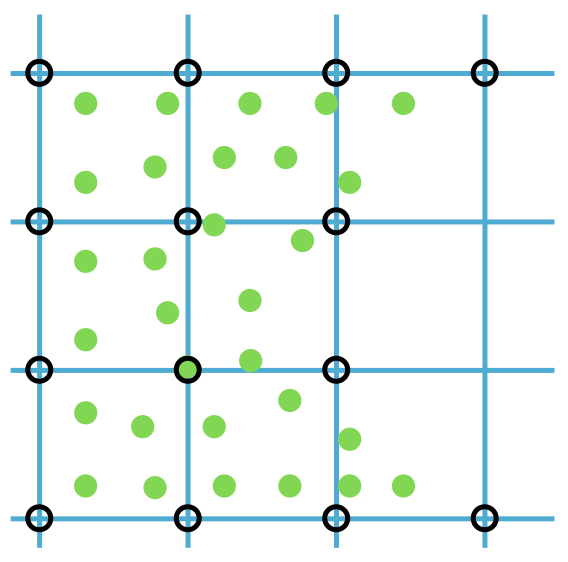
图 1.1.2. 粒子与网格
在现代固体仿真领域，上述定义连接关系的方法至关重要。第一种方法通过由边或三角形构成的网格建立连接，是有限元方法（Finite Element Method，FEM）仿真器的基础。第二种方法利用均匀网格计算固体密度并建立连接，是物质点法（Material Point Method，MPM）仿真器不可或缺的组成部分 [Jiang et al. 2016]。本书主要关注前一种方法，深入探讨有限元方法（FEM）的细节。有限元方法（FEM）基于网格的结构把复杂区域分解为较简单的单元，因而在处理复杂区域时尤为有效。这使有限元方法（FEM）成为可变形固体研究与仿真的核心工具，理解其精微之处对从事该领域研究的人至关重要。
乍看之下，物质点法（MPM）中同时使用两种固体几何表示似乎冗余。然而这一双重途径赋予了物质点法（MPM）显著的优势，尤其是在仿真固体断裂这类动态事件时。在这类情形下，有限元方法（FEM）若要准确刻画损伤，就必须细致地修改定义原始连接关系的边与单元。相比之下，物质点法（MPM）能高效处理这些情形。均匀网格天然地容纳了断裂中物体各部分的分开：断裂节点处没有物质，相邻网格节点便自动断开连接。这一特性使物质点法（MPM）在应对固体拓扑变化方面表现出色。
不过，就仿真精度控制而言，有限元方法（FEM）更胜一筹。有限元方法（FEM）直接在网格上运算，无需不断进行信息传递，因而能保证更高的精度。这种精度使有限元方法（FEM）成为精确仿真可变形固体的重要工具，而这正是本书的重点所在。
在连接关系固定的前提下，把每个采样点的坐标合并为一个扩展向量（记作 \( x\in\mathbb{R}^{dn} \)，见下图），是描述某一具体几何构型的有效手段。在这个表示中，\(d\) 表示空间维度（1、2 或 3），\(n\) 表示点的总数。同样地，每个采样点上的速度、加速度和力等属性也可以合并为相应的扩展向量，分别记作 \(v\)、\(a\) 和 \(f\)。这种条理化的数据呈现方式不仅有助于全面理解各项参数及其相互关系，也使仿真过程的数学表述更加简洁。
牛顿第二定律
在定义了如何表示固体几何在某一时刻的状态之后，我们现在面临的挑战是预测固体随时间变化的运动与变形。这一预测是实现精确仿真的关键环节。
牛顿第二定律写作 \(\mathbf{f} = m \mathbf{a}\)，它表明力 \(\mathbf{f}\) 是速度发生变化的主要原因，而速度变化由加速度 \(\mathbf{a}\) 体现。需要理解的是，当固体的位移场超出简单的平移运动或旋转运动及其线性组合时，就意味着发生了变形。把牛顿第二定律施加到每个采样点上，我们就能有效地预测固体的运动与变形。这一概念可用向量形式简洁地表达：
其中 \(M\in\mathbb{R}^{dn\times dn}\) 为质量矩阵，\(x\)、\(v\) 和 \(f\) 分别是把位置、速度与力堆叠而成的列向量。这一做法为可变形固体的仿真奠定了基础，它在离散空间与连续时间中同时融入了运动的基本原理。
注记 1.2.1 (堆叠变量). 尽管理论上质量矩阵 \(M\) 不一定是对角矩阵，但在实际应用中常常将其简化为对角矩阵。这样得到的是集中质量矩阵，它表示一个由离散质点组成的系统，为处理复杂系统提供了高效途径。 以二维空间中的两点系统为例加以说明。该系统的集中质量矩阵可表示为： \[ M = \begin{pmatrix} m_1 & & & \\ & m_1 & & \\ & & m_2 & \\ & & & m_2 \end{pmatrix}, \] 这里假定形如 \({v}\)（以及 \({x}\) 和 \({f}\)）的向量按特定顺序堆叠： \[ v = (v_{11}, v_{12}, v_{21}, v_{22})^T, \] 其中 \(v_{i\alpha}\) 表示第 \(i\) 个点的速度 \(\mathbf{v}_i\) 的第 \(\alpha\) 个分量。这种条理化的结构大大简化了计算，也加深了对系统动力学的理解。
时间积分
牛顿第二定律为一组以连续形式表达的常微分方程（Ordinary Differential Equations，ODEs）奠定了基础。这类似于我们此前在空间中使用采样点来离散地表示连续几何的做法。现在，我们在时间维度上采取类似的思路。通过在时间上采样点，我们可以有效地表示时间导数，例如 \(\frac{\mathbf{d} x}{\mathbf{d} t}\) 和 \(\frac{\mathbf{d} v}{\mathbf{d} t}\)。
定义 1.3.1 (时间积分). 当把时间离散为固定的小区间时，我们把第 \(n\) 步的时刻记作 \(t^n\)，通常称为时间步。该区间的长度，即时间步长，由 \(\Delta t = t^{n+1} - t^n\) 给出。时间步的计数 \(n\) 通常是从零开始的整数，因此 \(t^0=0 s\) 是仿真的起点。
时间步的概念引出了符号 \(x^n\)、\(v^n\) 和 \(f^n\)，分别表示第 \(n\) 个时间步各节点的位置、速度和力。时间步进（timestepping）或称时间积分，指的是在每个递增的时间步 \(n=0,1,2,\dots\) 上由 \(x^n, v^n\) 计算 \(x^{n+1}, v^{n+1}\) 的过程。若需直观的演示，可以设想一段犰狳弹弓动画。该动画的每一帧都按从左到右的顺序逐步计算得出，如下图所示。在这里，时间步进犹如电影胶片的逐帧推进，一步一步地展现系统不断演化的动力学行为。
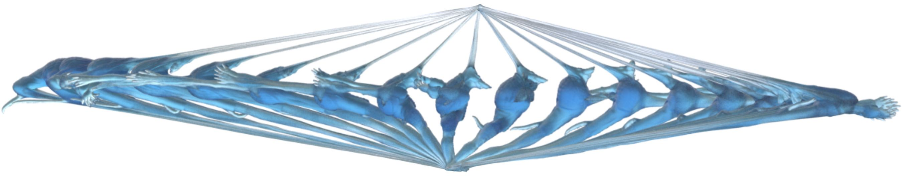
就本书及我们所考察的仿真场景而言，必须强调一个关键假设：我们总能精确已知仿真开始时的初始值 \(x^0\) 和 \(v^0\)。此外，对于每个时间步，我们要么有基于物理模型计算 \(f^n\) 的方法，要么能随时获得其精确值，例如重力这样的常力。这一假设是我们方法的基础，它确保仿真建立在已知的初始条件与力之上，从而得到更准确、更可靠的结果。
显式时间积分
显式时间积分格式提供了一种直接的方法：把已知量代入简单的公式即可算出 \(x^{n+1},v^{n+1}\)，正因如此它们被称为显式。本节聚焦两种基本的显式格式：前向欧拉法与辛欧拉法。
前向欧拉法
为了把连续时间系统转换为离散形式，我们采用前向差分近似。在该近似中，导数 \((\frac{\mathbf{d} x}{\mathbf{d} t})^n\) 被估计为 \(\frac{x^{n+1} - x^n}{\Delta t}\)，同样地，\((\frac{\mathbf{d} v}{\mathbf{d} t})^n\) 被估计为 \(\frac{v^{n+1} - v^n}{\Delta t}\)。上标 \(n\) 表示第 \(n\) 个时间步的状态变量。由此，系统的离散版本可写为： 假设质量不随时间变化，这些方程便给出了更新状态变量的明确机制。已知第 \(n\) 个时间步的当前值 \(x^n\)、\(v^n\) 和 \(f^n\)，我们就能直接确定它们在下一个时间步 \(n+1\) 的值。
方法 1.4.1 (牛顿第二定律的前向欧拉时间积分). 在前向欧拉法中，下一时间步 \(n+1\) 的状态变量 \(x^{n+1}\) 与 \(v^{n+1}\) 由当前值 \(x^n\) 和 \(v^n\) 计算得到。更新规则为： 这里，\(\Delta t\) 表示时间步长，\(M\) 是质量矩阵，\(f^n\) 是当前时间步 \(n\) 的力。
前向欧拉法被认为是无条件不稳定的：这意味着无论选取多么小的时间步 \(\Delta t\)，只要方程中的 \(f\) 不是常数，数值解最终都会显著增长（爆炸），而精确解却不受影响（参见 图 1.4.1 左图）。
辛欧拉法
如果在位置导数的离散中把上标 \(n+1\) 加在 \(v\) 上，而速度导数保持不变，我们就得到一条新的更新规则：
方法 1.4.2 (牛顿第二定律的辛欧拉时间积分). 已知当前状态变量、质量矩阵以及从 \(t^n\) 到 \(t^{n+1}\) 的时间步长， 其中 \(n=0,1,2,\dots\)。
只需稍作改动，积分就变为条件稳定的。这意味着只要 \(\Delta t\) 保持在特定问题的上限之内，我们就能有效地把解的数值误差限制住。此外，辛欧拉法还具有保持系统能量的良好特性，如下图中间所示。
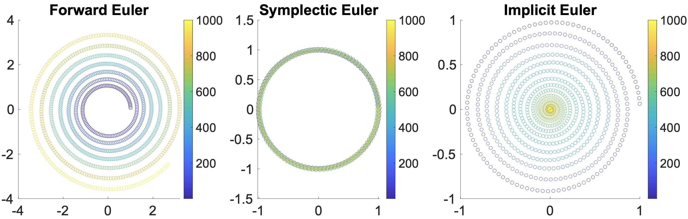
隐式时间积分
与显式时间积分相反，隐式时间积分需要求解一个方程组才能确定 \(x^{n+1}\) 和 \(v^{n+1}\) 的值。这种方法的一个显著优势是它有可能大幅提升稳定性。最简单的隐式积分形式——后向欧拉法——介绍如下。
方法 1.5.1 (后向欧拉时间积分在牛顿第二定律中的应用). 已知当前状态变量、质量矩阵以及从 \(t^n\) 到 \(t^{n+1}\) 的时间区间，更新规则如下： 其中 \(n\) 取值为 \(0,1,2,\dots\)。
在本书讨论的许多情形中，力由位置向量 \(x\) 导出。因此我们可以记 \(f^{n+1} = f(x^{n+1})\)。必须认识到，\(x^{n+1}\) 的更新依赖于已知的 \(v^{n+1}\)，而 \(v^{n+1}\) 的计算又取决于 \(x^{n+1}\)。这种相互依赖形成了循环依赖，因此必须求解一个方程组才能准确求出 \(x^{n+1}\) 与 \(v^{n+1}\)。令 \(v^{n+1} = (x^{n+1} - x^n) / \Delta t\)，方程 (1.5.1) 可改写为： 由于力 \(f\) 相对于位置 \(x\) 往往呈现非线性，方程 (1.5.2) 通常也是非线性的，需要借助牛顿法之类的非线性求根技术来求解。
方法 1.5.2 (将牛顿法应用于后向欧拉时间积分). 如下方算法所述，牛顿法是一种迭代技术，从解的初始估计 \(x^i\) 出发。在当前迭代点 \(x^i\) 处，它对 \(f(x^{n+1}) \approx f(x^i) + (x^{n+1}-x^i) \nabla f(x^i)\) 做线性近似，然后求解一个线性系统并更新迭代。这一过程反复进行，直至达到令人满意的收敛程度。
算法 1.5.1 (后向欧拉时间积分的牛顿法).

虽然后向欧拉法即使在 \(\Delta t\) 取很大值时也能保证无条件稳定，但必须认识到，增大 \(\Delta t\) 可能导致系统条件数变差。条件数变差会使线性系统的求解更加困难。此外还需要牢记，力的线性化只是一种近似。如果解的初始估计与真实解相距较远，标准的牛顿迭代可能不收敛，甚至可能发散。
在后文的讨论中，我们将介绍一种改进的牛顿法。这一改进旨在针对特定类型的问题保证收敛，而不论初始估计如何、\(\Delta t\) 取多大。
小结
固体的仿真涉及预测其位置与形态随时间的变化。要在计算机上实现这一点，几何与时间都必须以离散方式表示。
几何通常用按特定方式相互连接的采样点来表示：
- 有限元方法（Finite Element Method，FEM） 通过非结构化网格连接采样点。
- 物质点法（Material Point Method，MPM） 利用均匀笛卡尔网格连接采样点。 有限元方法（FEM）擅长给出高精度的结果，而物质点法（MPM）在处理拓扑变化方面更具优势。本书主要关注有限元方法（FEM）。
时间被离散为一个个时刻，并按照牛顿第二定律，用有限差分方法计算物理量的时间导数。
前向欧拉法因其无条件不稳定性通常被弃用。相反，辛欧拉法是显式的且条件稳定，对于条件良好的问题往往更受青睐。对于刚性问题，通常采用后向欧拉法：它无条件稳定，但需要求解非线性方程组；尽管计算量大且可能出现数值不稳定，它仍被广泛使用。
下一讲我们将探讨隐式时间积分的优化视角，它为这类问题提供了鲁棒的求解方案。
优化框架
优化时间积分器
采用后向欧拉法时，每个时间步都需要求解式 (1.5.2) 所述的非线性方程组。实际上，这等价于求解如下优化问题： 这里，\(\tilde{x}^n = x^n + \Delta t v^n\)，\(\frac{1}{2} \|x - \tilde{x}^n\|^2_M = \frac{1}{2} (x - \tilde{x}^n)^T M (x - \tilde{x}^n)\) 表示惯性项，\(P(x)\) 表示力 \(f(x)\) 对应的势能，满足 \(\frac{\partial P}{\partial x}(x) = -f(x)\)，而 \(E(x)\) 称为增量势（Incremental Potential）。在 \(E(x)\) 的局部极小点处，\(\frac{\partial E}{\partial x}(x^{n+1}) = 0\)，对应式 (1.5.2)。
将时间积分视为优化问题，使我们能够利用成熟的优化方法稳健地获得解。它也为建模更复杂的物理现象提供了一致的框架。
定义 2.1.1 (保守力). 若存在势能 \(P(x)\) 使得 \(\frac{\partial P(x)}{\partial x} = -f(x)\)，则这样的力 \(f(x)\) 称为保守力。常见的弹性力以及重力等体力都是保守力的例子。只需把势能项加入增量势，它们便可轻松纳入优化框架。
注记 2.1.1 (重力). 作用在质量为 \(m\) 的物体上的重力（以力 \(F = -mg\mathbf{z}\) 表示），当物体位于距地球表面高度 \(h\) 处时，其中 \(g\) 为重力加速度，\(\mathbf{z}\) 为竖直向上的单位向量，对应重力势能 \(U = mgh\)。这里，\(U\) 是把物体从参考点（位于 \(h = 0\)）移动到高度 \(h\) 时克服重力所做的功。力是能量对位置的负梯度（数学上写作 \(F = -\nabla U\)），这与能量守恒原理相符。对 \(U\) 关于 \(h\) 求导，可得 \(\nabla U = mg\mathbf{z}\)，因此 \(F = -\nabla U = -mg\mathbf{z}\)，与我们最初写出的力表达式一致。
注记 2.1.2 (弹性). 弹性是固体在外力作用下保持其静止形状的能力。在弹性的作用下，同一固体上的采样点在仿真过程中会被绑定在一起。越坚硬的固体，其弹性能越刚硬，在相同变形程度下提供更大的弹力，从而有助于恢复静止形状。犰狳弹弓示例（图 1.3.1）展示了典型的弹性效果。弹性是所有固体的共同属性，与其几何形态无关，也无论它在直觉上是刚性还是非刚性，例如金属、木材、软组织、橡胶、布料、毛发、沙土等。
狄利克雷边界条件
势能并非建模物理现象的唯一手段；约束同样不可或缺。先从最简单的形式——线性等式约束——说起。该约束优化问题定义如下： 其中 \(A\in \mathbb{R}^{m\times dn}\) 与 \(b\in \mathbb{R}^{m}\) 表示 \(m\) 个线性等式约束。
仿真过程中，常常需要在每个时间步控制固体上某些点的位置。这可以是固定一组节点，用以建模地面、障碍物等不可移动的物体；也可以是让特定节点沿预定路径移动，从而引导固体的运动。例如，在弹弓场景（图 1.3.1）中，犰狳的脚和耳朵保持静止。这类控制称为狄利克雷边界条件（Dirichlet Boundary Condition，DBC）。在优化时间积分器框架内，这些条件可以表示为线性等式约束。
具体而言，式 (2.2.1) 中的矩阵 \(A\) 通常是 \(m\times dn\) 矩阵（\(m\leq dn\) 且 \(m \mod d = 0\)），它挑选出狄利克雷边界条件（DBC）点的坐标。相应地，\(b\) 是 \(m \times 1\) 向量，给出规定的位置。通过求解该优化问题，所选点被固定在这些指定位置上，而这些位置可以逐时间步变化。
在式 (2.2.1) 所示问题的局部极小点处，满足 KKT 条件 其中 \(\lambda \in \mathbb{R}^{m}\) 表示拉格朗日乘子向量，它由全部拉格朗日乘子构成。
注记 2.2.1 (求解 KKT 系统). 求解带等式约束的非线性优化问题，可以通过直接处理式 (2.2.2) 所示的非线性 KKT（Karush-Kuhn-Tucker）系统来实现。为此通常采用牛顿法之类的方法。然而，这种做法计算开销可能很大。对于边界条件，我们可以利用矩阵 \(A\) 的特殊结构，以无约束的方式求解该约束问题。实现这一思路的技术将在后续章节中演示。
接触
要准确地仿真固体，就必须确保它们不发生相互穿透，如下图所示（左侧）。一种有效的方法是对时间步长施加 CFL（Courant-Friedrichs-Lewy 条件）上限，这在物质点法（Material Point Method，MPM）之类的方法中尤为重要。在有限元方法（Finite Element Method，FEM）中，这要求对接触力进行精确建模。然而，精确地建模接触并非易事。接触本质上是一个非光滑过程，它在固体相互接触的瞬间突然发生。目前并不存在能够准确刻画这一现象的势能形式。

在实际应用中，判断两个物体是否发生碰撞，通常依靠视觉与思维上对它们接近程度的评估。当它们之间的距离不为零时，说明仍存在空隙，尚未发生碰撞。在计算语境下建模物体间的相互作用时，这一概念至关重要。
为避免碰撞或穿透，我们可以保证运动物体表面之间的距离始终不降为零。这一思路在计算仿真的时间积分问题中尤为有用。我们用不等式约束来建模这一情形，这些约束与边界条件相结合，便将时间积分问题表述为： 这里，\(c_k\) 度量固体表面上特定区域对之间的距离，而 \(\epsilon \rightarrow 0\) 是一个很小的正值，用以确保 \(c_k(x)\) 保持严格为正。
在式 (2.3.1) 所示问题的局部极小点处，需满足 Karush-Kuhn-Tucker（KKT）条件，如下： 在该条件中，\(\gamma_k\) 是约束 \(c_k(x) \geq \epsilon\) 的拉格朗日乘子。具体来说，\(\nabla c_k(x)\) 指向接触对 \(k\) 的接触力方向。这一方向与由 \(\gamma_k\) 表示的幅值相结合，便给出该点处实际的接触力。
注记 2.3.1 (互补松弛条件). 互补松弛条件 \(\gamma_k (c_k(x) - \epsilon) = 0\) 起着关键作用：它保证只有当固体相互接触（\(c_k(x) = \epsilon\)）时才会存在接触力（\(\gamma_k \neq 0\)）。反之，当固体未接触（\(c_k(x) > \epsilon\)）时，不应存在接触力（\(\gamma_k = 0\)）。
定义 2.3.1 (活跃集). 对于带有如下定义的不等式约束的优化问题 \[ \forall k, \ c_k(x) \geq 0, \] 活跃集（active set）定义为 \[ \{ l \ | \ c_l(x^*) = 0 \}. \] 这里，\(x^*\) 是该问题的局部最优解。
注记 2.3.2 (组合困难). 互补松弛条件表明，在解处只有活跃集内的约束才具有非零的拉格朗日乘子 \(\gamma_k\)。这意味着，与等式约束不同，不等式约束不仅需要求解拉格朗日乘子的取值，还要求判定哪些 \(\gamma_k\) 应被置为 \(0\)。这就带来了组合上的困难。
处理带不等式约束的优化问题有大量可用技术。每种方法都引入了不同的思路，针对问题的不同侧面。
-
原始-对偶方法： 这一类方法同时处理原始问题（即原优化问题）与其对偶问题。对偶问题往往能为原始问题的解提供有价值的洞见，因此这一思路颇具吸引力。这类方法是迭代式的，利用原始问题与对偶问题之间的关系来逐步改进初始解。然而，原始-对偶算法的设计与实现可能相当繁复，需要在两类问题之间小心权衡。这些方法虽然有效，但对于复杂的高维问题可能并不高效或直接。
-
投影最速下降法： 这类方法是对经典最速下降法的修正，用以处理约束。每次迭代中，算法沿最速下降方向移动，若因约束而偏离可行集，则再投影回可行集。该方法简单直接，因而广受欢迎，但面对收敛缓慢的病态问题，或面对难以投影的约束时，可能力不从心。
-
内点法： 又称障碍函数法，这类技术引入一个对不可行解施加惩罚的障碍函数，从而把解引导向可行域的内部。该思路有效地将约束问题转化为无约束问题，可用常规技术求解。然而，障碍函数的选择会显著影响方法的表现。这类方法对某些类型的问题很高效，但若可行域难以定义或缺乏简单的内部，则可能难以奏效。
尽管上述各种方法各有优劣，我们的主要关注点将是一种鲁棒而准确的接触建模方法，即增量势接触（Incremental Potential Contact，IPC）。增量势能接触（IPC）的独特之处在于用一个光滑的势能来近似接触过程。这一变换有效地把问题转化为无约束问题，便于应用各种高效且鲁棒的优化技术。增量势能接触（IPC）的一个关键特性是，它能够把相对于非光滑形式的近似误差控制在预先确定的界内。这一特性进一步提升了方法的鲁棒性与可靠性，使其成为解决接触问题的一条颇具前景的途径。
摩擦
摩擦是涉及运动的物理相互作用中的关键要素，往往显著影响仿真结果。因此，精确地建模摩擦对于真实、可靠的仿真至关重要。需要精确表示摩擦的场景示例，参见 图 2.3.1 右侧。
应用最广泛的摩擦模型之一是库仑摩擦模型。该模型以最大耗散原理（Maximal Dissipation Principle，MDP）为基础，能够有效地刻画静摩擦与动摩擦之间的非光滑转换。静摩擦是阻止物体开始运动的力，而动摩擦（kinetic friction）则阻碍运动物体的运动。库仑摩擦模型准确地描述了这两种摩擦类型之间的关键转换。
在标准的物质点法（Material Point Method，MPM）中，摩擦由网格内在地建模。然而，这种方法有其缺陷，尤其是摩擦系数不可控且大得不切实际。
对于有限元方法（Finite Element Method，FEM），在增量势接触（Incremental Potential Contact，IPC）模型中，摩擦可以通过近似的势能来更真实、更可控地表示。这与我们的优化时间积分框架十分契合。用势能来近似摩擦，不仅保持了仿真的鲁棒性，还能让我们控制摩擦模型的精度。
在后续章节中，我们将深入探讨增量势能接触（IPC）模型中用于表示摩擦力的具体技术与方法，以及它们在提升仿真的精度与真实感方面所起的作用。
小结
到目前为止，我们讨论的目标是为无条件稳定的隐式时间积分问题设计一种可靠的求解方案。我们旨在解决由截断误差引起的解不收敛问题。为此，我们把时间积分问题重新表述为一个最小化问题。这种表述不仅使我们能够应用成熟的优化技术，也为不同物理现象提供了一致的建模框架。
下面简要总结在该框架内用于建模各类现象的技术：
- 对于重力和弹性之类的保守力，我们使用势能。这些势能被加入目标函数，从而准确表示所涉及的力。
- 边界条件规定了系统所受的约束，我们用简单的线性等式约束来建模。这有助于我们在执行仿真时把系统限制在可行状态上。
- 为防止仿真中固体之间相互穿透，我们用不等式约束来建模接触与摩擦。这些约束确保物体保持其物理完整性，并在相互接触时表现符合预期。
此处值得注意的一个重要方面是，我们可以利用边界条件的特殊结构，以无约束的方式施加等式约束。这将显著降低计算复杂度。
此外，我们介绍了增量势接触（Incremental Potential Contact，IPC）方法的概念。增量势能接触（IPC）方法将接触与摩擦建模为精度可控的光滑势能。这确保了固体仿真的鲁棒与准确，且不发生相互穿透。
接下来，在下一章中我们将深入探讨用于求解无约束优化问题的投影牛顿法。该方法具有全局收敛的优势，也就是说，只要初始构型是可行的，就保证收敛。这一特性对复杂仿真尤为重要，也使该方法更加鲁棒、可靠。
投影牛顿法
牛顿法的收敛性问题
在处理隐式欧拉时间积分所给出的最小化问题（参见式 (2.1.1)）时，对由此得到的非线性方程组采用牛顿法（见 算法 1.5.1）是一种可行的策略。这需要令增量势能的梯度为零：
然而，将该方法应用于非线性弹性等情形（尤其是新胡克模型）时，并不总能保证收敛。截断误差的存在——尤其是在时间步较大或变形显著的场景中——会妨碍收敛。
示例 3.1.1 (牛顿法收敛问题的图示). 为说明牛顿法不收敛的问题，我们考察一个以一维目标函数为特征的极小化问题： 可以在 处计算该函数，并用二次能量 对其作近似，其定义为： 与 的联合绘图（图 3.1.1）清楚地显示，下一次迭代会越过真实目标，落在距真实解 更远的点（）上。随后的迭代不断放大这一偏差，导致轨迹发散。值得注意的是，这一演示涉及的还是一个凸函数 。当把牛顿法用于非凸的弹性能时，问题会变得更加复杂。
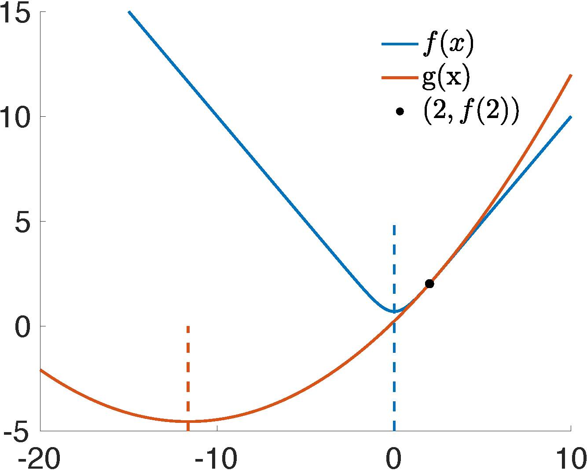
图 3.1.1. 在 处对 执行牛顿法的一次迭代。
注记 3.1.1 (能量的凸性). 凸函数的特征是其在整个定义域上的二阶导数对称正定（Symmetric Positive Definite，SPD）。相反，计算机图形学中使用的大多数非线性弹性模型的能量具有旋转不变性。这意味着无论物体或单元处于何种旋转朝向，能量值都保持不变。这种旋转不变性导致了非凸性，使优化过程更加复杂。
定义 3.1.1 (对称正定性). 方阵 是对称正定的，当且仅当
- ，且
- 对任意 ，都有 。
与直接求解非线性方程不同，最小化问题提供了能量度量，使我们能够借助一种称为线搜索的技术来保证全局收敛。
线搜索
在迭代最小化方法中，线搜索在每次迭代中只取步长的一部分，以保证目标能量在新点处下降。
具体来说，对于牛顿法，算法 1.5.1 中的第 4 行由 \(x^i \leftarrow x\) 改为 \(x^i \leftarrow x^i + \alpha (x - x^i)\)，其中 \(\alpha \in (0,1]\) 是步长，它对能量的下降至关重要。这引出了两个关键问题：这样的 \(\alpha\) 总是存在吗？\(\alpha\) 是如何计算的？
注记 3.2.1 (α 的存在性). 设目标能量 \(E(x)\) 在 \(x^i\) 处光滑且 \(\nabla E(x^i) \neq 0\)，若搜索方向 \(p=x-x^i\) 为下降方向，即 \(p^T \nabla E(x^i) < 0\)，则存在 \(\alpha > 0\) 使得 \(E(x^i + \alpha p) < E(x^i)\)。
方法 3.2.1 (回溯线搜索). 给定一个下降方向，我们可以从 \(1\) 开始不断将其折半，直到新位置处的能量小于当前能量，从而找到一个合理较大的 \(\alpha\)（见 算法 3.2.1）。
算法 3.2.1 (回溯线搜索算法). 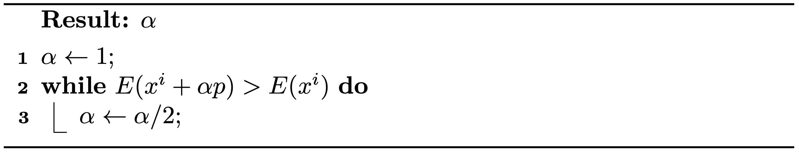
注记 3.2.2 (其他线搜索方法). 还有一些其他的线搜索方法，它们试图利用多项式插值来寻找一个 \(\alpha\)，使新位置处的能量更接近线段 \(x^i + s p\)（\(s\in(0,1]\)）上的局部极小值。然而，这类方法通常会带来更高的计算开销，而且未必能改善优化的整体实际耗时。
现在，有了线搜索，如果牛顿法始终能产生下降的搜索方向，那么对于任意初始构型、任意具有下界的光滑能量，该方法都保证收敛。我们知道在第 \(i\) 次迭代中，\(p = -(\nabla^2 E(x^i))^{-1} \nabla E(x^i)\)，因此 \(p^T \nabla E(x^i)\) 等于 \(-\nabla E(x^i)^T (\nabla^2 E(x^i))^{-T} \nabla E(x^i)\)。对于凸能量，\(\nabla^2 E(x^i)\) 总是对称正定（Symmetric Positive Definite，SPD）的，\((\nabla^2 E(x^i))^{-T}\) 亦然，因此 \(p\) 始终是下降方向。然而，对于非凸能量，这一保证并不总是成立。解决该问题的一种方法是使用凸能量代理在局部近似能量。
基于梯度的优化
标准牛顿法的搜索方向通过最小化目标能量的局部二次近似来计算： 其中 \(P = \nabla^2 E(x^i)\)。在一般的基于梯度的优化方法中，\(p\) 可以用任意代理矩阵 \(P\) 通过式 (3.3.1) 计算得到。取 \(P = I\) 便得到 \(p = -\nabla E(x^i)\)，这正是标准梯度下降法所采用的。由于能量近似是低阶的，该方法的收敛速度比牛顿法更慢。代理矩阵 \(P\) 越接近海森矩阵 \(\nabla^2 E(x^i)\)，收敛就越快。因此，用海森矩阵的对称正定（Symmetric Positive Definite，SPD）近似作为代理，既能保证搜索方向始终为下降方向，又能保持接近二次的收敛速度。这类似于用凸的能量代理在局部近似非凸能量。
获得这种对称正定（SPD）近似的一种直接方法是：先通过求解 把 \(\nabla^2 E(x^i)\) 投影到其最接近的半正定矩阵上，然后引入扰动以确保 \(P\) 可逆。此时解为 \(P = Q \hat{\Lambda} Q^{-1}\)，其中 \(P = Q \Lambda Q^{-1}\) 是特征分解，且当 \(\Lambda_{ij} > 0\) 时 ，否则 \(\hat{\Lambda}_{ij} = 0\)。直观地说，\(P\) 就是把 \(\nabla^2 E(x^i)\) 的所有负特征值置零后得到的矩阵。
定义 3.3.1 (特征分解). 方阵 \(A \in \mathbb{R}^{n \times n}\) 的特征分解为 其中 \(Q = [q_1, q_2, ..., q_n]\) 由 \(A\) 的特征向量 \(q_i\) 组成，；\(\Lambda = [\lambda_1, \lambda_2, ..., \lambda_n]\)，其中 \(\lambda_1 \geq \lambda_2 \geq ..., \lambda_n\) 是 \(A\) 的特征值；且 \(Aq_i = \lambda_i q_i\)。
然而在仿真中，\(\nabla^2 E(x^i)\) 通常是大型稀疏矩阵，对其进行特征分解的代价将高得难以承受。幸运的是，我们将在本书后文发现，固体仿真中的增量势可以表示为定义在局部模板上的能量之和，例如二维有限元方法（Finite Element Method，FEM）网格中的一个三角形： 其中 \(\mathbf{x}_{jk}\) 是与能量 \(E_j\) 相关联的节点。因此，我们只需对定义在少量节点上的每个 \(\nabla^2 E_i\) 把负特征值置零再汇总，便可方便地获得一个相当好的对称正定（SPD）近似。
示例 3.3.1 (局部投影方法). 要在具有 10,201 个节点和 20,000 个三角形的三角形网格上仿真二维弹性，海森矩阵 \(\nabla^2 E(x)\) 的规模为 \(20,402 \times 20,402\)。对于上述局部投影方法，需要对 \(6 \times 6\) 矩阵执行 20,000 次特征分解。考虑到对 \(n \times n\) 矩阵做特征分解的计算复杂度比 \(O(n^2)\) 更差，这一粗略估计已经表明，对于这个中等规模的问题，采用局部投影方法可带来超过 \(500\times\) 的加速。
此外，由于 \(\nabla^2 E(x^i)\) 中的质量矩阵是对称正定（SPD）的，而对称正定（SPD）矩阵之和仍为对称正定（SPD），因此在投影其他矩阵时无需引入扰动。下面我们在 算法 3.3.1 中总结用于后向欧拉时间积分的全局收敛投影牛顿法。

注记 3.3.1 (停止准则). 由式 (3.3.1) 可知， 可解释为当前估计 \(x^i\) 到最优解之间距离的二次近似。因此我们采用 作为更直观的停止准则度量。该做法把它转换为速度单位，并取所有节点上的最大幅值。
小结
- 在考察了传统牛顿法的收敛性问题（即使在光滑凸能量上也会出现）之后，我们引入了回溯线搜索方案，用于最小化隐式欧拉时间积分的增量势能，从而确保全局收敛。
- 为保证能够找到一个正的步长，我们将增量势能的海森矩阵投影到附近的对称正定（Symmetric Positive Definite，SPD）矩阵上。这种 对称正定（SPD）投影通过消去每个非凸能量模板所对应海森矩阵的负特征值来高效实现，而每个模板只涉及少数几个节点。
- 我们还引入了一种收敛判据，它利用牛顿搜索方向，让容差的设置更直观、更一致。
在下一讲中，我们将通过一个简单的二维案例研究，对本书涉及的所有内容作清晰的演示，以此作为收尾。
案例研究：二维质点-弹簧系统*
至此，我们已完成对基于优化的固体仿真框架的高层介绍。本讲将详细说明如何用 Python3（CPU）与 MUDA（GPU）实现一个简单的二维弹性动力学仿真器。
本书中配有 Python CPU 与 MUDA GPU 实现的章节，将在标题后以 * 号标记。
所有 Python 与 MUDA 实现分别可在 https://github.com/phys-sim-book/solid-sim-tutorial 与 https://github.com/phys-sim-book/solid-sim-tutorial-gpu 中找到。
本节的可执行项目位于这些仓库的 /1_mass_spring 文件夹中。
空间与时间离散化
在表示固体几何时，我们采用网格结构。进一步用边连接网格上的节点，从而简化这一表示。为便于该过程，尤其是对方形这类几何体，我们可以编写一个网格生成脚本。该生成器允许同时指定方形的边长与所需的网格分辨率。
实现 4.1.1 (方形网格生成，square_mesh.py).
import numpy as np
import os
def generate(side_length, n_seg):
# sample nodes uniformly on a square
x = np.array([[0.0, 0.0]] * ((n_seg + 1) ** 2))
step = side_length / n_seg
for i in range(0, n_seg + 1):
for j in range(0, n_seg + 1):
x[i * (n_seg + 1) + j] = [-side_length / 2 + i * step, -side_length / 2 + j * step]
# connect the nodes with edges
e = []
# horizontal edges
for i in range(0, n_seg):
for j in range(0, n_seg + 1):
e.append([i * (n_seg + 1) + j, (i + 1) * (n_seg + 1) + j])
# vertical edges
for i in range(0, n_seg + 1):
for j in range(0, n_seg):
e.append([i * (n_seg + 1) + j, i * (n_seg + 1) + j + 1])
# diagonals
for i in range(0, n_seg):
for j in range(0, n_seg):
e.append([i * (n_seg + 1) + j, (i + 1) * (n_seg + 1) + j + 1])
e.append([(i + 1) * (n_seg + 1) + j, i * (n_seg + 1) + j + 1])
return [x, e]
在代码中，n_seg 表示方形每条边上的边数。节点均匀分布于方形之内，并通过水平、竖直与对角边相互连接。例如，调用 generate(1.0, 4) 会构造出 图 4.1.1 所展示的网格。该实现使用了 Numpy 库的数组数据结构，它为后续步骤所需的向量代数运算提供了便捷的方法。
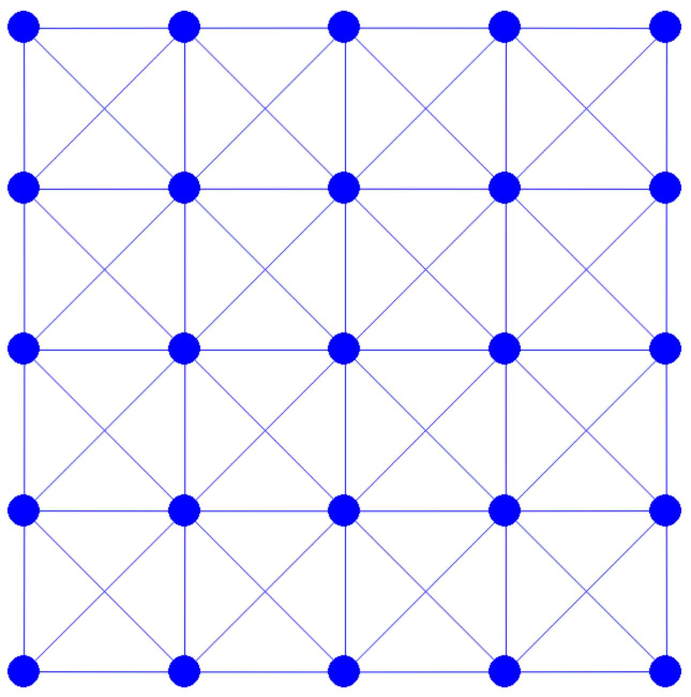
generate(1.0, 4) 所生成的 方形网格。 在时间离散方面，我们采用的方法是隐式欧拉法。在第 (n) 个时间步中需要最小化的增量势能可表示如下： 接下来，我们关注如何实现惯性项与势能 (P(x)) 的能量值、梯度与海森矩阵的计算。
惯性项
对于惯性项，令 \(\tilde{x}^n = x^n + h v^n\)，有 \[ E_I(x) = \frac{1}{2}\|x - \tilde{x}^n \|_M^2, \quad \nabla E_I(x) = M(x - \tilde{x}^n), \quad \text{and} \quad \nabla^2 E_I(x) = M, \] 这可以直接实现：
import numpy as np
def val(x, x_tilde, m):
sum = 0.0
for i in range(0, len(x)):
diff = x[i] - x_tilde[i]
sum += 0.5 * m[i] * diff.dot(diff)
return sum
def grad(x, x_tilde, m):
g = np.array([[0.0, 0.0]] * len(x))
for i in range(0, len(x)):
g[i] = m[i] * (x[i] - x_tilde[i])
return g
def hess(x, x_tilde, m):
IJV = [[0] * (len(x) * 2), [0] * (len(x) * 2), np.array([0.0] * (len(x) * 2))]
for i in range(0, len(x)):
for d in range(0, 2):
IJV[0][i * 2 + d] = i * 2 + d
IJV[1][i * 2 + d] = i * 2 + d
IJV[2][i * 2 + d] = m[i]
return IJV
val()、grad() 与 hess() 函数分别用于计算惯性项的不同组成部分。具体而言：
val()：计算惯性项的值。grad()：计算惯性项的梯度。hess()：确定惯性项的海森矩阵。
关于海森矩阵，我们采用了一种节省内存的方法。我们并不分配一个大型二维数组来存储海森矩阵的所有条目，而是只保留非零条目。这通过 IJV 结构实现，它由三个列表组成：
- 行索引：标识每个非零条目所在的行位置。
- 列索引：指示每个非零条目所在的列位置。
- 值：指定行与列处的实际非零值。
该方法显著降低了内存占用以及与下游处理相关的计算开销。
质点-弹簧势能
在本案例研究中，我们只关注把质点-弹簧弹性势能纳入系统。质点-弹簧弹性的概念类似于把网格的每条边都视为一根弹簧。这一做法受胡克定律启发，使我们能够将边 上的势能写成如下形式：
这里， 与 表示边两端点的当前位置。变量 表示边的原始长度， 是控制弹簧刚度的参数。值得注意的是，当两端点之间的距离 等于原始长度 时，势能 取得全局最小值 ，表明没有力作用。
该形式的一个重要特点是开头引入了 。这相当于在整个固体上对弹簧能量进行积分，并选取边作为求积点。这一积分有助于在网格分辨率发生变化时，仍保持刚度行为与参数 之间的一致关系。
与标准弹簧能量形式的另一处不同是，我们避免了开平方运算。我们直接使用 ，使我们的模型具有多项式性质。这一简化使梯度与海森矩阵的表达式更为简洁：
系统的总势能记为 ，可通过将所有边上的势能求和得到。这利用公式 (4.3.1) 计算。因此，总势能表示为： 其中求和遍历网格中的所有边。
实现 4.3.1 (MassSpringEnergy.py).
import numpy as np
import utils
def val(x, e, l2, k):
sum = 0.0
for i in range(0, len(e)):
diff = x[e[i][0]] - x[e[i][1]]
sum += l2[i] * 0.5 * k[i] * (diff.dot(diff) / l2[i] - 1) ** 2
return sum
def grad(x, e, l2, k):
g = np.array([[0.0, 0.0]] * len(x))
for i in range(0, len(e)):
diff = x[e[i][0]] - x[e[i][1]]
g_diff = 2 * k[i] * (diff.dot(diff) / l2[i] - 1) * diff
g[e[i][0]] += g_diff
g[e[i][1]] -= g_diff
return g
def hess(x, e, l2, k):
IJV = [[0] * (len(e) * 16), [0] * (len(e) * 16), np.array([0.0] * (len(e) * 16))]
for i in range(0, len(e)):
diff = x[e[i][0]] - x[e[i][1]]
H_diff = 2 * k[i] / l2[i] * (2 * np.outer(diff, diff) + (diff.dot(diff) - l2[i]) * np.identity(2))
H_local = utils.make_PSD(np.block([[H_diff, -H_diff], [-H_diff, H_diff]]))
# add to global matrix
for nI in range(0, 2):
for nJ in range(0, 2):
indStart = i * 16 + (nI * 2 + nJ) * 4
for r in range(0, 2):
for c in range(0, 2):
IJV[0][indStart + r * 2 + c] = e[i][nI] * 2 + r
IJV[1][indStart + r * 2 + c] = e[i][nJ] * 2 + c
IJV[2][indStart + r * 2 + c] = H_local[nI * 2 + r, nJ * 2 + c]
return IJV
在处理质点-弹簧能量的海森矩阵时，需要注意的是它并非对称正定（Symmetric Positive Definite，SPD）的。为此，我们采用了一种特定的修正：将每条边对应的局部海森矩阵的负特征值中和掉。这一操作在把这些局部海森矩阵组装进全局矩阵之前完成。该过程将负特征值置为零，从而使所得的全局海森矩阵更接近所需的对称正定（SPD）性质。这一修正对牛顿法至关重要。
import numpy as np
import numpy.linalg as LA
def make_PSD(hess):
[lam, V] = LA.eigh(hess) # Eigen decomposition on symmetric matrix
# set all negative Eigenvalues to 0
for i in range(0, len(lam)):
lam[i] = max(0, lam[i])
return np.matmul(np.matmul(V, np.diag(lam)), np.transpose(V))
优化时间积分器
在能够计算任意构型下的增量势能之后，我们现在把注意力转向优化时间积分器的实现。该积分器对于最小化增量势能至关重要，并由此更新节点的位置与速度。这一实现遵循 算法 3.3.1 中给出的方法：
实现 4.4.1 (time_integrator.py).
import copy
from cmath import inf
import numpy as np
import numpy.linalg as LA
import scipy.sparse as sparse
from scipy.sparse.linalg import spsolve
import InertiaEnergy
import MassSpringEnergy
def step_forward(x, e, v, m, l2, k, h, tol):
x_tilde = x + v * h # implicit Euler predictive position
x_n = copy.deepcopy(x)
# Newton loop
iter = 0
E_last = IP_val(x, e, x_tilde, m, l2, k, h)
p = search_dir(x, e, x_tilde, m, l2, k, h)
while LA.norm(p, inf) / h > tol:
print('Iteration', iter, ':')
print('residual =', LA.norm(p, inf) / h)
# line search
alpha = 1
while IP_val(x + alpha * p, e, x_tilde, m, l2, k, h) > E_last:
alpha /= 2
print('step size =', alpha)
x += alpha * p
E_last = IP_val(x, e, x_tilde, m, l2, k, h)
p = search_dir(x, e, x_tilde, m, l2, k, h)
iter += 1
v = (x - x_n) / h # implicit Euler velocity update
return [x, v]
def IP_val(x, e, x_tilde, m, l2, k, h):
return InertiaEnergy.val(x, x_tilde, m) + h * h * MassSpringEnergy.val(x, e, l2, k) # implicit Euler
def IP_grad(x, e, x_tilde, m, l2, k, h):
return InertiaEnergy.grad(x, x_tilde, m) + h * h * MassSpringEnergy.grad(x, e, l2, k) # implicit Euler
def IP_hess(x, e, x_tilde, m, l2, k, h):
IJV_In = InertiaEnergy.hess(x, x_tilde, m)
IJV_MS = MassSpringEnergy.hess(x, e, l2, k)
IJV_MS[2] *= h * h # implicit Euler
IJV = np.append(IJV_In, IJV_MS, axis=1)
H = sparse.coo_matrix((IJV[2], (IJV[0], IJV[1])), shape=(len(x) * 2, len(x) * 2)).tocsr()
return H
def search_dir(x, e, x_tilde, m, l2, k, h):
projected_hess = IP_hess(x, e, x_tilde, m, l2, k, h)
reshaped_grad = IP_grad(x, e, x_tilde, m, l2, k, h).reshape(len(x) * 2, 1)
return spsolve(projected_hess, -reshaped_grad).reshape(len(x), 2)
这里 step_forward() 本质上是带线搜索的投影牛顿法（算法 3.3.1）的直接转写；为清晰起见，我们把增量势能的值（IP_val()）、梯度（IP_grad()）与海森矩阵（IP_hess()）的计算实现为独立的函数。
对于搜索方向的计算，我们使用 Scipy library 中的线性求解器，它擅长处理稀疏矩阵。值得注意的是，该求解器接受压缩稀疏行（Compressed Sparse Row，CSR）格式的矩阵。选择这一格式与求解器是出于它们在处理效率与内存占用方面的优势，这在处理计算仿真中常见的大规模稀疏矩阵问题时尤为有利。
带可视化的仿真
在收集齐二维质点-弹簧仿真器所需的全部要素之后，下一步是实现仿真器。该实现将逐步构建，并包含可视化功能，以提升理解与参与感。
# Mass-Spring Solids Simulation
import numpy as np # numpy for linear algebra
import pygame # pygame for visualization
pygame.init()
import square_mesh # square mesh
import time_integrator
# simulation setup
side_len = 1
rho = 1000 # density of square
k = 1e5 # spring stiffness
initial_stretch = 1.4
n_seg = 4 # num of segments per side of the square
h = 0.004 # time step size in s
# initialize simulation
[x, e] = square_mesh.generate(side_len, n_seg) # node positions and edge node indices
v = np.array([[0.0, 0.0]] * len(x)) # velocity
m = [rho * side_len * side_len / ((n_seg + 1) * (n_seg + 1))] * len(x) # calculate node mass evenly
# rest length squared
l2 = []
for i in range(0, len(e)):
diff = x[e[i][0]] - x[e[i][1]]
l2.append(diff.dot(diff))
k = [k] * len(e) # spring stiffness
# apply initial stretch horizontally
for i in range(0, len(x)):
x[i][0] *= initial_stretch
# simulation with visualization
resolution = np.array([900, 900])
offset = resolution / 2
scale = 200
def screen_projection(x):
return [offset[0] + scale * x[0], resolution[1] - (offset[1] + scale * x[1])]
time_step = 0
square_mesh.write_to_file(time_step, x, n_seg)
screen = pygame.display.set_mode(resolution)
running = True
while running:
# run until the user asks to quit
for event in pygame.event.get():
if event.type == pygame.QUIT:
running = False
print('### Time step', time_step, '###')
# fill the background and draw the square
screen.fill((255, 255, 255))
for eI in e:
pygame.draw.aaline(screen, (0, 0, 255), screen_projection(x[eI[0]]), screen_projection(x[eI[1]]))
for xI in x:
pygame.draw.circle(screen, (0, 0, 255), screen_projection(xI), 0.1 * side_len / n_seg * scale)
pygame.display.flip() # flip the display
# step forward simulation and wait for screen refresh
[x, v] = time_integrator.step_forward(x, e, v, m, l2, k, h, 1e-2)
time_step += 1
pygame.time.wait(int(h * 1000))
square_mesh.write_to_file(time_step, x, n_seg)
pygame.quit()
对于仿真器中的二维可视化，我们使用 Pygame library。仿真从一个仅含单个方形的场景开始，该方形初始时在水平方向被拉伸。在仿真过程中，方形开始恢复其原始的水平尺寸。随后，由于惯性，它会在竖直方向拉伸，来回振荡，直到最终稳定在其静止形状，如（图 4.5.1）所示。
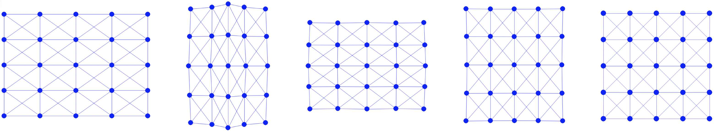
除存储节点位置 x 与边 e 之外，我们的仿真还需要为若干其他关键变量分配内存：
- 节点速度（
v）：用于追踪每个节点随时间的运动。 - 质量（
m）：节点质量通过把方形的总质量均匀分配到每个节点来计算。这是一种初步做法；有限元方法（Finite Element Method，FEM）或物质点法（Material Point Method，MPM）中更细致的节点质量计算方法将在后续章节中探讨。 - 边的静止长度平方（
l2）：对计算质点-弹簧系统中的势能很重要。 - 弹簧刚度（
k）：影响弹簧动力学的关键参数。
为便于仿真器之外的可视化，我们支持将网格数据导出为 .obj 文件。这通过在仿真开始时以及每一帧调用 write_to_file() 函数来实现。该功能便于使用其他可视化软件来分析与展示仿真结果。
实现 4.5.2 (输出方形网格，square_mesh.py).
def write_to_file(frameNum, x, n_seg):
# Check if 'output' directory exists; if not, create it
if not os.path.exists('output'):
os.makedirs('output')
# create obj file
filename = f"output/{frameNum}.obj"
with open(filename, 'w') as f:
# write vertex coordinates
for row in x:
f.write(f"v {float(row[0]):.6f} {float(row[1]):.6f} 0.0\n")
# write vertex indices for each triangle
for i in range(0, n_seg):
for j in range(0, n_seg):
#NOTE: each cell is exported as 2 triangles for rendering
f.write(f"f {i * (n_seg+1) + j + 1} {(i+1) * (n_seg+1) + j + 1} {(i+1) * (n_seg+1) + j+1 + 1}\n")
f.write(f"f {i * (n_seg+1) + j + 1} {(i+1) * (n_seg+1) + j+1 + 1} {i * (n_seg+1) + j+1 + 1}\n")
在所有组件都正确设置之后，下一阶段是启动仿真循环。该循环推进时间积分，并在每个时间步可视化结果。要运行该仿真程序，请在终端中使用以下命令：
python3 simulator.py
注记 4.5.1 (实践考虑). 在仿真器实现就绪之后，我们便能够灵活地试验优化时间积分方案的各种配置。这类测试有助于深入理解每个关键组件的作用与影响。
举例来说，如果我们不把质点-弹簧的海森矩阵投影为对称正定（Symmetric Positive Definite，SPD）形式，在某些条件下可能会出现异常行为。例如，以
h=0.02的帧率时间步长、initial_stretch为0.5运行仿真，可能导致线搜索失败。这又会把时间步长压得很小，使优化迟迟无法推进。虽然线搜索在这个简单的二维示例中似乎多余，但在更复杂的三维弹性动力学仿真中，尤其是涉及大变形的情形，其必要性便显而易见。此时，线搜索对于确保仿真的收敛至关重要。
另一个值得关注的点是传统固体仿真器所采用的停止准则。许多此类仿真器放弃了动态停止准则，而是在预定的迭代次数之后终止优化过程。这种做法虽然简单直接，但在更具挑战性的场景中可能导致数值不稳定或“爆炸”。这凸显了审慎考虑积分方案及其参数以确保仿真稳定与准确的重要性。
GPU 加速仿真
本节作者：Zhaofeng Luo，卡内基梅隆大学
现在我们将二维质点-弹簧仿真器改写为利用 GPU 加速的版本。 我们没有直接编写 CUDA，而是借助 MUDA——一个为 GPU 加速计算提供简洁接口的轻量级库。
GPU 加速仿真器的架构与 Python 版本相似。所有函数名与变量名都与 Numpy 版本保持一致。然而，由于 GPU 的体系结构与编程模型不同，实现细节有所差异。在深入细节之前，让我们先从下面的 gif（图 4.6.1）中直观感受 GPU 能为我们带来的加速。


GPU 编程的关键考虑
为最大化 GPU 上的资源利用率，有两个重要方面需要考虑：
- 最小化数据传输。 在大多数现代体系结构中，CPU 与 GPU 拥有各自独立的内存空间。在这些空间之间传输数据的代价可能很高。因此，必须尽量减少 CPU 与 GPU 之间的数据传输。
- 充分利用并行性。 GPU 擅长并行计算。但必须注意避免多个线程同时尝试访问同一内存位置时可能出现的读写冲突。
最小化数据传输
为减少 CPU 与 GPU 之间的数据传输，我们将主要的能量值及其导数存储在 GPU 上。随后计算直接在 GPU 上进行，只有必要的位置信息被传回 CPU 用于控制与渲染。更高效的实现可以直接在 GPU 上渲染，从而连这部分数据传输也一并消除，但为简单与可读性起见，我们在此并未实现该方案。
为使代码更易读，以 device_ 开头的变量存储在 GPU 内存中，以 host_ 开头的变量存储在 CPU 内存中。
实现 4.6.1 (数据结构，MassSpringEnergy.cu).
template <typename T, int dim>
struct MassSpringEnergy<T, dim>::Impl
{
DeviceBuffer<T> device_x;
DeviceBuffer<T> device_l2, device_k;
DeviceBuffer<int> device_e;
int N;
DeviceBuffer<T> device_grad;
DeviceTripletMatrix<T, 1> device_hess;
};
如上文代码所示，能量值及其导数，以及所有必要的参数，都存储在一个 DeviceBuffer 对象中；该对象是 MUDA 库实现的 CUDA 设备内存的封装。这使我们能够直接在 GPU 上执行计算，而无需在 CPU 与 GPU 之间传输数据。
牛顿法
牛顿法的迭代是一个串行过程，无法并行化。因此，我们将这部分实现在 CPU 上：
template <typename T, int dim>
void MassSpringSimulator<T, dim>::Impl::step_forward()
{
update_x_tilde(add_vector<T>(device_x, device_v, 1, h));
DeviceBuffer<T> device_x_n = device_x; // Copy current positions to device_x_n
int iter = 0;
T E_last = IP_val();
DeviceBuffer<T> device_p = search_direction();
T residual = max_vector(device_p) / h;
while (residual > tol)
{
std::cout << "Iteration " << iter << " residual " << residual << "E_last" << E_last << "\n";
// Line search
T alpha = 1;
DeviceBuffer<T> device_x0 = device_x;
update_x(add_vector<T>(device_x0, device_p, 1.0, alpha));
while (IP_val() > E_last)
{
alpha /= 2;
update_x(add_vector<T>(device_x0, device_p, 1.0, alpha));
}
std::cout << "step size = " << alpha << "\n";
E_last = IP_val();
device_p = search_direction();
residual = max_vector(device_p) / h;
iter += 1;
}
update_v(add_vector<T>(device_x, device_x_n, 1 / h, -1 / h));
}
函数 step_forward 实现了带线搜索的投影牛顿法，它在 GPU 上执行必要的计算，同时在 CPU 上控制整个流程。
此处任何以 device_ 开头的变量都是 GPU 上的 DeviceBuffer 对象。为调试而打印 DeviceBuffer 中的值时，常见做法是将数据传回 CPU，或调用 uti.cu 中实现的 display_vec 函数（该函数在 GPU 上并行调用 printf）。
update_x 函数把节点的位置更新给所有 Energy 类，并将更新后的位置传回 CPU 用于渲染：
template <typename T, int dim>
void MassSpringSimulator<T, dim>::Impl::update_x(const DeviceBuffer<T> &new_x)
{
inertialenergy.update_x(new_x);
massspringenergy.update_x(new_x);
device_x = new_x;
}
由于 Energy 类已经更新了各自的位置，IP_val 函数不再需要传入任何参数，从而避免了不必要的数据传输。
事实上，它只调用所有 energy 类的 val 函数，然后把结果相加：
实现 4.6.4 (计算 IP，simulator.cu).
template <typename T, int dim>
T MassSpringSimulator<T, dim>::Impl::IP_val()
{
return inertialenergy.val() + massspringenergy.val() * h * h;
}
IP_grad 与 IP_hess 函数同理：
实现 4.6.5 (计算 IP 梯度与海森矩阵，simulator.cu).
template <typename T, int dim>
DeviceBuffer<T> MassSpringSimulator<T, dim>::Impl::IP_grad()
{
return add_vector<T>(inertialenergy.grad(), massspringenergy.grad(), 1.0, h * h);
}
template <typename T, int dim>
DeviceTripletMatrix<T, 1> MassSpringSimulator<T, dim>::Impl::IP_hess()
{
DeviceTripletMatrix<T, 1> inertial_hess = inertialenergy.hess();
DeviceTripletMatrix<T, 1> massspring_hess = massspringenergy.hess();
DeviceTripletMatrix<T, 1> hess = add_triplet<T>(inertial_hess, massspring_hess, 1.0, h * h);
return hess;
}
请注意，它们利用 GPU 上的并行操作（add_vector 与 add_triplet，均在 uti.cu 中实现）来完成梯度与海森矩阵的求和。
并行计算
在我们的实现中，并行计算主要用于能量及其导数的计算，以及向量的加法与减法。下面以 MassSpringEnergy 的计算为例。
能量计算
实现 4.6.6 (计算能量，MassSpringEnergy.cu).
template <typename T, int dim>
T MassSpringEnergy<T, dim>::val()
{
auto &device_x = pimpl_->device_x;
auto &device_e = pimpl_->device_e;
auto &device_l2 = pimpl_->device_l2;
auto &device_k = pimpl_->device_k;
int N = device_e.size() / 2;
DeviceBuffer<T> device_val(N);
ParallelFor(256).apply(N, [device_val = device_val.viewer(), device_x = device_x.cviewer(), device_e = device_e.cviewer(), device_l2 = device_l2.cviewer(), device_k = device_k.cviewer()] __device__(int i) mutable
{
int idx1= device_e(2 * i); // First node index
int idx2 = device_e(2 * i + 1); // Second node index
T diff = 0;
for (int d = 0; d < dim;d++){
T diffi = device_x(dim * idx1 + d) - device_x(dim * idx2 + d);
diff += diffi * diffi;
}
device_val(i) = 0.5 * device_l2(i) * device_k(i) * (diff / device_l2(i) - 1) * (diff / device_l2(i) - 1); })
.wait();
return devicesum(device_val);
} // Calculate the energy
ParallelFor 函数将计算分配到多个 GPU 线程上。lambda 函数中捕获的变量使每个线程都能访问所需的数据结构。
梯度计算
实现 4.6.7 (计算梯度，MassSpringEnergy.cu).
template <typename T, int dim>
const DeviceBuffer<T> &MassSpringEnergy<T, dim>::grad()
{
auto &device_x = pimpl_->device_x;
auto &device_e = pimpl_->device_e;
auto &device_l2 = pimpl_->device_l2;
auto &device_k = pimpl_->device_k;
auto N = pimpl_->device_e.size() / 2;
auto &device_grad = pimpl_->device_grad;
device_grad.fill(0);
ParallelFor(256).apply(N, [device_x = device_x.cviewer(), device_e = device_e.cviewer(), device_l2 = device_l2.cviewer(), device_k = device_k.cviewer(), device_grad = device_grad.viewer()] __device__(int i) mutable
{
int idx1= device_e(2 * i); // First node index
int idx2 = device_e(2 * i + 1); // Second node index
T diff = 0;
T diffi[dim];
for (int d = 0; d < dim;d++){
diffi[d] = device_x(dim * idx1 + d) - device_x(dim * idx2 + d);
diff += diffi[d] * diffi[d];
}
T factor = 2 * device_k(i) * (diff / device_l2(i) -1);
for(int d=0;d<dim;d++){
atomicAdd(&device_grad(dim * idx1 + d), factor * diffi[d]);
atomicAdd(&device_grad(dim * idx2 + d), -factor * diffi[d]);
} })
.wait();
// display_vec(device_grad);
return device_grad;
}
atomicAdd 函数在梯度计算中至关重要，它确保对共享数据的安全并发更新（不同的边可能更新同一节点的梯度），从而防止竞态条件。
海森矩阵计算
我们使用稀疏矩阵数据结构来存储海森矩阵。计算在多个线程上并行进行，每个线程更新海森矩阵的一个特定元素。稀疏矩阵的实际大小在仿真开始时计算得出，从而只为非零元素分配恰好足够的内存。这里主要考虑的是在仿真过程中为每个元素计算正确的索引：
实现 4.6.8 (计算海森矩阵，MassSpringEnergy.cu).
template <typename T, int dim>
const DeviceTripletMatrix<T, 1> &MassSpringEnergy<T, dim>::hess()
{
auto &device_x = pimpl_->device_x;
auto &device_e = pimpl_->device_e;
auto &device_l2 = pimpl_->device_l2;
auto &device_k = pimpl_->device_k;
auto N = device_e.size() / 2;
auto &device_hess = pimpl_->device_hess;
auto device_hess_row_idx = device_hess.row_indices();
auto device_hess_col_idx = device_hess.col_indices();
auto device_hess_val = device_hess.values();
device_hess_val.fill(0);
ParallelFor(256).apply(N, [device_x = device_x.cviewer(), device_e = device_e.cviewer(), device_l2 = device_l2.cviewer(), device_k = device_k.cviewer(), device_hess_val = device_hess_val.viewer(), device_hess_row_idx = device_hess_row_idx.viewer(), device_hess_col_idx = device_hess_col_idx.viewer(), N] __device__(int i) mutable
{
int idx[2] = {device_e(2 * i), device_e(2 * i + 1)}; // First node index
T diff = 0;
T diffi[dim];
for (int d = 0; d < dim; d++)
{
diffi[d] = device_x(dim * idx[0] + d) - device_x(dim * idx[1] + d);
diff += diffi[d] * diffi[d];
}
Eigen::Matrix<T, dim, 1> diff_vec(diffi);
Eigen::Matrix<T, dim, dim> diff_outer = diff_vec * diff_vec.transpose();
T scalar = 2 * device_k(i) / device_l2(i);
Eigen::Matrix<T, dim, dim> H_diff = scalar * (2 * diff_outer + (diff_vec.dot(diff_vec) - device_l2(i)) * Eigen::Matrix<T, dim, dim>::Identity());
Eigen::Matrix<T, dim * 2, dim * 2> H_block, H_local;
H_block << H_diff, -H_diff,
-H_diff, H_diff;
make_PSD(H_block, H_local);
// add to global matrix
for (int ni = 0; ni < 2; ni++)
for (int nj = 0; nj < 2; nj++)
{
int indStart = i * 4*dim*dim + (ni * 2 + nj) * dim*dim;
for (int d1 = 0; d1 < dim; d1++)
for (int d2 = 0; d2 < dim; d2++){
device_hess_row_idx(indStart + d1 * dim + d2)= idx[ni] * dim + d1;
device_hess_col_idx(indStart + d1 * dim + d2)= idx[nj] * dim + d2;
device_hess_val(indStart + d1 * dim + d2) = H_local(ni * dim + d1, nj * dim + d2);
}
} })
.wait();
return device_hess;
} // Calculate the Hessian of the energy
小结
我们已成功演示了一个基本二维质点-弹簧仿真器的实现，它涵盖若干关键组件：
- 网格生成：涉及创建节点与连接单元。在实际场景中，仿真器通常从已有文件导入网格。
- 增量势能计算：包括势能值、其梯度以及经对称正定（Symmetric Positive Definite，SPD）投影的海森矩阵的计算。
- 优化时间积分器：包括用于确定搜索方向的线性求解、确保全局收敛的线搜索技术，以及更新节点位置与速度的规则。
- 仿真器结构：涵盖场景设置、变量初始化以及仿真循环的执行。（注：可视化部分可以与仿真器本身解耦。）
在下一章中，我们将深入探讨边界处理，包括通过优化框架中的等式或不等式约束实现的指定运动与摩擦接触。讨论将结合实践案例研究，说明每种边界处理在计算仿真中的应用。
狄利克雷边界条件*
边界处理，包括边界条件与摩擦接触，在固体仿真中起着至关重要的作用。它们不仅增强了场景设置的表现力，还能刻画仿真中复杂的动力学。本讲介绍狄利克雷边界条件，这是指定固体结构中特定节点运动的一个关键概念。要在各种仿真场景中准确建模与操控固体的行为，理解这些条件是必不可少的。
等式约束形式
狄利克雷边界条件（Dirichlet Boundary Condition，DBC）在融入优化时间积分器后，被表示为线性等式约束： 式中矩阵 \(A\) 为 \(m \times dn\) 矩阵，其中 \(m \leq dn\)。该矩阵用于挑选受边界条件作用的节点处的自由度（Degree of Freedom，DOF）。向量 \(b\) 为 \(m \times 1\) 向量，给出这些条件所规定的确切空间数值。
示例 5.1.1 (粘着狄利克雷边界条件). 对于包含两个节点 \((x_{11}, x_{12})\) 与 \((x_{21}, x_{22})\) 的二维系统，要把第二个节点固定在位置 \((1, 2)\)，边界条件（公式 (5.1.1)）可写为
最常见的两类狄利克雷边界条件是粘着与滑移：
粘着边界条件：这类条件实际上固定了某些节点在一个时间步内的位置。其特征是分块形式的约束雅可比矩阵 \(A\)。在该矩阵中，每 \(d\) 行恰好包含一个 \(d \times d\) 单位矩阵，其余部分由零矩阵构成。这种结构如 示例 5.1.1 所示。粘着边界条件的实现可确保指定节点在仿真过程中保持静止、遵循规定位置。
滑移边界条件：这类条件旨在把每个边界条件（BC）节点约束在一个特定的线性子空间内，例如一个平面或一条直线，且该子空间不必与坐标轴对齐。以平面滑移边界条件为例：此时矩阵 \(A\) 中每个边界条件（BC）节点对应一行，该行包含平面的法向量，该向量占据与边界条件（BC）节点对应的列，详见 示例 5.1.2。这类条件允许节点运动，但仅限于所定义的线性子空间之内，从而提升了仿真的复杂性与真实感。
示例 5.1.2 (滑移狄利克雷边界条件). 对于 示例 5.1.1 中的同一双节点系统，要把第一个节点约束在方程为 \(2x + 3y = 4\) 的直线上，约束（公式 (5.1.1)）可写为
在每个时间步开始时，如果已知所有边界条件都已满足，那么优化过程中的目标就只是保持边界条件节点的位置不变。这表示为： 这里 \(\Delta x\) 是每次优化迭代中的搜索方向。保持该条件即可确保任何更新后的节点位置 \(x + \alpha \Delta x\)（其中 \(\alpha\) 为线搜索得到的步长）仍然满足边界条件： 这保证了在整个优化过程中始终遵循边界条件。
为了在一个时间步内对粘着狄利克雷边界条件（Dirichlet Boundary Condition，DBC）施加线性等式约束（公式 (5.1.2)），我们在每次牛顿迭代求解搜索方向 \( \Delta x \) 时处理该约束。该过程利用增量势能的二次近似构造拉格朗日函数：
这里 \( \lambda \) 为 \( m\times 1 \) 拉格朗日乘子向量。增量势能的梯度与海森矩阵分别记为 \( g \) 与 \( H \)。
其解通过一个极大-极小优化问题逼近：
由此得到 Karush-Kuhn-Tucker（KKT）系统：
求解该 KKT 系统是确定搜索方向的关键。注意该系统并非对称正定（Symmetric Positive Definite，SPD），且其规模随边界条件（BC）节点数目增加而增大。
自由度消元法
以最简单的粘着狄利克雷边界条件为例，其约束雅可比矩阵 \( A \) 充当选择矩阵。因此，\( AA^T \) 构成一个 \( m \times m \) 单位矩阵，而 \( A^T A \) 成为 \( dn \times dn \) 对角矩阵。在该矩阵中，对应于边界条件（Boundary Condition，BC）节点的元素为 1，其余元素均为 0。
当我们用 \( A \) 左乘公式 (5.1.3) 的第一个分块行时，所得方程为：
这一处理使我们能够直接解出 \( \lambda \)：
将公式 (5.2.1) 代回公式 (5.1.3) 的第一个分块行，可导出如下方程：
这里，左乘 \((I - A^T A)\) 实际上把对应于边界条件（BC）节点的那些行置零。因此，公式 (5.2.2) 表示一个欠约束系统。然而，公式 (5.1.3) 的第二个分块行实际上给出了边界条件（BC）节点处的 \(\Delta x\) 取值（因此它们并非真正的未知量）。考虑到这一点，我们可以把公式 (5.2.2) 改写为对称正定（Symmetric Positive Definite，SPD）系统：
其中矩阵与向量按如下方式分块：
而下标 \(B\) 表示边界条件（BC）节点。已知 \(\Delta x_B = 0\)，系统简化为：
它表示一个排除了边界条件（BC）节点的对称正定（SPD）系统。
更实用的做法
上述方法主要用于数学上的说明。在实际应用中，往往并不构造公式 (5.2.3)。这是因为它需要重排自由度（Degree of Freedom，DOF），并把边界条件（BC）节点与无约束节点分开，这个过程既繁琐又低效，尤其当狄利克雷节点集合随时间变化时更是如此。
为了免去重排自由度（DOF）的麻烦，可以直接修改原始线性系统，使其与公式 (5.2.3) 一致。这一调整包括：把 \( H \) 与 \( g \) 中对应于边界条件（BC）节点的行内所有元素置为 \( 0 \)。此外，对于 \( H \) 中与边界条件（BC）节点关联的列，所有非对角元素置为 \( 0 \)，而对角元素赋为 \( 1 \) 或其他正实数，以保证系统仍然良态。求解该修改后的系统之后，所得的 \( \Delta x_U \) 值即可直接获得，而所有 \( \Delta x_B \) 值都保证为 \( 0 \)。
示例 5.2.1 (自由度消元). 对于 示例 5.1.1 中定义的问题，其中二维双节点系统的第二个节点 \((x_{21}, x_{22})\) 被固定在 \((1,2)\)，假设在某个时间步的某次迭代中 我们求解系统 以得到搜索方向 \(\Delta x\)，使得 \(\Delta x_{21} = \Delta x_{22} = 0\)，而经过线搜索之后我们确知 \((x_{21}, x_{22}) = (1, 2)\) 仍然成立，因为 。这里的 (5.2.4) 本质上就是
注记 5.2.1 (自由度消元的局限). 在粘着边界条件（BC）节点于时间步开始时即已建立的情形下，所描述的自由度消元法是有效的。然而，若非如此，且公式 (5.1.3) 中的约束函数具有非零右端项（right-hand side，rhs），则自由度消元法不再适用。问题并不在于无法在右端项非零的约束下求解 \( \Delta x \)；而在于所得的 \( \Delta x \) 可能不构成增量势能中的下降方向。这会导致线搜索后的步长极小，甚至可能使优化过程停滞。
直观地说，如果 \( \Delta x_B \) 的方向朝向规定的边界条件（BC）坐标，它就可能无意中增大增量势能，而该势能并未针对边界条件（BC）作出调整。反之，当边界条件（BC）已经满足时，若 \( \Delta x_B \) 直接取 \( 0 \)，则相当于只用一部分变量来最小化增量势能，这仍然是有效的做法。
那么有人会问，为什么不把自由度（DOF）调整到满足边界条件（BC）之后再开始优化呢？然而这一策略可能导致不可行的构型，例如出现相交的情形。一种可行的替代方案是：先施加刚度很大的弹簧力，在优化过程中逐步把边界条件（BC）节点“拖”到其受约束的位置，之后再改用自由度消元法以提升收敛性。这一技巧将在移动边界条件*一节中进一步讨论。
案例研究：悬挂方块*
我们用一个简单的案例研究来结束本讲。基于前一节中建立的质点-弹簧系统，我们实现重力势能与粘着狄利克雷边界条件，以仿真一个悬挂的方块。
本节可执行的 Python 工程见 https://github.com/phys-sim-book/solid-sim-tutorial 中的 2_dirichlet 文件夹。
MUDA GPU 实现见 https://github.com/phys-sim-book/solid-sim-tutorial-gpu 中的 simulators/2_dirichlet 文件夹。
重力势能具有如下形式 它的实现很直接：
import numpy as np
gravity = [0.0, -9.81]
def val(x, m):
sum = 0.0
for i in range(0, len(x)):
sum += -m[i] * x[i].dot(gravity)
return sum
def grad(x, m):
g = np.array([gravity] * len(x))
for i in range(0, len(x)):
g[i] *= -m[i]
return g
# Hessian is 0
然后我们只需确保重力势能被加入增量势能（Incremental Potential，IP）：
实现 5.3.2 (把重力加入 IP，time_integrator.py).
def IP_val(x, e, x_tilde, m, l2, k, h):
return InertiaEnergy.val(x, x_tilde, m) + h * h * (MassSpringEnergy.val(x, e, l2, k) + GravityEnergy.val(x, m)) # implicit Euler
def IP_grad(x, e, x_tilde, m, l2, k, h):
return InertiaEnergy.grad(x, x_tilde, m) + h * h * (MassSpringEnergy.grad(x, e, l2, k) + GravityEnergy.grad(x, m)) # implicit Euler
对于粘着狄利克雷边界条件，我们在计算搜索方向时相应地修改系统：
实现 5.3.3 (自由度消元，time_integrator.py).
def search_dir(x, e, x_tilde, m, l2, k, is_DBC, h):
projected_hess = IP_hess(x, e, x_tilde, m, l2, k, h)
reshaped_grad = IP_grad(x, e, x_tilde, m, l2, k, h).reshape(len(x) * 2, 1)
# eliminate DOF by modifying gradient and Hessian for DBC:
for i, j in zip(*projected_hess.nonzero()):
if is_DBC[int(i / 2)] | is_DBC[int(j / 2)]:
projected_hess[i, j] = (i == j)
for i in range(0, len(x)):
if is_DBC[i]:
reshaped_grad[i * 2] = reshaped_grad[i * 2 + 1] = 0.0
return spsolve(projected_hess, -reshaped_grad).reshape(len(x), 2)
这里 is_DBC 是一个标记节点是否为狄利克雷节点的数组，因为我们把狄利克雷节点索引存放在 DBC 中：
实现 5.3.4 (DBC 定义，simulator.py).
DBC = [n_seg, (n_seg + 1) * (n_seg + 1) - 1] # fix the left and right top nodes
# ...
# identify whether a node is Dirichlet
is_DBC = [False] * len(x)
for i in DBC:
is_DBC[i] = True
最后，在确保 is_DBC 被传入时间积分器之后，我们就可以用较小的弹簧刚度 k=1e3、帧率时间步长 h=0.02 仿真一个有能量的悬挂方块（无初始拉伸）（图 5.3.1）。
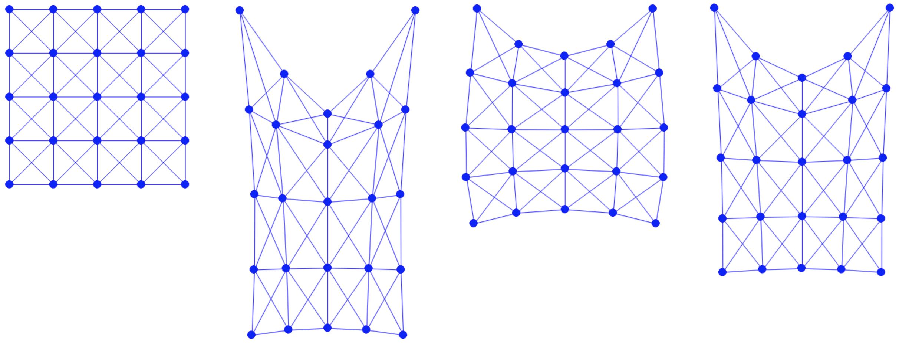
小结
本节我们探讨了狄利克雷边界条件（Dirichlet boundary condition，DBC），它是优化时间积分器不可或缺的组成部分，我们将其表述为简洁的线性等式约束。狄利克雷边界条件（DBC）有两类：粘着与滑移。粘着狄利克雷边界条件（DBC）固定某些节点，使其位置不变；滑移狄利克雷边界条件（DBC）则把节点的运动限制在一个平面或一条直线之内。
我们重点关注在一个时间步开始时粘着狄利克雷边界条件（DBC）已被满足的情形。在这种情况下，自由度消元法被证明是高效的。该技术修改增量势能的梯度与海森矩阵，确保所得的搜索方向仍位于可行空间之内。
下一讲我们将深入讨论滑移狄利克雷边界条件（DBC）的处理，并演示如何把它们高效地融入优化问题。
滑移狄利克雷边界条件
一般的滑移狄利克雷边界条件（Dirichlet Boundary Condition，DBC）虽然可能在时间步开始时已经满足，却带来了独特的挑战。与粘着型狄利克雷边界条件（DBC）不同，它们无法直接用自由度消元法处理，主要原因是其约束雅可比矩阵并不由单位矩阵块构成。为应对这一复杂性，我们可以采用换基（change of basis）策略。
在深入更一般的情形之前，先考察一类特殊的滑移狄利克雷边界条件（DBC）——轴对齐的滑移狄利克雷边界条件（DBC）——会很有启发。理解这一具体情形将为处理范围更广的滑移狄利克雷边界条件（DBC）奠定基础。
轴对齐滑移 DBC
轴对齐的滑移狄利克雷边界条件（Dirichlet Boundary Condition，DBC）把某些节点的运动限制在与坐标轴对齐的线性子空间中。例如，这类约束可以把运动限制在平行于 x 轴的直线或平行于 yz 平面的平面上。轴对齐滑移狄利克雷边界条件（DBC）的一个优势在于，其约束雅可比矩阵与粘着型狄利克雷边界条件（DBC）的约束雅可比矩阵相似。因此，可以用相同的自由度消元法高效地处理它们。
示例 6.1.1 (轴对齐滑移 DBC). 考虑前文提到的二维空间中的两节点系统，如滑移狄利克雷边界条件（DBC）示例（示例 5.1.2）中所述。若要施加一个滑移狄利克雷边界条件（DBC），把坐标为 \((x_{11}, x_{12})\) 的第一个节点约束为只沿直线 \(y = 3\) 运动，我们可把该约束写成一个线性等式： 接着，与粘着型狄利克雷边界条件（DBC）类似，在某个该滑移狄利克雷边界条件（DBC）已满足的时间步中，假设有 我们可以求解如下系统 以得到搜索方向，使得 \(\Delta x_{12} = 0\)，并且由于第一个节点的 \(y\) 坐标不会变化，无论步长多大它都将停留在 \(y=3\) 这条直线上。
变量替换
一般滑移 DBC 与自由度消元法面临的困难
在处理一般线性等式约束（例如非轴对齐的滑移狄利克雷边界条件（Dirichlet Boundary Condition，DBC））时，直接套用自由度（Degrees of Freedom，DOF）消元法存在一定局限。当 \( AA^T \) 不是 \( m \times m \) 单位矩阵时，这一点尤为明显。根据 Karush-Kuhn-Tucker（KKT）系统（式 (5.1.3)），拉格朗日乘子向量 \( \lambda \) 可按如下方式解出：
把式 (6.2.1) 代回 KKT 系统，可得：
这样就得到一个欠约束系统。此处的关键困难在于，\( I - A^T (AA^T)^{-1} A \) 并不具有某种可被方便利用的特殊结构，因而无法据此导出既等价又非奇异、同时仍满足约束的系统。这使得对一般滑移狄利克雷边界条件（Dirichlet Boundary Condition，DBC）直接应用自由度消元法并不现实。
用奇异值分解简化约束
我们的做法是把自由度（DOF）变换为一组新的变量，使约束变得与粘着型狄利克雷边界条件（DBC）中的约束一样简单。为此，我们对约束雅可比矩阵 \( A \) 作奇异值分解（Singular Value Decomposition，SVD）。\( A \) 的奇异值分解（SVD）写为： 其中 \( U \) 是 \( m \times m \) 正交矩阵，\( V \) 是 \( dn \times dn \) 正交矩阵，\( S \) 是 \( m \times dn \) 对角矩阵。
通过定义 \( y = V^T \Delta x \)，我们可以把 Karush-Kuhn-Tucker（KKT）系统（式 (5.1.3)）改写为一种新的形式：
在这个变换后的系统中，\( \lambda' = U^T \lambda \)。值得注意的是，对角矩阵 \( S \) 出现在非对角块中，使得可以直接应用自由度消元法。一旦解出 \( y \)，原始变量 \( \Delta x \) 便可通过矩阵-向量乘积 \( \Delta x = V y \) 轻松恢复。
注记 6.2.1 (使用 SVD 进行自由度消元的局限). 上面的推导借助奇异值分解（SVD）说明了这一思路；但奇异值分解（SVD）在实际使用中仍有局限，矩阵规模一大尤其明显。主要有两点顾虑：
- 大矩阵难以处理： 对规模很大的矩阵做奇异值分解（SVD）在计算上颇具挑战，且往往不切实际。
- 对计算效率的影响： 增量势能的海森矩阵 \( H \) 通常是稀疏的，因而在仿真中的线性求解里可以高效地分解。然而，若奇异值分解（SVD）得到的 \( V \) 是稠密的，则 \( V^T H V \) 也会是稠密的。这不仅会拖慢计算，还会显著增加线性求解的开销。
需要强调的是，新的基集（\( V \) 的列向量）只需线性无关，并不一定要求正交归一。认识到这一点，我们就有可能找到稀疏的基集。在处理一般线性等式约束时，这样的基集能够保持计算效率。该做法的一个实际示例参见 [Chen et al. 2022]。
一般滑移 DBC
幸运的是，对于滑移狄利克雷边界条件（Dirichlet Boundary Condition，DBC）这类按节点解耦的约束，奇异值分解（Singular Value Decomposition，SVD）得到的 与 直接就是块对角的，并可以用高效的程序化方式构造。 节点 上的三维平面滑移狄利克雷边界条件（DBC）可表示为 其中 是节点 所滑移平面的法向， 是该平面上的任意一点。 如式 (5.1.2) 附近的讨论所述，若在时间步开始时节点 已位于该平面上，则约束简化为 进而对行向量 作奇异值分解（SVD），得到 其中单位向量 、 与 共同构成三维空间中的一组正交归一基。
于是可以看出，在全局层面上， 就是一个 单位矩阵； 是一个 矩阵，其每一行恰好在对应于该滑移边界条件（Boundary Condition，BC）节点第一个自由度的那一列上含有一个取值为 1 的元素； 是一个 块对角矩阵，仅在与各边界条件（BC）节点对应的块上取 正交归一块，其余位置为 单位矩阵。
要从 计算 与 ，我们首先注意到可能的解有无穷多个。 因此，我们可以先直接构造 ；若 与 近乎共线，则改为 ；然后再构造 。 要得到 ，只需把每个 左乘到 上。 至于 ，先把每个 左乘到 的第 个块行中的每个块上，得到 ；随后针对 的第 个块列，把 右乘到每个块上。 最后，在修改后的系统（式 (6.2.3)）上应用自由度消元法解出 ，即求解 之后， 可通过 以类似的按块（按节点）运算得到。
示例 6.3.1 (一般滑移 DBC). 对于滑移狄利克雷边界条件（DBC）示例（示例 5.1.2）中提到的同一个二维两节点系统，若要把第一个节点 约束在 这条直线上，则该滑移狄利克雷边界条件（DBC）可表示为 并可构造 以完成换基。 接着，在某个该滑移狄利克雷边界条件（DBC）已满足的时间步中，假设有 我们可以算出 并求解系统 以得到 。随后由 可得到搜索方向，使得 ，因此无论步长多大，第一个节点都将停留在 这条直线上。
小结
本节说明了：通过更换变量的基，一般的滑移狄利克雷边界条件（Dirichlet Boundary Condition，DBC）可以像轴对齐滑移狄利克雷边界条件（DBC）那样，借助自由度（Degree of Freedom，DOF）消元法有效地处理。
虽然可以利用奇异值分解（Singular Value Decomposition，SVD）来求一般线性等式约束的基，但对于规模大或形式复杂的约束，这种做法可能并不可行。尽管如此，我们仍可以针对逐节点的滑移狄利克雷边界条件（DBC）约束，开发专门用于计算基的程序化例程。
目前，我们的关注点是在仿真框架内维持那些已经满足的狄利克雷边界条件（DBC）。接下来，讨论将转向点与解析曲面之间的摩擦接触。此外，我们还会重新审视时间步开始时狄利克雷边界条件（DBC）尚未满足的情形，深入探讨更复杂的情况。
非穿透的距离障碍函数
接触建模是确保固体不与障碍物或自身相交的关键环节。这一主题在之前的小节中已简要提及。本章将深入探讨增量势能接触（Incremental Potential Contact，IPC）方法框架下非穿透的具体细节。我们将聚焦于一个简化却重要的场景：具有闭合边界的固体与障碍物之间的接触。聚焦于此，我们便能够在可控的设定下充分探究增量势能接触（IPC）方法的机理与原理。
有符号距离
增量势能接触（Incremental Potential Contact，IPC）方法旨在通过在运动全程中保持固体边界之间的无符号距离大于零，来确保任意余维数的固体都不发生相互穿透。该方法的鲁棒性在于其普遍适用，与固体的具体特征无关。
然而，当能够获取有符号距离时，增量势能接触（IPC）的应用不仅直接，而且更加简洁。有符号距离把无符号距离的概念推广到具有闭合边界的固体几何。由于增量势能接触（IPC）强制满足非穿透，固体内部出现负距离的可能性被排除。因此，在有符号距离保持非负（包括恰好为零的状态）的场景中，就表明非穿透得到了成功保证。
定义 7.1.1 (余维数). 若 \(W\) 是有限维向量空间 \(V\) 的线性子空间，则 \(W\) 在 \(V\) 中的余维数是二者维数之差： 例如在三维空间中，曲面的余维数为 \(1\)，直线的余维数为 \(2\)。 在计算机图形学中，仿真布料与毛发时，为提升效率通常分别采用余维数为 1 和 2 的几何表示。然而，这类表示的有符号距离并没有良好定义。这也解释了为何无符号距离在固体接触建模中更具一般性。
在之前的小节中，我们探讨了表示固体几何的各种方法。其中一种值得注意的方法是解析表示。例如，以 \( \mathbf{c} \) 为球心、半径为 \( r \) 的三维球体可用如下参数化形式解析地描述：
这种定义固体几何的思路并不局限于简单的球体。许多其他形状，如半空间、长方体、椭球体和圆环面，都可以类似地参数化。这些参数化的关键在于定义这些对象的“内部”，而这往往可以通过有符号距离一类的函数来实现。这类函数提供了一种通用的工具，能够以简洁而数学化的方式描述从简单到复杂的各种形状。
示例 7.1.1 (球体的有符号距离函数). 以 \(\mathbf{c}\) 为球心、半径为 \(r\) 的球体的有符号距离函数 \(d(\mathbf{x})\) 及其导数可定义为
示例 7.1.2 (半空间的有符号距离函数). 法向为 \(\mathbf{n}\) 且满足 \(d(\mathbf{o}) = 0\) 的半空间，其有符号距离函数 \(d(\mathbf{x})\) 及其导数可定义为
现实生活中常见的更复杂几何形状往往因其复杂性而难以表示。除复杂的参数化之外，一种有效的替代方案是使用均匀欧氏网格。该网格用于存储固体对象的有符号距离，这些距离在每个网格节点处预先计算。当需要固体内部任意点处的距离时，可对网格数据做插值。
示例 7.1.3 (网格有符号距离场). 对于存储在间距为 \(\Delta x\) 的均匀欧氏网格上的有符号距离场，若要在任意位置 \(\mathbf{x} = (x,y)\) 处查询距离，其中 \(x = x_i + \alpha \Delta x\)、\(y = y_i + \beta \Delta x\)（\(\mathbf{x}_{i,j} = (x_i, y_j)\) 为网格节点的位置，\(0 \leq \alpha,\beta \leq 1\)），则采用双线性插值（图 7.1.1 右图）可得 从 图 7.1.1 中我们还可以看到，要在此设定下光滑地近似固体边界，需要采用更高阶的插值格式，例如二次 B 样条插值。

图 7.1.1. 网格节点到球体边界的有符号距离经过预计算并被存储（左图）。采用双线性插值后，球体边界的一部分被近似为蓝色折线（右图）。
距离障碍函数
约束优化
在固体与平面地面相互作用这类场景中，若障碍物外部的有符号距离函数 \( d(\mathbf{x}) \) 是光滑的，我们就可以通过引入非穿透约束来处理接触建模。这些约束用 \( d(\mathbf{x}) \) 表达，同时我们仍希望最小化系统的增量势能（Incremental Potential）。
假设固体由节点 \(\mathbf{x}\) 稠密采样，我们便在节点自由度（Degree of Freedom，DOF）的层面上，针对障碍物施加这些约束：
式中 \( d_{ij} \) 表示节点 \( i \) 与障碍物 \( j \) 之间的有符号距离。只要保证 \( d_{ij} \) 非负，就能有效地防止固体与障碍物相交1。
接触建模中的对数障碍势能
为了处理接触建模中的不等式约束，我们引入障碍势能 \( P_b(\mathbf{x}) \)。该势能将式 (7.2.1) 描述的约束问题转化为一个“无约束”优化问题：
障碍势能的定义如下：
在该形式中，\( b() \) 表示障碍能量密度函数。当距离趋近于零时，该函数趋于无穷，从而提供很强的排斥力以防止相互穿透（参见 图 7.2.1）。超过该距离便不再施加接触力的距离阈值 \( \hat{d} \)、控制接触力随距离变化速率的接触刚度 \( \kappa \)，以及节点 \( i \) 的接触面积 \( A_i \)，都是这一设定中的关键参数。通过在固体边界上对能量密度进行积分，障碍函数形式有效地建模出一个厚度为 \( \hat{d} \) 的势能场。

注记 7.2.1 (接触层解释). 可以把障碍势能 \( P_b(\mathbf{x}) \) 想象成紧贴固体边界外侧的一层极薄虚拟材料所提供的弹性。该虚拟层的有效厚度为 \( \hat{d} \)，与障碍函数中的距离阈值相对应。
因此，计算 \( P_b(\mathbf{x}) \) 时所用的积分或求和以体积元 \( w_i = A_i \hat{d} \) 加权，其中 \( A_i \) 表示每个节点的接触面积。当固体接近并开始压缩这层虚拟弹性层时，接触力便会产生。这些力类似于一种特殊的弹性力，只要固体彼此靠得过近，就通过排斥作用来防止相互穿透。该模型使我们能够在固体不发生实际穿透的前提下仿真接触的物理响应。
以距离为中间变量应用链式法则，可以推导出 \(P_b(\mathbf{x})\) 的梯度与海森矩阵为 以及
求解精度
那么，为什么我们可以通过求解式 (7.2.2) 来近似原问题（式 (7.2.1)）的解呢？ 与狄利克雷边界条件类似，在式 (7.2.1) 的解 \(x^*\) 处，下列 KKT 条件全部成立： 而在式 (7.2.2) 的局部最优解 \(x'\) 处，有 这等价于 以及 只要代入 \(\nabla b(d_{ij})\) 的表达式。 令 \(\gamma_{ij}' = -h^2 A_i \hat{d} \frac{\partial b}{\partial d}(d_{ij}(x'))\)，我们可以进一步将式 (7.3.2) 改写为 若把 \(\gamma_{ij}'\) 视为对偶变量，这本质上就是平稳性条件（式 (7.3.1) 中的第一行）。 现在，由于障碍函数能提供任意大的排斥作用以避免相互穿透，可知 \(\forall i,j\)，\(d_{ij}(x') \geq 0\)。此外，由构造方式可知 \(\frac{\partial b}{\partial d} \leq 0\)，因此对所有 \(i,j\) 也有 \(\gamma_{ij}' \geq 0\)。这意味着在 \(x'\) 处，动量达到平衡，不出现相互穿透，且接触力只推不拉。
在我们的仿真中，\( x' \) 处唯一未被严格满足的 Karush-Kuhn-Tucker（KKT）条件是互补松弛条件。这源于障碍近似发挥作用的方式。具体而言，我们面对的情形是 \( \gamma_{ij} > 0 \Longleftrightarrow 0 < d_{ij} < \hat{d} \)，它表示接触力依据固体与障碍物之间的距离而被激活。
随着阈值 \( \hat{d} \) 减小，接触力只有在固体靠得更近时才会激活（如 图 7.2.1 所示）。这一调整会降低互补松弛误差，而该误差可以在一定程度上加以控制。然而需要指出，这种控制是有代价的：计算效率可能下降。原因在于，由较小的 \( \hat{d} \) 值导致的更尖锐的目标函数，往往需要更多的牛顿迭代才能求解。因此，仿真的精度（就满足 KKT 条件而言）与所需的计算资源之间存在权衡。
小结
在仿真固体与障碍物之间的接触时，我们主要关注的是：在最小化增量势能的同时，强制固体自由度（Degree of Freedom，DOF）与障碍物之间的有符号距离保持非负。
-
转化为无约束问题： 每个时间步固有的不等式约束最小化问题被转化为无约束问题。这是通过引入障碍势能实现的。当距离趋近于零时，该势能上升至无穷大，从而有效地产生巨大的排斥力，防止相互穿透。
-
局部极小点处的性质： 在由障碍势能增广后的增量势能的局部极小点处，我们获得了动量平衡，确保了非穿透，并产生只推不拉的接触力。Karush-Kuhn-Tucker（KKT）条件中唯一未严格满足的是互补松弛条件。满足该条件的精度可通过调整距离阈值 来控制，代价是计算效率的降低。
-
局限与后续内容： 尽管距离障碍函数方法能有效处理许多接触场景，但仅靠它无法阻止动态仿真中出现人为的隧穿。为克服这一局限，下一章将介绍过滤线搜索方案，这是一种旨在为仿真提供更多保障的进阶技术。
注记 7.4.1 (隧穿). 在仿真语境下，尤其是计算物理与计算机图形学中，人为隧穿指的是快速运动的物体在未与其他物体或障碍发生物理交互的情况下穿过它们，仿佛障碍中存在一条隧道。这种现象通常出现在涉及离散时间步的场景中，例如物理系统的计算机仿真。
在现实场景中，当两个物体碰撞时，应当出现反弹、停止或变形之类的物理交互。然而在采用离散时间步的仿真中，如果物体运动得非常快，或者时间步过大，物体的位置可能在一步中被计算为位于障碍的一侧，而在下一步中位于另一侧，全程都未检测到碰撞。这种对碰撞环节的“跳过”就表现为穿透物体的隧穿。
过滤线搜索*
增量势能接触（Incremental Potential Contact，IPC）方法能够有效地在固体仿真中维持非穿透约束。该方法建模了一种将接触力与其对应距离直接关联的本构关系，从而把约束问题转化为无约束问题。通过采用适当小的时间步，增量势能接触（IPC）使得在基于优化的时间积分框架内实现鲁棒、精确且不与障碍物发生穿透的固体仿真成为可能。
然而，当使用较大的时间步时便会出现挑战，这可能在增量势能中引入多个局部极小值。这种情况会导致隧穿问题，即固体可能由于过大的搜索方向而意外穿过障碍物。为缓解这一风险，我们引入一种由连续碰撞检测（Continuous Collision Detection，CCD）辅助的过滤线搜索策略。该方案旨在通过依据潜在碰撞不断调整固体的运动轨迹来防止隧穿。
为说明这些概念，我们将考察一个弹性方块落到地面上的案例研究。该示例将展示增量势能接触（IPC）方法结合过滤线搜索与连续碰撞检测（CCD）在处理固体动力学、确保精确且无穿透的仿真方面的效果。
隧穿问题
示例 8.1.1 (隧穿). 考虑一个简单的示例。在不施加重力等外力的情况下，一个位于 \(\mathbf{x}_0 = (0, 0)\)、质量为 \(m\)、初速度为 \(\mathbf{v}_0 = (1, 0)\) 的粒子（无弹性）撞向中心位于 \((0.005, 0) \) 的固定方形障碍物，第一时间步的增量势能最小化问题为 由于 \(\hat{d}\) 通常取得足够小（本例中为 \(10^{-4}m\)），而粒子尚未接触障碍物，障碍势能 \(P_b(\mathbf{x})\) 在 \(\mathbf{x}_0\) 处还未被激活。这使得式 (8.1.1) 中的问题成为二次问题，于是我们的投影牛顿法（projected Newton，PN）（算法 3.3.1）将在第一次迭代时产生搜索方向 该方向在第一次迭代时经线搜索后直接指向增量势能在 \(\mathbf{x}_0 + h\mathbf{v}_0\) 处的全局极小点。取 \(h=0.01s\)（图 8.1.1）时，粒子便会穿过障碍物。 然而，因时间步长过大而使粒子穿过障碍物的情形显然不符合实际，因为预期的物理行为是粒子与障碍物碰撞后停下或反弹。
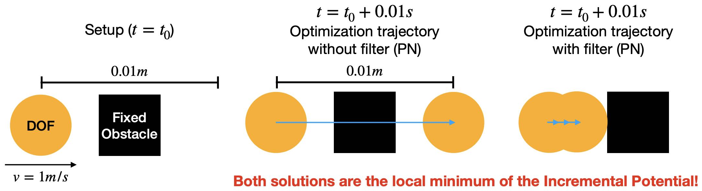
由 示例 8.1.1 可知，仅仅保证最终解处的有符号距离非负是不够的，在大时间步长、高速撞击或薄障碍物等情形下尤其如此。这些情况会导致仿真出现不准确、不符合实际的结果。
增量势能接触（Incremental Potential Contact，IPC）方法通过保证距离在固体的整个运动轨迹上始终非零来解决这一问题。这一做法对于保持仿真的物理准确性与真实感至关重要。
但在离散时间积分的语境下，“运动轨迹”究竟指什么？下面我们对此加以说明。
无穿透轨迹
要定义分别位于时刻 \(t^n\) 与 \(t^{n+1}\) 的构型 \(x^n\) 与 \(x^{n+1}\) 之间的运动轨迹，最直接的方式是取连接这两个构型的高维线段。然而，尽管在该轨迹上强制有符号距离非负可以避免 示例 8.1.1 中的隧穿问题，这一策略却会以非物理的方式改变最小化问题（式 (7.2.1)）的局部最优解，从而可能产生不符合实际的行为（图 8.2.1）。
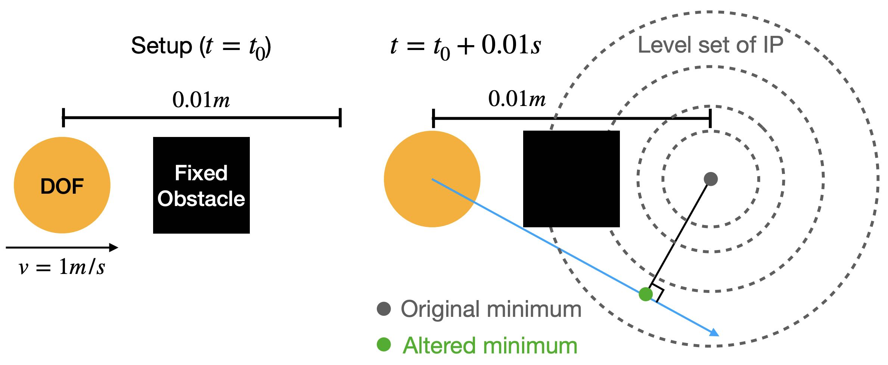
对 \(x^n\) 与 \(x^{n+1}\) 之间运动轨迹更严格的定义可以是 然而，计算该轨迹上的构型需要额外求解优化问题，这可能使时间积分显著复杂化。
作为替代，增量势能接触（Incremental Potential Contact，IPC）将优化路径视为运动轨迹的近似。具体而言，对于从 \(x^n\) 求解到 \(x^{n+1}\) 的时间步，若优化过程进行了 \(l\) 次迭代，且每次迭代经过线搜索后得到迭代点 \(x^i\)，那么优化路径就是一条高维折线 于是，第 \(n\) 个时间步的时间积分问题便成为：寻找这样的优化路径 \(x^0, x^1, ..., x^l\)，使得 \(x^l\) 在满足下述条件的约束下局部最小化增量势能（式 (7.2.2)）： 这使得我们可以在每次优化迭代中，在 \(x^i\) 与 \(x^{i+1}\) 之间的线段上强制非负距离约束；这样做不会改变时间积分问题的局部最优解，而且这一处理可以高效地完成。
回顾 算法 3.2.1 可知，线搜索方案按下式更新迭代点 \(x^{i+1} \leftarrow x^i + \alpha p\)，即 \(x^{i+1} - x^{i} = \alpha p\)。因此，给定无相互穿透的 \(x^i\)，要确保 \(x^i\) 与 \(x^{i+1}\) 之间线段上的所有构型都无相互穿透，我们只需找到一个 \(\alpha\)，使得 基于“足够小的 \(\alpha\) 必定能实现这一点”的直觉，我们只需在每次迭代中计算此类 \(\alpha\) 的一个上界，并确保回溯线搜索得到的步长小于该上界。该上界可以借助连续碰撞检测（Continuous Collision Detection，CCD）方便地算出。
定义 8.2.1 (连续碰撞检测（CCD）). 对于由固体与障碍物的初始无穿透构型 \(x\)、其预期位移 \(p\) 以及步长 \(\alpha\) 所定义的距离函数 \(d_{jk}(x + \alpha p)\)，连续碰撞检测（CCD）在给定 \(x\) 与 \(p\) 的条件下算出步长 \(\alpha^C_{jk}\)，使得 注意，该问题的定义隐含要求 \(d_{jk}(x) > 0\)。在此设定下，若记 \(d^a_{jk}(\alpha) = d_{jk}(x + \alpha p)\)，则 \(\alpha^C_{jk}\) 就是 \(d^a_{jk}(\alpha)\) 的最小正实根（示例见 图 8.2.2）；若 \(d^a_{jk}(\alpha)\) 没有任何正实根，则 \(\alpha^C_{jk} = \infty\)。获取 \(\alpha^C_{jk}\) 的精确值或保守估计有许多方法，我们将在本章的案例研究中看到一个具体示例。在对所有节点 \(j\) 与障碍物 \(k\) 计算 \(\alpha^C_{jk}\) 之后，线搜索的步长上界 \(\alpha^C\) 即可由下式得到
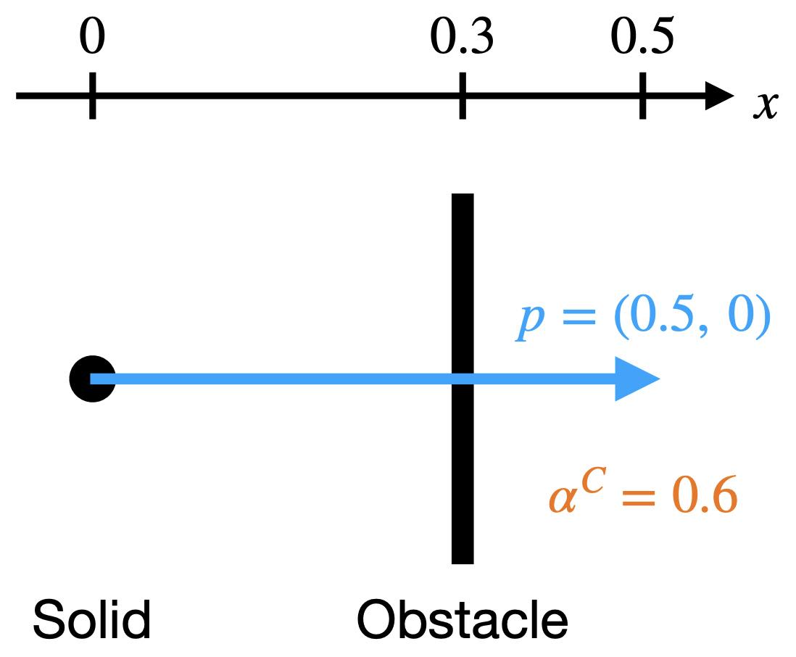
图 8.2.2. 连续碰撞检测（CCD）示意图：位于 的固体粒子撞击 处的固定竖直平面。当预期位移为 时，可得 。
现在，我们可以介绍过滤线搜索方法（算法 8.2.1），它专门用于在整条近似的运动轨迹上强制非穿透约束。这种策略性的强制是防止隧穿问题的关键，而隧穿问题在约束处理不充分的仿真中十分常见。
这一新方案与传统的回溯线搜索方法在一个关键方面不同：步长的初始化方式。过滤线搜索方法不再从步长 \(1\) 出发，而是从 \(\alpha^C\) 开始。这一改动看似细微，却意义重大。
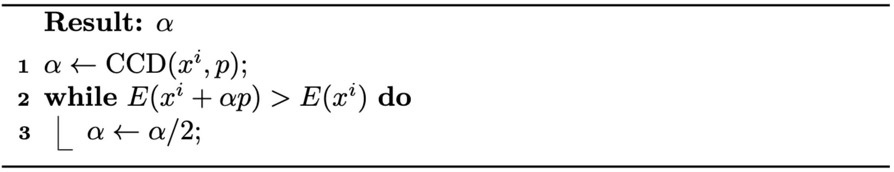
注记 8.2.1 (算法依赖问题). 用优化路径近似运动轨迹仍然不够完美，因为它依赖于具体算法。除投影牛顿（Projected Newton，PN）法之外，可能存在某种算法绕过障碍物、最终落在另一侧的构型上，仍然给出隧穿的解（图 8.2.3）。 即便采用投影牛顿法，尽管实践中它总能生成直接且物理上合理的轨迹，也没有理论保证它绝不会遇到隧穿问题。 一种直觉是：投影牛顿法（PN）每次迭代的搜索方向总是显著降低增量势能（Incremental Potential，IP），因此它不太可能绕过任何接触——绕过接触往往会导致迭代无法充分降低增量势能（IP）。 事实上，这类问题在没有接触的弹性动力学仿真中也会出现。弹性势能本身也是非凸的，这可能导致增量势能（IP）存在多个局部最优解。获得符合物理行为的关键在于局部最小化 增量势能（IP），换言之，即找到附近的局部极小点作为解。
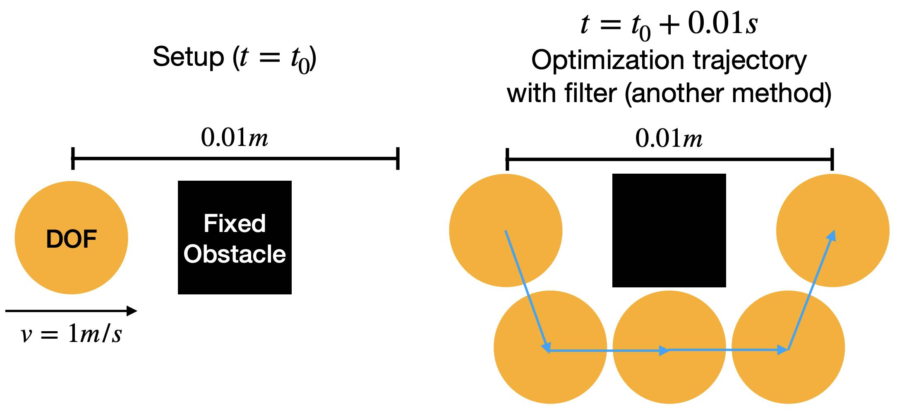
图 8.2.3. 对于隧穿示例中的设置，即使采用过滤线搜索方案，若使用投影牛顿法之外的优化方法，仍可能导致隧穿问题。
案例研究：方块下落
最后，我们来看一个案例研究：仿真一个落到固定平面地面上的方块。在之前用于弹性方块的质点-弹簧模型基础上，我们在其增量势能中加入障碍势能，并应用过滤线搜索方案来处理方块自由度（degree of freedom，DOF）与地面之间的接触。
本节的可执行 Python 工程位于 https://github.com/phys-sim-book/solid-sim-tutorial 的 3_contact 文件夹下。
MUDA GPU 实现位于 https://github.com/phys-sim-book/solid-sim-tutorial-gpu 的 simulators/3_contact 文件夹下。
若进一步限定平面地面为水平面，例如位于 \(y=y_0\) 处，其有符号距离函数可以比式 (7.1.1) 更简单： 将其与式 (7.2.4) 及式 (7.2.5) 结合，即可方便地实现水平地面障碍势能的梯度与海森矩阵计算：
实现 8.3.1 (障碍能量值、梯度与海森矩阵，BarrierEnergy.py).
import math
import numpy as np
dhat = 0.01
kappa = 1e5
def val(x, y_ground, contact_area):
sum = 0.0
for i in range(0, len(x)):
d = x[i][1] - y_ground
if d < dhat:
s = d / dhat
sum += contact_area[i] * dhat * kappa / 2 * (s - 1) * math.log(s)
return sum
def grad(x, y_ground, contact_area):
g = np.array([[0.0, 0.0]] * len(x))
for i in range(0, len(x)):
d = x[i][1] - y_ground
if d < dhat:
s = d / dhat
g[i][1] = contact_area[i] * dhat * (kappa / 2 * (math.log(s) / dhat + (s - 1) / d))
return g
def hess(x, y_ground, contact_area):
IJV = [[0] * len(x), [0] * len(x), np.array([0.0] * len(x))]
for i in range(0, len(x)):
IJV[0][i] = i * 2 + 1
IJV[1][i] = i * 2 + 1
d = x[i][1] - y_ground
if d < dhat:
IJV[2][i] = contact_area[i] * dhat * kappa / (2 * d * d * dhat) * (d + dhat)
else:
IJV[2][i] = 0.0
return IJV
对于过滤线搜索，设上一次迭代中的位置为 \(\mathbf{x}\)、某个节点的搜索方向为 \(\mathbf{p}\)，则有符号距离函数可简单写为 \[ d(\mathbf{x} + \alpha \mathbf{p}) = \mathbf{x}_y + \alpha \mathbf{p}_y - y_0, \] 其中 \(\alpha\) 为步长；由于 \(\mathbf{x}_y > y_0\)（当前迭代为止尚未发生互穿），当 \(\mathbf{p}_y < 0\) 时只有一个正实根 \(\alpha = (y_0 - \mathbf{x}_y) / \mathbf{p}_y\)。对每个节点取该正实根的最小值，便得到式 (8.2.1) 中定义的步长上界 \(\alpha_C\)：
实现 8.3.2 (地面 CCD，BarrierEnergy.py).
def init_step_size(x, y_ground, p):
alpha = 1
for i in range(0, len(x)):
if p[i][1] < 0:
alpha = min(alpha, 0.9 * (y_ground - x[i][1]) / p[i][1])
return alpha
这里将上界乘以 \(0.9\times\) 进行缩放，以避免出现 \(d=0\)、\(b = \infty\)（浮点数溢出）的恰好接触状态。
随后，只要确保用该步长上界初始化线搜索
实现 8.3.3 (过滤线搜索，time_integrator.py).
# filter line search
alpha = BarrierEnergy.init_step_size(x, y_ground, p) # avoid interpenetration and tunneling
while IP_val(x + alpha * p, e, x_tilde, m, l2, k, y_ground, contact_area, h) > E_last:
alpha /= 2
并确保所有节点的接触面积权重都已计算
contact_area = [side_len / n_seg] * len(x) # perimeter split to each node
且被传入仿真器，我们便能以质点-弹簧刚度 k=2e4、时间步长 h=0.01 仿真方块下落，如图 图 8.3.1 所示。

注记 8.3.1 (接触层的积分). 由于实际中接触力只作用在固体的边界上，障碍势能也应当只在边界上积分。 这也解释了为何在本案例研究中，每个节点的接触面积权重简单地取为方块直径均分到各边界节点上的结果。 不过，由于质点-弹簧弹性无法保证所有内部节点始终位于固体边界之内，我们干脆对方块的所有节点自由度施加障碍势能。
小结
为缓解大时间步长下固体仿真中的隧穿（tunneling）问题，关键是在整个运动轨迹上（而不只是在最终解处）强制固体与障碍物之间的有符号距离保持非负。
尽管直接用优化路径来近似运动轨迹在理论上并不完美，但它为过滤线搜索方案的设计提供了支持。该方案结合连续碰撞检测（continuous collision detection，CCD）与投影牛顿法，可在实际场景中有效防止隧穿。
投影牛顿法是一种最小化增量势能的基于梯度的方法，它要求势能具有连续的梯度。因此，障碍势能中所用的距离函数至少需要是 连续的。对于基于网格的有符号距离场（示例 7.1.3），仅使用双线性插值被认为是不够的。
此外，处理网格分段线性边界上的自接触，还需要进一步的近似来光滑化距离函数。关于自接触的详细讨论将在后续章节中展开。在此之前，我们将在下一讲转而讨论固体与障碍物之间的摩擦。
摩擦接触
从宏观上看，接触力不仅包含阻止互穿的法向力，还包含抑制界面处剪切运动的切向摩擦力。多数表面在微观尺度下观察时并非完全光滑，而是由参差不齐的棱角构成。摩擦本质上源于阻止这些棱角之间发生互穿的力。本讲介绍库仑摩擦模型，并引入一些近似，使其能够与优化时间积分器相兼容。
平滑的动-静摩擦转换
为对摩擦接触建模，可为每个活跃的接触点对 添加局部摩擦力 。 对每个这样的点对 ，在当前状态 下可构造一个方向一致的滑动基 ，其中 为参与仿真的节点总数、 为空间维数，使得 给出局部相对滑动速度，且该速度与沿法向 的距离梯度正交。
示例 9.1.1 (粒子在球面上滑动). 对于一个以速度 在球面上运动的粒子，若球体的速度为 （无旋转），此处的相对滑动速度 可计算为 若将该系统中粒子与球体的速度堆叠得到 ，则可知 就是 对于网格-网格接触等更一般的情形， 的形式只在接触点对 处的相对速度如何与参与仿真的节点速度相关联这一点上有所不同。
在库仑约束下最大化耗散率，可给出摩擦力的变分定义 其中 为接触力大小， 为局部摩擦系数。这等价于 其中当 时 ，而当 时 取任意与 正交的单位向量。此外，摩擦缩放函数 关于 也是非光滑的：当 时 ，当 时 。这种非光滑性会严重拖慢、甚至破坏基于梯度的优化的收敛。
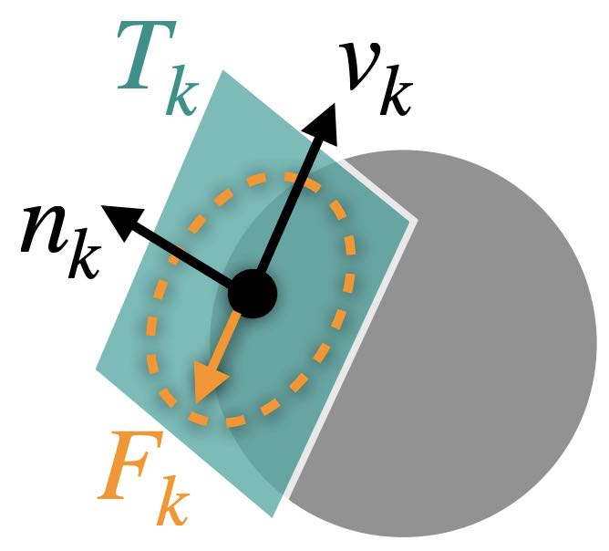
为使优化高效而稳定，向静摩擦过渡时的摩擦力-速度关系可以通过将 替换为光滑近似函数来实现光滑化。参照增量势能接触（Incremental Potential Contact，IPC），我们采用 其中 ；为使近似误差有界，还定义了一个速度大小上界 （单位为 ），低于该值的滑动速度 即被视为静摩擦（图 9.1.2）。
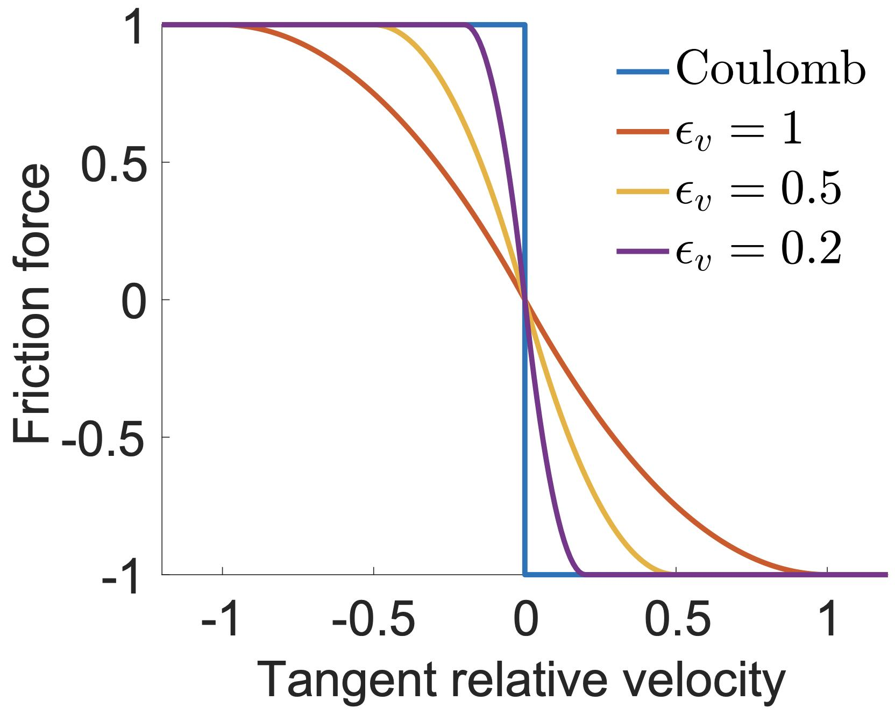
半隐式离散化
然而，将摩擦纳入优化时间积分仍然存在挑战。一个主要问题是摩擦力并非保守力，不存在一个良好定义的势能，使其梯度的相反数恰好给出摩擦力。换言之，隐式摩擦力不可积。没有势能，就无法执行回溯线搜索，优化稳定性与收敛性也就无从保证。
事实上，一个力是否具有良好定义的势能，取决于时间离散方式。例如在显式时间积分中，任何力 在一个时间步内都是常数，因而具有势能 。 受此启发，我们可以借助更聪明的时间离散方式使摩擦力变得可积。但若让摩擦力在一个时间步内保持常数，要获得高质量的结果就必然会限制时间步长的取值。因此，我们将摩擦力的一部分显式离散，从而构造出可积的半隐式摩擦力。
参照增量势能接触（Incremental Potential Contact，IPC），我们在非线性优化过程中将法向力大小 （仅用于计算摩擦的那部分）与切向算子 固定为上一个时间步 的取值：、，于是摩擦力变得可积，其势能为 其中 、，且 使得 。对大多数线性（多）步时间积分方法——包括隐式欧拉以及高阶后向差分公式等—— 都是时间步长 的常数倍。 然后，对式 (9.2.1) 关于 求梯度，得到 这就是对光滑化后的摩擦力所做的半隐式离散，其中 与 为显式项。 的海森矩阵可计算为
注记 9.2.1. 在摩擦梯度与海森矩阵的表达式（式 (9.2.3) 与式 (9.2.4)）中，分母含有 ；当接触点处没有相对滑动时，该值可能为 。 为避免计算中除以 ，对摩擦梯度可推出 该式处处有良好定义，于是得到 对摩擦海森矩阵，可推出 该式同样处处有良好定义；又因 时 ，可知
注记 9.2.2. 本讲的摩擦公式与原始增量势能接触（IPC） [Li et al. 2020] 中的表述略有不同，共有两处：
- 我们将相对滑动速度 而非增量势能接触（IPC）中的相对滑动位移 直接作为光滑化函数 的输入，因此我们的 与增量势能接触（IPC）中的版本在分母所含的 上有所不同。当采用隐式欧拉之外的时间积分格式时（此时 ），仍把 称为相对滑动位移并不恰当，可能引起混淆。
- 我们没有引入切向基来表示切空间中的相对滑动速度，因为在计算摩擦能量、梯度与海森矩阵时并不需要这样做。
不动点迭代
为获得完全隐式摩擦的解，我们可以迭代地交替执行以下两步：一是固定 与 的非线性优化 二是摩擦更新，如此反复直至收敛（算法 9.3.1）。
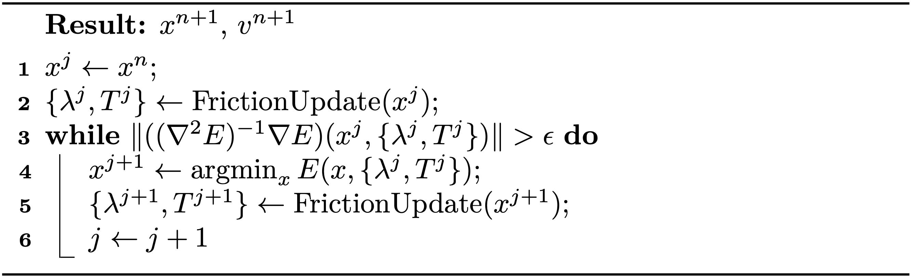
若记 则 算法 9.3.1 本质上是一个不动点迭代，用于求如下函数的不动点：
定义 9.3.1. 是函数 的不动点，当且仅当 不动点迭代则从 出发，通过反复更新估计值 来求函数 的不动点，直至收敛。
由于不动点迭代只有在初始猜测足够接近最终解时才能收敛，算法 9.3.1 的收敛同样要求较小的时间步长。但要注意，在固定 时，每次最小化（算法 9.3.1 第 4 行）在任意大的时间步长下仍然保证收敛。
注记 9.3.1. 实践中，取帧率级时间步长的半隐式摩擦已经能产生视觉质量很高的结果。若需要更高精度，对摩擦运行 2 到 3 次不动点迭代通常就足够了。
小结
我们介绍了库仑摩擦模型，它通过静摩擦力与动摩擦力，在切空间中对接触点处的剪切运动施加非光滑的惩罚。
为将摩擦纳入优化时间积分器，我们首先对动-静摩擦转换做光滑近似。这使得摩擦力仅凭节点速度自由度即可被唯一确定。
随后我们采用半隐式离散，将法向力大小 与切向算子 固定在上一时间步的取值，从而增强摩擦力的可积性。
为获得完全隐式摩擦的解，需执行不动点迭代。这些迭代在半隐式时间积分与 、 的更新之间交替进行。
下一讲中，我们将研究一个案例：方块在摩擦系数可变的斜面上的运动。
案例研究：斜面上的方块*
本节基于我们在摩擦接触中学到的内容，在优化时间积分框架内为斜面实现摩擦接触。我们首先扩展方块下落案例研究中用于水平地面的接触模型，使其能够处理具有任意朝向与位置的斜面。
在此扩展的基础上，我们为斜面实现摩擦，并通过仿真一个落在斜面上的弹性方块来测试。根据摩擦系数 的不同，方块会停在斜面上的不同位置，或者持续下滑。
本节可执行的 Python 工程见 https://github.com/phys-sim-book/solid-sim-tutorial 中的 4_friction 文件夹。
MUDA GPU 实现见 https://github.com/phys-sim-book/solid-sim-tutorial-gpu 中的 simulators/4_friction 文件夹。
从地面到斜面
方块下落案例研究中针对水平地面的实现，相较于一般半空间（公式 (7.1.1)）给出了简化的距离与距离梯度（公式 (8.3.1)）： 这正是实现斜面所需的全部内容。定义法向方向与斜面上的一点
实现 10.1.1 (斜面设置，simulator.py).
ground_n = np.array([0.1, 1.0]) # normal of the slope
ground_n /= np.linalg.norm(ground_n) # normalize ground normal vector just in case
ground_o = np.array([0.0, -1.0]) # a point on the slope
并将其传入时间积分器与障碍能量，就可以按如下方式修改斜面的障碍能量值、梯度与海森矩阵的计算
实现 10.1.2 (斜面接触障碍函数，BarrierEnergy.py).
import math
import numpy as np
dhat = 0.01
kappa = 1e5
def val(x, n, o, contact_area):
sum = 0.0
for i in range(0, len(x)):
d = n.dot(x[i] - o)
if d < dhat:
s = d / dhat
sum += contact_area[i] * dhat * kappa / 2 * (s - 1) * math.log(s)
return sum
def grad(x, n, o, contact_area):
g = np.array([[0.0, 0.0]] * len(x))
for i in range(0, len(x)):
d = n.dot(x[i] - o)
if d < dhat:
s = d / dhat
g[i] = contact_area[i] * dhat * (kappa / 2 * (math.log(s) / dhat + (s - 1) / d)) * n
return g
def hess(x, n, o, contact_area):
IJV = [[0] * 0, [0] * 0, np.array([0.0] * 0)]
for i in range(0, len(x)):
d = n.dot(x[i] - o)
if d < dhat:
local_hess = contact_area[i] * dhat * kappa / (2 * d * d * dhat) * (d + dhat) * np.outer(n, n)
for c in range(0, 2):
for r in range(0, 2):
IJV[0].append(i * 2 + r)
IJV[1].append(i * 2 + c)
IJV[2] = np.append(IJV[2], local_hess[r, c])
return IJV
随后，对于连续碰撞检测，我们同样修改实现，利用 与 计算线搜索所用的较大可行初始步长：
实现 10.1.3 (斜面 CCD，BarrierEnergy.py).
def init_step_size(x, n, o, p):
alpha = 1
for i in range(0, len(x)):
p_n = p[i].dot(n)
if p_n < 0:
alpha = min(alpha, 0.9 * n.dot(x[i] - o) / -p_n)
return alpha
这里每个节点的搜索方向都被投影到法向方向 上，以便在计算首次使距离变为 的最小步长时除以当前距离。
最后，把斜面绘制成从 到 的线段，其中 指向倾斜方向，
实现 10.1.4 (斜面可视化，simulator.py).
pygame.draw.aaline(screen, (0, 0, 255), screen_projection([ground_o[0] - 3.0 * ground_n[1], ground_o[1] + 3.0 * ground_n[0]]),
screen_projection([ground_o[0] + 3.0 * ground_n[1], ground_o[1] - 3.0 * ground_n[0]])) # slope
现在我们就可以仿真落在无摩擦斜面上的弹性方块（图 10.1.1）。
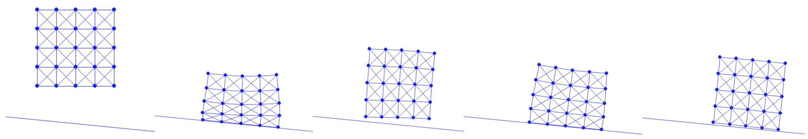
斜面摩擦
现在为斜面实现摩擦。我们首先按照公式 (9.2.2)、公式 (9.2.5) 和公式 (9.2.6)，分别实现计算 、 与 的函数。
实现 10.2.1 (摩擦辅助函数，FrictionEnergy.py).
import numpy as np
import utils
epsv = 1e-3
def f0(vbarnorm, epsv, hhat):
if vbarnorm >= epsv:
return vbarnorm * hhat
else:
vbarnormhhat = vbarnorm * hhat
epsvhhat = epsv * hhat
return vbarnormhhat * vbarnormhhat * (-vbarnormhhat / 3.0 + epsvhhat) / (epsvhhat * epsvhhat) + epsvhhat / 3.0
def f1_div_vbarnorm(vbarnorm, epsv):
if vbarnorm >= epsv:
return 1.0 / vbarnorm
else:
return (-vbarnorm + 2.0 * epsv) / (epsv * epsv)
def f_hess_term(vbarnorm, epsv):
if vbarnorm >= epsv:
return -1.0 / (vbarnorm * vbarnorm)
else:
return -1.0 / (epsv * epsv)
有了这些项，我们就可以按照公式 (9.2.1)、公式 (9.2.3) 和公式 (9.2.4)，分别实现半隐式摩擦能量的值、梯度与海森矩阵的计算。
实现 10.2.2 (摩擦的值、梯度与海森矩阵，FrictionEnergy.py).
def val(v, mu_lambda, hhat, n):
sum = 0.0
T = np.identity(2) - np.outer(n, n) # tangent of slope is constant
for i in range(0, len(v)):
if mu_lambda[i] > 0:
vbar = np.transpose(T).dot(v[i])
sum += mu_lambda[i] * f0(np.linalg.norm(vbar), epsv, hhat)
return sum
def grad(v, mu_lambda, hhat, n):
g = np.array([[0.0, 0.0]] * len(v))
T = np.identity(2) - np.outer(n, n) # tangent of slope is constant
for i in range(0, len(v)):
if mu_lambda[i] > 0:
vbar = np.transpose(T).dot(v[i])
g[i] = mu_lambda[i] * f1_div_vbarnorm(np.linalg.norm(vbar), epsv) * T.dot(vbar)
return g
def hess(v, mu_lambda, hhat, n):
IJV = [[0] * 0, [0] * 0, np.array([0.0] * 0)]
T = np.identity(2) - np.outer(n, n) # tangent of slope is constant
for i in range(0, len(v)):
if mu_lambda[i] > 0:
vbar = np.transpose(T).dot(v[i])
vbarnorm = np.linalg.norm(vbar)
inner_term = f1_div_vbarnorm(vbarnorm, epsv) * np.identity(2)
if vbarnorm != 0:
inner_term += f_hess_term(vbarnorm, epsv) / vbarnorm * np.outer(vbar, vbar)
local_hess = mu_lambda[i] * T.dot(utils.make_PSD(inner_term)).dot(np.transpose(T)) / hhat
for c in range(0, 2):
for r in range(0, 2):
IJV[0].append(i * 2 + r)
IJV[1].append(i * 2 + c)
IJV[2] = np.append(IJV[2], local_hess[r, c])
return IJV
注意，在 Numpy 中矩阵-矩阵与矩阵-向量乘积通过 dot() 函数实现。
对于隐式欧拉，，因此 。
这里 mu_lambda 为每个节点存储 ，其中法向力大小 在每个时间步开始时用 计算。
实现 10.2.3 (使用 mu 与 lambda，time_integrator.py).
def step_forward(x, e, v, m, l2, k, n, o, contact_area, mu, is_DBC, h, tol):
x_tilde = x + v * h # implicit Euler predictive position
x_n = copy.deepcopy(x)
mu_lambda = BarrierEnergy.compute_mu_lambda(x, n, o, contact_area, mu) # compute mu * lambda for each node using x^n
# Newton loop
实现 10.2.4 (计算 mu 与 lambda，BarrierEnergy.py).
def compute_mu_lambda(x, n, o, contact_area, mu):
mu_lambda = np.array([0.0] * len(x))
for i in range(0, len(x)):
d = n.dot(x[i] - o)
if d < dhat:
s = d / dhat
mu_lambda[i] = mu * -contact_area[i] * dhat * (kappa / 2 * (math.log(s) / dhat + (s - 1) / d))
return mu_lambda
由于斜面是静止的，且法向方向处处相同， 为常数，因而可以被精确离散。
最后，我们设置摩擦系数 并将其传入时间积分器，在其中加入摩擦能量，以建模斜面上的半隐式摩擦。
mu = 0.11 # friction coefficient of the slope
现在可以测试不同摩擦系数下的仿真了。由于斜面倾角 满足 ，我们测试 、 与 （图 10.2.1）。可以看到，当 时，这一临界值恰好使动摩擦力与重力沿斜面的分量大小相同，方块在获得初始动量后持续下滑（图 10.2.1 上）。当取略高于临界值的 时，方块下滑一段后停下，说明静摩擦得到了正确的求解（图 10.2.1 中）。当 时，方块更早停下（图 10.2.1 下）。
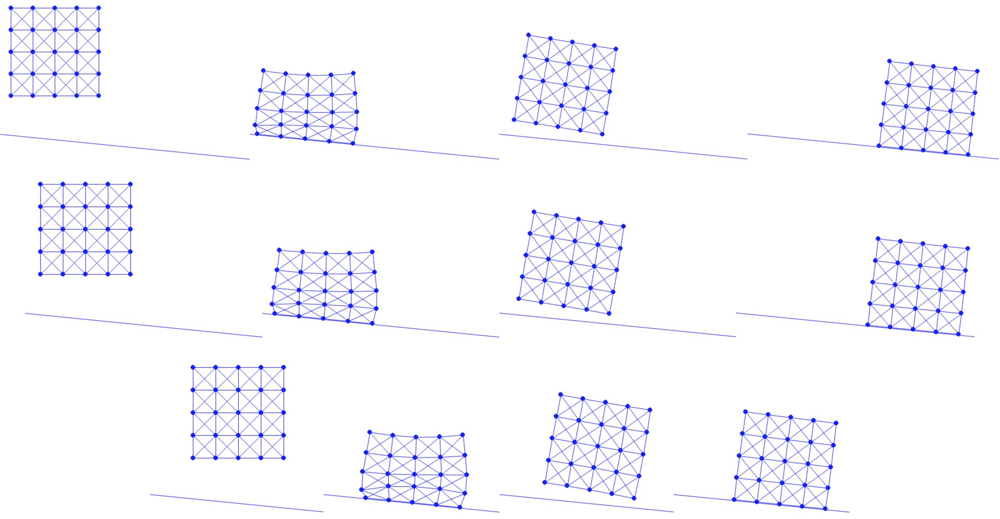
小结
在本案例研究中，我们实现了仿真物体与斜面之间的半隐式摩擦，可处理任意朝向与位置。在增量势能接触（Incremental Potential Contact，IPC）的优化时间积分框架中，摩擦同样用势能建模。关键区别在于，为进行半隐式离散化，法向力大小与切向算子都在每个时间步开始时预先计算。
下一讲我们将介绍移动边界条件。届时障碍物或边界节点会按预先规定的方式运动，主动向场景中注入动力学。
移动边界条件*
在许多仿真场景中，运动学碰撞对象（Kinematic Collision Object，CO）与移动狄利克雷边界条件（Dirichlet Boundary Condition，DBC）都至关重要。一个运动学碰撞对象（CO）可以看作一组狄利克雷边界条件（DBC）节点。
在时间步开始时，最理想的情形是能把狄利克雷边界条件（DBC）节点直接移动到其规定位置而不引起任何互穿。这样仿真便可借助自由度消元法顺利推进，因为该方法能保证约束始终可行。
然而，当时间步长较大、速度较高或变形显著时，直接指定狄利克雷边界条件（DBC）节点往往会导致互穿或“隧穿”（tunneling）伪影，即物体以不符合物理的方式彼此穿过。
为应对这些挑战，我们采用惩罚方法。该方法逐步把仿真调整到一个可行集，在其中运动学碰撞对象（CO）约束与狄利克雷边界条件（DBC）约束都得到满足，且不发生互穿。
下面将通过压缩方块的仿真给出一个演示这些原理的案例研究。
惩罚方法
在每个时间步开始时（即向时刻 推进时），我们根据各边界条件（Boundary Condition，BC）节点 的规定运动计算其节点位置 。在每次牛顿迭代 中，对迭代解 我们定义一个速度残差，用以衡量每个边界条件（BC）节点离其目标的接近程度： 当任一边界条件（BC）节点 的 低于给定容差 时，我们便可将该节点固定在其当前位置 ，并在后续迭代中施加自由度消元法。在只含静态边界条件（BC）的场景中，这一做法尤为直接——那里可以直接应用自由度消元法。
对于远离目标位置的其他边界条件（BC）节点 ，我们为其中每个节点在增量势能中引入新的惩罚项： 这里 表示节点质量。由于惩罚项关于边界条件（BC）节点的海森矩阵恰好是惯性项海森矩阵的 倍，这样定义便于直观地设定惩罚刚度 。
注记 11.1.1. 对于碰撞障碍物（CO），由于密度等因素未知，精确计算节点质量颇具挑战。一种实用的做法是假定其密度与场景中被仿真固体的密度相近。这一假设使惩罚项海森矩阵的对角元大致为惯性项的 倍。
对于壳、杆、粒子等余维（codimensional）运动学碰撞对象（CO），关键在于计算其体积时取一个合理偏大的厚度。这有助于使其物理属性更贴近主要仿真物体的物理属性。
合理设定惩罚刚度 并不容易。若 设得过小，可能无法有效地把边界条件（BC）节点推向其目标；反之， 过大会引起数值问题。因此，我们先把 设为一个合理较大的值，再按需自适应地增大它。
在牛顿求解过程中，若在牛顿收敛之时仍存在满足 的边界条件（BC）节点 ，我们就把惩罚刚度 加倍，即取其当前值的 ，并继续牛顿求解。该过程反复进行，直到收敛时所有边界条件（BC）都得到满足。
注记 11.1.2. 在实践中，使用双精度浮点数时，由于刚性惩罚项的海森矩阵是纯对角的，把 初始化为低于 通常就足够了。然而，若把 增大到 以上后某些边界条件（BC）仍未满足，优化过程可能因严重的数值误差而停滞。这种停滞源于极刚的惩罚项与接触障碍函数之间的冲突。不过，此类情形很可能只在极为罕见的运动学碰撞对象（CO）/边界条件（BC）设置下出现，其极端程度远超 图 2.3.1 中所测试的情况。
案例研究：压缩方块
本节仿真用一块天花板压缩一个弹性方块的过程。
本节对应的可执行 Python 工程见 https://github.com/phys-sim-book/solid-sim-tutorial 中的 5_mov_dirichlet 文件夹。
MUDA 的 GPU 实现见 https://github.com/phys-sim-book/solid-sim-tutorial-gpu 中的 simulators/5_mov_dirichlet 文件夹。
本节仿真中的天花板被建模为法向朝下的半空间，其法向量为 。天花板到其他仿真自由度（Degrees of Freedom，DOF）的距离可用式 (7.1.1) 计算。为有效施加惩罚方法，天花板的高度也必须作为一个自由度。
参照斜面上的方块工程的做法，我们选取天花板上的原点 作为该自由度，并把它并入变量 ：
实现 11.2.1 (天花板的自由度设置，simulator.py).
[x, e] = square_mesh.generate(side_len, n_seg) # node positions and edge node indices
x = np.append(x, [[0.0, side_len * 0.6]], axis=0) # ceil origin (with normal [0.0, -1.0])
天花板初始位于弹性方块的正上方，如 图 11.2.1 的左图所示。这样一来，在我们的实现中，这个新增自由度的节点质量便与方块上其他仿真节点保持一致。
有了这个额外的自由度，我们就能直接为天花板与方块之间的接触建模。具体做法是扩展现有函数，使其计算障碍能量值、梯度、海森矩阵以及初始步长：
实现 11.2.2 (障碍能量值，BarrierEnergy.py).
n = np.array([0.0, -1.0])
for i in range(0, len(x) - 1):
d = n.dot(x[i] - x[-1])
if d < dhat:
s = d / dhat
sum += contact_area[i] * dhat * kappa / 2 * (s - 1) * math.log(s)
实现 11.2.3 (障碍能量梯度，BarrierEnergy.py).
n = np.array([0.0, -1.0])
for i in range(0, len(x) - 1):
d = n.dot(x[i] - x[-1])
if d < dhat:
s = d / dhat
local_grad = contact_area[i] * dhat * (kappa / 2 * (math.log(s) / dhat + (s - 1) / d)) * n
g[i] += local_grad
g[-1] -= local_grad
实现 11.2.4 (障碍能量海森矩阵，BarrierEnergy.py).
n = np.array([0.0, -1.0])
for i in range(0, len(x) - 1):
d = n.dot(x[i] - x[-1])
if d < dhat:
local_hess = contact_area[i] * dhat * kappa / (2 * d * d * dhat) * (d + dhat) * np.outer(n, n)
index = [i, len(x) - 1]
for nI in range(0, 2):
for nJ in range(0, 2):
for c in range(0, 2):
for r in range(0, 2):
IJV[0].append(index[nI] * 2 + r)
IJV[1].append(index[nJ] * 2 + c)
IJV[2] = np.append(IJV[2], ((-1) ** (nI != nJ)) * local_hess[r, c])
实现 11.2.5 (初始步长计算，BarrierEnergy.py).
n = np.array([0.0, -1.0])
for i in range(0, len(x) - 1):
p_n = (p[i] - p[-1]).dot(n)
if p_n < 0:
alpha = min(alpha, 0.9 * n.dot(x[i] - x[-1]) / -p_n)
此处，对于天花板 与节点 之间的距离，我们在局部得到如下堆叠量：
现在我们对天花板施加移动边界条件来压缩弹性方块。我们把由节点索引 (n_seg+1)*(n_seg+1) 标识的天花板自由度设为本场景中唯一的狄利克雷边界条件（Dirichlet Boundary Condition，DBC），并赋予其向下的速度 。当天花板到达高度 时运动停止：
实现 11.2.6 (DBC 设置，simulator.py).
DBC = [(n_seg + 1) * (n_seg + 1)] # dirichlet node index
DBC_v = [np.array([0.0, -0.5])] # dirichlet node velocity
DBC_limit = [np.array([0.0, -0.6])] # dirichlet node limit position
随后我们按照式 (11.1.1) 实现惩罚项，它本质上是一个用于控制天花板运动的二次弹簧能量：
实现 11.2.7 (弹簧能量计算，SpringEnergy.py).
import numpy as np
def val(x, m, DBC, DBC_target, k):
sum = 0.0
for i in range(0, len(DBC)):
diff = x[DBC[i]] - DBC_target[i]
sum += 0.5 * k * m[DBC[i]] * diff.dot(diff)
return sum
def grad(x, m, DBC, DBC_target, k):
g = np.array([[0.0, 0.0]] * len(x))
for i in range(0, len(DBC)):
g[DBC[i]] = k * m[DBC[i]] * (x[DBC[i]] - DBC_target[i])
return g
def hess(x, m, DBC, DBC_target, k):
IJV = [[0] * 0, [0] * 0, np.array([0.0] * 0)]
for i in range(0, len(DBC)):
for d in range(0, 2):
IJV[0].append(DBC[i] * 2 + d)
IJV[1].append(DBC[i] * 2 + d)
IJV[2] = np.append(IJV[2], k * m[DBC[i]])
return IJV
接下来，我们专注于在计入弹簧能量的情况下进行优化，同时妥善处理收敛性检查与惩罚刚度调整。在每个时间步开始时，先计算各狄利克雷边界条件（DBC）节点的目标位置，并把惩罚刚度 初始化为 。若某些节点已到达其预设限度，我们便把它们的当前位置设为目标位置：
实现 11.2.8 (DBC 初始化，time_integrator.py).
DBC_target = [] # target position of each DBC in the current time step
for i in range(0, len(DBC)):
if (DBC_limit[i] - x_n[DBC[i]]).dot(DBC_v[i]) > 0:
DBC_target.append(x_n[DBC[i]] + h * DBC_v[i])
else:
DBC_target.append(x_n[DBC[i]])
进入牛顿迭代循环后，在每次迭代中、计算搜索方向之前，我们先评估有多少狄利克雷边界条件（DBC）节点已足够接近其目标位置，并把结果存入变量 DBC_satisfied：
实现 11.2.9 (DBC 满足情况检查，time_integrator.py).
# check whether each DBC is satisfied
DBC_satisfied = [False] * len(x)
for i in range(0, len(DBC)):
if LA.norm(x[DBC[i]] - DBC_target[i]) / h < tol:
DBC_satisfied[DBC[i]] = True
然后我们只对已经满足边界条件的那些狄利克雷边界条件（DBC）节点消去自由度：
实现 11.2.10 (自由度消元，time_integrator.py).
# eliminate DOF if it's a satisfied DBC by modifying gradient and Hessian for DBC:
for i, j in zip(*projected_hess.nonzero()):
if (is_DBC[int(i / 2)] & DBC_satisfied[int(i / 2)]) | (is_DBC[int(j / 2)] & DBC_satisfied[int(j / 2)]):
projected_hess[i, j] = (i == j)
for i in range(0, len(x)):
if is_DBC[i] & DBC_satisfied[i]:
reshaped_grad[i * 2] = reshaped_grad[i * 2 + 1] = 0.0
return [spsolve(projected_hess, -reshaped_grad).reshape(len(x), 2), DBC_satisfied]
存于 DBC_satisfied 中的边界条件满足情况还用于检查收敛性，并在需要时更新 ：
实现 11.2.11 (收敛判据，time_integrator.py).
[p, DBC_satisfied] = search_dir(x, e, x_tilde, m, l2, k, n, o, contact_area, (x - x_n) / h, mu_lambda, is_DBC, DBC, DBC_target, DBC_stiff[0], tol, h)
while (LA.norm(p, inf) / h > tol) | (sum(DBC_satisfied) != len(DBC)): # also check whether all DBCs are satisfied
print('Iteration', iter, ':')
print('residual =', LA.norm(p, inf) / h)
if (LA.norm(p, inf) / h <= tol) & (sum(DBC_satisfied) != len(DBC)):
# increase DBC stiffness and recompute energy value record
DBC_stiff[0] *= 2
E_last = IP_val(x, e, x_tilde, m, l2, k, n, o, contact_area, (x - x_n) / h, mu_lambda, DBC, DBC_target, DBC_stiff[0], h)
现在我们运行仿真，即把下落到地面的弹性方块压得很扁，如 (图 11.2.1) 所示。从最终的静态帧可以看到，由于受到极度压缩，边上的弹性弹簧发生了翻转。这一伪影是质点-弹簧弹性模型的典型现象。在后续章节中，我们将探讨如何把有限元离散应用于障碍型弹性模型（例如新胡克（neo-Hookean）模型）以避免此类问题。那种做法类似于当前仿真中对非穿透的强制实现。

小结
本节介绍了用于处理移动边界条件同时防止互穿的惩罚方法。其中的关键策略包括：
- 在增量势能中为狄利克雷边界条件（Dirichlet Boundary Condition，DBC）节点附加额外的弹簧能量；
- 按需自适应地增大惩罚刚度；
- 对已足够接近目标的那些边界条件（Boundary Condition，BC）节点消去自由度；以及
- 确保在收敛之时所有边界条件（BC）都得到满足。
为解决压缩质点-弹簧弹性方块的案例研究中观察到的翻转伪影，必须引入障碍型弹性能。当采用这类能量时，我们针对移动边界条件（BC）的惩罚方法将发挥关键作用，因为直接指定边界条件（BC）节点仍可能导致翻转。下一章我们将讨论超弹性模型——在实际应用中它比质点-弹簧系统更受青睐。
运动学理论
在前面的案例研究中，我们依赖质点-弹簧模型来仿真固体的弹性行为。该模型通过在不同方向上连接多个弹簧来近似二维与三维弹性，每个弹簧只对拉伸与压缩作出响应。然而，这种简单的近似往往无法刻画真实世界现象的复杂性。从本讲开始，我们将深入探讨变形的数学描述，并为连续体引入一种更严格的弹性建模方法。
在讨论连续体或连续体力学时，我们基于连续体假设（continuum assumption）开展工作。这一视角把材料——无论是固体、液体还是气体——视为连续实体，从而无需考虑分子与原子之间的微观相互作用。这一假设不仅在工程与图形学应用中实用，而且在日常场景中也普遍成立。
在图形学仿真中，连续体假设适用于多种材料，包括可变形物体（弹性的与塑性的）、肌肉、肉体、布料、头发、液体、烟雾、气体，以及沙子、雪、泥、土壤等颗粒材料。在连续体力学中，密度、速度与力等属性被定义为位置的连续函数。我们已在离散空间与时间一节中探讨过它们的离散对应物。
基于牛顿第二定律的运动方程在空间域内求解，并随时间演化，以仿真这些材料的动态行为。
连续体运动
运动学是研究连续体材料中运动的学科，主要关注在不同坐标系下（无论是局部还是整体）所发生的形状变化或变形。其目标是定性与定量地描述运动，这对于推导动力学与力学响应的控制方程至关重要。值得注意的是，运动学通常无需引入力、应力乃至质量等概念即可描述。
在连续体力学中，变形通常通过三个关键部分来表示：
- 材料（或未变形）空间 ：表示材料中任意一点的初始位置。
- 世界（或变形后）空间 ：表示任意一点的当前位置。
- 变形映射 ：该函数把点从材料空间映射到世界空间，显示物质点的位置如何随时间变化。
在初始时刻 ，材料空间 与世界空间 重合，即每个点都从自己的未变形位置开始。
定义 12.1.1 (变形/流动映射). 连续体力学中物质的运动由一个映射 决定，其中 ， 或 表示所仿真问题（或区域）的维度。该映射通常称为流动映射或变形映射，对于理解物质点如何随时间运动至关重要。
- 物质点 ：集合 中的点称为物质点，记作 。
- 当前位置 ： 中的点表示物质点在时刻 的位置，记作 。 变形映射 描述了每个物质点 随时间变化的轨迹，表示为：
示例 12.1.1. 如果我们的物体以恒定速率 沿方向 运动，则有 如果一个物体在时刻 之后（相对于时刻 ）发生某种刚体运动，则会有 其中 是旋转矩阵， 是某个平移量。 与 很可能是时间 和初始位置 的函数，具体取决于实际运动。
映射 可用于量化相关的连续体物理量。例如，给定物质点 在时刻 的速度为 而加速度为 也就是说， 且 。
注记 12.1.1. 上文中，速度 与加速度 是从拉格朗日视角定义的。这意味着速度与加速度都是材料构型 与时间 的函数，关注的是材料内部特定的粒子。从物理上讲，这意味着这些量针对的是自仿真开始时就占据一定体积、且自身具有质量的粒子。拉格朗日视角对于跟踪单个粒子随时间的动力学尤为重要，能够细致揭示粒子在各种条件下如何在材料内部运动、加速与相互作用。
变形
我们有材料坐标 与世界坐标 ，它们分别对应区域 与 。对于 中的任意一点 ，映射函数 在特定时刻 把它输运到 ，记为 。
定义 12.2.1 (变形梯度). 变形映射 的雅可比矩阵称为变形梯度，它在描述弹性物理中至关重要。它通常记作 ，由下式定义： 离散地看，该雅可比矩阵通常是一个 或 的小矩阵。对于三维中的布料或薄壳等材料， 可能是 矩阵，以反映材料空间的二维性质。因此， 把每个物质点 映射为一个 矩阵，用以描述时刻 的变形雅可比矩阵。使用指标记法，它可以表示为：
我们可以针对式 (12.1.1) 所给的变形映射计算变形梯度，其结果是单位矩阵。类似地，对于式 (12.1.2) 中的变形映射，变形梯度 等于 。在这两种情形下，物体都没有发生真正的变形，这两种情形都只是刚体变换的例子。除非有意追求某种艺术效果（例如卡通风格），否则这样的变形梯度不应在材料内部产生任何内力。
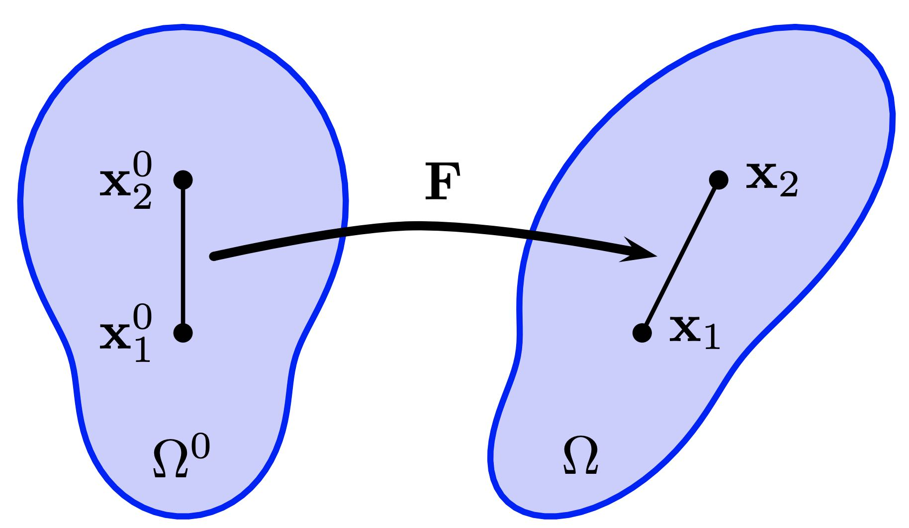
示例 12.2.1. 直观上，变形梯度 表示材料内部局部变形的程度。考虑仿真开始时嵌在材料中的两个邻近点 与 （如 图 12.2.1 所示）。若 与 表示这两个点在当前构型中的位置，则它们之间的关系可表示为： 该方程表明变形梯度如何把两点之间的初始距离变换为它们当前的距离，从而量化局部变形。
变形梯度 的行列式通常记作 ，它之所以关键，是因为它刻画了变形过程中的无穷小体积变化。即 。 的值表示变形后构型 中材料的无穷小体积与其在 中原体积之比。例如，在包含旋转与平移的刚体运动中， 是旋转矩阵，因此 。值得注意的是，单位矩阵也是旋转矩阵，同样给出 。
若 ，表示体积增大；而 表示体积减小。 的情形意味着体积实际上变为零，这在现实世界中不可能，但在数值上却可能发生。在三维中，这意味着材料被压缩到可能塌缩成没有体积的平面、直线甚至一个点。反之， 表示材料翻转。例如在二维中，若某个三角形的 ，则意味着一个顶点穿过了对边，实际上“翻转”了该三角形，使其面积为负。正如移动边界条件一节所示，弹性方块的严重压缩可能导致翻转。在这种情况下， 可作为这种伪影的直接度量，许多弹性模型都利用它来确保仿真不出现翻转。
小结
通过定义把连续体从材料空间（初始构型）变换到世界空间（当前构型）的流动映射，我们引入了形状变化的数学描述——变形梯度 （ 或 ），它是流动映射关于 的雅可比矩阵。
当连续体上某点的 是旋转矩阵时，表明不存在变形，因而也不应有局部弹性力。下一讲中，我们将探讨如何利用变形梯度定义更真实的弹性势能。
应变能
既然变形梯度 可以作为局部变形的严格数学度量，我们便能基于 定义弹性势能，从而更准确地刻画固体的弹性行为。 是在固体域内每个局部点上度量的。我们会对每个点局部度量弹性势，再把弹性势在整个域上积分。这一做法与 二维质点-弹簧系统 案例研究中的过程如出一辙——在那里，每根弹簧的能量按估计体积加权，在离散框架下求和。此处 也称为应变，而弹性势 （称为应变能）则来自对固体域内每个物质点上的应变能密度函数 进行积分： 本讲将探讨 的各种设计选择，并考察它们的一些性质。
刚体零空间与旋转不变性
正如上一讲所述，对于只发生平移和/或旋转运动的固体，不会储存弹性势能，因而也不会产生弹性力。这意味着任意应变能密度函数 都具有刚体零空间，即当输入的变形梯度为任意旋转矩阵 时， 都应保持为 ： 方阵 是旋转矩阵，当且仅当： 由这一定义可以直接得到 的一种形式：用二次项惩罚 偏离旋转矩阵的程度： 这里， 与 为刚度参数，其中第一项来自对 两边右乘 。这一直观的形式与许多标准应变能密度函数的构造方式高度吻合。
定义 13.1.1 (新胡克弹性). 新胡克（neo-Hookean）弹性模型由如下能量密度函数刻画： 对 关于 求导，得到： 由该梯度可见，当 （即 ）时， 项取到局部极小值；而对 项，局部极小值出现在 处。
定义 13.1.2 (拉梅参数). 在标准应变能密度函数中，刚度参数 与 称为拉梅参数。这两个参数与杨氏模量 以及泊松比 直接相关：前者衡量材料抵抗拉伸的能力，后者衡量固体的不可压缩性：
定义 13.1.3 (旋转不变性). 任何非线性弹性模型的能量密度函数都是旋转不变的。用数学语言表述为： 直观地说，这意味着在变形之后施加的任何旋转都不应改变应变能密度函数的取值。
然而，最简单的应变能密度函数——线性弹性——其零空间中不包含刚体模态，也不满足式 (13.1.3)。这是因为线性弹性是专门针对无穷小应变设计的，此类情形不涉及明显的旋转。
值得注意的是，配合相应拉梅参数的线性弹性模型是针对小变形条件下的真实实验校准的。在此类情形下，所有标准应变能密度函数都必须与线性弹性一致。在下一节引入 的极奇异值分解之后，我们将简要说明这些模型与线性弹性之间的一致性。
旋转不变性（式 (13.1.3)）不应与某些弹性模型的各向同性性质混为一谈。
定义 13.1.5 (各向同性弹性). 各向同性弹性模型的能量密度函数满足 这意味着在任何方向上施加相同的拉伸量都会引起相同的能量变化。因此，材料中不存在比其他方向更难或更易变形的特殊方向。
新胡克模型（式 (13.1.2)）与我们此前的直观模型（式 (13.1.1)）都是各向同性模型的例子。然而，线性弹性（式 (13.1.4)）不满足这一条件（式 (13.1.5)），因为它并非为有效处理旋转运动而设计。
对于各向异性弹性模型，抵抗拉伸的能力随方向而变化。布料、骨骼、肌肉与木材等材料都是各向异性材料的例子，它们在不同方向上表现出不同的力学性质。
极奇异值分解
在讨论一般滑移边界条件时，我们介绍了奇异值分解（Singular Value Decomposition，SVD）的用法。这里我们采用一种称为极奇异值分解（SVD）（Polar 奇异值分解（SVD），算法 13.2.1）的变体来分解 ： 其中 与 都是 旋转矩阵， 是 对角矩阵。标准奇异值分解（SVD）保证 非负，代价则可能是 或 ；与此不同，极奇异值分解（SVD）保持 与 ，并在必要时允许 为负。
极奇异值分解（SVD）因其与极分解的关系而得名，其中 表示为 。该分解可通过 与 重构，其中 表示最接近 的旋转， 是对称的。
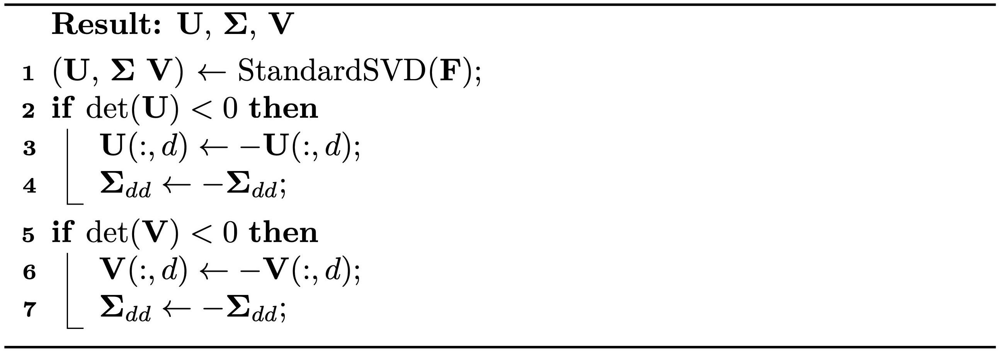
的极奇异值分解（SVD）提供了一种更直观的理解变形的方式。若以 记主拉伸，我们可以把 理解为一系列变换的组合：首先是旋转 ，接着沿各轴按 缩放各维度，最后再作一次旋转 。该分解适用于所有可能的 。
极奇异值分解（SVD）还使我们能更方便地用 表达各向同性应变能密度函数。例如，式 (13.1.1) 中我们凭直觉给出的公式可以改写为：
其中 。此外，Neo-Hookean 应变能密度函数（式 (13.1.2)）可改写为：
这两个模型在小变形下都与线弹性一致。
定义 13.2.1 (与线弹性的一致性). 要验证应变能密度函数 与线弹性的一致性，我们只需检查以下关系是否全部成立： 这里 ，且当 时 ，否则为 。
简化模型与可逆性
定义 13.3.1 (共旋线性弹性). 为使线性弹性在保持简洁性的同时具备旋转感知能力，我们可以引入一个基准旋转 ，并构造能量密度函数 用它惩罚 与这个固定的 之间的偏差。这称为共旋线性弹性。
仍是关于 的二次能量，对动态仿真非常有用。在每个时间步 的优化开始时，我们计算 的最接近旋转 ： 如前所述，该解由对 的极分解给出；借助极分解奇异值分解（Singular Value Decomposition，SVD） ，可得 。然而，共旋线性弹性仍然不是旋转不变的，因为 在优化过程中不随 变化。因此，它不适用于大变形。
对于旋转不变的弹性模型，计算机图形学领域的从业者出于视觉计算的需要对其进行了简化。例如，在能量密度函数中只保留 项而忽略 项，以获得更高的计算效率： 这里 称为尽可能刚性（As-Rigid-As-Possible，ARAP）能量，广泛用于形状建模、布料仿真与曲面参数化等。 虽然相对 ARAP 而言是 的更高阶多项式，但其计算无需对 执行昂贵的奇异值分解（SVD）。
本讲中我们考察过的所有应变能密度函数，除新胡克模型外，其余都定义在整个定义域 上。新胡克能量密度函数定义在 上。正如增量势能接触（Incremental Potential Contact，IPC）中用于防止相互穿透的障碍能量， 也是一种障碍能量，当 趋近于 时它趋于无穷大，从而提供任意大的弹性力以防止翻转（）。
允许 的应变能密度函数也称为可逆弹性模型。它们易于处理（无需线搜索过滤），但不能保证无翻转。设计一种既能提供相当大的抗翻转能力又可逆的弹性能量，在计算机图形学研究中受到了广泛关注 [Stomakhin et al. 2012] [Smith et al. 2018]。
小结
弹性势能 是应变能密度函数 在固体域内每个局部点上的积分。从刚体零空间出发，我们推导出了应变能密度函数的一种直观形式，其结构类似于新胡克等标准模型。非线性弹性模型还具有旋转不变性，即在变形 之后施加的任何旋转都不改变 。
线性弹性的能量密度函数为二次型，是专门针对无穷小应变 设计的，其零空间中缺少刚体模态。然而，配合相应的拉梅参数 与 ，它能够准确刻画真实世界中观察到的小变形行为。标准弹性模型在小变形下必须与线性弹性保持一致。
本讲聚焦于各向同性弹性，其中不存在使材料更难或更易变形的特殊方向。对 执行极奇异值分解（Singular Value Decomposition，SVD），使我们能够仅用主拉伸 重写各向同性模型的 。
利用上一时间步中 的最接近旋转 ，我们构造了共旋线性弹性，使线性弹性在保持简洁的同时具备旋转感知能力。进一步简化、只保留 项，则能提升视觉计算中的效率。
与增量势能接触（Incremental Potential Contact，IPC）中强制执行非相互穿透的方式类似，新胡克的能量密度函数起到障碍函数的作用，确保无翻转（）。本讲介绍的其他弹性模型都是可逆的，它们并不保证无翻转。
下一讲我们将探讨 关于 的导数。
应力及其导数
在介绍标准应变能之后，我们接下来要对其关于世界空间坐标 求导，以仿真真实的弹性行为。不过，首先需要建立这些坐标 与变形梯度 之间的显式关系。这一关系在很大程度上取决于具体的离散化选择。
在深入探讨离散化之前，我们应先理解如何计算应变能函数 关于 的导数。这些导数与应力的概念有着根本联系，而应力是理解材料在变形下行为的关键要素。
应力
应力是与变形梯度 类似的张量场，它定义在固体材料的整个区域上。应力量化材料物体内部承受的压力与张力。应力与应变（或 ）之间的联系通过所谓的本构关系建立。这一关系描述了材料如何响应各种变形。
本构关系的一个常见例子是一维胡克定律，它适用于许多常规材料在弹性条件下的情形。在超弹性材料的语境下，该关系具体由应变能函数 定义。
定义 14.1.1 (超弹性材料). 超弹性材料是这样一类弹性固体：其第一类 Piola-Kirchhoff 应力 可由应变能密度函数 通过下式导出 用指标记法表示，即 在离散意义下是一个与 维数相同的小矩阵。
在研究材料在应力作用下的行为时，人们会使用各种定义，其中柯西应力在工程领域尤为常用。柯西应力记为 ，它可通过如下关系在数学上与第一类 Piola-Kirchhoff 应力张量 相联系：
对于不需要奇异值分解（Singular Value Decomposition，SVD）的能量模型，例如新胡克（Neo-Hookean）模型，由应变能函数 计算 相对直接。然而，一般的各向同性弹性模型，如 ARAP（As-Rigid-As-Possible），往往依赖主拉伸或最近旋转矩阵的计算，因而需要奇异值分解（SVD）。当要确定对隐式时间积分至关重要的 时，这一计算会变得格外复杂且耗费资源。
我们介绍一种利用稀疏结构的高效方法（由 [Stomakhin et al. 2012] 提出），用于计算一般各向同性弹性材料的第一类 Piola-Kirchhoff 应力张量 及其导数 （无论以张量形式还是以微分 形式给出）。该方法借助符号计算软件包，我们将具体讨论在 Mathematica 中的实现。在 Maple 或其他软件中的实现同样直接，遵循相同的概念框架。若想更深入地了解计算机图形学中常用的导数计算，可参阅 [Schroeder 2022] 的工作。
需要注意的是，所讨论的计算策略也可用于对角空间中的其他导数，与 类似。例如，在某些模型中，人们更倾向于使用基尔霍夫应力 而不是第一类 Piola-Kirchhoff 应力 。基尔霍夫应力表示为： 其中 是一种对角应力度量，其每个元素都是奇异值 的函数。计算 的方法与计算 的方法相同。
计算
我们从 的计算开始。对于各向同性材料，第一类 Piola-Kirchhoff 应力张量可按如下方式计算： 该形式利用了 与 共享同一奇异值分解（Singular Value Decomposition，SVD）空间这一性质，从而简化了推导与计算过程。
示例 14.2.1. 对于新胡克模型（式 (13.1.2)），有： 因此，我们可以先对 执行奇异值分解（SVD），并由此得到： 从而无需符号推导 关于 的导数，即可计算 。
这里我们给出 在对角空间中与旋转可交换的证明（见式 (14.2.1)）。为说明对任意旋转矩阵 都有 ，考虑一个一般（可以是各向异性）的材料模型。关键在于，变形之后施加的旋转不改变材料储存的能量，因此有恒等式 。将该式两边对变形梯度 求导，得到：
此外，对于满足 的各向同性材料，类似的论证表明 。综合 在旋转下的这些关系，我们得到： 该形式确认了 在对角空间中的旋转不变性。
关于 的补充证明
上文中最后一个等号来自如下事实： 下面说明该式为何成立。
（1）首先，我们断言 是对角矩阵。这可以从各向同性弹性的如下表达式看出： 其中 为各向同性不变量。参照 [Sifakis & Barbic 2012]（第 23 页），可以观察到：当自变量 为对角矩阵时， 必为对角矩阵。因此，当 为对角矩阵时， 也是对角矩阵。
（2）其次，我们断言 该式在 [Xu et al. 2015]（式 7）中已给出证明。
（3）基于（2），可知对任意 ，代入 后有 利用此式可以写出 的情形。例如对 ，有
（4）最后，我们推导 。由（1）已知它是对角矩阵，因此只需推导其对角元素。以 元素为例： 至此，最终证明完成。
计算 或
为计算 关于 的导数，我们利用前文针对 讨论过的旋转不变性。任取两个旋转矩阵 与 。由 的旋转性质可得：
定义 ，则有：
将 与 视为常量，对 取微分，得：
令 、，此时 ，微分表达式简化为：
张量导数 用指标记法表示为：
这些表达式对任意 都必须成立，由此得到关系式：
于是剩下的任务就是计算 。下面说明在三维情形下如何计算。
首先介绍罗德里格斯旋转公式（Rodrigues' rotation formula），它给出了用单位向量 与旋转角 表示任意旋转矩阵的方法。该公式为： 其中 是与 关联的反对称叉乘矩阵。该公式表明，任意旋转矩阵仅由三个自由度刻画，记为 。这些分量用于定义旋转向量 ， 与 则由其按如下方式得到：
采用这种参数化，旋转矩阵 与 各可由三个参数描述。
现在我们用如下代码，以 、、、、、、、、 定义 ，其中 与 由 与 借助罗德里格斯旋转公式定义， 是来自 的奇异值。
id=IdentityMatrix[3];
var={s1,s2,s3,u1,u2,u3,v1,v2,v3};
Sigma=DiagonalMatrix[{s1,s2,s3}];
cp[k1_,k2_,k3_]={{0,-k3,k2},{k3,0,-k1},{-k2,k1,0}};
vV={v1,v2,v3};
vU={u1,u2,u3};
nv=Sqrt[Dot[vV,vV]];
nu=Sqrt[Dot[vU,vU]];
UU=cp[u1,u2,u3]/nu;
VV=cp[v1,v2,v3]/nv;
U=id+Sin[nu]*UU+(1-Cos[nu])*UU.UU;
V=id+Sin[nv]*VV+(1-Cos[nv])*VV.VV;
F=U.Sigma.Transpose[V];
其中 cp 是生成叉乘矩阵的函数（对应于计算 方程 (14.3.1) 中的 ）。
此后，我们把 张量 以及其他同类张量写成 矩阵。 也就是说，每个 矩阵现在是一个长度为 的向量。容易看出，原来的 现在变为 。我们进一步称向量 为 的参数化。于是可以应用链式法则
下面是计算它们的 Mathematica 代码。注意，我们通过取极限 来得到 ， 这对应于旋转几乎为零的情形。
dFdS=D[Flatten[F],{var}];
dFdS0=dFdS/.{u1->e,u2->e,u3->e,v1->e,v2->e,v3->e};
dFdS1=Limit[dFdS0,e->0,Direction->-1];
dSdF0=Inverse[dFdS1];
Phat=DiagonalMatrix[{t1[s1,s2,s3],t2[s1,s2,s3],t3[s1,s2,s3]}];
P=U.Phat.Transpose[V];
dPdS=D[Flatten[P],{var}];
dPdS0=dPdS/.{u1->e,u2->e,u3->e,v1->e,v2->e,v3->e};
dPdS1=Limit[dPdS0,e->0,Direction->-1];
dPdF=Simplify[dPdS1.dSdF0];
注意，Mathematica 中的 'Direction->-1' 表示从较大值一侧取极限趋向较小的极限值。Mathematica 的计算结果将以奇异值与 表示。随后即可据此写出公式，在代码中实现它们。 [Stomakhin et al. 2012] 给出了结果：（尺寸为 的矩阵）经置换后成为分块对角矩阵，对角块为 ，其中 以及 对于 中可能引入除零的项（在将它们完全化简之后），需要做分母钳制。 这里我们将 与 分别记为 与 。 当两个奇异值接近相等，或两个奇异值之和接近零时，除以 会出问题。后者在允许奇异值取负的约定下是可能出现的 （如可逆弹性 [Irving et al. 2004] [Stomakhin et al. 2012]）。
将 按部分分式展开，可得有用的分解 注意，若 在奇异值置换下不变，则当 时有 。因此， 只要实现得当，对于各向同性模型，第一项通常可以稳健地计算。而若当 时 ，则另一分式也可稳健计算。 但这一条件通常并不成立，因为那意味着本构模型难以从退化或翻转的构形中恢复。 因此，该项在某些情形下会无界。 我们的处理办法是在做除法之前把分母的幅值钳制为不小于 ，从而将导数限制在有界范围内。
在二维情形，旋转矩阵现在只需用单个 参数化，其重构方式为
完整的二维 Mathematica 代码如下
id=IdentityMatrix[2];
var={s1,s2,u1,v1};
S=DiagonalMatrix[{s1,s2}];
U={{Cos[u1],-Sin[u1]
},{Sin[u1],Cos[u1]}};
V={{Cos[v1],-Sin[v1]},{Sin[v1],Cos[v1]}};
F=U.S.Transpose[V];
dFdS=D[Flatten[F],{var}];
dFdS0=dFdS/.{u1->e,v1->e};
dFdS1=Limit[dFdS0,e->0,Direction->-1};
dSdF0=Inverse[dFdS1];
Phat=DiagonalMatrix[{t1[s1,s2],t2[s1,s2]}];
P=U.Phat.Transpose[V];
dPdS=D[Flatten[P],{var}];
dPdS0=dPdS/.{u1->e,v1->e};
dPdS1=Limit[dPdS0,e->0,Direction->-1];
dPdF=Simplify[dPdS1.dSdF0];
其中 现在也是 ，且只有一个 。
小结
应力是一种张量场，用于量化作用在材料物体上的压力或张力。在超弹性材料的语境下，第一类 Piola-Kirchhoff 应力张量 起着关键作用。它被定义为应变能密度函数 关于变形梯度 的导数，从而在应力与应变之间建立起本构关系。
在实际计算中，尤其是对固体动力学的隐式积分而言，高效地计算 及其导数 十分必要。借助对角空间中的稀疏结构，这些计算变得更为可行。此时主要需要对 关于主拉伸 求导，这简化了计算过程。
在下一讲中，我们将把这些原理应用于无翻转弹性模型，并通过压缩方块仿真进行演示。该应用将运用本章讨论的概念来解决固体力学中复杂的实际问题。
案例研究：无翻转弹性*
在本章末尾，我们实现前几讲介绍的 Neo-Hookean 模型，用来仿真无翻转的弹性固体。
本节可执行的 Python 项目位于 https://github.com/phys-sim-book/solid-sim-tutorial 的 6_inv_free 文件夹中。
MUDA GPU 实现位于 https://github.com/phys-sim-book/solid-sim-tutorial-gpu 的 simulators/6_inv_free 文件夹中。
与质点-弹簧模型中把弹性离散到弹簧上不同，我们在此把 Neo-Hookean 模型离散到三角形单元上，根据变形梯度 与世界空间节点位置 之间的关系，应用链式法则计算弹性力，然后发展出一种基于求根的方法来过滤线搜索的初始步长，以保证无翻转。
线性三角形单元
在前面的讨论中，我们学会了计算 及其关于 的导数。然而在仿真中，我们需要的是 与 。这就要求我们清楚地理解 ，因为只有这样，我们才能有效地运用链式法则推导出这些关于 的导数。
在二维仿真中，我们常常把固体区域划分为非退化的三角形单元。假设映射 在每个三角形内是线性的，从而使变形梯度 保持为常数。参考 示例 12.2.1，对于由顶点 定义的三角形，有： 其中 表示三角形顶点的世界空间坐标。这一关系给出 的表达式： 式 (15.1.1) 表明，这里得到的 通过三角形边 与 的线性组合，把三角形内的任意线段映射到其世界空间中的对应线段。该公式更一般、更严格的推导将在后续章节中给出。
一旦建立了 ，我们就可以对每个三角形计算它关于 的导数如下： 其中 表示由第二、第三个顶点分别减去第一个顶点所构成的矩阵的逆。该矩阵 可以在初始化时与其他属性（如每个三角形的体积和拉梅参数）一起预先计算：
实现 15.1.1 (单元信息的预计算，simulator.py).
# rest shape basis, volume, and lame parameters
vol = [0.0] * len(e)
IB = [np.array([[0.0, 0.0]] * 2)] * len(e)
for i in range(0, len(e)):
TB = [x[e[i][1]] - x[e[i][0]], x[e[i][2]] - x[e[i][0]]]
vol[i] = np.linalg.det(np.transpose(TB)) / 2
IB[i] = np.linalg.inv(np.transpose(TB))
mu_lame = [0.5 * E / (1 + nu)] * len(e)
lam = [E * nu / ((1 + nu) * (1 - 2 * nu))] * len(e)
杨氏模量与泊松比：
E = 1e5 # Young's modulus
nu = 0.4 # Poisson's ratio
这里，e 不再像质点-弹簧模型中那样存储所有边单元，而是表示所有三角形单元，这可以通过如下修改网格生成代码来得到：
实现 15.1.2 (组装每个三角形的顶点索引，square_mesh.py).
# connect the nodes with triangle elements
e = []
for i in range(0, n_seg):
for j in range(0, n_seg):
# triangulate each cell following a symmetric pattern:
if (i % 2)^(j % 2):
e.append([i * (n_seg + 1) + j, (i + 1) * (n_seg + 1) + j, i * (n_seg + 1) + j + 1])
e.append([(i + 1) * (n_seg + 1) + j, (i + 1) * (n_seg + 1) + j + 1, i * (n_seg + 1) + j + 1])
else:
e.append([i * (n_seg + 1) + j, (i + 1) * (n_seg + 1) + j, (i + 1) * (n_seg + 1) + j + 1])
e.append([i * (n_seg + 1) + j, (i + 1) * (n_seg + 1) + j + 1, i * (n_seg + 1) + j + 1])
三角形以对称方式排列，可通过绘制三条边来渲染：
实现 15.1.3 (绘制三角形，simulator.py).
pygame.draw.aaline(screen, (0, 0, 255), screen_projection(x[eI[0]]), screen_projection(x[eI[1]]))
pygame.draw.aaline(screen, (0, 0, 255), screen_projection(x[eI[1]]), screen_projection(x[eI[2]]))
pygame.draw.aaline(screen, (0, 0, 255), screen_projection(x[eI[2]]), screen_projection(x[eI[0]]))
计算能量、梯度与海森矩阵
我们首先按照应变能与应力及其导数两节，实现 、 以及经对称正定（Symmetric Positive Definite，SPD）投影的 的计算：
实现 15.2.1 (关于 的能量导数，NeoHookeanEnergy.py).
import utils
import numpy as np
import math
def polar_svd(F):
[U, s, VT] = np.linalg.svd(F)
if np.linalg.det(U) < 0:
U[:, 1] = -U[:, 1]
s[1] = -s[1]
if np.linalg.det(VT) < 0:
VT[1, :] = -VT[1, :]
s[1] = -s[1]
return [U, s, VT]
def dPsi_div_dsigma(s, mu, lam):
ln_sigma_prod = math.log(s[0] * s[1])
inv0 = 1.0 / s[0]
dPsi_dsigma_0 = mu * (s[0] - inv0) + lam * inv0 * ln_sigma_prod
inv1 = 1.0 / s[1]
dPsi_dsigma_1 = mu * (s[1] - inv1) + lam * inv1 * ln_sigma_prod
return [dPsi_dsigma_0, dPsi_dsigma_1]
def d2Psi_div_dsigma2(s, mu, lam):
ln_sigma_prod = math.log(s[0] * s[1])
inv2_0 = 1 / (s[0] * s[0])
d2Psi_dsigma2_00 = mu * (1 + inv2_0) - lam * inv2_0 * (ln_sigma_prod - 1)
inv2_1 = 1 / (s[1] * s[1])
d2Psi_dsigma2_11 = mu * (1 + inv2_1) - lam * inv2_1 * (ln_sigma_prod - 1)
d2Psi_dsigma2_01 = lam / (s[0] * s[1])
return [[d2Psi_dsigma2_00, d2Psi_dsigma2_01], [d2Psi_dsigma2_01, d2Psi_dsigma2_11]]
def B_left_coef(s, mu, lam):
sigma_prod = s[0] * s[1]
return (mu + (mu - lam * math.log(sigma_prod)) / sigma_prod) / 2
def Psi(F, mu, lam):
J = np.linalg.det(F)
lnJ = math.log(J)
return mu / 2 * (np.trace(np.transpose(F).dot(F)) - 2) - mu * lnJ + lam / 2 * lnJ * lnJ
def dPsi_div_dF(F, mu, lam):
FinvT = np.transpose(np.linalg.inv(F))
return mu * (F - FinvT) + lam * math.log(np.linalg.det(F)) * FinvT
def d2Psi_div_dF2(F, mu, lam):
[U, sigma, VT] = polar_svd(F)
Psi_sigma_sigma = utils.make_PSD(d2Psi_div_dsigma2(sigma, mu, lam))
B_left = B_left_coef(sigma, mu, lam)
Psi_sigma = dPsi_div_dsigma(sigma, mu, lam)
B_right = (Psi_sigma[0] + Psi_sigma[1]) / (2 * max(sigma[0] + sigma[1], 1e-6))
B = utils.make_PSD([[B_left + B_right, B_left - B_right], [B_left - B_right, B_left + B_right]])
M = np.array([[0, 0, 0, 0]] * 4)
M[0, 0] = Psi_sigma_sigma[0, 0]
M[0, 3] = Psi_sigma_sigma[0, 1]
M[1, 1] = B[0, 0]
M[1, 2] = B[0, 1]
M[2, 1] = B[1, 0]
M[2, 2] = B[1, 1]
M[3, 0] = Psi_sigma_sigma[1, 0]
M[3, 3] = Psi_sigma_sigma[1, 1]
dP_div_dF = np.array([[0, 0, 0, 0]] * 4)
for j in range(0, 2):
for i in range(0, 2):
ij = j * 2 + i
for s in range(0, 2):
for r in range(0, 2):
rs = s * 2 + r
dP_div_dF[ij, rs] = M[0, 0] * U[i, 0] * VT[0, j] * U[r, 0] * VT[0, s] \
+ M[0, 3] * U[i, 0] * VT[0, j] * U[r, 1] * VT[1, s] \
+ M[1, 1] * U[i, 1] * VT[0, j] * U[r, 1] * VT[0, s] \
+ M[1, 2] * U[i, 1] * VT[0, j] * U[r, 0] * VT[1, s] \
+ M[2, 1] * U[i, 0] * VT[1, j] * U[r, 1] * VT[0, s] \
+ M[2, 2] * U[i, 0] * VT[1, j] * U[r, 0] * VT[1, s] \
+ M[3, 0] * U[i, 1] * VT[1, j] * U[r, 0] * VT[0, s] \
+ M[3, 3] * U[i, 1] * VT[1, j] * U[r, 1] * VT[1, s]
return dP_div_dF
接下来，我们实现 的计算，以及与 的张量积，以便基于链式法则计算弹性能量的梯度与海森矩阵：
实现 15.2.2 (关于 的能量导数，NeoHookeanEnergy.py).
def deformation_grad(x, elemVInd, IB):
F = [x[elemVInd[1]] - x[elemVInd[0]], x[elemVInd[2]] - x[elemVInd[0]]]
return np.transpose(F).dot(IB)
def dPsi_div_dx(P, IB): # applying chain-rule, dPsi_div_dx = dPsi_div_dF * dF_div_dx
dPsi_dx_2 = P[0, 0] * IB[0, 0] + P[0, 1] * IB[0, 1]
dPsi_dx_3 = P[1, 0] * IB[0, 0] + P[1, 1] * IB[0, 1]
dPsi_dx_4 = P[0, 0] * IB[1, 0] + P[0, 1] * IB[1, 1]
dPsi_dx_5 = P[1, 0] * IB[1, 0] + P[1, 1] * IB[1, 1]
return [np.array([-dPsi_dx_2 - dPsi_dx_4, -dPsi_dx_3 - dPsi_dx_5]), np.array([dPsi_dx_2, dPsi_dx_3]), np.array([dPsi_dx_4, dPsi_dx_5])]
def d2Psi_div_dx2(dP_div_dF, IB): # applying chain-rule, d2Psi_div_dx2 = dF_div_dx^T * d2Psi_div_dF2 * dF_div_dx (note that d2F_div_dx2 = 0)
intermediate = np.array([[0.0, 0.0, 0.0, 0.0]] * 6)
for colI in range(0, 4):
_000 = dP_div_dF[0, colI] * IB[0, 0]
_010 = dP_div_dF[0, colI] * IB[1, 0]
_101 = dP_div_dF[2, colI] * IB[0, 1]
_111 = dP_div_dF[2, colI] * IB[1, 1]
_200 = dP_div_dF[1, colI] * IB[0, 0]
_210 = dP_div_dF[1, colI] * IB[1, 0]
_301 = dP_div_dF[3, colI] * IB[0, 1]
_311 = dP_div_dF[3, colI] * IB[1, 1]
intermediate[2, colI] = _000 + _101
intermediate[3, colI] = _200 + _301
intermediate[4, colI] = _010 + _111
intermediate[5, colI] = _210 + _311
intermediate[0, colI] = -intermediate[2, colI] - intermediate[4, colI]
intermediate[1, colI] = -intermediate[3, colI] - intermediate[5, colI]
result = np.array([[0.0, 0.0, 0.0, 0.0, 0.0, 0.0]] * 6)
for colI in range(0, 6):
_000 = intermediate[colI, 0] * IB[0, 0]
_010 = intermediate[colI, 0] * IB[1, 0]
_101 = intermediate[colI, 2] * IB[0, 1]
_111 = intermediate[colI, 2] * IB[1, 1]
_200 = intermediate[colI, 1] * IB[0, 0]
_210 = intermediate[colI, 1] * IB[1, 0]
_301 = intermediate[colI, 3] * IB[0, 1]
_311 = intermediate[colI, 3] * IB[1, 1]
result[2, colI] = _000 + _101
result[3, colI] = _200 + _301
result[4, colI] = _010 + _111
result[5, colI] = _210 + _311
result[0, colI] = -_000 - _101 - _010 - _111
result[1, colI] = -_200 - _301 - _210 - _311
return result
最后，整个网格上的 Neo-Hookean 能量值、梯度与海森矩阵可按如下方式计算：
实现 15.2.3 (能量值、梯度与海森矩阵，NeoHookeanEnergy.py).
def val(x, e, vol, IB, mu, lam):
sum = 0.0
for i in range(0, len(e)):
F = deformation_grad(x, e[i], IB[i])
sum += vol[i] * Psi(F, mu[i], lam[i])
return sum
def grad(x, e, vol, IB, mu, lam):
g = np.array([[0.0, 0.0]] * len(x))
for i in range(0, len(e)):
F = deformation_grad(x, e[i], IB[i])
P = vol[i] * dPsi_div_dF(F, mu[i], lam[i])
g_local = dPsi_div_dx(P, IB[i])
for j in range(0, 3):
g[e[i][j]] += g_local[j]
return g
def hess(x, e, vol, IB, mu, lam):
IJV = [[0] * (len(e) * 36), [0] * (len(e) * 36), np.array([0.0] * (len(e) * 36))]
for i in range(0, len(e)):
F = deformation_grad(x, e[i], IB[i])
dP_div_dF = vol[i] * d2Psi_div_dF2(F, mu[i], lam[i])
local_hess = d2Psi_div_dx2(dP_div_dF, IB[i])
for xI in range(0, 3):
for xJ in range(0, 3):
for dI in range(0, 2):
for dJ in range(0, 2):
ind = i * 36 + (xI * 3 + xJ) * 4 + dI * 2 + dJ
IJV[0][ind] = e[i][xI] * 2 + dI
IJV[1][ind] = e[i][xJ] * 2 + dJ
IJV[2][ind] = local_hess[xI * 2 + dI, xJ * 2 + dJ]
return IJV
针对无翻转的过滤线搜索
为保证仿真过程中的无翻转（正如非穿透那样，参见过滤线搜索），我们可以类似地用一个临界步长 来过滤线搜索的初始步长，该步长首次使任意三角形的体积变为 。这可以通过对每个三角形求解一个一维方程得到： 然后取所解得的各步长中的最小值。这里 是节点 的搜索方向，而在二维情形下，式 (15.3.1) 等价于： 其中 ，，。展开式 (15.3.2) 可得： 该式可整理为关于 的二次方程： 注意，当节点运动幅度很小、或其运动几乎不改变当前时间步的三角形面积时， 可能非常小，于是该方程会退化为线性方程。为了稳健地检测这种退化情形，我们不能直接检查 是否为 ，因为这会受数值误差影响。事实上，检查 是否低于某个 epsilon 仍然很棘手，因为 的量级严重依赖于场景尺度以及仿真过程中节点的速度。因此，我们以 作为缩放，得到一个缩放但等价的方程： 其中可以对任意系数用无量纲阈值安全地进行量级检查。
在实践中，我们还需要留出一些松弛量，使所取的步长不会导致体积恰好为 。因此，我们求解 ，使其首次将任意三角形的体积减少 ，这可以通过把式 (15.3.3) 中的常数项系数由 改为 来实现：
实现 15.3.1 (过滤线搜索，NeoHookeanEnergy.py).
def init_step_size(x, e, p):
alpha = 1
for i in range(0, len(e)):
x21 = x[e[i][1]] - x[e[i][0]]
x31 = x[e[i][2]] - x[e[i][0]]
p21 = p[e[i][1]] - p[e[i][0]]
p31 = p[e[i][2]] - p[e[i][0]]
detT = np.linalg.det(np.transpose([x21, x31]))
a = np.linalg.det(np.transpose([p21, p31])) / detT
b = (np.linalg.det(np.transpose([x21, p31])) + np.linalg.det(np.transpose([p21, x31]))) / detT
c = 0.9 # solve for alpha that first brings the new volume to 0.1x the old volume for slackness
critical_alpha = utils.smallest_positive_real_root_quad(a, b, c)
if critical_alpha > 0:
alpha = min(alpha, critical_alpha)
return alpha
这里，如果该方程没有正实根，则意味着对于这个特定三角形，步长可以任意大，也不会触发翻转。
该二次方程可按如下方式求解：
def smallest_positive_real_root_quad(a, b, c, tol = 1e-6):
# return negative value if no positive real root is found
t = 0
if abs(a) <= tol:
if abs(b) <= tol: # f(x) = c > 0 for all x
t = -1
else:
t = -c / b
else:
desc = b * b - 4 * a * c
if desc > 0:
t = (-b - math.sqrt(desc)) / (2 * a) # if a > 0, this is either the smaller positive root, or both roots are negative;
# if a < 0, there are 1 negative and 1 positive real roots, and we just need the positive one.
if t < 0:
t = (-b + math.sqrt(desc)) / (2 * a)
else: # desv<0 ==> imag, f(x) > 0 for all x > 0
t = -1
return t
在使用缩放后的系数时，我们只需用一个无量纲阈值（例如 1e-6）来检查退化情形。若未找到正实根，函数直接返回 -1。
现在，我们在非穿透之外再对初始步长进行过滤：
实现 15.3.3 (应用过滤，time_integrator.py).
alpha = min(BarrierEnergy.init_step_size(x, n, o, p), NeoHookeanEnergy.init_step_size(x, e, p)) # avoid interpenetration, tunneling, and inversion
在确保所有新增的数据结构与修改过的函数都在时间积分器中得到反映之后，我们最终就可以仿真移动边界条件中的压缩方块示例，并保证无翻转（参见 图 15.3.1）。

小结
我们使用线性三角形单元对 Neo-Hookean 模型进行离散化，成功实现了一个无翻转的二维弹性仿真。
通过在每个三角形内保持线性变化的位移场，我们可以直接利用顶点的材料空间坐标与世界空间坐标，为每个三角形计算出一个常量变形梯度 。这一基础设置为计算 Neo-Hookean 能量及其关于 的梯度与海森矩阵（借助链式法则）提供了便利。这些计算对于前几讲讨论的基于优化的时间积分是必不可少的。
为确保仿真同时不发生穿透与翻转，我们采用了与前面类似的策略：线搜索的初始步长通过对每个三角形求解一个二次方程来确定。该方程计算出一个使三角形体积减少 90% 的临界步长。然后取所有三角形中这些临界步长的最小值来初始化线搜索，从而保证了对非穿透与无翻转的稳健性。
在下一章中，我们将深入推导超弹性固体的控制方程，并详细解释每一步，以进一步巩固理解。
强形式与弱形式
固体仿真中所使用的更新规则（参见方程 (1.5.1)）以及相应的优化问题（参见方程 (2.1.1)），都是通过对守恒定律——也就是控制方程——的连续形式进行离散而导出的。本章将探讨这些守恒定律的强形式与弱形式的推导过程。随后我们将讨论它们的时间与空间离散化方法，这些方法对于建立我们要求解的离散问题至关重要。
我们研究的核心基本控制方程是质量守恒与动量守恒（牛顿第二定律）。下面先列出这些方程，本讲稍后给出详细推导。
定义 16.1 (强形式). 设 为定义在 上的速度，则这些方程为 [Gonzalez & Stuart 2008]： 其中 且 。这里 为质量密度，， 为第一类 Piola-Kirchhoff 应力， 为常重力加速度。注意 ，质量守恒也可写成
这些方程最初是以强形式给出的。本讲中我们还将推导力平衡方程（动量守恒）的等价弱形式。弱形式用积分表达式重新表述守恒定律，这对于随后用有限元方法导出方程的时间与空间离散化至关重要。
质量守恒
我们可以认为质量密度 是在 上自然定义的，即 其中 是 （围绕任意 的半径为 的球）在世界空间中对应的区域。 这可以说是一个自然的定义，因为 应当是一个可测量的量。质量守恒可表述为
现在，通过变量替换可得 ，于是方程 (16.1.1) 变为 进而 这是因为 。 然后，结合方程 (16.1.2)、(16.1.3) 与 (16.1.4)，我们可以把质量守恒表述为 这只是在说， 中的质量（用质量密度的积分表示）不随时间改变。该集合与 时刻的一部分物质相关联；随着这部分物质在流动中演化，它会占据更多或更少的空间，但集合中物质的量（质量）始终不变。由于 是任意的，因此必然有
注记 16.1.1 (拉格朗日视角与欧拉视角). 在直接基于 离散并追踪物质的仿真方法中，质量守恒是自动满足的。例如，在我们的有限元方法（Finite Element Method，FEM）仿真器中， 被划分为若干三角形，无论仿真过程中如何变形，每个三角形的质量都保持不变。这种做法称为拉格朗日方法。相比之下，欧拉方法基于 离散并演化物理量，因而往往需要专门处理质量守恒。
动量守恒
在连续体情形下，力被分为体力（又称外力，例如重力）与面力（又称内力，通常由应力给出，例如弹性产生的力）。我们通过面力场来定义基于应力的力，并假定该场存在。面力即单位面积上的力，由场 表示，其定义为： 其中 表示物质空间中的外法向。这里， 表示 之外的材料通过二者界面施加在 之内材料上的合力。函数 刻画的是位于 一侧的材料在点 处作用于位于 一侧材料的单位面积（）或单位长度（）上的力。
可以证明，这意味着存在一个应力场（第一类 Piola-Kirchhoff 应力），满足：
于是，对 应用牛顿第二定律，我们可以把动量守恒表述为： 对所有 与 成立。
应用散度定理，我们可以把方程 (16.2.1) 中的边界积分化为体积积分，得到： 对所有 与 成立。
定义 16.2.1 (向量形式的散度定理). 对定义在闭区域 上的向量值函数 ，设 为该区域边界上的外法向，则下列等式成立： 该定理使我们能够方便地在边界积分与体积积分之间转换。
这里散度算子 独立作用于 的每一行向量，并得到一个列向量：。由于方程 (16.2.2) 对任意的 也成立，我们去掉积分即可得到力平衡方程的强形式：
注记 16.2.1 (固体仿真中的动量守恒). 动量守恒是我们仿真固体时使用的主要控制方程。如前所述，加速度 与内力 都可以用世界空间坐标 来描述。在其他相关量都已确定之后，我们逐步求解 ，从而一步一步地得到动态运动。
弱形式
首先，由于外力项 与左端动量的时间导数颇为相似，为简便起见，我们在推导中先将其忽略。 然后，对任意测试函数 ，计算其与方程 (16.2.3) 两端的点积并在 上积分，即可得到弱形式： 这里我们记 。在不深究有限元分析细节的前提下，可以认为弱形式与强形式完全等价：因为方程 (16.3.1) 要求对任意的 都成立，而求解弱形式所给出的解是原问题的一个“足够好”的解。
采用指标记法，其中 表示向量值函数 的第 个分量， 表示 ，我们可以把方程 (16.3.1) 改写为 如果我们进一步省略求和符号，并约定重复下标表示求和（这就是爱因斯坦记法），则得到 现在对右端应用分部积分，我们可以把方程 (16.3.3) 改写为
定义 16.3.1 (分部积分). 对标量值函数 与向量值函数（向量场），散度的乘积法则为： 在区域 上对两端积分，得到：
然后，若对方程 (16.3.4) 右端的第一部分进一步应用散度定理，可得 量 将作为边界条件给定。若令 为单位参考面积上的边界力（面力），且 ，则可以说动量守恒蕴含： 这就是写在 上的动量守恒弱形式。
注记 16.3.1 (为何采用弱形式). 在固体的有限元方法（Finite Element Method，FEM）中，动量守恒以弱形式表述，而不是直接离散强形式，这是因为弱形式具有特定的优势。强形式要求位移场及其导数在整个区域上连续可微，而在涉及复杂几何或材料不连续的实际情况中，这一点难以满足。另一方面，弱形式只要求位移场本身连续，从而放宽了对连续导数的要求。这使得弱形式更能适应不规则的网格几何，也更适合引入边界条件与处理界面问题。弱形式基于积分的处理方式降低了对局部不规则性的敏感性，使其在固体力学的数值计算中更加稳定、鲁棒。因此，尽管强形式直接表达了物理定律，但直接离散强形式对于有限元方法（FEM）分析中典型的计算需求与复杂性而言并不实用。
小结
本讲中，我们聚焦仿真域内的一个无穷小区域，推导了控制方程——质量守恒与动量守恒——的强形式。动量守恒方程借助散度定理由面积分转化为了体积分。
对于拉格朗日仿真方法（例如有限元方法（Finite Element Method，FEM）固体仿真），它们基于物质空间 对物理量进行离散与追踪，因此质量守恒自然得到满足。随后我们进一步推导了动量守恒的弱形式。这一过程涉及将动量项与任意测试函数的点积在域上进行积分。由于积分方程必须对任意测试函数成立，弱形式实际上与强形式等价。分部积分以及散度定理的应用是这一推导中的关键技巧。
在下一讲中，我们将对弱形式分别进行时间与空间离散，进一步完善求解案例研究中所考察的离散问题的方法。
弱形式的离散化
本讲中，我们将对动量守恒方程的弱形式（暂时忽略体力）在空间与时间两个层面进行离散化，从而得到离散形式——即第一讲中引入的方程组。
我们首先着眼于某个特定时刻 。由动量守恒方程的弱形式（公式 (16.3.6)），我们有： 对任意 成立，其中上标 表示在 时刻测得的量。这里：
- 与 由仿真设置给定，
- 可由自由度 通过本构关系计算得到，
- 是 对时间的二阶导数，且
- 是任意向量场。
离散空间
为使弱形式中的积分可以数值求值，第一步是离散化光滑向量场 与 。这样它们就能用有限个采样点以及相应的插值函数来表示。
示例 17.1.1 (一维函数插值). 在一维情形下，若要用三个采样点 、、 来近似函数 （图 17.1.1），我们可以使用插值函数 ，并构造 。

图 17.1.1. 借助插值函数 、、 与采样点 、、，函数 可近似为 。
给定仿真域中一组以 或 编号的采样点，我们可以把测试函数 与自由度 近似为： 其中 表示 的第 个分量在时刻 于采样点 处的取值，而 是采样点 处的插值函数。同样地，我们还有： 把这些离散化代入弱形式（公式 (17.1)），并用指标记法表示求和，可得： 在左端，我们看到采样值 与 实际上与 无关，因此可以把它们移到积分号外，得到： 其中 即质量矩阵。
注记 17.1.1 (质量矩阵的性质). 质量矩阵 （公式 (17.1.2)）是对称且半正定的，因为它可以写成： 其中 。于是，对任意向量 ， 在实践中，该质量矩阵可能是奇异的。为解决这一问题，我们通常采用“质量集中”策略，用对角且正定的形式近似质量矩阵。具体做法是对每一行求和并定义：
经过空间离散后，弱形式（公式 (17.1)）的解被限制在 个 维函数空间中，其中 表示采样点的数目（假定所有插值函数两两正交）。这意味着弱形式可能存在位于我们解空间之外的连续解。在这种情况下，我们只能基于所选的采样点与插值函数给出近似解。
定义 17.1.1 (正交函数). 类似于两个向量 与 的正交性（定义为 ），两个函数 与 的正交性定义为： 正如一组基向量可以张成一个有限维空间，正交函数也可以构成函数空间的一组无穷基。从概念上讲，上述积分类似于向量的点积。
话虽如此，为了生成可求解未知量的方程，任意的测试函数 并不需要取遍所有可能情况以产生无穷多个方程。相反，我们只需产生一个张成整个解空间的有限方程组。因此，令 遍历所有采样点，并取 ，我们可以指定测试函数为： 从而得到 个方程： 即得到 个未知量与 个方程，使我们离离散形式又近了一步。
公式 (17.1.3) 右端的两个积分，根据插值函数的具体选择，既可以解析求值，也可以使用求积规则求值。我们将在后续课程中详细讨论这些内容。
离散时间
时间离散把 与自由度（Degree of Freedom，DOF） 联系起来。在连续框架下，。现在，如第一章所述，我们把时间划分为若干小间隔 。利用有限差分公式，我们可以方便地用 近似 。
例如，采用后向欧拉法： 由此得到： 其中 。将这一关系在采样点处代入公式 (17.1.3)，得到：
随后，施加质量集中与零面力边界条件，即 ，我们最终看到：公式 (17.2.1) 正是第一讲中后向欧拉时间积分离散形式的第 行： 其中弹性力 由下式的求值得到： 这将在下一章讨论。
小结
本讲中，我们分别从空间与时间两个方面离散了动量守恒的弱形式，最终得到了第一讲中引入的后向欧拉时间积分所对应的方程组。
空间离散化：
对于空间离散化，在求解域内采样有限个点，并以这些点的位移作为仿真的自由度（degree of freedom，DOF）。借助与每个自由度相关联的插值函数，可以近似得到域中任意一点的位移，从而把弱形式的解限制在由相互正交的插值函数所张成的 个 维函数空间内，其中 表示采样点的个数。这样一来，测试函数 很容易给定，从而生成 个方程来求解 个未知量。
时间离散化：
时间的离散通过特定的时间积分规则把加速度 与自由度 联系起来。通过应用质量集中并假设施加零面力的边界条件，我们最终可以导出离散形式。插值函数的积分将在下一章中讨论。
在下一讲中，我们将讨论连续体情形下的边界条件与摩擦接触。
边界条件与摩擦接触
到目前为止，为了使推导简洁明了，我们在控制方程的强形式与弱形式中都略去了狄利克雷边界条件和摩擦接触。然而，正如我们在边界处理一章中所学到的，这些边界信息对于准确仿真各类固体动力学问题至关重要。
引入边界条件
在我们推导出的弱形式（见公式 (16.3.6)）中，有一个边界项 ，它描述外部作用在固体边界上的力。
若不存在狄利克雷边界条件，则整个边界都按诺伊曼边界条件处理，此时边界力作为问题设置的一部分被给定。回忆我们讨论过的狄利克雷边界条件，其中边界的位移被直接指定。在实践中，外力作用于狄利克雷边界上，以确保其位移精确等于给定值，而这些力正是由这些位移直接计算得到的。
在固体仿真问题中，边界既可以是狄利克雷边界，也可以是诺伊曼边界，这可以用一个更一般的问题提法以强形式描述：
此处 与 分别为诺伊曼边界与狄利克雷边界，，，且 与 为已知量。在推导出动量守恒的弱形式（见公式 (18.1.1) 第一行）之后，边界项 可以按狄利克雷边界与诺伊曼边界分别考虑：
对于诺伊曼边界，由于面力 已知，上述积分在离散化后可直接计算。但对于狄利克雷边界， 在问题求解之前是未知的。因此，一种直接的思路是把狄利克雷边界上的面力作为未知量引入，并求解由离散弱形式方程与狄利克雷边界条件共同构成的系统。
注记 18.1.1 (优化形式). 在优化形式中，势能并不包含任何狄利克雷边界，这相当于忽略了弱形式中的边界积分。这样做是合理的，因为狄利克雷边界条件将由线性等式约束来施加，而相应的离散弱形式方程会被覆盖。
非穿透的法向接触
为防止仿真过程中发生自相互穿透，必须施加一个条件，保证对任意 ，变形映射 都是双射。该双射性由作用于相互接触的表面区域对（记作 ）上的边界力来维持。我们可以把这些力看作另一组诺伊曼边界条件：只有在需要防止相互穿透时，它们才在 上施加额外的力。于是，我们可以将弱形式中的边界积分项扩展如下：
其中 是问题设置中给定的原始诺伊曼边界力，而 是由双射性约束产生的法向接触力。
与狄利克雷边界条件类似， 只有在问题求解之后才能确定。然而，施加非相互穿透条件比指定位移更为复杂。所幸我们可以借助增量势能接触（Incremental Potential Contact，IPC）中 的近似本构模型，把接触力表示为 的函数，从而只需引入这个额外的保守力即可保证非相互穿透。
注记 18.2.1 (重叠边界). 注意，此处 可以与 和 都发生重叠。对于与狄利克雷边界接触的自由（诺伊曼）边界，在施加狄利克雷边界条件时，狄利克雷部分上的 同样会被忽略。但是，如果两个狄利克雷边界相互穿透，则问题在双射性约束下无解。
障碍势能
正如非穿透的距离障碍函数中所讨论的，增量势能接触（Incremental Potential Contact，IPC）处理固体-障碍物接触的原理是：借助障碍函数，确保仿真全过程中任意节点自由度（Degree of Freedom，DOF）与障碍物之间的有符号距离始终为正。为处理自接触（对于余维对象尤其可能出现），这一思想被进一步推广：确保仿真全过程中任意边界点与边界之间的无符号距离始终不为零。
我们考虑边界上两个相互碰撞的区域 与 。对任意点 ，必须确保 与 上任意点之间的最近距离始终不为零。这可以通过障碍函数来强制该最小距离实现，而该函数的负梯度即给出接触力。此式可写作
其中 为障碍函数：
它充当接触势能密度。此处，障碍函数在距离趋于零时趋于无穷，从而提供任意大的排斥力以阻止相互穿透；当距离超过阈值 、并未发生接触时，则不施加任何接触力。通过使用障碍函数，原本非光滑的接触约束被一个本构模型近似，该模型中的力是保守的，因而可借助基于优化的时间积分器得到一致求解。
注记 18.3.1 (障碍密度). 与公式 (7.2.3) 相比，此处的障碍能量密度函数额外乘以 ，以使曲面积分后的量纲保持一致。回忆 注记 7.2.1 中的说明：障碍势能可以看作紧贴固体边界外侧的一层额外的（厚度为 的）虚拟薄层材料，而 的作用类似于杨氏模量。
注记 18.3.2 (最小值算子). 当有多个点到 的距离同时取最小值时，应把 到这些点的距离障碍函数全部相加。
min算子是非光滑的，这仍然会使基于优化的时间积分变得复杂。在下一章中，我们将演示如何按非穿透的距离障碍函数中所述对其进行近似。
两个相互碰撞区域的情形导出一个边界积分：
其中 由公式 (18.3.1) 定义，且：
然而，在此例中我们忽略了 与 各自的自接触。因此，要推广到整个区域上的任意自接触，我们仍可保留公式 (18.2.1) 中用于接触的单个边界积分项 ，并将面力更一般地定义为：
其中 是围绕 的一个无穷小圆，其半径 取足够小，以避免一个点与其测地邻域内的点之间产生不必要的接触力。
注记 18.3.3 (障碍力的极限). 在公式 (18.3.4) 中，对位于 内部的点忽略了自接触。这是为光滑地近似接触力所付出的代价，因为从宏观视角看接触力是不连续的。类似地， 引入了另一个误差来源。不过，当 且 时，我们的模型收敛于该不连续的定义。注意我们还需要 ，否则在 与 之间仍可能存在某个距离 ，使障碍函数在极限下发生发散。
最后，我们可以将整个边界 上的接触势能定义为：
此处使用系数 ，是因为每一对相互接触点的障碍能量密度 由于对称性会在积分中被计算两次。在计算障碍力时，两处出现都需要求导。因此，引入系数 可使结果与公式 (18.3.4) 中的力定义相匹配。我们将在下一章离散弱形式的讨论中详细说明这一点。
弱形式中并不需要接触势能，但它对基于优化的时间积分很有用。
摩擦力
与摩擦接触类似，在库仑约束下最大化耗散率，可以用变分形式定义单位面积上的摩擦力：
此处， 是 与最近点 之间的相对滑动速度， 为摩擦系数， 为单位面积上的法向接触力， 为法向。
这等价于：
其中当 时 ，而当 时 取任意与 正交的单位向量。
此外，摩擦缩放函数 关于 也是非光滑的，因为当 时 ，而当 时 。这些非光滑性质会严重阻碍、甚至破坏基于梯度的优化的收敛性。此处对摩擦-速度关系的磨光处理，采用与摩擦接触相同的方式。
小结
我们在连续框架下讨论了诺伊曼边界条件与狄利克雷边界条件以及摩擦接触，从而补全了严谨的问题提法。将所有内容以强形式汇总，对任意 有：
在推导出动量方程的弱形式之后，边界积分项可拆分如下：
此处只有诺伊曼力 是已知的，而其余边界力都要在求解耦合系统之后才能确定。所幸，狄利克雷边界条件可以自然地作为线性等式约束在优化框架中施加。摩擦接触力 与 都可以光滑地近似为保守力，且误差可控。
在下一章中，我们将讨论如何用有限元方法（Finite Element Method，FEM）对弱形式进行离散化，从而把本章的推导与离散仿真方法联系起来。
线性有限元
从连续形式的控制方程出发，我们使用后向欧拉时间积分格式推导出了离散的弱形式系统（ 个方程）：
本章我们先结合线性有限元讨论形函数 。这一探讨将有助于理解无翻转弹性一节中详述的实现。
我们将专门关注单纯形有限元。在二维情形下，2-单纯形就是三角形，而本书自始至终都用三角形网格把固体域离散为一组互不相交的三角形单元。
分段线性位移场
对于固体域中顶点为 、 与 的三角形单元，我们可以利用空间离散化（见式 (17.1.1)）来近似该单元内任意一点 的世界空间坐标：
该式表示一种二维插值，是实验 示例 17.1.1 的推广。这里我们假设：单元内任意一点的世界空间坐标都可以仅由该单元各顶点的坐标插值得到。
线性有限元在式 (19.1.1) 中采用线性的形函数 ，从而在整个区域上得到分段线性的（逐三角形线性的）位移场 。在给出 关于 的精确表达式之前，我们先引入另一个参数空间来简化推导。
令 且 ，则可用它们把单元 内任意一点 的材料空间坐标表示为：
这里 是 的线性函数。采用线性形函数时，近似 是 的线性函数。
回忆一下，为满足插值要求，我们必须满足条件 。把这些条件放在一起，可以得到唯一解：
其中我们把 记作 。这表明：
有趣的是，有了 、 与 的表达式之后，在后续推导中计算式 (17.2.1) 的各项时，我们并不一定需要 和 的精确表达式。
注记 19.1.1 (单位分解). 有限元的形函数在每个单元内处处满足单位分解（partition of unity）： 与基于网格或基于粒子的表示相比，有限元的一个优点是它能提供精确的边界分辨率。有限元网格的边界节点可以恰好落在连续域的边界上。单元在域内部生成，把边界节点连接起来构成离散边界，而随着分辨率提高，该离散边界会收敛到连续域的边界。
尽管基于粒子的方法也可以在域的边界上采样粒子，但其球形形函数会延伸到域外，从而破坏单位分解。这会在边界外形成一层“软”的材料层，使边界受力的计算不准确。相比之下，有限元的形函数只在各自单元内非零，而单元内处处满足单位分解。
质量矩阵与集中化
回忆弱形式的离散化一节：
当固体域被离散为三角形集合 后，我们有：
其中 表示三角形 的材料空间。注意，对于线性三角形单元，由于 只在节点 的关联三角形上非零，这里只需考虑同时以 和 为顶点的那些三角形。
我们把积分变量从 换为 ，得到：
为简便起见，把该三角形 的顶点记为 、 与 ，于是有：
其中 是三角形 的面积。这里 与 根据顶点索引 、 取 、 或 。例如，若 与 分别对应三角形 的第 2、第 3 个顶点，则 ，。假设密度均匀，可得：
采用质量集中时，，即：
其中 包含网格的所有节点，且 的所有非对角元素均为 。同样，由于 的局部性，对每个三角形单元而言， 只需遍历该三角形的三个顶点：
其中 表示与节点 关联的三角形集合。这一结果也解释了为什么在无翻转弹性一节中计算所有节点的质量时，我们遍历所有三角形，算出三角形质量 并把它平均分配到三个顶点上。质量矩阵算出之后，动量变化项与外部体力项（包括它们的能量形式）都容易处理了。
弹性项
对于式 (19.1) 中离散弱形式系统里的弹性项 ，我们可以把它写成各三角形 上积分之和的向量形式：
类似地，这一求和也只需涉及节点 的关联三角形。
回忆应变能一节，要计算第一类 Piola-Kirchhoff 应力 ，我们只需要变形梯度 。由运动学一节可知 。以参数空间变量 为中间变量应用链式法则，可得：
这与我们早先实现中的式 (15.1.1)（见无翻转弹性一节）完全相同。这里我们还可以看到，采用线性有限元时，变形梯度场在 上分段常值， 也是如此。
接下来，对于 ，根据 在三角形 中的索引，我们同样可以借助参数空间变量推导得到：
由此还可以看出， 在任意三角形 内为常值，并且它等价于 ，因为：
把 代入式 (19.3.1) 可得：
这正是无翻转弹性一节中计算节点弹性力的方式。这也说明，总弹性势能可以按 计算，而它在空间离散之前就是 。
注记 19.3.1. [线性有限元] 线性有限元指的是 是 的分段线性函数，但弹性模型仍然可以是非线性的，即 可以是 的非线性函数。
小结
基于在时间与空间上离散化的弱形式，我们在线性有限元框架下探讨了计算质量矩阵、变形梯度与弹性力的方法，这些都与我们在无翻转弹性一节中的实现相一致。
采用线性有限元时，世界空间坐标 被近似为 的分段线性函数。这一近似 在每个三角形内部是线性函数，并在边处 连续。通过引入两个参数 与 来表示各三角形上的点，我们可以确定对三角形顶点位移进行插值的线性形函数，并推导变形梯度 。于是，质量矩阵的元素与弹性项都可以通过对 和 的积分算出。
分段线性边界
本讲我们将继续讨论线性有限元，重点考察分段线性边界上的边界条件与摩擦自接触。具体来说，我们将研究边界积分项的计算：
我们将结合狄利克雷边界与诺伊曼边界、以及法向与摩擦自接触力来讨论这一内容。
边界条件
狄利克雷
得益于有限元方法（Finite Element Method，FEM）精确的边界分辨率，施加狄利克雷边界条件十分直接。我们只需把边界节点的世界空间坐标约束到给定值：
一旦正确施加了这些约束，狄利克雷边界积分项就可以忽略。
同一机制也可用于指定任意内部节点的位移。虽然这并不直接对应任何物理效应，但可以简化仿真设置。
诺伊曼
对于诺伊曼边界条件，我们可以用参数空间变量 与 来计算边界积分项。在三角形网格离散下，有：
其中 是三角形 位于诺伊曼边界上的那条边。
对二维中的任意边界节点 ，采用线性形函数时积分至多只需考虑两个关联三角形。我们来考察有两个关联三角形的情形，并只看其中一个积分。不失一般性，设 （即 对应三角形 中的 ），并设 是 位于边界边上的另一个节点。则把积分变量换为 可得：
这里 就是边长 。若 在 时刻沿边界为常值，则可算出：
因此，要想给离散系统施加一个常值的诺伊曼力，我们先计算每个边界节点的长度权重，即把边界边的长度平均分配到其两个顶点上，再乘以面力 。如果 沿边界不是常值，就需要进行更复杂的边界积分计算。对于只有一个关联三角形的边界节点，其长度权重来自同一三角形内与它相连的两条边。
注记 20.1.1 (诺伊曼边界条件). 这里我们注意到，标准诺伊曼边界条件中给定的面力与 无关，这简化了势能的推导，即便在连续情形下诺伊曼力沿域变化也是如此： 为验证这一点，我们可以把 替换为空间离散化后的 。对 求导即可得到离散弱形式中的力积分项：
固体-障碍物接触
回顾一下，我们曾用一个保守力模型来近似接触面力 ，使其在给定固体当前构型的情况下可以直接计算。由此得到接触势能：
其中 是障碍能量密度函数， 是 周围的一个无穷小区域，出于理论上的严谨性，该区域内的接触被忽略。
对于被仿真固体与碰撞障碍物之间的法向接触（暂不考虑自接触）， 可以写成简单得多的形式 其中 与 分别是被仿真固体与障碍物的边界， 是点-障碍物距离，而由两项简化为单项则得益于连续情形下的对称性。 采用三角形离散后， 与诺伊曼边界的推导类似，对带 2 个关联三角形的任意边界节点 ，我们来看其中一个积分。不失一般性，可设 （即 对应三角形 中的 ），并设 是 位于边界边上的另一个节点。于是把积分变量换为 可得 由于 与 都是高度非线性的函数，我们无法得到式 (20.2.2) 的闭式表达式。若取两个端点 与 作为求积点并各取权重 ，则可把积分近似为 于是，整个边界积分可近似为 这里假设 与 是 在边界上的两个相邻节点。这正是 过滤线搜索 中已经实现的内容。
注记 20.2.1 (线段积分的求积点选择). 选取两个端点（）作为线段积分的求积点（式 (20.2.3)）并不是常见的设计选择。通常，高斯求积会使用 。选择 的优点在于全局的求积点更少，从而降低计算开销，因为相邻的边共享端点。
为看清 如何与离散弱形式中的边界积分（式 (20.1)）相联系，我们对离散接触势能（式 (20.2.1)）关于 求导： 由此我们也验证了此处 。
自接触
采用三角形离散时，区域的边界被近似为一条由若干边构成的折线。记这些边界边的集合为 ，则障碍势能变为：
这里， 是包含 的那些边的集合。完全忽略这些边是当前离散化下对 的一种具体选择。项 正是点-边距离 ，根据点与边的相对位置，它可以按点-点距离或点-直线距离来计算。
众所周知，障碍能量密度函数 已经是对阻止两个碰撞点相互穿透的非连续法向接触力的光滑近似。然而，在考虑离散曲面（此处为分段线性曲面）之间的自接触时，对点-边距离取 的非光滑算子是不可避免的。这种非光滑性仍然会给优化时间积分器带来挑战。
为了在分段线性边界的情形下仍得到光滑的障碍势能，我们先把 算子转换为 算子，因为能量密度函数 在整个区域内都是非增函数。由此得到：
接下来，我们需要对 算子做光滑近似。一个直接的选择是使用光滑 max 函数，例如 -范数函数：
其中 充分大。然而，指数 会把多个输入耦合在一起，增大模板尺寸并使海森矩阵的稀疏性变差，从而使仿真的计算开销更高。
幸运的是，由于 具有局部支撑——接触力只存在于距离小于 的情形——取 就足够了。当 相对较小时，只会在边界单元的交接处出现一些冗余的接触力（图 20.3.1）。

由于来自多个边界单元的 的重叠支撑清晰可辨，我们也可以把这些区域中冗余的障碍势能减去，详见 [Li et al. 2023]。在本书中，我们保持简单：取 使用 -范数形式，也就是直接求和：
在三角形离散下近似该积分，并取每条边界边的端点作为求积点，得到完全离散的形式：
与固体-障碍物接触的情形类似， 可以通过对整个接触势能关于节点自由度（DOFs）求导得到。
小结
我们已把离散弱形式（式 (19.1)）与 过滤线搜索 中关于边界条件与接触的实现联系了起来。此外，我们推导了二维离散曲面之间的自接触，并将在下一讲中实现。
这些推导遵循统一的方法论：首先把全局积分改写为各单元局部积分之和，然后用特定的求积规则对局部积分进行近似或解析求值。
本讲没有明确讨论摩擦，因为其在连续情形下的力定义已在 边界条件与摩擦接触 中介绍。其积分近似可以按照与法向接触力类似的方式进行（详见 案例研究：二维摩擦自接触）。
在推导过程中，我们还注意到，从强形式走向优化时间积分实现的路线，即：
并不是唯一的。我们可以直接写出势能的连续形式，再通过空间离散化与近似得到节点力。对这一思路感兴趣的读者可以参阅拉格朗日力学或哈密顿力学。
案例研究：二维自接触*
我们已经把线性有限元与弹性动力学及摩擦接触的弱形式推导衔接起来了。现在该来看看这些概念如何在代码中实现。本讲中，我们将基于案例研究：无翻转弹性中用 Python 开发的无翻转弹性仿真，实现二维无摩擦自接触。
本节可运行的 Python 工程可在 https://github.com/phys-sim-book/solid-sim-tutorial 的 7_self_contact 文件夹中找到。
MUDA GPU 实现可在 https://github.com/phys-sim-book/solid-sim-tutorial-gpu 的 simulators/7_self_contact 文件夹中找到。
我们将在下一讲中实现摩擦自接触。
场景设置与边界单元收集
首先，我们搭建一个新的场景：两个方块落到地面上，并被天花板压紧，于是这两个方块之间会发生自接触。
实现 21.1.1 (仿真设置，simulator.py).
# simulation setup
side_len = 0.45
rho = 1000 # density of square
E = 1e5 # Young's modulus
nu = 0.4 # Poisson's ratio
n_seg = 2 # num of segments per side of the square
h = 0.01 # time step size in s
DBC = [(n_seg + 1) * (n_seg + 1) * 2] # dirichlet node index
DBC_v = [np.array([0.0, -0.5])] # dirichlet node velocity
DBC_limit = [np.array([0.0, -0.7])] # dirichlet node limit position
ground_n = np.array([0.0, 1.0]) # normal of the slope
ground_n /= np.linalg.norm(ground_n) # normalize ground normal vector just in case
ground_o = np.array([0.0, -1.0]) # a point on the slope
mu = 0.4 # friction coefficient of the slope
# initialize simulation
[x, e] = square_mesh.generate(side_len, n_seg) # node positions and triangle node indices of the top square
e = np.append(e, np.array(e) + [len(x)] * 3, axis=0) # add triangle node indices of the bottom square
x = np.append(x, x + [side_len * 0.1, -side_len * 1.1], axis=0) # add node positions of the bottom square
在第 17 行，我们把天花板的自由度索引从 调整为 ，因为现在有两个方块。第 26 行在顶部生成第一个方块，而第 27、28 行通过创建副本并施加偏移，在底部生成第二个方块。
初始帧如图 图 21.1.1 所示，至此场景已经建立。不过，如果不处理自接触，这两个方块目前还无法相互作用。
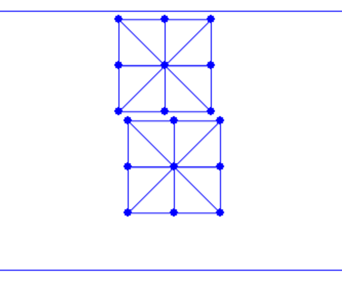
为了处理接触，我们首先需要收集所有边界单元。在二维情形下，这包括找出边界上的节点与边——接触力将施加到所有彼此靠近但非关联的点-边对上。下面的函数在给定一个三角形网格后，找出全部边界节点与边：
实现 21.1.2 (收集边界单元，square_mesh.py).
def find_boundary(e):
# index all half-edges for fast query
edge_set = set()
for i in range(0, len(e)):
for j in range(0, 3):
edge_set.add((e[i][j], e[i][(j + 1) % 3]))
# find boundary points and edges
bp_set = set()
be = []
for eI in edge_set:
if (eI[1], eI[0]) not in edge_set:
# if the inverse edge of a half-edge does not exist,
# then it is a boundary edge
be.append([eI[0], eI[1]])
bp_set.add(eI[0])
bp_set.add(eI[1])
return [list(bp_set), be]
该函数在 simulator.py 中被调用，随后边界单元被传入时间积分器，用于能量、梯度和海森矩阵的计算，以及线搜索过滤。
点-边距离
接下来我们计算点-边距离及其导数。它们将用于求解接触力。对于节点 与边 ，其平方距离定义为
即 与 上任意一点之间最近距离的平方。
注记 21.2.1 (距离计算优化). 这里我们使用平方无符号距离来评估接触能量。这样做避免了开平方根，因为开方会使导数的表达式变得复杂，并在计算过程中增加数值舍入误差。此外，无符号距离可以直接推广到余维接触对，例如点-点对，这在二维中仿真粒子接触时很有用。当存在大位移时，它们也不会像有符号距离那样出现锁定（locking）问题。
幸运的是， 关于自由度是一个分段光滑函数： 其中光滑表达式可通过判断该节点是否位于边的正交跨度内来确定。有了这些光滑表达式，我们就可以对它们分别求导，从而得到点-边距离函数的导数。具体实现如下：
实现 21.2.1 (点-边距离计算（省略海森矩阵），PointEdgeDistance.py).
import numpy as np
import distance.PointPointDistance as PP
import distance.PointLineDistance as PL
def val(p, e0, e1):
e = e1 - e0
ratio = np.dot(e, p - e0) / np.dot(e, e)
if ratio < 0: # point(p)-point(e0) expression
return PP.val(p, e0)
elif ratio > 1: # point(p)-point(e1) expression
return PP.val(p, e1)
else: # point(p)-line(e0e1) expression
return PL.val(p, e0, e1)
def grad(p, e0, e1):
e = e1 - e0
ratio = np.dot(e, p - e0) / np.dot(e, e)
if ratio < 0: # point(p)-point(e0) expression
g_PP = PP.grad(p, e0)
return np.reshape([g_PP[0:2], g_PP[2:4], np.array([0.0, 0.0])], (1, 6))[0]
elif ratio > 1: # point(p)-point(e1) expression
g_PP = PP.grad(p, e1)
return np.reshape([g_PP[0:2], np.array([0.0, 0.0]), g_PP[2:4]], (1, 6))[0]
else: # point(p)-line(e0e1) expression
return PL.grad(p, e0, e1)
可以验证，点-边距离函数处处为 连续，包括在不同分段之间的交界处。对于点-点情形，我们有：
实现 21.2.2 (点-点距离计算，PointPointDistance.py).
import numpy as np
def val(p0, p1):
e = p0 - p1
return np.dot(e, e)
def grad(p0, p1):
e = p0 - p1
return np.reshape([2 * e, -2 * e], (1, 4))[0]
def hess(p0, p1):
H = np.array([[0.0] * 4] * 4)
H[0, 0] = H[1, 1] = H[2, 2] = H[3, 3] = 2
H[0, 2] = H[1, 3] = H[2, 0] = H[3, 1] = -2
return H
对于点-直线情形，距离的计算可实现如下，其导数可以用符号微分工具得到。
实现 21.2.3 (点-直线距离计算（省略海森矩阵），PointLineDistance.py).
import numpy as np
def val(p, e0, e1):
e = e1 - e0
numerator = e[1] * p[0] - e[0] * p[1] + e1[0] * e0[1] - e1[1] * e0[0]
return numerator * numerator / np.dot(e, e)
def grad(p, e0, e1):
g = np.array([0.0] * 6)
t13 = -e1[0] + e0[0]
t14 = -e1[1] + e0[1]
t23 = 1.0 / (t13 * t13 + t14 * t14)
t25 = ((e0[0] * e1[1] + -(e0[1] * e1[0])) + t14 * p[0]) + -(t13 * p[1])
t24 = t23 * t23
t26 = t25 * t25
t27 = (e0[0] * 2.0 + -(e1[0] * 2.0)) * t24 * t26
t26 *= (e0[1] * 2.0 + -(e1[1] * 2.0)) * t24
g[0] = t14 * t23 * t25 * 2.0
g[1] = t13 * t23 * t25 * -2.0
t24 = t23 * t25
g[2] = -t27 - t24 * (-e1[1] + p[1]) * 2.0
g[3] = -t26 + t24 * (-e1[0] + p[0]) * 2.0
g[4] = t27 + t24 * (p[1] - e0[1]) * 2.0
g[5] = t26 - t24 * (p[0] - e0[0]) * 2.0
return g
障碍能量及其导数
有了已实现的点-边距离函数，我们就可以遍历所有点-边对，组装总障碍能量及其导数。它们将用于在时间步进优化中求解搜索方向。
由于使用的是平方距离，这里我们把障碍函数重新缩放为 从而 依然成立。与弹性类似， 可视为一种应变度量，于是能量密度（每单位面积）函数 关于 的二阶导数在 处的取值对应于杨氏模量乘以厚度 ，这使得 具有物理意义且便于设定。
基于式 (20.3.1)，可推导障碍势能的梯度与海森矩阵为 其中 ，并且我们省略了平方点-边距离函数的上标与下标（此处 表示 ）。
障碍接触势能的能量、梯度与海森矩阵实现如下：
实现 21.3.1 (障碍能量计算，BarrierEnergy.py).
# self-contact
dhat_sqr = dhat * dhat
for xI in bp:
for eI in be:
if xI != eI[0] and xI != eI[1]: # do not consider a point and its incident edge
d_sqr = PE.val(x[xI], x[eI[0]], x[eI[1]])
if d_sqr < dhat_sqr:
s = d_sqr / dhat_sqr
# since d_sqr is used, need to divide by 8 not 2 here for consistency to linear elasticity:
sum += 0.5 * contact_area[xI] * dhat * kappa / 8 * (s - 1) * math.log(s)
实现 21.3.2 (障碍能量梯度计算，BarrierEnergy.py).
# self-contact
dhat_sqr = dhat * dhat
for xI in bp:
for eI in be:
if xI != eI[0] and xI != eI[1]: # do not consider a point and its incident edge
d_sqr = PE.val(x[xI], x[eI[0]], x[eI[1]])
if d_sqr < dhat_sqr:
s = d_sqr / dhat_sqr
# since d_sqr is used, need to divide by 8 not 2 here for consistency to linear elasticity:
local_grad = 0.5 * contact_area[xI] * dhat * (kappa / 8 * (math.log(s) / dhat_sqr + (s - 1) / d_sqr)) * PE.grad(x[xI], x[eI[0]], x[eI[1]])
g[xI] += local_grad[0:2]
g[eI[0]] += local_grad[2:4]
g[eI[1]] += local_grad[4:6]
实现 21.3.3 (障碍能量海森矩阵计算，BarrierEnergy.py).
# self-contact
dhat_sqr = dhat * dhat
for xI in bp:
for eI in be:
if xI != eI[0] and xI != eI[1]: # do not consider a point and its incident edge
d_sqr = PE.val(x[xI], x[eI[0]], x[eI[1]])
if d_sqr < dhat_sqr:
d_sqr_grad = PE.grad(x[xI], x[eI[0]], x[eI[1]])
s = d_sqr / dhat_sqr
# since d_sqr is used, need to divide by 8 not 2 here for consistency to linear elasticity:
local_hess = 0.5 * contact_area[xI] * dhat * utils.make_PSD(kappa / (8 * d_sqr * d_sqr * dhat_sqr) * (d_sqr + dhat_sqr) * np.outer(d_sqr_grad, d_sqr_grad) \
+ (kappa / 8 * (math.log(s) / dhat_sqr + (s - 1) / d_sqr)) * PE.hess(x[xI], x[eI[0]], x[eI[1]]))
index = [xI, eI[0], eI[1]]
for nI in range(0, 3):
for nJ in range(0, 3):
for c in range(0, 2):
for r in range(0, 2):
IJV[0].append(index[nI] * 2 + r)
IJV[1].append(index[nJ] * 2 + c)
IJV[2] = np.append(IJV[2], local_hess[nI * 2 + r, nJ * 2 + c])
连续碰撞检测
至此，求解带自接触仿真的搜索方向所需的全部要素都已具备。在得到搜索方向之后，我们对点-边对执行线搜索过滤。
实现 21.4.1 (线搜索过滤，BarrierEnergy.py).
# self-contact
for xI in bp:
for eI in be:
if xI != eI[0] and xI != eI[1]: # do not consider a point and its incident edge
if CCD.bbox_overlap(x[xI], x[eI[0]], x[eI[1]], p[xI], p[eI[0]], p[eI[1]], alpha):
toc = CCD.narrow_phase_CCD(x[xI], x[eI[0]], x[eI[1]], p[xI], p[eI[0]], p[eI[1]], alpha)
if alpha > toc:
alpha = toc
这里我们先对点与边的跨度（span）的包围盒做重叠检查，以缩小需要计算碰撞时间的点-边对数量：
from copy import deepcopy
import numpy as np
import math
import distance.PointEdgeDistance as PE
# check whether the bounding box of the trajectory of the point and the edge overlap
def bbox_overlap(p, e0, e1, dp, de0, de1, toc_upperbound):
max_p = np.maximum(p, p + toc_upperbound * dp) # point trajectory bbox top-right
min_p = np.minimum(p, p + toc_upperbound * dp) # point trajectory bbox bottom-left
max_e = np.maximum(np.maximum(e0, e0 + toc_upperbound * de0), np.maximum(e1, e1 + toc_upperbound * de1)) # edge trajectory bbox top-right
min_e = np.minimum(np.minimum(e0, e0 + toc_upperbound * de0), np.minimum(e1, e1 + toc_upperbound * de1)) # edge trajectory bbox bottom-left
if np.any(np.greater(min_p, max_e)) or np.any(np.greater(min_e, max_p)):
return False
else:
return True
为得到足够大且保守的碰撞时间（time of impact，TOI）估计，我们不能像在过滤线搜索中处理点-地面接触那样直接算出碰撞时间（TOI）再取其一部分。对接触图元对直接计算碰撞时间（TOI）需要在二维和三维中求解二次或三次方程求根问题，这类问题容易产生数值误差，尤其是当距离极小、构型在数值上退化时（例如三维中近乎平行的边-边对）。
因此，我们实现了加性连续碰撞检测方法（additive 连续碰撞检测（Continuous Collision Detection，CCD），ACCD）[Li et al. 2021]：它沿搜索方向迭代地移动接触对，直到达到最小间隔距离，从而稳健地估计碰撞时间（TOI）。
以点-边对为例，加性连续碰撞检测（ACCD）的关键思想是：给定当前位置 、、 以及搜索方向 、、，其碰撞时间（TOI）可计算为
这里假设 是边上的、 将首先与之碰撞的点。 问题在于我们无法预先知道 。不过，我们可以推导出 的一个下界：
按这个下界 前进一步，就能保证该点-边对不发生互穿。然而， 虽然计算简单，却可能远小于 。因此我们迭代地计算 ，并让参与节点的副本前进相应的量，把所有 累加起来，从而单调地改进对 的估计，直到该点-边对的距离小于最小间隔，例如原始距离的 。实现如下，其中我们先把搜索方向中的公共分量剔除，使其幅值更小，从而让算法更早终止。
# compute the first "time" of contact, or toc,
# return the computed toc only if it is smaller than the previously computed toc_upperbound
def narrow_phase_CCD(_p, _e0, _e1, _dp, _de0, _de1, toc_upperbound):
p = deepcopy(_p)
e0 = deepcopy(_e0)
e1 = deepcopy(_e1)
dp = deepcopy(_dp)
de0 = deepcopy(_de0)
de1 = deepcopy(_de1)
# use relative displacement for faster convergence
mov = (dp + de0 + de1) / 3
de0 -= mov
de1 -= mov
dp -= mov
maxDispMag = np.linalg.norm(dp) + math.sqrt(max(np.dot(de0, de0), np.dot(de1, de1)))
if maxDispMag == 0:
return toc_upperbound
eta = 0.1 # calculate the toc that first brings the distance to 0.1x the current distance
dist2_cur = PE.val(p, e0, e1)
dist_cur = math.sqrt(dist2_cur)
gap = eta * dist_cur
# iteratively move the point and edge towards each other and
# grow the toc estimate without numerical errors
toc = 0
while True:
tocLowerBound = (1 - eta) * dist_cur / maxDispMag
p += tocLowerBound * dp
e0 += tocLowerBound * de0
e1 += tocLowerBound * de1
dist2_cur = PE.val(p, e0, e1)
dist_cur = math.sqrt(dist2_cur)
if toc != 0 and dist_cur < gap:
break
toc += tocLowerBound
if toc > toc_upperbound:
return toc_upperbound
return toc
最终的仿真结果展示于 图 21.4.1。

小结
我们通过把障碍能量离散到边界上非关联的点-边对上，为二维有限元仿真实现了无摩擦且保证不自交的自接触。
为计算障碍能量，我们采用了点-边距离的平方，以避免潜在的数值问题。点-边距离是一个分段光滑函数，其闭式表达式取决于点与边的相对位置，且整个函数在定义域上处处 连续。对该函数的导数，只需对每个表达式做符号微分即可求得。
在线搜索过滤方面，我们没有直接计算碰撞时间（time of impact，TOI）——它容易引入数值问题——而是实现了加性连续碰撞检测方法（additive 连续碰撞检测（Continuous Collision Detection，CCD），ACCD）来获得一个足够大且保守的碰撞时间（TOI）估计。加性连续碰撞检测（ACCD）是一种迭代方法：它不断累加碰撞时间（TOI）的下界，同时让节点沿搜索方向逐步前进。在运行加性连续碰撞检测（ACCD）之前，我们先对点与边的跨度包围盒做重叠检测，以快速筛除不会碰撞的配对。
在后续章节中我们将会看到，对于三维大规模场景，需要使用空间哈希、包围盒层次结构（BVH）等高效的空间索引策略，才能显著降低昂贵的空间搜索开销。
下一章中，我们将在刚建立的基础上实现摩擦自接触。
二维摩擦自接触*
本讲将在案例研究：二维自接触中二维自接触实现的基础上，实现二维摩擦。本节对应的可执行 Python 工程见 https://github.com/phys-sim-book/solid-sim-tutorial。
为简单起见，我们将专注于实现半隐式版本的摩擦。这意味着法向力大小 与切向算子 都被离散到上一个时间步，并且我们在每个时间步只求解一次优化问题，而不再执行额外的、收敛到完全隐式摩擦（摩擦接触）解的不动点迭代，后者位于 8_self_friction 文件夹下。
MUDA 的 GPU 实现见 https://github.com/phys-sim-book/solid-sim-tutorial-gpu 中的 simulators/8_self_friction 文件夹。
结合增量势能接触（Incremental Potential Contact，IPC）中对静-动摩擦转换的平滑近似，把摩擦纳入优化时间积分框架就如同增加一项额外的势能一样直接。
离散化与近似
由公式 (18.4.2)，单位面积上的摩擦力定义为
其中 为摩擦系数， 为法向接触力， 为相对滑动速度。这里当 时 ，而当 时 取任意与法向 正交的单位向量。此外，摩擦缩放函数 关于 同样是不可微的：当 时 ，而当 时 。
需要注意，若不进行时间离散，摩擦并不存在对应的势能。然而，与摩擦接触类似，一旦我们把法向力大小与切向算子离散到上一个时间步，并对摩擦缩放函数 作光滑近似，第 个时间步上的摩擦力就变得关于 可积，从而得到
这里， 为近似相对滑动速度，其中 与 分别是上一个时间步的法向方向以及与 相接触的点，，并且
因此，考虑自接触后，整个边界上的近似摩擦势能可以写为
其中 这一系数来自积分中对每一对接触点之间摩擦力的重复计数（与边界条件与摩擦接触中法向接触力的情形类似）。
在把边界曲线离散为折线、并用求和近似法向接触力分量中的 max 算子之后（分段线性边界），我们同样可以得到空间离散后的摩擦势能：
这里， 是 与边 在上一个时间步的点-边距离， 是该点-边对在接触法向与最近点均离散到上一个时间步时的近似相对滑动速度（详见下一节）。
若选取边界节点作为求积点来近似该积分，我们最终得到离散的摩擦势能：
其中 为积分权重。记 、，则 的表达式与我们直接推导出的公式 (9.2.1) 的离散形式一致，区别仅在于此处的 遍历边界上所有非相邻的点-边对。
基于这一光滑半隐式摩擦势能的离散形式，我们现在需要确定如何计算点-边对的 与 ，实现 的值、梯度与海森矩阵的计算，并把它们纳入优化之中。
预计算法向与切向信息
为使时间离散后的摩擦力可积，我们必须显式离散某些法向与切向信息。这些信息只需在每个时间步开始时计算一次，因为它在每次优化过程中保持不变。
首先，我们需要利用 为每个点-边对计算 。回顾一下，我们使用距离的平方作为障碍函数的输入，因此 应按如下方式用链式法则计算：
根据以距离平方为输入的缩放障碍函数（公式 (21.3.1)），可以推出
注记 22.2.1. 在我们的半隐式摩擦设定中，用于摩擦的点-边对集合在每个时间步内是固定的，且与法向接触对集合不同。摩擦所用的集合只包含满足 的那些对，并且在当前时间步内不随优化变量 变化。
至于切向信息，关键在于保持法向以及边上最近点的重心坐标不变。对于第 个点-边对，若把该点与边的节点编号分别记为 、 和 ，则相对滑动速度可以写为
其中 是重心坐标， 是边的法向。这里可以看到， 与 都依赖于 ，因此直接对 积分并不容易。通过用 计算 和 ，我们得到半隐式相对滑动速度
此时只有速度依赖于 ，使得积分与求导都变得简单直接。若记 ，我们得到
代码
接下来看代码。实现 22.2.1 在给定点与边节点位置的情况下计算最近点的重心坐标与法向。其思路是把 正交投影到边上。
实现 22.2.1 (计算接触点与法向，PointEdgeDistance.py).
# compute normal and the parameterization of the closest point on the edge
def tangent(p, e0, e1):
e = e1 - e0
ratio = np.dot(e, p - e0) / np.dot(e, e)
if ratio < 0: # point(p)-point(e0) expression
n = p - e0
elif ratio > 1: # point(p)-point(e1) expression
n = p - e1
else: # point(p)-line(e0e1) expression
n = p - ((1 - ratio) * e0 + ratio * e1)
return [n / np.linalg.norm(n), ratio]
随后，实现 22.2.2 遍历所有距离小于 的非相邻点-边对，计算 ，并调用上面的函数计算 与 。
与摩擦接触中一样，这几行代码在 time_integrator.py 中每个时间步开始时执行，每个摩擦对的信息会被存储下来，并传递给接下来要讨论的能量、梯度与海森矩阵计算函数。
实现 22.2.2 (半隐式摩擦预计算，BarrierEnergy.py).
# self-contact
mu_lambda_self = []
dhat_sqr = dhat * dhat
for xI in bp:
for eI in be:
if xI != eI[0] and xI != eI[1]: # do not consider a point and its incident edge
d_sqr = PE.val(x[xI], x[eI[0]], x[eI[1]])
if d_sqr < dhat_sqr:
s = d_sqr / dhat_sqr
# since d_sqr is used, need to divide by 8 not 2 here for consistency to linear elasticity
# also, lambda = -\partial b / \partial d = -(\partial b / \partial d^2) * (\partial d^2 / \partial d)
mu_lam = mu * -0.5 * contact_area[xI] * dhat * (kappa / 8 * (math.log(s) / dhat_sqr + (s - 1) / d_sqr)) * 2 * math.sqrt(d_sqr)
[n, r] = PE.tangent(x[xI], x[eI[0]], x[eI[1]]) # normal and closest point parameterization on the edge
mu_lambda_self.append([xI, eI[0], eI[1], mu_lam, n, r])
摩擦能量及其导数
在预先计算出每个摩擦点-边对的 、 与 之后，我们便可以计算摩擦势能的值（实现 22.3.1）、梯度（实现 22.3.2）与海森矩阵（实现 22.3.3），并把它们加入优化之中。
实现 22.3.1 (摩擦能量值，FrictionEnergy.py).
# self-contact:
for i in range(0, len(mu_lambda_self)):
[xI, eI0, eI1, mu_lam, n, r] = mu_lambda_self[i]
T = np.identity(2) - np.outer(n, n)
rel_v = v[xI] - ((1 - r) * v[eI0] + r * v[eI1])
vbar = np.transpose(T).dot(rel_v)
sum += mu_lam * f0(np.linalg.norm(vbar), epsv, hhat)
在计算梯度与海森矩阵时，我们使用相对速度 作为中间变量，使实现更有条理。这种思路给出： 其中 关于 的导数与摩擦接触中的形式完全相同。
实现 22.3.2 (摩擦能量梯度，FrictionEnergy.py).
# self-contact:
for i in range(0, len(mu_lambda_self)):
[xI, eI0, eI1, mu_lam, n, r] = mu_lambda_self[i]
T = np.identity(2) - np.outer(n, n)
rel_v = v[xI] - ((1 - r) * v[eI0] + r * v[eI1])
vbar = np.transpose(T).dot(rel_v)
g_rel_v = mu_lam * f1_div_vbarnorm(np.linalg.norm(vbar), epsv) * T.dot(vbar)
g[xI] += g_rel_v
g[eI0] += g_rel_v * -(1 - r)
g[eI1] += g_rel_v * -r
实现 22.3.3 (摩擦能量海森矩阵，FrictionEnergy.py).
# self-contact:
for i in range(0, len(mu_lambda_self)):
[xI, eI0, eI1, mu_lam, n, r] = mu_lambda_self[i]
T = np.identity(2) - np.outer(n, n)
rel_v = v[xI] - ((1 - r) * v[eI0] + r * v[eI1])
vbar = np.transpose(T).dot(rel_v)
vbarnorm = np.linalg.norm(vbar)
inner_term = f1_div_vbarnorm(vbarnorm, epsv) * np.identity(2)
if vbarnorm != 0:
inner_term += f_hess_term(vbarnorm, epsv) / vbarnorm * np.outer(vbar, vbar)
hess_rel_v = mu_lam * T.dot(utils.make_PSD(inner_term)).dot(np.transpose(T)) / hhat
index = [xI, eI0, eI1]
d_rel_v_dv = [1, -(1 - r), -r]
for nI in range(0, 3):
for nJ in range(0, 3):
for c in range(0, 2):
for r in range(0, 2):
IJV[0].append(index[nI] * 2 + r)
IJV[1].append(index[nJ] * 2 + c)
IJV[2] = np.append(IJV[2], d_rel_v_dv[nI] * d_rel_v_dv[nJ] * hess_rel_v[r, c])
完成这些实现后，我们终于可以运行带摩擦自接触的压缩方块示例（参见：图 22.3.1）。从图中可以看到，两个方块一旦接触，它们之间以及它们与地面之间的大摩擦力便限制了任何滑动。于是在天花板压缩它们时，方块会发生逆时针旋转。

小结
我们基于点-边对的平方无符号距离，在二维中实现了半隐式摩擦，并将其纳入时间步进优化之中。
我们首先通过半隐式时间离散以及对动-静摩擦转换的光滑近似，使摩擦力在连续设定下可积。近似摩擦势能的空间离散采用了与障碍势能类似的思路。
接着，我们考察了点-边对的法向力大小 、法向方向 以及最近点的重心坐标 的计算。这些值在每个时间步开始时计算，并在优化过程中保持不变。需要注意的是，用于摩擦的点-边对集合在每次优化中同样保持不变，且与障碍函数所用的集合不同。
最后，我们实现了离散摩擦势能及其导数的计算。我们使用相对速度 作为中间变量，并应用链式法则来组织计算。
至此，我们已经从理论与实践两方面介绍了一个具备无翻转弹性动力学与无穿透摩擦自接触的二维固体仿真器。接下来，我们将探索把这些概念推广到三维所需的额外步骤！
三维弹性动力学
要把我们的二维固体仿真器（二维摩擦自接触）推广到三维，可以使用 -单纯形四面体单元来离散三维固体区域。在这一做法中，固体的表面用三角形网格表示，这也是计算机图形学中表示三维几何的常用方法。此外，我们还需要在固体内部采样顶点，以构成离散惯性与弹性能量所需的四面体单元。
运动学
与二维三角形单元类似，我们使用 且 来表示四面体单元内任意点 的材料空间坐标，该四面体由顶点 与 定义如下： 这里， 是 的线性函数。使用线性形函数时，近似世界空间坐标 同样是 的线性函数： 其中 记为 。这意味着形函数为：
质量矩阵
回顾质量矩阵的计算方式 其中 表示四面体 的材料空间。把积分变量从 换为 ，得到
对于顶点为 、、 与 的单元 ， 其中 是四面体 的体积。
这里我们将省略一致质量矩阵中各元素的具体推导。假设密度 均匀，对于集中质量矩阵， 其中 表示与节点 相邻的四面体集合。换言之，每个四面体的质量被均匀分配到它的 4 个节点上，这与二维情形在直觉上完全类似。
弹性
对于弹性，与二维情形类似，变形梯度 在每个四面体内同样为常数，可以按如下方式计算 在计算力与海森矩阵时，所需的 可以用下式计算 类似地 有了 ，应变能 、应力 与应力导数 的计算均可在应变能与应力及其导数中找到，而力与海森矩阵的计算遵循与二维相同的思路。
为保证仿真过程中四面体单元不发生翻转，可以逐个四面体求解一维方程，得到首次使任意四面体体积变为 的临界步长 然后取所有求得的步长中的最小值。 这里 是节点 的搜索方向，在三维中这等价于 其中 ，，。展开公式 (23.3.1)，我们得到关于 的如下三次方程：
该三次方程有时会退化为二次或一次方程，尤其是当节点运动并未显著改变四面体体积时。为应对潜在的数值不稳定，我们依据常数项系数对方程各项进行缩放：
从而保证可以用标准阈值（例如 ）安全地进行量级检查。
实际实现中，我们还会留出一定的安全余量：求解使任意四面体体积减少 80% 的 ，即把公式 (23.3.2) 中的常数项系数由 改为 。若找不到正实根，则可认为该步长是安全的，不会发生翻转。以下是求解该缩放三次方程的 C++ 代码片段：
double getSmallestPositiveRealRoot_cubic(double a, double b, double c, double d,
double tol)
{
// return negative value if no positive real root is found
double t = -1;
if (abs(a) <= tol)
t = getSmallestPositiveRealRoot_quad(b, c, d, tol); // covered in the 2D case
else {
complex<double> i(0, 1);
complex<double> delta0(b * b - 3 * a * c, 0);
complex<double> delta1(2 * b * b * b - 9 * a * b * c + 27 * a * a * d, 0);
complex<double> C = pow((delta1 + sqrt(delta1 * delta1 - 4.0 * delta0 * delta0 * delta0)) / 2.0, 1.0 / 3.0);
if (std::abs(C) == 0.0) // a corner case
C = pow((delta1 - sqrt(delta1 * delta1 - 4.0 * delta0 * delta0 * delta0)) / 2.0, 1.0 / 3.0);
complex<double> u2 = (-1.0 + sqrt(3.0) * i) / 2.0;
complex<double> u3 = (-1.0 - sqrt(3.0) * i) / 2.0;
complex<double> t1 = (b + C + delta0 / C) / (-3.0 * a);
complex<double> t2 = (b + u2 * C + delta0 / (u2 * C)) / (-3.0 * a);
complex<double> t3 = (b + u3 * C + delta0 / (u3 * C)) / (-3.0 * a);
if ((abs(imag(t1)) < tol) && (real(t1) > 0))
t = real(t1);
if ((abs(imag(t2)) < tol) && (real(t2) > 0) && ((real(t2) < t) || (t < 0)))
t = real(t2);
if ((abs(imag(t3)) < tol) && (real(t3) > 0) && ((real(t3) < t) || (t < 0)))
t = real(t3);
}
return t;
}
小结
本节我们深入探讨了将固体仿真器扩展到三维弹性动力学仿真的过程。
这一扩展需要用 3-simplex 四面体单元对固体区域进行离散化。因此，运动学、质量矩阵与弹性能量都沿用与二维相同的方法，只是现在每个单元的参数空间、积分以及变形梯度都多了一个维度。
为保持单元无翻转，线搜索过滤的工作方式与之前类似，只是现在需要对每个单元求解三次方程。
在下一节中，我们将探讨如何把摩擦接触部分扩展到三维场景。
三维摩擦自接触
在三维中，以三角形网格表示的固体区域边界之间的接触可以归结为点-三角形接触与边-边接触。直观上，二维中的点-边接触对可直接推广为三维中的点-三角形接触对。然而，即使在三维中阻止了所有点-三角形互穿，三角形网格之间仍可能互相穿透。因此必须考虑边-边接触对，尤其是当网格分辨率不太高时。
障碍函数与距离
在三角形网格离散下，连续情形中的障碍势能（式 (18.3.5)）可以近似为 其中 为所有表面三角形的集合， 为所有包含点 的表面三角形的集合， 为点-三角形距离。 进一步用求和近似 max 算子，并以网格表面节点 作为求积点，可得 其中 为积分权重， 为节点 的第 个相邻表面三角形的面积。
现在回到式 (24.1.1) 的第二行，若我们只用边上的点来近似最小距离，则得到 然后，若对每条表面边 选取一个特殊的求积点 ，并用求和近似 max 算子，则得到 其中 为积分权重， 为 的第 个相邻表面三角形的面积。 接下来，若我们总取 为 上距 最近的点，则得到 其中 为 的所有表面边邻居再加上它自身构成的集合。对于式 (24.1.3) 中遍历所有表面边的求和，若只计入满足 的 ，或反过来，则可省略系数 。
至此，我们对三维障碍势能有了两种离散化方式。为了在实践中同时使用它们，可以利用两者的线性组合，其系数通常可设为 。
点-三角形距离与边-边距离同样都是具有解析解的小型优化问题，可以表示为分段光滑函数，就像式 (21.2.1) 中的二维点-边距离那样。 例如在点-三角形情形中，表达式可通过判断该点在三角形平面上的投影落在哪个区域来确定。
注记 24.1.1 (三维距离函数的平滑性). 注意，点-三角形距离处处至少是 连续的。这意味着即使投影点落在分段函数的边界上，距离梯度仍然存在且连续。然而对于边-边距离，当两条边平行时，距离函数仅为 连续，因为相邻区域中表达式的梯度并不一致。为解决这一问题，增量势能接触（Incremental Potential Contact，IPC） [Li et al. 2020] 提出在边-边障碍能量密度函数上乘以一个磨光函数（mollifier），使势能在处处为 连续。当两条边趋于平行时，该磨光函数平滑地减至零。这保证了基于梯度的优化方法仍可被高效地用于求解该问题。
碰撞检测
由于涉及的表面图元数量更多，三维中的碰撞检测在计算上可能比二维中繁重得多。所幸空间哈希（spatial hashing）和包围体层次结构（bounding volume hierarchies，BVH）等空间数据结构能够有效减少候选图元对的数量，使连续碰撞检测（CCD）变得更加可控。
空间哈希
空间哈希的核心思想是把空间划分为均匀网格，并为每个网格单元分配一个数组，用于存储与该单元包围盒相交的图元索引。要查找给定图元 （例如一个点）附近的图元，我们找出与 的包围盒相交的网格单元，并取出存储在这些单元中的图元索引。该方法确保只对附近的图元用连续碰撞检测（CCD）进行碰撞检测，从而无需用嵌套循环检查所有图元对。
包围体层次结构（BVH）
包围体层次结构（BVH）是另一种有效的宽相碰撞检测方法。它把图元组织成包围体的层次结构，在检测潜在碰撞时能够高效地裁剪搜索空间。
ACCD 方法
如连续碰撞检测中所述，加性连续碰撞检测（Additive Continuous Collision Detection，ACCD）（自适应连续碰撞检测）方法在三维中同样适用。在此情形下，距离计算需要针对点-三角形对与边-边对做相应调整。
宽相碰撞检测
在计算障碍势能、梯度与海森矩阵时，先收集一组附近的候选图元对会更快，而且这一步必不可少。随后我们计算它们的距离，判断它们是否处于激活状态（即距离小于 ）。这一筛选过程属于宽相碰撞检测的一部分，可以用空间哈希或包围体层次结构（BVH）高效实现。
借助这些空间数据结构，我们显著降低了计算量，把详细的碰撞检测集中在数量可控的附近图元子集上。
摩擦
三维摩擦与二维情形十分相似，主要区别在于所涉及的接触对类型。在三维中，这些接触对是点-三角形对与边-边对。因此，最近点的重心坐标现在是二维的，由 定义 24.1.1 与 定义 24.1.2 中定义的 和 的最优值来表示。
在实践中，这意味着摩擦的原理保持不变，只是具体计算需要针对三维空间中接触对的几何形态作出调整。
小结
本节我们讨论了实现基于隐式接触预测（Implicit Contact Prediction，IPC）的三维接触处理方法的主要技术细节。
在三维中，距离与摩擦基的计算都变得更加复杂。这些计算依赖于点-三角形与边-边图元对，类似于二维中所用的点-边对。
边-边距离仅为 连续，需要额外引入一个平滑减至零的磨光函数。该函数与障碍能量密度函数相乘，以达到 连续性，从而能够使用高效的基于梯度的优化方法。
由于三维中图元对的数量显著增加，通常在宽相阶段使用空间哈希或包围体层次结构（BVH）等空间数据结构，先筛选候选对，再计算距离或执行连续碰撞检测（Continuous Collision Detection，CCD）。
刚体仿真*
本讲作者：Wenxin Du，加州大学洛杉矶分校
为了把增量势能接触（Incremental Potential Contact，IPC）方法推广到刚体接触，我们可以采用子空间方法，有效削减系统的自由度（Degree of Freedom，DOF）。由于刚体是变形可忽略的极硬真实物体的理想化模型，它并不需要大量自由度。这一观察引出了仿射体动力学（ABD）[Lan et al. 2022]方法。根据子空间的选取不同，这一思路还可以改造为适用于各类软体的多种算法。
刚体动力学
在进入仿射体动力学（Affine Body Dynamics，ABD）之前，我们先回顾仿真刚体动力学的传统方法。
我们先回顾牛顿力学——具体来说，是质量为 、位置为 的质点所遵循的牛顿第二定律：
现在计算 ：
这里， 称为角动量， 称为力矩。
对于刚体 ，我们可以在其体积上积分：
其中 是 在位置 处的质量密度。
现在设 表示 的质心（center of mass，COM）。于是：
将两者合并：
由于 ，我们可以进一步化简：
其中右端是绕质心的力矩 。
把右端记为力矩 ，计算左端：
这里，惯性张量 定义为：
由于 依赖于 ， 也随之变化。设 为旋转矩阵（即 从时刻 到 的旋转）。容易验证：
求导可得：
于是，刚体动力学定律变为：
这些方程与牛顿第二定律相似。第一式描述力如何影响刚体的线动量，第二式描述力矩如何影响其角动量。
用一个简单的显式积分器，我们可以按如下方式仿真刚体运动：
这里， 是表示刚体旋转的单位四元数。其更新基于一阶近似：
由此可得：
其中 ； 是把旋转向量 所表示的旋转与 所表示的旋转复合起来的结果。
子空间仿真
本小节中，我们采用子空间优化方法，推导出刚体动力学方程的约束形式。该形式将刚体动力学与增量势能接触（Incremental Potential Contact，IPC）方法联系起来，后续小节将对此作进一步阐述。
回顾一下，在增量势能接触（IPC）中，仿真问题被表述为如下优化问题：
此处， 为增量势能， 表示待求解的粒子位置。
设 为刚体上的粒子位置，它由该刚体的旋转矩阵 与平移 参数化。刚体运动学施加约束 ，其中 是该粒子在物体局部坐标系中的位置。写成堆叠形式，即：
其中 与 是不依赖于 和 的常数矩阵，因为它们只取决于物体坐标系中的局部粒子位置。
代入增量势能接触（IPC）形式，我们得到如下约束优化问题：
其中约束 强制每个刚体 的旋转矩阵 满足刚性条件，即 。
应用拉格朗日乘子法，我们引入拉格朗日函数：
并推导出驻值条件：
由此得到如下受约束的刚体动力学方程：
这些方程定义了刚体在子空间约束动力学下的运动，同时满足能量一致性与刚性约束。
仿射体动力学
此前我们回顾了刚体动力学，并用显式积分实现了一个简单的求解器。
当需要处理大量刚体——尤其是几何复杂、接触密集的情形——时，自然会想到用增量势能接触（Incremental Potential Contact，IPC）来处理接触。然而，用位置 与旋转 来表示刚体会带来一个难题：由于四元数更新的非线性，牛顿法中的步长过滤对 而言变成了非线性的。
设刚体的状态记为 ，其中 为质心， 为代表朝向的单位四元数。在一次牛顿迭代中，设更新方向为 ，步长为 ，于是更新后的状态为 。初始位于 的顶点位置随即变换为：
展开后可见 关于 是非线性的：
而由于 非线性地依赖于 ， 也是如此。因此，线性连续碰撞检测（Continuous Collision Detection，CCD）可能无法保证运动过程中不发生相交。
我们也可以把刚体建模为非常硬的软体（例如质点-弹簧或超弹性体），但这样做效率低下，而且抵消了自由度降维带来的好处。
仿射体动力学（Affine Body Dynamics，ABD）[Lan et al. 2022]正是为解决这一问题而提出：它不要求严格的刚性，而是允许每个顶点 发生微小的仿射变形 ，其中 表示静止位置。刚体状态为 ，其中 ，于是顶点位置 变为：
其中 ， 表示克罗内克积。
这种线性关系使 线性地依赖于优化步长 ，从而能够使用稳健的线性连续碰撞检测（CCD）。
设 为增广后的增量势能接触（IPC）能量。原始增量势能接触（IPC）求解：
而仿射体动力学（ABD）在一个约化子空间中求解：
利用链式法则：
由此，我们可以通过求解线性系统 来得到牛顿优化方向。
有了这些，我们便可以用隐式欧拉积分实现一个简单二维情形下的仿射体动力学（ABD）。
在动手实现之前，不妨考虑这样一个几何视角：在二维中，仿射变换由 3 个点确定。为每个刚体选一个三角形，我们就可以通过重心坐标插值出所有顶点。三角形驱动仿真，而原始网格用于碰撞。这便得到一个约化的自由度系统，其中三角形控制运动——这本质上正是仿射体动力学（ABD）的做法。
案例研究：ABD 方块下落*
现在我们在二维中实现仿射体动力学（ABD），用于方块下落仿真的新胡克（neo-Hookean）版本。这只需对标准增量势能接触（Incremental Potential Contact，IPC）仿真代码做少量修改。完整实现见我们的固体仿真教程中的 9_reduced_DOF 文件夹。
我们首先引入一个计算约化基的函数。在仿射体动力学（ABD）中，我们只考虑仿射变形。因此，我们用 method=1（多项式基）与 order=1（线性基）来提取线性基：
def compute_reduced_basis(x, e, vol, IB, mu_lame, lam, method, order):
if method == 0: # full basis, no reduction
basis = np.zeros((len(x) * 2, len(x) * 2))
for i in range(len(x) * 2):
basis[i][i] = 1
return basis
elif method == 1: # polynomial basis
if order == 1: # linear basis, or affine basis
basis = np.zeros((len(x) * 2, 6)) # 1, x, y for both x- and y-displacements
for i in range(len(x)):
for d in range(2):
basis[i * 2 + d][d * 3] = 1
basis[i * 2 + d][d * 3 + 1] = x[i][0]
basis[i * 2 + d][d * 3 + 2] = x[i][1]
elif order == 2: # quadratic polynomial basis
basis = np.zeros((len(x) * 2, 12)) # 1, x, y, x^2, xy, y^2 for both x- and y-displacements
for i in range(len(x)):
for d in range(2):
basis[i * 2 + d][d * 6] = 1
basis[i * 2 + d][d * 6 + 1] = x[i][0]
basis[i * 2 + d][d * 6 + 2] = x[i][1]
basis[i * 2 + d][d * 6 + 3] = x[i][0] * x[i][0]
basis[i * 2 + d][d * 6 + 4] = x[i][0] * x[i][1]
basis[i * 2 + d][d * 6 + 5] = x[i][1] * x[i][1]
elif order == 3: # cubic polynomial basis
basis = np.zeros((len(x) * 2, 20)) # 1, x, y, x^2, xy, y^2, x^3, x^2y, xy^2, y^3 for both x- and y-displacements
for i in range(len(x)):
for d in range(2):
basis[i * 2 + d][d * 10] = 1
basis[i * 2 + d][d * 10 + 1] = x[i][0]
basis[i * 2 + d][d * 10 + 2] = x[i][1]
basis[i * 2 + d][d * 10 + 3] = x[i][0] * x[i][0]
basis[i * 2 + d][d * 10 + 4] = x[i][0] * x[i][1]
basis[i * 2 + d][d * 10 + 5] = x[i][1] * x[i][1]
basis[i * 2 + d][d * 10 + 6] = x[i][0] * x[i][0] * x[i][0]
basis[i * 2 + d][d * 10 + 7] = x[i][0] * x[i][0] * x[i][1]
basis[i * 2 + d][d * 10 + 8] = x[i][0] * x[i][1] * x[i][1]
basis[i * 2 + d][d * 10 + 9] = x[i][1] * x[i][1] * x[i][1]
else:
print("unsupported order of polynomial basis for reduced DOF")
exit()
return basis
else: # modal-order reduction
if order <= 0 or order >= len(x) * 2:
print("invalid number of target basis for modal reduction")
exit()
IJV = NeoHookeanEnergy.hess(x, e, vol, IB, mu_lame, lam, project_PSD=False)
H = sparse.coo_matrix((IJV[2], (IJV[0], IJV[1])), shape=(len(x) * 2, len(x) * 2)).tocsr()
eigenvalues, eigenvectors = eigsh(H, k=order, which='SM') # get 'order' eigenvectors with smallest eigenvalues
return eigenvectors
这里，method=0 指全空间仿真，它会立即返回、不计算任何基。
method=1 计算多项式基，包括线性、二次与三次函数。对每个基向量，各节点处的位移分量被表示为该节点材料空间坐标的多项式函数。
method=2 通过线性模态分析计算基，即求解弹性海森矩阵的特征系统，并提取对应于能量增长最少的变形模态的位移场。这将在下一讲中更详细地讨论。
计算完基之后，我们通过投影海森矩阵与梯度向量，把仿真限制在相应的子空间中。这一投影遵循链式法则，如公式 (25.3.1) 所述。相关实现为：
实现 25.4.2 (计算约化搜索方向，time_integrator.py).
def search_dir(x, e, x_tilde, m, vol, IB, mu_lame, lam, y_ground, contact_area, is_DBC, reduced_basis, h):
projected_hess = IP_hess(x, e, x_tilde, m, vol, IB, mu_lame, lam, y_ground, contact_area, h)
reshaped_grad = IP_grad(x, e, x_tilde, m, vol, IB, mu_lame, lam, y_ground, contact_area, h).reshape(len(x) * 2, 1)
# eliminate DOF by modifying gradient and Hessian for DBC:
for i, j in zip(*projected_hess.nonzero()):
if is_DBC[int(i / 2)] | is_DBC[int(j / 2)]:
projected_hess[i, j] = (i == j)
for i in range(0, len(x)):
if is_DBC[i]:
reshaped_grad[i * 2] = reshaped_grad[i * 2 + 1] = 0.0
reduced_hess = reduced_basis.T.dot(projected_hess.dot(reduced_basis)) # applying chain rule
reduced_grad = reduced_basis.T.dot(reshaped_grad) # applying chain rule
return (reduced_basis.dot(spsolve(reduced_hess, -reduced_grad))).reshape(len(x), 2) # transform to full space after the solve
这些改动使我们能够运行仿射体动力学（ABD）版本的方块下落仿真：

在这个例子中，我们调低了刚度参数，使物体更软，以突出仿射体动力学（ABD）与标准增量势能接触（IPC）之间的差异。蓝色网格是原始网格（同时也用于碰撞），而红色三角形可视化了约化的自由度。
小结
本讲探讨了如何借助子空间方法，将增量势能接触（Incremental Potential Contact，IPC）框架有效地推广到刚体与近似刚体的仿真。其核心思想是：把高维的可变形体动力学投影到一个仍能捕捉关键行为的低维子空间中，从而约化系统的自由度（Degree of Freedom，DOF）。
刚体动力学从牛顿力学出发，得到支配线动量与角动量演化的标准方程。文中回顾了求解这些方程的积分格式，其中采用四元数进行旋转跟踪。
仿射体动力学（Affine Body Dynamics，ABD）[Lan et al. 2022] 被提出作为刚体模型与可变形模型之间的折中方案，它允许最小的仿射变形，同时保持计算效率。仿射体动力学（ABD）形式的优点在于：顶点位置线性依赖于投影牛顿法的优化步长，因而可以在增量势能接触（IPC）中有效地利用线性连续碰撞检测（Continuous Collision Detection，CCD）来消解碰撞。
仿射体动力学（ABD）模型通过低分辨率的仿射嵌入（例如二维中由三角形驱动的运动）来驱动高分辨率的碰撞几何，从而以显著更少的自由度完成仿真。增量势能接触（IPC）的梯度与海森矩阵经由雅可比矩阵投影，以在子空间中求解约化系统，这使得包含大量类刚体与密集接触的复杂场景能够获得更快、更稳定的仿真。
模态降维*
本讲作者：Žiga Kovačič，康奈尔大学。本讲介绍的技术主要基于 [Sifakis & Barbic 2012]。
基于有限元方法的物理仿真能提供出色的真实感，但这种保真度需要付出高昂的计算代价。高分辨率三维物体动辄有数千乃至数百万个自由度（Degree of Freedom，DOF），从而形成庞大的方程组，在每个时间步都需花费大量计算来求解。对于需要实时交互的应用（例如电子游戏），完整仿真的开销往往是无法承受的。本讲介绍模型降维（model reduction），这类方法的核心，是在维度低得多的空间中近似系统的行为，从而大幅削减这一计算负担。
其核心思想是从高维状态向量 （其中 为顶点数， 为空间维数）转向维数小得多的约化坐标向量 （其中 ）。实现方式是：将完整系统的动力学投影到一个精心选取的低维子空间上，该子空间能捕捉物体最重要的变形行为。
我们将首先通过线性模态分析来探讨线性系统的模型降维，它以物体的固有振动模态为基础，提供了直观的起点。随后我们会把这些概念推广到非线性变形的大变形情形，并处理随之而来的挑战。任何模型降维方案的关键环节都是选取高质量的子空间基；我们将考察两种主流方法：使用主成分分析（PCA）的数据驱动方法，以及使用模态导数的基于物理的方法。
线性模态分析
我们从最简单的情形开始探讨模型降维：线弹性 (13.1.4)。尽管它局限于小变形，这一情形仍能为子空间仿真的核心概念提供清晰而直观的入门。
振动模态的物理
物体并不会随意地变形，而是以若干特定特征模式的叠加形式振动，这些模式称为模态（mode）。其中每个基本模式称为一个模态形状（mode shape），它描述了物体可以采取的一种特定变形方式。整体运动则由各模态形状在任意时刻对总变形的贡献大小来描述；这一“贡献量”就是模态幅值（modal amplitude）。
每个模态都对应一个固有频率。低频模态对应幅度大、能量低的变形（例如音叉的基本弯曲），而高频模态则代表复杂、高能的振动，这类振动往往难以看清且迅速耗散。
关键洞见在于：物体可见动态行为的绝大部分都可以由少数几个低频模态描述。只要把仿真限制在这些重要模态上，我们就能构造出极为高效的近似。务必记住，这一方法仅在小变形下成立，此时材料的响应近似保持线性。也就是说，抵抗变形的内力与位移量成正比（这一关系通常由胡克定律描述）。在我们的离散设定中，这由常数刚度矩阵 刻画，它同时也是应变能海森矩阵的负值。对于大变形，刚度性质会随变形而改变，线性模态分析不再适用。
计算模态
求这些模态需要求解一个广义特征值问题。整个设置过程是：先定义完整系统，再施加约束。从现在起我们假定系统是三维的。
- 首先组装完整的质量矩阵 与刚度矩阵 。
- 为了计入狄利克雷边界条件（固定顶点），我们从 与 中删去对应于固定自由度的行与列，得到规模更小的约束矩阵 与 。
随后在这些约束矩阵上求解特征值问题：
示例 26.1.1 (理解广义特征值问题). 方程 (26.1.1) 是理解机械系统振动的基础。我们逐项拆解：
- 是完整的刚度矩阵。它把位移与内部弹性力联系起来（）。 中数值越大，表示物体越强烈地抵抗变形。
- 是完整的质量矩阵。它把加速度与惯性力联系起来（）。
- 特征向量 是一个模态形状。它是一个描述某个特定振动模态空间形态的向量。
- 特征值 是对应模态 的固有频率的平方。
方程 实质上说明：模态变形 是特殊的——若把物体变形为该形状，则弹性回复力（）与产生该形状正弦振动所需的惯性力（）恰好成正比。
模态就是弹性力与惯性力完全对齐的那些形状。低特征值对应低能模态，它们对视觉动画最为重要。
特征值求解器给出的结果是未约束自由度上的特征值 与特征向量 。特征值即振动固有频率的平方，；特征向量则表示模态形状。为了检验特征值求解是否成功，常见做法是把各个模态按 做动画可视化，其中 为时间。
不同的模态向量通常被组装成一个模态基矩阵：
其中我们选取对应最小非零特征值的 个模态。
线性动力学的子空间仿真
现在来看模态基如何加速仿真。带阻尼的线弹性系统在完整空间中的运动方程为：
其中 为阻尼矩阵， 为外力向量。为对该系统降维，我们引入子空间方法的核心近似：完整空间位移 用基向量的线性组合来近似：
这里 是约化坐标（或模态幅值）向量，理想情况下 。每个分量 表示时刻 的变形中含有“多少”模态 。
为导出 的运动方程，我们把 的近似代入 (26.1.2)，并用 左乘整个方程，将其投影到子空间上： 奇妙之处就在这里。得益于广义特征值问题的性质，特征向量可以被缩放为质量正交归一的，即 （ 时为 1，否则为 0）。
方法 26.1.1 (特征向量的质量正交归一化). 为得到 这一简化，必须让模态基质量正交归一。这分两步完成。首先，广义特征值问题自然产生的特征向量是M 正交的，即对任意两个不同模态 与 有 。该性质保证投影后质量矩阵的所有非对角元为零。其次，为使对角元等于 1，我们用求解器给出的每个原始特征向量 的质量加权长度对其显式归一化： 所得向量 满足 ，它们被组装成基 。M 正交性与 M 归一化共同保证投影后的质量矩阵为单位矩阵，而这正是使方程组解耦的原因。
这使投影后的矩阵被大幅简化：
- ；
- ，其中 为特征值构成的对角矩阵，即 。
若假设采用瑞利阻尼，即 ，则投影后的阻尼矩阵也成为对角阵：
这意味着最终的约化系统变成 个完全独立的一维常微分方程：
方法 26.1.2 (线性模态仿真). 我们可以把整个流程看作一次性预计算加上高效的运行时循环。
预计算：
- 离散化物体，组装全局质量矩阵 与刚度矩阵 。
- 对最小的 个非零特征值 及其对应特征向量 ，求解广义特征值问题 。
- 组装质量正交归一的基矩阵 。
运行时循环（每个时间步）：
- 在完整空间中计算外力 （例如来自重力、用户交互）。
- 把力投影到约化基上：。
- 对每个模态 ，求解其一维常微分方程（Ordinary Differential Equation，ODE）方程 (26.1.4) 以更新幅值 。这可以用简单且稳定的隐式积分格式完成。
- 为渲染重建完整空间中的变形：。
计算量的节省是巨大的。我们不再求解一个庞大且耦合的 系统，而是求解 个极小且独立的一维方程，其中 可能是 20-50，而 可能达到数万乃至数百万。
线性模态分析演示*
我们为二维悬臂梁实现了线性模态分析流程，代码见 solid-sim-tutorial/9_reduced_DOF/linear.py。
模态形状的可视化
按照方法部分给出的预计算步骤，我们用有限元方法组装了全局质量矩阵（）与刚度矩阵（）。对梁的一端施加固定边界条件后，我们求解广义特征值问题（），以得到最低频的模态形状（）及其对应频率（）。
所得模态的可视化方式是：按 对梁的变形做动画。下面的动画展示了在以下参数取值下的前六个模态：
E = 5e7 # Young's modulus
nu = 0.3 # Poisson's ratio
rho = 500 # Density
# Height : length ratio = 1 : 15

大变形引起的伪影
线性模态分析的主要局限在于：当发生大变形时，它会产生肉眼可见的伪影。为说明这一点，我们设计了第二个实验，专门考察第一阶弯曲模态。
在该实验中，我们让梁从静止状态变形到大幅挠曲状态并播放动画。在变形的梁旁边，我们实时绘制两个关键指标：
- 中心线弧长： 对于真实的不可伸长物体，其中心线长度在纯弯曲过程中应保持不变。
- 总面积（二维体积）： 对于近乎不可压缩的材料，总面积也应保持不变。
随着端点位移增大，线性模型会错误地预测：(1) 梁的中心线显著伸长，以及 (2) 其总面积显著增大。

这些伪影产生的原因是：线性模型无法计入大转动所引起的几何非线性。这一失效正是下一节所述方法的主要动机——那些方法专门为克服这些局限、准确仿真大幅度且物理上合理的运动而设计。
非线性系统的模型降维
线性模态分析的效率极高，但其背后的小变形假设是一个重大局限。对于屈曲、大弯曲或扭转这类视觉上丰富的现象，线性模型会产生严重的视觉瑕疵。如上一节所示，简单的线性模型无法捕捉物体弯曲时自然发生的透视缩短，导致长度与体积出现不真实的膨胀。为了正确捕捉这些本质的非线性效应，我们必须对完整的非线性运动方程施加模型降维。
投影非线性方程
含阻尼的一般超弹性物体的运动方程为：
这里，线性弹力 被替换为一般的内力函数 ，它可以是位移 的复杂非线性函数。这种非线性可能来自材料模型（应力-应变关系），也可能来自应变度量本身（几何非线性）。
我们沿用与线性情形相同的基于投影的流程。假设存在合适的基矩阵 （其中 ）——关于基的选取将在下一节详述——并用约化坐标 近似全空间位移 ：
将其代入 (26.3.1) 并左乘 把动力学投影到子空间，得到约化非线性运动方程：
假设我们已构造出质量正交归一的基，使 ，则上式简化为：
其中：
- 是 的约化阻尼矩阵。
- 是 的约化内力向量。
- 是 的约化外力向量。
与线性情形不同，(26.3.2) 中的约化系统不再是一组相互独立的 1D 振子。约化内力 是一个非线性函数，它把 的所有分量耦合在一起。这带来两个关键问题：
- 如何高效地对这个耦合的非线性系统进行时间步进？
- 如何选取一个能够表示非线性变形的有效基 ？（见下一节）
时间步进与求值瓶颈
为了求解 (26.3.2)，我们通常采用隐式时间积分格式，这是处理弹性系统中常见的高频刚度所必需的。一个隐式步需要求解一个涉及力导数的线性系统。对我们的约化系统而言，这意味着需要约化切刚度矩阵 ：
利用链式法则，可以把它与全空间切刚度矩阵 联系起来：
在每个时间步，隐式积分器都要解一个涉及 的 稠密线性系统。由于 ，与求解原始的 稀疏系统相比，这是巨大的改进。
然而，一个主要的计算难题随之出现：如何高效地计算 与 ？朴素的做法是：
- 取当前的约化坐标 。
- 反投影得到全空间变形：。
- 通过遍历高分辨率网格中的所有单元，求值全空间的力 与刚度 。
- 投影回约化空间： 与 。
这一过程极其缓慢，因为第 3 步仍然需要对高分辨率网格做一次完整遍历，完全抵消了模型降维的意义。更糟的是，计算矩阵乘积 既费计算又费内存。
加速力的求值
要让非线性模型降维切实可用，我们需要一种无需构造全空间对应量就能求值约化力与刚度矩阵的方法。
多项式拟合（针对特定材料）
对某些材料模型，可以采用一种极高效的分析方法。例如，在几何非线性但材料线性的模型（如 St. Venant-Kirchhoff 模型）中，全空间内力向量 的每个分量都是 各分量的三次多项式。
由于 ，约化力 同样是三次多项式，只不过是约化坐标 的三次多项式。我们可以预计算这个 元三次多项式的系数。运行时，求值 及其导数 只需计算这些预计算的多项式。力的求值代价为 ，隐式积分则为 ，对较小的 （例如 ）完全可以承受，而且与网格规模 完全无关。遗憾的是，这一方法只适用于力为低次多项式的材料。
求积（针对一般材料）
更通用、更强大的方案是求积（cubature） [An et al. 2008]。其核心洞见在于重新审视约化力是如何计算的。
约化能量 是全能量在子空间内的取值：
约化内力 正是该约化能量对约化坐标 的梯度。把导数移到积分号内，可得：
这表明约化力是约化能量密度梯度在物体体积上的积分。投影 通过链式法则隐含在导数 之中。
与其通过累加所有有限单元的贡献来精确计算这个积分，求积法改为用极少数 个预先选定的采样点（或“求积点”） 上的加权和来近似它：
求积点的数目 可以小得惊人（通常与 同量级），却仍能给出高度精确的近似。这些点 及其非负权重 在一个预计算步骤中被优化，使得在一组具有代表性的“训练”位形上，近似结果与真实的约化力最吻合。
运行时，求值约化力与刚度只需遍历这 个点。代价变得与原始网格分辨率 无关，从而使复杂非线性材料的快速仿真成为可能。
可以看到，如何选取基 以最有效地表示非线性变形空间，可能非常重要。这将在下一节讨论！
非线性变形下的基的选择
约化模型的质量取决于时不变基矩阵 的选取，前几章中我们假定了它的存在。该基经过预处理成为质量正交归一的（），它必须能有效张成预期的非线性变形所在的空间。
由仿真数据构造基（POD）
这种数据驱动方法又称本征正交分解（Principal Orthogonal Directions，POD），它从已有的仿真数据中构造出最优基。
首先离线运行一次未降维的仿真，生成 个变形状态向量 。 随后把这些快照组装成矩阵 。通过对该矩阵做奇异值分解（Singular Value Decomposition，SVD）来提取基，通常相对于质量加权内积 进行（这一技术称为质量-PCA）。分解 中对应最大 个奇异值的 的列，就构成基 ！
该方法对训练数据而言是最优的，但其主要缺点在于必须做一次缓慢的离线预仿真。
由模态导数构造基
该方法通过分析系统的基本非线性响应来自动构造基，无需像本征正交分解（POD）那样做未降维的预仿真。
其关键洞见是：线性模态是一个不完备的基。当非线性系统沿某个线性模态的方向被激励时，由于非线性耦合，其他变形会自然伴随出现。模态导数正是这些耦合变形。
在数学上，我们分析沿线性模态 方向施加力所产生的静态变形 ：，其中 是频率平方构成的对角矩阵， 是参数向量。解 可以在 附近展开为二阶泰勒级数：
该展开揭示了系统的响应结构。一阶导数 正是我们熟悉的线性振动模态，表示对施力的初始线性响应。关键的非线性耦合由二阶导数刻画， 它们被称为模态导数。每个 都是一个变形向量，可通过求解一个涉及常数静止状态刚度矩阵 的线性系统来计算。
完整的向量集合 通常规模过大。一个紧凑的 维基 是这样得到的：收集全部线性模态与模态导数，对它们缩放以优先突出低频贡献，再用质量-PCA 提取最重要的组合形状。由此得到一个通用基，它无需事先了解运行时的外力，就能捕捉本质的非线性行为。
更多信息与推导请参阅 SIGGRAPH 课程讲义 [Sifakis & Barbic 2012]。
小结
本讲我们讨论了模态降维技术：通过把高维系统投影到精心选取的低维子空间，这类技术能大幅加速基于物理的仿真。
线性模态分析以物体的固有振动模态作为基向量，构造出相互独立的 1D 振子，求解效率极高。然而，由于其线性假设，该方法在大变形下会产生严重的瑕疵（长度拉伸、体积变化）。 非线性模型降维把这些概念推广到处理大变形的情形，其做法是对完整的非线性运动方程进行投影。关键难题在于如何在不计算全空间量的前提下高效地求值约化力，这一难题可通过对特定材料采用多项式拟合、对一般情形采用求积方法来化解。
任何模态降维的效果都关键取决于基的选取。主要有两类方法：一是数据驱动方法，对仿真快照做主成分分析；二是基于物理的模态导数，它无需昂贵的预仿真即可捕捉线性模态之间的非线性耦合。
空间与时间离散化
本讲作者：Chang Yu，加州大学洛杉矶分校
在第一讲离散空间与时间中，我们介绍了固体对象的各种表示方式。我们没有从经典连续体方程出发，而是直接把弹性仿真表述为离散的代数问题，此前的讨论主要集中于基于网格的纯拉格朗日格式。
本讲介绍物质点法（Material Point Method，MPM）——一种尤其适合仿真大变形与拓扑变化的拉格朗日-欧拉混合格式。与 FEM 等通过精心构造的网格结构的单元来跟踪材料变形的纯拉格朗日方法不同，物质点法（MPM）把材料简单地离散为一组物质点。每个粒子存储质量、动量、变形梯度与应力等关键物理信息。随后物质点法（MPM）借助一个临时的规则笛卡尔背景网格求解动量方程，并在粒子与网格节点之间传输信息。
具体而言，在每个时间步中，物质点的信息首先被传输到欧拉网格上，并在网格上高效地求解控制方程；更新后的网格解随后被传回粒子，更新粒子状态（如位置与变形梯度）。传输完成后，网格被重置，粒子成为材料历史的唯一载体。这种混合策略天然适应大变形与复杂接触场景，有效克服了传统基于网格的纯拉格朗日方法所固有的网格畸变难题。
物质点
在物质点法（Material Point Method，MPM）中，我们把固体离散为一组有限的物质点（也称为粒子），它们在仿真过程中承载材料的完整状态。这些物质点是物理量的拉格朗日载体，包括：
-
：粒子 的位置（在时刻 ）
-
：粒子 的速度
-
：粒子 的体积
-
：粒子 的质量（不随时间变化）
-
：粒子 处的变形梯度
我们约定所有与粒子相关的量均以下标 标记。
采样物质点
要初始化物质点法（MPM）仿真，需要把连续固体域采样为有限数目的粒子。采样的质量对数值稳定性与精度有显著影响。
-
均匀网格采样。该方法以规则间隔把粒子置于笛卡尔网格上。虽然实现简单、计算高效，但它会在仿真中引入与网格对齐的伪影，从而降低真实感与鲁棒性。
-
随机采样。朴素地把粒子放在随机位置上会造成粒子聚集以及密度的局部大幅波动，从而同时降低仿真精度与数值稳定性。
-
泊松圆盘采样。因此，人们常用这种方法（Poisson-disk Sampling），因为它保证粒子之间具有最小间距，从而得到更均匀的分布。这提高了插值精度、减少了数值伪影，并带来更稳定的接触行为。

估计粒子体积
由于我们跟踪每个粒子处的变形梯度 ，可以由其行列式算出体积变化： 这里 是粒子 的初始（静止）体积，通常按如下方式计算： 而 计算为： 其中 是固体在静止状态下的质量密度。
插值函数
在物质点法（Material Point Method，MPM）的每个时间步中，粒子先把自身的质量与动量传输到背景网格，随后又从网格取回更新后的速度以执行平流。两种传输都依赖插值函数来确定每个粒子与附近网格节点的相互作用方式。
我们把与网格节点 相关联的插值函数定义为 。此处 是一个多重指标——二维时为 ，三维时为 ——而 是任意空间位置。在粒子位置 处求值该函数时，采用如下简记：
该权重决定了粒子 对网格节点 的影响强度：粒子离节点越近， 就越大。
示例 27.2.1 (线性插值). 在一维中，最简单的插值函数选择是线性（帐篷）函数： 要在基于网格的框架中使用它，我们把空间坐标相对于网格间距 （即沿某一轴相邻网格节点之间的距离）进行缩放。缩放后的形式为： 在更高维（二维、三维）中，我们使用一维函数的张量积：
线性插值计算高效、易于实现，在流体仿真的 FLIP [Brackbill et al. 1988] [Bridson 2015] 中被广泛使用。然而，当应用于物质点法（MPM）时，它存在两个严重问题：
- 其梯度 不连续，导致力的计算不稳定且带有噪声。
- 当粒子靠近网格单元边界时， 变小而 仍然很大，从而引发称为跨单元不稳定性的数值不稳定。
- 函数的支撑域过窄，当相邻粒子没有共享足够的网格节点时容易发生数值断裂。
由于这些问题，物质点法（MPM）中通常避免使用线性插值，在固体仿真中尤其如此。
示例 27.2.2 (二次 B 样条插值). 更好的选择是二次 B 样条插值函数，它具有 连续性（梯度连续）以及更宽的支撑域：
二次 B 样条的支撑域宽度为 ，能在粒子与网格之间提供平滑、稳定的相互作用。它计算高效，且比更高阶的 B 样条占用更少内存。
三次 B 样条的支撑域为 ，因此对数值断裂与不稳定更为鲁棒。不过，更宽的支撑域也意味着每个粒子会与更多网格节点相互作用，从而增加传输过程中的计算开销（例如质量、动量与力的传输）。选择插值核时，应当在平滑性与效率之间权衡。
插值函数的梯度
计算力时需要用到梯度。对于由张量积定义的高维插值函数，我们利用链式法则计算其梯度： 这里 是一维插值函数 的导数。
粒子-网格传输
在物质点法（Material Point Method，MPM）中，物质状态存储在拉格朗日粒子上，而控制方程（例如动量守恒）则在临时的欧拉网格上求解。因此，我们必须在每个时间步内在粒子与网格节点之间传输信息。
本节讨论质量、动量与内力（应力）如何从粒子传输到网格（P2G），以及更新后的速度如何从网格传回粒子（G2P）。
粒子到网格（P2G）传输
质量传输：设 为粒子 的质量， 为网格节点 与粒子 之间的插值权重。我们通过加权求和把质量传输到网格节点 ：
动量传输：类似地，用粒子速度 计算节点动量：
于是每个网格节点的节点速度为：
内力（应力）传输：在物质点法（MPM）中，力在网格节点上计算，牛顿第二定律也在节点上应用。对于超弹性材料，内部弹性力既可由动量方程的弱形式导出，也可由应变能的梯度导出。当存在定义良好的能量密度函数时，通常更倾向于后者。
假设每个粒子 处具有基于变形梯度的超弹性能量密度 ，则系统的总势能为：
其中 为粒子 的初始（静止）体积。作用在网格节点 上的弹性力则计算为总能量对节点位置 的负梯度：
在显式时间积分（例如辛欧拉法）的情形下，力在当前时间步 处取值：
该形式表示邻近粒子的弹性应力对网格节点 的作用力。它完全依赖于当前时间步已知的粒子属性与插值权重。
网格更新
在从粒子收集信息之后，便在网格上执行时间积分，其中通常采用一阶格式：
这里用 表示网格更新后的速度，以区别于下一时间步粒子到网格（P2G）传输之后的网格速度，后者记作 。
边界处理也在这一阶段施加，将在后续课程中讨论。
网格到粒子（G2P）传输
一旦网格速度 更新完毕，就需要把信息传回粒子。网格到粒子（G2P）传输中要更新的主要量是粒子速度 ，它将在平流步骤中使用。
最简单的方法是直接从网格插值速度：
这一直接的方案属于质点网格法（Particle-In-Cell，PIC） [Harlow 1962]，但它耗散性很强。实践中，我们常采用改进的传输方案，以更好地保持速度模态并守恒角动量。
不同的传输方案
传输方案定义了 粒子到网格（P2G） 与 网格到粒子（G2P） 如何协同工作，以不同方式在数值稳定性、能量守恒与物理真实性之间取得平衡。
示例 27.3.1 (PIC，质点网格法). 粒子到网格（P2G）：粒子速度 通过下式传输到网格： 网格到粒子（G2P）：粒子速度直接从网格插值： 质点网格法（PIC）非常稳定且守恒线动量，但数值耗散严重、会丢失细尺度运动，并且不守恒角动量。
示例 27.3.2 (FLIP，流体隐式粒子法). 粒子到网格（P2G）：与质点网格法（PIC）相同。 网格到粒子（G2P）：在 FLIP 中，粒子速度通过混合新插值得到的速度与时间步之间的速度变化来更新： 其中 为 FLIP-质点网格法（PIC）混合因子（ 时恢复为完全的 FLIP，常用取值为 ）。由于 FLIP 只对速度变化量进行插值，数值耗散被有效缓解。 然而需要注意的是，为保证粒子与网格之间的嵌入关系，粒子位置仍需用质点网格法（PIC）的速度更新： FLIP 能在长时间尺度上保持系统能量与细尺度运动，因此很适合仿真具有细致局部特征的流体。然而，由于缺乏内在的平滑机制，它在固体仿真中可能引入噪声、穿透甚至不稳定。
示例 27.3.3 (APIC，仿射质点网格法). [Jiang et al. 2015] 引入了仿射速度场，以更准确地刻画粒子的局部运动并保持角动量。每个粒子除速度 之外还存储一个仿射速度矩阵 。粒子速度场写作： 粒子到网格（P2G）：动量传输中包含了仿射运动： 这使得粒子能够把线动量与角动量一并传输到网格。 网格到粒子（G2P）：在网格更新之后，粒子速度与仿射矩阵由网格值重建： 这里 是定义为下式的二阶矩矩阵： 对于常见的 B 样条插值核（二次与三次）， 取常数值： 二次 B 样条：。 三次 B 样条：。 因此， 只是一个常数缩放因子，无需对每个粒子重新计算。 与质点网格法（PIC）相比，仿射质点网格法（Affine Particle-In-Cell，APIC）通过仿射速度场捕捉局部旋转与剪切效应，显著降低了耗散，同时保持角动量。尽管它需要为每个粒子额外存储一个局部矩阵 ，并计算粒子到网格的矩贡献，但实际开销并不大。
变形梯度与粒子状态更新
在物质点法（Material Point Method，MPM）中，每个粒子携带一个变形梯度 ，它跟踪附着于该粒子的局部材料体积随时间如何被拉伸、旋转或剪切。它在依据本构模型计算应力时起核心作用。
每个时间步开始时，网格位于规则的、未变形的格点上。设 为网格节点 在时刻 的位置。在给定网格速度场 的前提下，通过观察网格在该时间步内的局部运动即可更新变形梯度。
变形梯度更新
最常见的方法是采用一阶近似计算 ：
在 MLS-物质点法（MPM） [Hu et al. 2018] 与 仿射质点网格法（Affine Particle-In-Cell，APIC） [Jiang et al. 2015] 中，变形梯度的更新可以利用粒子到网格（Particle-to-Grid，P2G）与网格到粒子（Grid-to-Particle，G2P）传输过程中已经计算出的仿射速度矩阵 更紧凑地重写。
回顾局部仿射速度场：
由此，网格运动诱导出局部速度梯度 ，变形梯度可按如下方式更新：
这样就无需显式求值 ，而是使用已经聚合在 中的仿射行为。
塑性流动也在这一阶段施加，以把更新后的变形梯度投影回由材料屈服准则定义的可容许空间。这一过程称为返回映射，它保证材料满足塑性极限，将在下一讲中详细讨论。
位置更新
时刻 的粒子位置随后按如下方式平流：
小结
物质点法（Material Point Method，MPM）仿真的单个时间步按如下流程进行：
- 粒子到网格（Particle-to-Grid，P2G）（粒子到网格）：利用插值函数把粒子的质量、动量与力（由应力计算）传输到网格节点。
- 网格更新：在施加边界条件的同时，通过时间积分更新节点速度。
- 网格到粒子（Grid-to-Particle，G2P）（网格到粒子）：把更新后的网格速度插值回粒子；可选地重建仿射速度场（仿射质点网格法（Affine Particle-In-Cell，APIC）/MLS-MPM）。
- 粒子状态更新：根据局部速度梯度更新每个粒子的变形梯度，并利用更新后的速度对粒子位置进行平流。
这种粒子-网格混合框架能够方便而有效地处理大变形与拓扑变化。
在下一节中，我们将探讨物质点法（MPM）如何通过引入基于材料屈服准则的返回映射过程，自然地支持塑性变形的仿真。
超越弹性：塑性与粘性
本讲作者：Chang Yu，加州大学洛杉矶分校
在基于物理的仿真中，连续体假设使我们能够对行为丰富多样的各类材料建模。超弹性为橡胶、软组织这类变形后能恢复原状的材料提供了一种简便而优雅的模型，但它只涵盖了现实世界中观察到的一小部分物理现象。
许多天然材料与日常材料——包括沙、雪、泥、金属、泡沫以及断裂固体——都会表现出不可逆变形、耗散或类流动行为，这些都无法用纯弹性模型刻画。这类材料需要在其本构模型中引入塑性（永久变形）与粘性（率相关的应力响应）。
弹性与塑性的核心区别在于材料如何存储与耗散能量。弹性变形是可逆的、能量守恒的；塑性变形则是不可逆的，受屈服准则支配，并通过材料内部结构的重排而伴随能量耗散。
物质点法（Material Point Method，MPM）尤其适合仿真塑性与粘性材料，因为它天然支持大变形、依赖历史的状态更新以及局部化的非弹性流动，同时不会遭遇传统基于网格的方法中常见的网格缠结、单元翻转或重网格化伪影。
在本讲的其余部分，我们将介绍如何把塑性与粘性引入物质点法（MPM）仿真。我们首先讨论塑性流动的离散化以及不可逆变形的表示，然后说明如何施加材料特定的屈服条件并执行返回映射，从而把变形约束在容许范围之内。
塑性流动的离散化
物质点法（Material Point Method，MPM）中引入塑性的方式是：把变形梯度 乘法分解为弹性部分与塑性部分：
其中， 表示累积的不可逆变形， 则表示相对于塑性变形后构型可恢复的弹性变形。
这一分解把材料行为分成两部分：
- 塑性部分 存储永久性变化（例如把金属棒弯成弹簧），
- 弹性部分 存储相对于该形状的当前变形（例如把弹簧稍微压缩一下）。
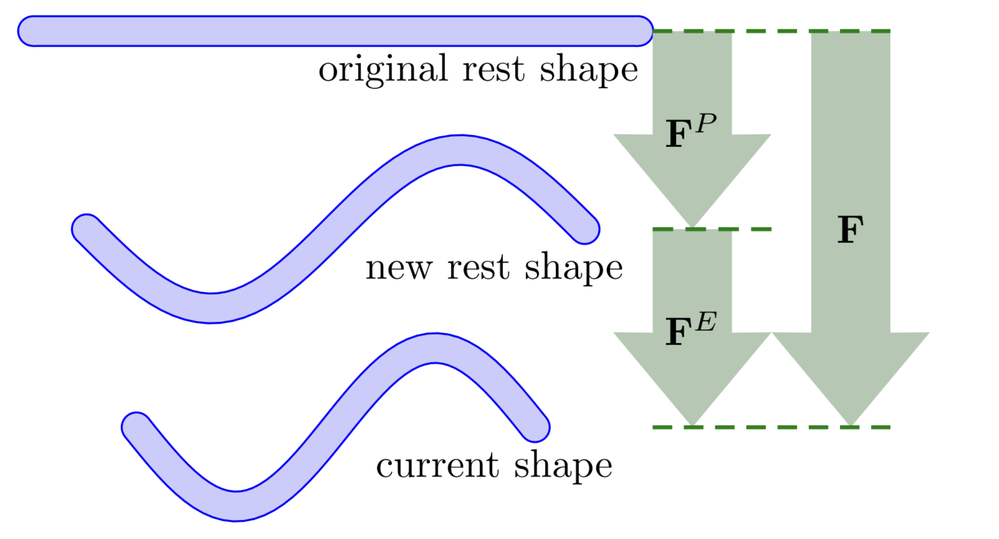
应力完全由 通过超弹性本构模型算出。当应力超过材料特定的极限时便触发塑性流动，并更新 ，以保证应力始终处于屈服面之内。
定义 28.1.1 (屈服面). 我们在由 导出的 Kirchhoff 应力 上定义屈服条件 。边界 称为屈服面。当弹性应力超出该曲面时，便触发塑性流动以恢复容许性。
该框架由 计算应力、并在塑性流动下演化 ，从而清晰地区分了可恢复变形与永久变形。
屈服条件与返回映射
为了在离散的时间与空间上施加屈服条件与流动法则，我们采用一种称为返回映射的算法。这是一种基于投影的算法，它修正弹性变形梯度，使由此得到的应力满足屈服条件。
返回映射
设 表示试探弹性变形梯度，它在粒子状态更新之后、施加塑性之前得到。若由 计算出的应力位于屈服面内部，则变形是纯弹性的，无需任何修正。
若应力位于屈服面外部，我们就施加返回映射来修正试探弹性状态：沿着塑性流动法则所指定的方向，把 引起的应力投影回屈服面。将返回映射的结果记为：
其中 为返回映射算子，它依据屈服面的几何形状与材料模型对弹性预测子进行修正。
在实践中，返回映射既可以解析地实现（适用于冯·米塞斯、Drucker-Prager 等简单屈服准则），也可以在屈服面复杂时通过数值求解器迭代实现。
在基于对数应变的塑性理论中，返回映射在奇异值分解（Singular Value Decomposition，SVD）对角化后的空间中进行。设 ， 为已存储的塑性对数应变。试探弹性拉伸为： 计算偏斜对数应变： 若 ，则执行径向返回： 修正后的弹性对数应变为： 然后更新： 并重建弹性变形：
小结
本节介绍了物质点法（Material Point Method，MPM）如何通过把变形梯度乘法分解为弹性部分与塑性部分，从而在仿真中纳入塑性材料行为。我们讨论了如何由弹性部分计算应力，以及塑性流动如何演化以施加材料特定的屈服条件。返回映射算法通过把试探状态投影回屈服面，确保应力始终处于容许范围之内。
边界处理
本讲作者：Chang Yu，加州大学洛杉矶分校
在网格更新步骤中，我们施加外力并求解节点的加速度与速度。为了对物体与物理环境的交互建模，可以在这个阶段施加边界条件。
本讲介绍物质点法（Material Point Method，MPM）中边界处理的实现方式，具体包括：
- 网格上的边界条件说明如何直接在网格节点上施加速度约束与外力，以处理狄利克雷与诺伊曼条件。
- 物质点上的摩擦接触聚焦于更准确的接触与摩擦处理，这些处理在粒子层面完成，从而能够灵活而更准确地与复杂边界交互。
这些处理对于产生真实的接触行为——例如粘着、滑动与分离——至关重要，并且遵循库仑摩擦定律。
边界条件
在物质点法中，边界条件（Boundary Condition，BC）施加在背景欧拉网格上，因为控制方程是以弱形式离散、并在网格节点上表述的，而网格节点才是系统真正的自由度（Degree of Freedom，DOF）。这些节点必须满足牛顿第二定律。因此，包括静态墙面、移动边界或接触力在内的所有外部约束，都必须在粒子到网格（Particle-to-Grid，P2G）之后、网格到粒子（Grid-to-Particle，G2P）之前直接施加到网格上。
与通常做法一样，我们把网格节点 上的节点速度记为 。在积分外力之后，我们根据边界条件的类型对边界节点施加不同的速度投影。
边界条件的类型
设 为边界网格节点 处的表面法向：
-
粘着：速度被完全抑制：
-
滑移：只移除法向分量，切向运动得以保留：
-
分离（单向墙）：法向的流入被阻挡，但向外的运动被允许：
这些操作都是局部的，对每个边界网格节点独立施加。
外力
重力等外力可以在粒子到网格（P2G）之后加入：
移动碰撞体
对于运动或变形中的物体，我们使用有符号距离函数（SDF）来判断某个网格节点 是否位于物体内部。一旦检测到，就计算表面法向 与相对速度 ，并据此调整网格速度。
库仑摩擦
为了在嵌入的碰撞体（例如球体或胶囊体）上施加库仑摩擦，我们沿表面法向施加一个投影后的速度修正：
设 为接触法向， 为反向速度（即 ）。定义法向分量：
于是修正后的网格速度为：
其中 为摩擦系数。该操作在完全分离（）与粘着（）之间平滑过渡。
物质点上的摩擦接触
此前我们讨论了直接在欧拉网格节点上施加边界条件。由于网格节点是真正的自由度（Degree of Freedom，DOF），牛顿第二定律正是在其上施加的，因此这种做法很自然，但它存在若干固有问题：
- 法向估计误差：对于较粗的网格，准确估计表面法向变得困难，可能导致错误的接触响应。
- 接触间隙（dx 间隙）：基于网格的碰撞处理在网格节点距碰撞面约一个网格单元间距以内时就会产生响应，导致可见的间隙与偏早的碰撞响应。
既然物质点法（Material Point Method，MPM）直接把固体离散为一组物质点，那么在粒子层面直接处理摩擦接触更为直观，也可能更为准确。然而，若只在粒子上计算碰撞力与摩擦力，再把它们（通过粒子到网格（Particle-to-Grid，P2G））直接传输到网格，这在物理上并不自洽。这是因为这种朴素做法绕过了在网格自由度上正确施加牛顿第二定律这一环节，可能产生非物理的响应，尤其是无法正确施加静摩擦约束。
更稳健的策略是：利用基于粒子的碰撞能量或惩罚函数定义，在网格层面上把摩擦接触问题显式地表述为一个优化问题。由此我们采用两阶段时间分裂的数值格式。
两阶段时间分裂优化格式
阶段 1：自由运动速度
在第一阶段，我们完全忽略接触约束，计算网格节点上的中间“自由运动”节点速度 ，即在没有任何接触力时节点所具有的速度。这些速度可以通过标准的辛欧拉时间积分步方便地得到。
阶段 2：通过优化施加摩擦接触
在第二阶段，通过在自由运动速度 附近求解一个受约束的线性化动量平衡来施加摩擦接触：
其中：
-
为质量矩阵。
-
是在粒子层面定义的接触雅可比矩阵，它把网格节点速度映射为粒子层面的接触速度。具体来说，每个处于接触的粒子 贡献一个局部雅可比矩阵： 将所有局部雅可比矩阵堆叠起来，便得到全局接触雅可比矩阵 ，它把所有粒子接触速度 与网格速度 整体联系起来： 直观地说， 可以理解为一个在当前构型处线性化的特殊网格到粒子（Grid-to-Particle，G2P）传输算子，它直接刻画了网格节点速度的无穷小变化如何影响接触点处粒子的速度（法向与切向分量）。
-
表示受摩擦锥约束的接触力（法向与切向）。
该线性系统可以改写为一个无约束优化问题：
小结
本讲讨论了若干对准确而稳定的物质点法（Material Point Method，MPM）仿真至关重要的边界处理策略。我们首先指出，边界条件（Boundary Condition，BC）必须直接施加在网格节点上，因为网格节点才是满足牛顿第二定律的真正自由度。我们介绍了几种常见的网格层面边界条件，包括粘着、滑移与分离（单向）条件，以及利用有符号距离函数（Signed Distance Function，SDF）通过库仑摩擦约束引入摩擦接触的实用方法。
随后我们讨论了纯网格碰撞处理固有的局限，例如法向不准确与离散间隙，从而说明为何需要采用粒子层面的摩擦接触形式。通过在网格层面把摩擦接触显式地表述为优化问题，并采用基于粒子的接触能量，我们给出了一种物理自洽且稳健的做法。具体来说，我们引入了一个两阶段格式：先计算自由运动的网格速度，再执行基于优化的摩擦接触修正，从而有效施加静摩擦，并在复杂接触场景中保持物理保真度。
在接下来的两节中，我们将运用上述全部理论组件，实现一个实用、功能完整的物质点法（MPM）仿真。我们先从一个快速入门的示例开始：二维两块弹性体碰撞，展示基于质点网格法（Particle-In-Cell，PIC）的最简单的物质点法（MPM）弹性体仿真。随后只需很少的额外工作，我们便引入仿射质点网格法（Affine Particle-In-Cell，APIC）传输格式、沙的塑性以及基于有符号距离函数（SDF）的碰撞体，构建一个更高级的二维沙仿真。
案例研究：带球体碰撞体的二维沙子*
本讲作者：Chang Yu，加州大学洛杉矶分校
至此，我们已经介绍了构建完整、物理上合理的物质点法（Material Point Method，MPM）仿真系统所需的全部核心组件——包括材料离散化、时间积分与数据传输格式。
在本案例研究中，我们将这些组件组合起来，仿真二维中两块相互碰撞的弹性体。我们首先设置仿真的材料属性与数据结构定义。随后，我们实现质点网格（Particle-In-Cell，PIC）传输，以处理粒子与网格之间的动量交换。
本示例是物质点法（MPM）流程使用弹性材料的一个快速入门演示，不涉及塑性或复杂边界条件。
在实现上，我们使用 NumPy 与 Taichi 作为编程框架。Taichi 在 CPU 与 GPU 上都能提供高效的并行能力，更重要的是，它支持稀疏数据结构，这对高性能的物质点法（MPM）网格计算至关重要。
本节可执行的 Python 工程位于 https://github.com/phys-sim-book/solid-sim-tutorial 的 10_mpm_elasticity 文件夹下。
仿真设置
本节将定义实现二维两块弹性体碰撞的最简物质点法（Material Point Method，MPM）仿真所需的物理与数值设置。我们将依次介绍仿真属性的定义、粒子位置与速度的初始化，以及整个仿真过程中使用的数据结构。
物理与数值参数
我们首先设置仿真域的离散化方式与方块的材料参数：
实现 30.1.1 (物理与数值参数，simulator.py).
# simulation setup
grid_size = 128 # background Eulerian grid's resolution, in 2D is [128, 128]
dx = 1.0 / grid_size # the domain size is [1m, 1m] in 2D, so dx for each cell is (1/128)m
dt = 2e-4 # time step size in second
ppc = 8 # average particles per cell
density = 1000 # mass density, unit: kg / m^3
E, nu = 1e4, 0.3 # block's Young's modulus and Poisson's ratio
mu, lam = E / (2 * (1 + nu)), E * nu / ((1 + nu) * (1 - 2 * nu)) # Lame parameters
这些参数定义了一个均匀的稠密背景网格、粒子分辨率与时间积分步长。整个仿真域从 [0, 0] 延伸到 [1, 1] 米，目标平均每个网格单元约含 8 个粒子。方块的参数设为：质量密度 、杨氏模量 、泊松比 。
初始粒子采样与场景设置
我们用均匀网格采样从两个矩形区域中采样粒子。这两个盒子对称地放置在计算域的左右两侧，并被赋予相反的速度，以模拟对心碰撞。
与 Poisson 圆盘采样相比，对于盒子、球体这类解析形状，均匀采样因其结构规整、参数化简单而更易实现。然而，这种规则性会导致混叠瑕疵，例如仿真中出现可见的图案或条带，从而在结果中引入不自然的规律性噪声。
这里我们为简单与清晰起见采用均匀采样，以便把注意力集中在物质点法（MPM）流程本身。
实现 30.1.2 (初始粒子采样与场景设置，simulator.py).
# uniformly sampling material particles
def uniform_grid(x0, y0, x1, y1, dx):
xx, yy = np.meshgrid(np.arange(x0, x1 + dx, dx), np.arange(y0, y1 + dx, dx))
return np.column_stack((xx.ravel(), yy.ravel()))
box1_samples = uniform_grid(0.2, 0.4, 0.4, 0.6, dx / np.sqrt(ppc))
box1_velocities = np.tile(np.array([10.0, 0]), (len(box1_samples), 1))
box2_samples = uniform_grid(0.6, 0.4, 0.8, 0.6, dx / np.sqrt(ppc))
box2_velocities = np.tile(np.array([-10.0, 0]), (len(box1_samples), 1))
all_samples = np.concatenate([box1_samples, box2_samples], axis=0)
all_velocities = np.concatenate([box1_velocities, box2_velocities], axis=0)
每个方块由均匀分布的物质点构成，代表一个均匀的弹性体。左块的初始速度设为 ([+10, 0]) m/s，右块设为 ([-10, 0]) m/s，从而构建一个对称的、净线动量为零的对心碰撞场景。该配置模拟了一次受控的撞击实验。
粒子与网格数据场
我们定义数据场来表示每个物质点（粒子）与背景网格节点的状态。对粒子而言，这包括位置、速度、体积、质量与变形梯度，遵循物质点一节。对网格而言，我们用稠密数组定义节点质量与速度场，这对小规模仿真已足够。这些数据场还可以进一步用稀疏网格结构加以优化——这一方向我们留给感兴趣的读者作为后续工作。
实现 30.1.3 (粒子与网格数据场，simulator.py).
# material particles data
N_particles = len(all_samples)
x = ti.Vector.field(2, float, N_particles) # the position of particles
x.from_numpy(all_samples)
v = ti.Vector.field(2, float, N_particles) # the velocity of particles
v.from_numpy(all_velocities)
vol = ti.field(float, N_particles) # the volume of particle
vol.fill(0.2 * 0.4 / N_particles) # get the volume of each particle as V_rest / N_particles
m = ti.field(float, N_particles) # the mass of particle
m.fill(vol[0] * density)
F = ti.Matrix.field(2, 2, float, N_particles) # the deformation gradient of particles
F.from_numpy(np.tile(np.eye(2), (N_particles, 1, 1)))
# grid data
grid_m = ti.field(float, (grid_size, grid_size))
grid_v = ti.Vector.field(2, float, (grid_size, grid_size))
质点网格传输
在每次仿真步开始时，必须先清空网格，然后再累加新的粒子到网格传输量。
实现 30.2.1 (重置网格，simulator.py).
def reset_grid():
# after each transfer, the grid is reset
grid_m.fill(0)
grid_v.fill(0)
我们采用 Saint Venant–Kirchhoff（StVK）本构模型，它利用变形梯度的奇异值分解（Singular Value Decomposition，SVD），在对数（Hencky）应变空间中表述。
实现 30.2.2 (Stvk Hencky 弹性，simulator.py).
@ti.func
def StVK_Hencky_PK1_2D(F):
U, sig, V = ti.svd(F)
inv_sig = sig.inverse()
e = ti.Matrix([[ti.log(sig[0, 0]), 0], [0, ti.log(sig[1, 1])]])
return U @ (2 * mu * inv_sig @ e + lam * e.trace() * inv_sig) @ V.transpose()
在粒子到网格（P2G）传输过程中，我们使用二次 B 样条插值，把每个粒子的质量、动量与内力分配到其相邻的网格节点上。该过程遵循质点网格法（Particle-In-Cell，PIC）（Particle-In-Cell）格式，即粒子速度被直接传输到网格，而不存储仿射速度场。
实现 30.2.3 (PIC 粒子到网格（P2G）传输，simulator.py).
@ti.kernel
def particle_to_grid_transfer():
for p in range(N_particles):
base = (x[p] / dx - 0.5).cast(int)
fx = x[p] / dx - base.cast(float)
# quadratic B-spline interpolating functions (Section 26.2)
w = [0.5 * (1.5 - fx) ** 2, 0.75 - (fx - 1) ** 2, 0.5 * (fx - 0.5) ** 2]
# gradient of the interpolating function (Section 26.2)
dw_dx = [fx - 1.5, 2 * (1.0 - fx), fx - 0.5]
P = StVK_Hencky_PK1_2D(F[p])
for i in ti.static(range(3)):
for j in ti.static(range(3)):
offset = ti.Vector([i, j])
weight = w[i][0] * w[j][1]
grad_weight = ti.Vector([(1. / dx) * dw_dx[i][0] * w[j][1],
w[i][0] * (1. / dx) * dw_dx[j][1]])
grid_m[base + offset] += weight * m[p] # mass transfer
grid_v[base + offset] += weight * m[p] * v[p] # momentum Transfer, PIC formulation
# internal force (stress) transfer
fi = -vol[p] * P @ F[p].transpose() @ grad_weight
grid_v[base + offset] += dt * fi
紧接在粒子到网格（P2G）传输之后，我们对网格动量作归一化以得到节点速度，并通过将计算域边缘附近的速度置零来施加狄利克雷边界条件。
实现 30.2.4 (网格更新，simulator.py).
@ti.kernel
def update_grid():
for i, j in grid_m:
if grid_m[i, j] > 0:
grid_v[i, j] = grid_v[i, j] / grid_m[i, j] # extract updated nodal velocity from transferred nodal momentum
# Dirichlet BC near the bounding box
if i <= 3 or i > grid_size - 3 or j <= 2 or j > grid_size - 3:
grid_v[i, j] = 0
在网格到粒子（G2P）传输过程中，我们从背景网格收集更新后的速度，并利用由插值函数导出的速度梯度计算弹性变形梯度的更新。
实现 30.2.5 (PIC 网格到粒子（G2P）传输，simulator.py).
@ti.kernel
def grid_to_particle_transfer():
for p in range(N_particles):
base = (x[p] / dx - 0.5).cast(int)
fx = x[p] / dx - base.cast(float)
# quadratic B-spline interpolating functions (Section 26.2)
w = [0.5 * (1.5 - fx) ** 2, 0.75 - (fx - 1) ** 2, 0.5 * (fx - 0.5) ** 2]
# gradient of the interpolating function (Section 26.2)
dw_dx = [fx - 1.5, 2 * (1.0 - fx), fx - 0.5]
new_v = ti.Vector.zero(float, 2)
v_grad_wT = ti.Matrix.zero(float, 2, 2)
for i in ti.static(range(3)):
for j in ti.static(range(3)):
offset = ti.Vector([i, j])
weight = w[i][0] * w[j][1]
grad_weight = ti.Vector([(1. / dx) * dw_dx[i][0] * w[j][1],
w[i][0] * (1. / dx) * dw_dx[j][1]])
new_v += weight * grid_v[base + offset]
v_grad_wT += grid_v[base + offset].outer_product(grad_weight)
v[p] = new_v
F[p] = (ti.Matrix.identity(float, 2) + dt * v_grad_wT) @ F[p]
最后，通过辛欧拉时间积分对粒子位置进行平流更新。
实现 30.2.6 (粒子状态更新，simulator.py).
@ti.kernel
def update_particle_state():
for p in range(N_particles):
x[p] += dt * v[p] # advection
一个完整的物质点法（Material Point Method，MPM）仿真步由以下阶段组成：
实现 30.2.7 (MPM 的一个完整时间步，simulator.py).
def step():
# a single time step of the Material Point Method (MPM) simulation
reset_grid()
particle_to_grid_transfer()
update_grid()
grid_to_particle_transfer()
update_particle_state()
小结
我们成功实现了一个最简却完整的二维物质点法（Material Point Method，MPM）仿真：两块相互碰撞的弹性体。该设置展示了物质点法（MPM）的核心流程，包括粒子采样、数据结构初始化、基于质点网格法（Particle-In-Cell，PIC）的传输格式，以及在 Hencky 应变空间中基于 StVK 本构模型的弹性变形。
尽管简单，本示例仍抓住了物质点法（MPM）的关键方面。它为进一步构建更复杂的物质点法（MPM）系统提供了一个简洁且可扩展的基础。
在下一讲中，我们将在此框架之上引入仿射质点网格法（Affine Particle-In-Cell，APIC）传输格式、Drucker-Prager 塑性以及基于有符号距离函数（Signed Distance Function，SDF）的边界处理，用以仿真二维沙子与静态球体碰撞体的相互作用，从而实现颗粒材料摩擦接触的真实建模。
案例研究：塑性材料模型*
本讲作者：Chang Yu，加州大学洛杉矶分校
在上一章“二维两块弹性体碰撞”中，我们用质点网格法（Particle-In-Cell，PIC）传输格式实现了一个最简的物质点法（Material Point Method，MPM）仿真。在此基础上，本案例研究将展示如何以极小的额外工作量把该系统扩展到高级塑性材料的仿真。
本案例研究涵盖两个重要的塑性材料模型。首先，我们通过一个带球体碰撞体的沙子仿真来演示 Drucker-Prager 弹塑性。随后，我们通过一个双条仿真来介绍粘塑性材料模型。
使用 Drucker-Prager 模型的沙子仿真
在沙子仿真中，我们使用 Poisson 圆盘采样来初始化物质点，这有助于减少混叠瑕疵与结构化噪声，从而在颗粒材料仿真中产生更符合物理实际的行为。
沙子采用 Drucker-Prager 弹塑性 [Klar et al. 2016] 本构模型来建模，使我们能够捕捉不可恢复的变形与内摩擦——这是颗粒材料行为的关键特征。
我们在计算域内放置一个静态球体碰撞体，它与下落的沙粒通过摩擦接触相互作用。碰撞体边界用有符号距离函数（Signed Distance Function，SDF）表示，并施加接触约束与库仑摩擦。
我们扩展原始的质点网格法（PIC）格式，引入 APIC 传输格式，以获得更高的精度并减少数值耗散。
粘塑性材料模型
本节作者：Žiga Kovačič，康奈尔大学
此外，我们在二维粘塑性条中演示了一个粘塑性材料模型，它在传统塑性理论的基础上引入了率相关行为。该模型可刻画牙膏或高粘性流体这类材料——它们对变形的抵抗取决于加载速率。
本节可执行的 Python 工程位于 https://github.com/phys-sim-book/solid-sim-tutorial 的 11_mpm_plastic 文件夹下。
Drucker-Prager 弹塑性
Drucker-Prager 塑性模型被广泛用于仿真沙子、土壤等颗粒材料。它对冯·米塞斯模型作了推广，引入了摩擦角，该角度决定了材料相对于法向应力能够承受多大的剪应力。从物理上看，这对应于颗粒之间的类库仑摩擦：当剪应力超过基于压力、与摩擦相关的界限时，材料即发生屈服。
在应力空间中，Drucker-Prager 屈服面呈锥形，需要分三种情形处理：
- 情形 I（弹性）：应力严格位于锥体内部，不发生塑性。
- 情形 II（膨胀）：应力对应的构形使材料发生体积膨胀（迹为正），且不施加任何抵抗——这映射到锥顶。
- 情形 III（剪切）：应力位于锥体之外，但压力为压缩状态，必须投影回锥面。
该模型最好在对数应变（Hencky 应变）空间中、利用变形梯度的奇异值分解（Singular Value Decomposition，SVD）来实现，这已在上一节中介绍过。
示例 31.1.1 (Drucker-Prager 屈服准则，对数应变形式). 我们将对数应变定义为：
其偏斜部分为：
塑性乘子按下式计算：
其中 是由摩擦角 导出的 Drucker-Prager 摩擦系数。
随后我们执行返回映射：
- 若 （情形 II），则投影到锥顶：令 。
- 若 ，则位于锥体内部（情形 I）：不变。
- 否则（情形 III），投影回锥面：
最后，我们计算更新后的奇异值：
并重构弹性变形：
示例 31.1.2 (带体积修正的 Drucker-Prager 塑性).
对沙子这类颗粒材料，若处理不当，体积膨胀会导致非物理的体积增大。标准的 Drucker-Prager 投影在膨胀（迹为正）时把应力映射到锥顶，这对应于无应力状态。然而，这可能会不真实地把膨胀后的构形“锁定”为新的静止形状。
当颗粒先经历弹性膨胀、再经历塑性投影时，这种效应会导致体积持续膨胀。此后任何压缩都会产生人为的弹性惩罚，从而得到错误的材料响应。
为修正这一点，我们采用 [Tampubolon et al. 2017] 所述的体积修正处理，引入逐颗粒的标量累加量 ，用以跟踪塑性投影所引起的对数体积变化：
该修正通过在执行返回映射之前调整应变，自然地融入对数应变形式：
其中 为空间维数。这样，后续的压缩就能抵消此前的体积增大，而不会受到弹性抵抗。在下面的代码中，
diff_log_J提供了该体积修正项，它由行列式对数差的累加计算得到。
实现 31.1.1 (Drucker-Prager 弹塑性返回映射，simulator.py).
@ti.func
def Drucker_Prager_return_mapping(F, diff_log_J):
dim = ti.static(F.n)
sin_phi = ti.sin(friction_angle_in_degrees/ 180.0 * ti.math.pi)
friction_alpha = ti.sqrt(2.0 / 3.0) * 2.0 * sin_phi / (3.0 - sin_phi)
U, sig_diag, V = ti.svd(F)
sig = ti.Vector([ti.max(sig_diag[i,i], 0.05) for i in ti.static(range(dim))])
epsilon = ti.log(sig)
epsilon += diff_log_J / dim # volume correction treatment
trace_epsilon = epsilon.sum()
shifted_trace = trace_epsilon
if shifted_trace >= 0:
for d in ti.static(range(dim)):
epsilon[d] = 0.
else:
epsilon_hat = epsilon - (trace_epsilon / dim)
epsilon_hat_norm = ti.sqrt(epsilon_hat.dot(epsilon_hat)+1e-8)
delta_gamma = epsilon_hat_norm + (dim * lam + 2. * mu) / (2. * mu) * (shifted_trace) * friction_alpha
epsilon -= (ti.max(delta_gamma, 0) / epsilon_hat_norm) * epsilon_hat
sig_out = ti.exp(epsilon)
for d in ti.static(range(dim)):
sig_diag[d,d] = sig_out[d]
return U @ sig_diag @ V.transpose()
返回映射在颗粒状态更新时执行：
实现 31.1.2 (颗粒状态更新，simulator.py).
@ti.kernel
def update_particle_state():
for p in range(N_particles):
# trial elastic deformation gradient
F_tr = F[p]
# apply return mapping to correct the trial elastic state, projecting the stress induced by F_tr
# back onto the yield surface, following the direction specified by the plastic flow rule.
new_F = Drucker_Prager_return_mapping(F_tr, diff_log_J[p])
# track the volume change incurred by return mapping to correct volume, following https://dl.acm.org/doi/10.1145/3072959.3073651 sec 4.3.4
diff_log_J[p] += -ti.log(new_F.determinant()) + ti.log(F_tr.determinant())
F[p] = new_F
# advection
x[p] += dt * v[p]
基于 SDF 的球体碰撞体
在有符号距离一节中，我们介绍了固体几何的解析表示——球体、盒子、半空间等形状由其坐标上的数学表达式定义。那里引入的一个有力抽象是有符号距离函数（Signed Distance Function，SDF）。该函数对空间中的任意给定点求值，得到该点到几何表面的有符号距离：负值表示点在物体内部，正值表示在外部，零则恰位于表面上。
这一概念可以自然地用于物质点法（Material Point Method，MPM）等仿真框架中的碰撞检测与边界条件施加。
用解析 SDF 表示碰撞体
考虑一个圆心为 、半径为 的二维球（圆）。其有符号距离函数（SDF）定义为：
- 若 ，则该点位于球体内部。
- 若 ，则该点位于球体表面上。
- 若 ，则该点位于球体外部。
这一定义使我们能够通过对每个网格节点求有符号距离函数（SDF）值，在整个仿真域上统一施加接触边界条件。
实现 31.2.1 (带摩擦接触的球体 SDF 碰撞体，simulator.py).
# a sphere SDF as boundary condition
sphere_center = ti.Vector([0.5, 0.5])
sphere_radius = 0.05 + dx # add a dx-gap to avoid penetration
if (x_i - sphere_center).norm() < sphere_radius:
normal = (x_i - sphere_center).normalized()
diff_vel = -grid_v[i, j]
dotnv = normal.dot(diff_vel)
dotnv_frac = dotnv * (1.0 - sdf_friction)
grid_v[i, j] += diff_vel * sdf_friction + normal * dotnv_frac
仿射质点网格传输
我们按照仿真设置定义了物质点数据，并在此基础上扩展了两项内容：仿射质点网格法（Affine Particle-In-Cell，APIC）传输格式中使用的仿射速度场 ，以及如 Drucker-Prager 弹塑性所述、用于体积修正的标量 log_J_diff。
在粒子到网格（P2G）传输过程中，我们采用 仿射质点网格法（APIC）格式 进行动量交换。我们并不直接传输粒子速度，而是纳入局部仿射速度场 。具体而言，动量以下述形式传输：
实现 31.3.1 (APIC 粒子到网格（P2G）中的仿射传输，simulator.py).
grid_v[base + offset] += weight * m[p] * (v[p] + C[p] @ dpos) # momentum Transfer, APIC formulation
这里，dpos 是粒子到网格节点的偏移。
在网格到粒子（G2P）传输过程中，我们从背景网格收集更新后的速度与仿射速度矩阵 。仿射矩阵由网格速度与位置偏移的加权外积计算得到。这使每个粒子得以保留局部的速度变化，与质点网格法（Particle-In-Cell，PIC）相比显著减小了数值耗散。
实现 31.3.2 (APIC 网格到粒子（G2P）中的仿射传输，simulator.py).
new_C += weight * grid_v[base + offset].outer_product(dpos) / D
这里， 是使用二次 B 样条插值函数时的常数因子：
实现 31.3.3 (APIC 所用二次 B 样条的常数 D，simulator.py).
D = (1./4.) * dx * dx # constant D for Quadratic B-spline used for APIC
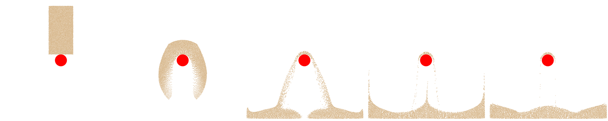
二维粘塑性条
本节作者：Žiga Kovačič，康奈尔大学
本章介绍如何使用 St. Venant-Kirchhoff（StVK）弹性模型实现粘塑性材料模型。粘塑性模型通过引入率相关行为扩展了传统塑性理论：材料对永久变形的抵抗取决于它被变形的快慢。这使它适用于仿真牙膏、黏土或高粘性流体等材料。
与标准的率无关塑性不同，粘塑性材料表现出随塑性应变率增大的屈服应力。这意味着材料在较慢的加载下更容易变形，而在快速变形时提供更大的抵抗——这正是粘性类流体行为的特征。
St. Venant-Kirchhoff 弹性模型
粘塑性模型建立在 St. Venant-Kirchhoff（StVK）弹性模型之上，并在对数（Hencky）应变空间中表述。StVK 模型利用变形梯度的奇异值分解（Singular Value Decomposition，SVD）由对数应变计算应力。
给定变形梯度 及其奇异值分解（SVD） ，对数应变定义为：
偏斜对数应变为：
其中 为空间维度， 为对数应变的迹。 直观地说，偏斜部分去掉了对数应变中的纯体积分量，只保留畸变分量。项 表示各个方向上的等量膨胀或压缩，因为 度量的是总的对数体积变化。减去这一各向同性部分后，剩下的是一个无迹张量 ，它只刻画形状的变化，而不含体积的变化。
StVK 格式下的偏斜应力（柯西应力偏量）为：
其中 为剪切模量。应力在主坐标系中计算，然后利用奇异值分解（SVD）基旋转回材料坐标系。
率相关塑性模型
粘塑性模型与 Drucker-Prager 模型类似，在对数应变空间中利用变形梯度的奇异值分解（SVD）来表述。关键区别在于屈服条件现在包含一个率相关项。
屈服函数用于检验偏斜应力的模是否超过率相关的屈服应力：
其中屈服应力依赖于塑性应变率：
这里 为静态屈服应力， 为塑性粘性系数。
粘塑性返回映射
当 时材料屈服，我们施加粘塑性返回映射。粘性阻力通过一个依赖于塑性粘性与时间步的分母项引入：
其中 是基于试探构型修正后的剪切模量。
修正后的应力模按下式计算：
这实际上以与粘性阻力成比例的因子减小了应力修正量，使材料更难快速变形。
粘塑性返回映射利用奇异值分解（SVD）与对数应变实现：
@ti.func
def viscoplastic_return_mapping_stvk_2d(F_trial, mu_p, lam_p, yield_stress_p, plastic_viscosity_p, dt_val):
U, sig, V = ti.svd(F_trial)
sig0 = ti.max(sig[0, 0], 0.01)
sig1 = ti.max(sig[1, 1], 0.01)
epsilon = ti.Vector([ti.log(sig0), ti.log(sig1)])
trace_epsilon = epsilon[0] + epsilon[1]
epsilon_hat = epsilon - ti.Vector([trace_epsilon / 2.0, trace_epsilon / 2.0])
s_trial = 2.0 * mu_p * epsilon_hat
s_trial_norm = s_trial.norm()
y = s_trial_norm - ti.sqrt(2.0 / 3.0) * yield_stress_p
F_result = F_trial
if y > 0:
b_trial = sig0 * sig0 + sig1 * sig1
mu_hat = mu_p * b_trial / 2.0
denom = 1.0 + plastic_viscosity_p / (2.0 * mu_hat * dt_val)
s_new_norm = s_trial_norm - y / denom
s_scale = s_new_norm / s_trial_norm if s_trial_norm > 1e-10 else 1.0
s_new = s_scale * s_trial
epsilon_new = 1.0 / (2.0 * mu_p) * s_new + ti.Vector([trace_epsilon / 2.0, trace_epsilon / 2.0])
sig_elastic = ti.Matrix([[ti.exp(epsilon_new[0]), 0.0], [0.0, ti.exp(epsilon_new[1])]])
F_result = U @ sig_elastic @ V.transpose()
return F_result
返回映射由奇异值分解（SVD）计算对数应变，提取其偏斜分量，检验屈服条件；若发生屈服，则施加粘性修正以减小应力更新量。随后对修正后的应变取指数，用来重建弹性变形梯度。
双条仿真设置
该仿真并排放置两根材质不同的竖直条，以展示粘塑性行为如何依赖屈服应力与塑性粘性：
# Material parameters for viscoplastic bars
E_toothpaste = 350.0
mu_toothpaste = E_toothpaste / (2 * (1 + nu))
lam_toothpaste = E_toothpaste * nu / ((1 + nu) * (1 - 2 * nu))
# Bar 1 (Left): Higher yield stress and viscosity - stiffer, more resistant
bar1_yield_stress = 1000.0
bar1_plastic_viscosity = 500.0
# Bar 2 (Right): Lower yield stress and viscosity - softer, more fluid-like
bar2_yield_stress = 100.0
bar2_plastic_viscosity = 50.0
粘塑性材料通过 material[p] == 3 标识，返回映射在粒子更新过程中施加：
if material[p] == 3:
F[p] = viscoplastic_return_mapping_stvk_2d(
F_trial, mu_toothpaste, lam_toothpaste, yield_stress[p], plastic_viscosity[p], dt
)
随着仿真在重力作用下推进，率相关行为逐渐显现：较快的变形因粘性项而受到更强的抵抗，而较慢的变形则更容易流动。
粘塑性材料的应力计算采用 StVK 格式：
@ti.func
def stvk_stress_2d(F_elastic, U, V, sig, mu_p, lam_p):
sig0 = ti.max(sig[0, 0], 0.01)
sig1 = ti.max(sig[1, 1], 0.01)
epsilon = ti.Vector([ti.log(sig0), ti.log(sig1)])
log_sig_sum = ti.log(sig0) + ti.log(sig1)
ONE = ti.Vector([1.0, 1.0])
tau = 2.0 * mu_p * epsilon + lam_p * log_sig_sum * ONE
tau_mat = ti.Matrix([[tau[0], 0.0], [0.0, tau[1]]])
return U @ tau_mat @ V.transpose() @ F_elastic.transpose()
该函数利用 Hencky 应变空间中的 StVK 模型，由弹性变形梯度计算第一类 Piola-Kirchhoff 应力，同时考虑偏斜项与体积项。

仿真结果
完整的粘塑性实现通过基于 StVK 的粘塑性模型展现了逼真的率相关行为。仿真清晰地显示了不同材料属性如何影响变形行为。

在仿真中我们观察到：
- 条 1（左）坍塌得更慢，并更好地保持其竖直形状，因为它的屈服应力（1000.0）与塑性粘性（500.0）更高，表现得像更硬、更接近固体的粘塑性材料。
- 条 2（右）坍塌得更快，横向铺展也更迅速，因为它的屈服应力（100.0）与塑性粘性（50.0）更低，表现得更像流体状的粘塑性材料。
这些差异凸显了粘塑性材料的率相关行为——粘性更高的材料对快速变形的抵抗更强，而粘性更低的材料在相同加载条件下更容易流动。
小结
我们已将弹性 MPM 框架扩展用于仿真塑性材料，并引入了两个关键材料模型：面向颗粒材料的 Drucker-Prager 弹塑性，以及面向率相关材料的粘塑性。
在沙子仿真中，我们使用了 Poisson 圆盘采样、仿射质点网格法（Affine Particle-In-Cell，APIC）传输与基于有符号距离函数（Signed Distance Function，SDF）的摩擦接触。仿射质点网格法（APIC）格式通过捕捉局部仿射运动，在保持稳定性的同时提高了精度；Drucker-Prager 模型则实现了真实的塑性流动与压力相关的屈服。我们借助有符号距离函数（SDF）引入了静态球体碰撞体，从而能够平滑而稳健地施加接触与摩擦约束。
粘塑性模型以率相关行为扩展了传统塑性理论，其中屈服应力取决于塑性应变率。这使得牙膏或高粘性流体这类材料的仿真成为可能——它们对变形的抵抗随加载速率的增大而增强。
这些改进共同使得各类塑性材料在大变形下的仿真稳定且物理上合理。
本章作者：Žiga Kovačič，康奈尔大学
基于位置的动力学框架
本节介绍基于位置的动力学（Position Based Dynamics，PBD）。在物理仿真领域存在若干主流范式，它们在描述运动时采用的抽象层次各不相同。
最经典的方法是力基（force-based）范式，它直接对牛顿第二定律建模。在力基范式中，内力与外力被累加，用以确定粒子加速度，再通过数值积分求出新的速度与位置。这类方法虽然物理上准确，但由于需要求解大型非线性系统，计算代价可能很高。
基于位置的方法则完全绕开速度与加速度这两个层次，直接在粒子位置上工作。其核心思想是通过一组几何约束来定义系统的行为。仿真循环首先根据粒子当前的速度预测其新位置，然后由迭代求解器直接调整这些预测位置，以确保所有约束都得到满足。这种约束投影过程取代了对力的显式积分，从而得到高效且在视觉上合理的仿真，使基于位置的动力学（PBD）成为经典动力学框架的一种有效替代方案。
本节受 [Bender et al. 2017] 与 [Macklin & Muller 2013] 关于基于位置的动力学（PBD）的精彩讲义启发。
预备知识
要充分领会基于位置的动力学（Position-Based Dynamics，PBD）方法，首先需要理解它所借鉴的拉格朗日动力学的经典表述。由 个粒子组成的动力学系统的状态，由各粒子的质量 、位置 与速度 描述。该系统的演化由牛顿第二定律导出的两个一阶常微分方程控制： 其中 是作用在粒子 上的所有力的总和。
刚体还需要额外的属性来描述其转动状态：姿态四元数 、角速度 以及惯性张量 。于是转动运动由牛顿-欧拉方程描述： 其中 是合力矩， 是四元数 。
为仿真这一演化过程，需要用数值积分器对上述连续方程进行离散。辛欧拉（Symplectic Euler）法先更新速度，再用新得到的速度更新位置，相比标准显式欧拉法具有更好的稳定性。对单个粒子，时间步为 时的更新为： 上述流程可类似地应用于刚体状态。
注记 32.1.1 (四元数归一化). 由于数值积分误差，四元数 可能偏离单位长度。每次积分步骤之后都必须重新归一化四元数，以维持有效的转动状态。
最后，物体间的相互作用与物理限制通过完整约束（holonomic constraints）来建模，这类约束只依赖位置与姿态，而不依赖速度！约束是以等式和不等式形式给出的运动学限制，用于限制物体之间的相对运动。等式（双侧）约束的形式为 ，而不等式（单侧）约束为 。在经典动力学中，这些约束通过计算约束力并将其加入方程 (32.1.1) 中的 来满足。基于位置的动力学（PBD）从根本上改变的正是这种处理约束的机制。
核心框架
基于位置的动力学（Position-Based Dynamics，PBD）框架通过把一个物理物体离散为一组 个粒子、并用 个几何约束（关系）定义其行为来仿真它。其核心思想是把系统看作一组粒子与一组约束。在每个时间步，首先用显式积分格式预测粒子位置，随后由一个迭代求解器调整这些预测位置，以满足所有几何约束。我们可以形式化地定义这样的系统如下：
定义 32.2.1 (PBD 系统). 基于位置的动力学（PBD）系统是一个元组，由一组 个粒子和一组 个约束构成。
每个粒子 由其位置 、速度 与质量 刻画。为方便起见，我们定义逆质量 ，其中对无穷大质量（即静态或运动学控制的）粒子取 。
动力学行为由一组约束决定。每个约束 由一个标量函数 定义，它作用于 个粒子的子集。若 ，则称等式约束被满足；若 ，则称不等式约束被满足。
仿真以时间步长 在离散时间上推进。基于位置的动力学（PBD）算法的核心循环可描述如下。
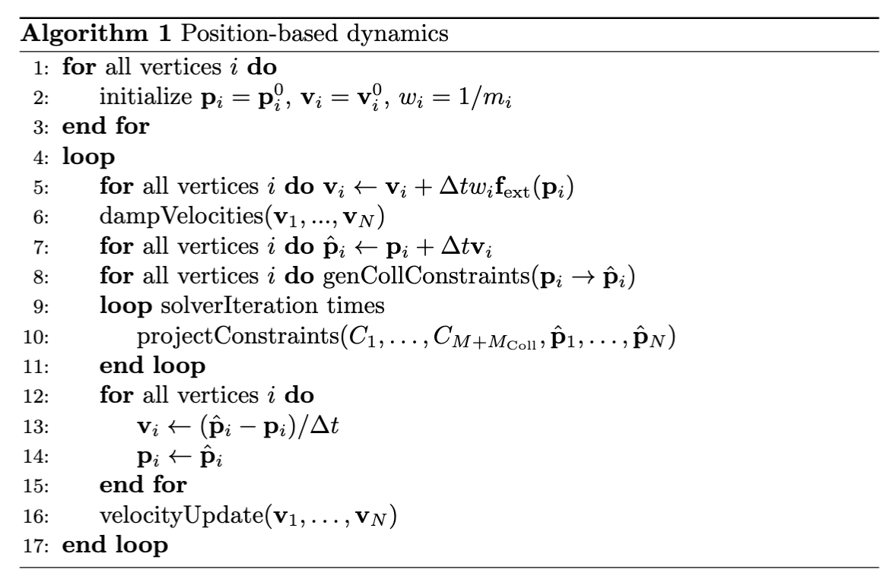
注意，由于该算法仿真的是关于 的二阶系统，因此在仿真循环开始之前必须同时指定位置与速度。这种循环结构确保速度根据求解器所做的几何修正被隐式更新，从而产生二阶动力学系统应有的正确行为。
约束形式
上一章所述的主循环依赖求解器修正预测的粒子位置 ，使其满足所有已定义的约束。我们首先把该问题表述为一个大型的非线性等式与不等式方程组，然后推导求解该方程组所需的核心数学工具，其中包括对约束函数进行线性化以及施加高斯-赛德尔（Gauss-Seidel）型迭代格式。该推导将说明如何在考虑粒子质量的前提下，计算单个约束所对应的位置修正量。
问题表述
求解器的核心任务是找到一组位置修正量 ，把预测位置 移动到满足全部 个约束的新状态 。若把所有粒子位置拼接为单一状态向量 ，则问题归结为求解如下混合了等式与不等式的方程组：
其中每个 可以表示等式（）或不等式（）。这一方程组的求解相当困难：问题由 个方程和 个未知位置分量构成。若 ，则系统是超定的；反之若 ，则系统是欠定的。此外，由于约束函数通常涉及距离或角度，该系统往往还是非线性的。对实时应用而言，在全局范围内同时求解这样的系统在计算上是不可行的。
基于位置的动力学（Position-Based Dynamics，PBD）通过采用局部化、迭代式的方法绕开了这种复杂性。它并不一次性求解整个系统，而是像求解线性系统的高斯-赛德尔法那样，按顺序逐个处理约束。每个约束被独立求解，位置更新立即施加，从而影响同一迭代中后续约束的解。我们反复遍历所有约束，仅针对当前给定的约束把粒子投影到合法位置。
约束求解器
基于位置的动力学（Position-Based Dynamics，PBD）算法的核心是约束求解器，它迭代地把预测的粒子位置投影到满足已定义约束的位置。由于这种投影必须以物理上合理的方式进行——理想情况下对内部约束应保持系统的总线性动量与总角动量守恒——我们采用非线性高斯-赛德尔求解器。
约束投影：动量守恒
为使结果尽可能符合物理，我们要确保对任何内部约束，修正步骤都不应引入虚构的外力，即通常所说的“鬼力”（ghost forces）。这一点通过保证线动量与角动量的净变化为零来实现。设 为粒子 的位置修正量。若修正后质心保持不变，则线动量守恒：
若各修正量相对于共同旋转中心 产生的净力矩为零，则角动量守恒：
注记 32.4.1 (约束梯度). 一个关键的洞见是：若拼接后的粒子位置修正向量 取为与约束梯度 平行，即： 那么对许多常见的内部约束（它们与刚体变换无关），当各粒子质量相等时，两种动量都自动守恒。
因此，我们假定每个粒子的修正量都与其约束梯度平行。这一选择的依据是：梯度指向约束函数上升最陡的方向，因此沿相反方向移动是减小约束误差最直接的途径。
位置修正（一般约束）
考虑涉及 个粒子的单个约束 。给定一组违反该约束的预测位置 （即 ），我们寻求修正量 ，使得 。为使问题易于处理，我们在当前位置 处用一阶泰勒展开对约束函数线性化：
如上所述，我们把修正量限制在约束梯度方向上。这样便能用一个未知标量 来表示单个粒子 的修正量，该标量充当拉格朗日乘子： 其中 为逆质量，从而质量越小的粒子位移越大。负号是一种约定，使 在约束被正向违反时与排斥力的概念相对应。对所有相关粒子写成向量形式，即为 ，其中 为对角质量矩阵。
为求出 的值，我们把方程 (32.4.2) 中的修正量代回线性化后的约束，即方程 (32.4.1)。对等式约束，这给出： 解出拉格朗日乘子 得： 确定之后，每个粒子的位置修正量 便完全确定。将方程 (32.4.3) 代入方程 (32.4.2)，还可以把完整修正写成单一表达式： 该方程是基于位置的动力学（PBD）求解器的基石。它给出了一种直接而计算高效的方法，用于计算在满足单个线性化约束、同时顾及粒子质量的前提下所需的位置修正量。在单个时间步内，每个约束的投影会被求解多次。需要注意，对于沿其梯度方向呈线性的约束（例如简单的距离约束），这种线性化是精确的，约束可在一步之内得到满足。
示例 32.4.1 (距离约束). 让我们考虑最基本的约束之一：距离约束，它强制两个粒子 与 之间保持固定间隔 。这是常用的基本构件，可用于建模弹簧的抗拉伸能力、布料网格的边，或物体之间的刚性连杆。
约束函数定义为当前距离与期望的静止距离 之差： 该函数直接度量了需要修正的误差。虽然可以套用方程 (32.4.4) 的通用投影方法，但对于这一常见特例，结果会化简为非常直观的形式。每个粒子的最终位置修正量可直接写为： 其中 表示沿连接两粒子的向量方向所需的总修正量。该总修正量随后按逆质量比 在两个粒子之间分配。修正沿单位向量 施加：若两粒子相距过远（）则相互靠近，若相距过近（）则相互远离。这一形式直接满足线动量守恒！
层次化求解器
基于位置的动力学（PBD）中标准的高斯-赛德尔求解器在低频、大尺度变形上收敛缓慢，因为修正只能局部传播。为加速收敛，层次化基于位置的动力学（Hierarchical Position Based Dynamics，HPBD）[Müller 2008] 引入了多分辨率方法。系统被表示为从粗到细的层次化网格。 求解器先在最粗的层级上运行，使大尺度误差的修正能够迅速传播到整个物体。随后在单次由粗到细的遍历中，通过插值（延拓，prolongation）把这些修正传递到逐级更细的层级上并加以细化。这种受多重网格启发的技术显著提升了收敛速度。为使该过程正确工作，粗层级上的约束必须是单侧的（不等式约束），即只抵抗拉伸，从而避免人为限制物体的大尺度弯曲与折叠。
约束求解中的刚度与阻尼
刚度
材料刚度由参数 控制，它决定约束被执行的强度。引入刚度最直接的做法是把计算出的修正量按 缩放：。然而，这会使有效刚度依赖于求解器的迭代次数 。若一个约束被投影 次，投影后的残余误差将与 成正比。一种更稳健、能把刚度与迭代次数解耦的表述为： 把修正量按 而非 缩放后， 次迭代后的残余误差变为 ，与 无关。这样，美术人员调校材料刚度 时无需关心求解器使用了多少次迭代。
阻尼
尽管基于位置的动力学（Position-Based Dynamics，PBD）方法总体上是稳定的，但仿真仍可能出现过度振荡或动能增益，尤其是在约束较硬时。引入适当的阻尼格式通常可以改善动态仿真的质量：它通过减小物体各点位置在时间上的抖动来提高稳定性，还允许采用更大的时间步，从而提升动态仿真的性能。
对所有速度做朴素的阻尼会不必要地影响物体的整体运动，使其整体平移与转动变慢。更精细的做法是只对粒子之间的相对运动施加阻尼，同时保持系统的总线性动量与总角动量不变。
计算质心与质心速度： ,
计算角动量与惯性张量： 令 。
计算角速度：
施加阻尼： 对每个粒子 ：
a. 计算其速度相对于刚体运动的偏差：
b. 对该偏差施加阻尼：
该方法有效地分离出运动中的非刚体成分，并只对这些成分施加阻尼。在极端情形 下，所有相对运动都被消除，物体表现为理想刚体。
扩展基于位置的动力学（XPBD）
尽管方程 (32.5.1) 中的刚度表述把有效刚度与求解器迭代次数解耦，标准基于位置的动力学（PBD）仍存在一个根本局限：由此得到的材料刚度依然依赖于仿真时间步 。被称为扩展基于位置的动力学（Extended Position Based Dynamics，XPBD）的扩展解决了这一问题，实现了真正与参数无关的刚度。
扩展基于位置的动力学（XPBD）由柔顺约束（compliant constraint）形式推导而来，并引入了柔度（compliance）这一概念，即刚度的倒数。
定义 32.5.1 (柔度). 柔度 是材料刚度 的倒数，即 。它描述材料在载荷作用下发生变形的倾向。在扩展基于位置的动力学（XPBD）中，柔度 对应无限刚硬（即硬）的约束。
扩展基于位置的动力学（XPBD）的核心思想是：不把拉格朗日乘子 视为每次迭代重新计算的临时量，而把它视为代表累积冲量的物理量，并以增量方式更新。在每次求解器迭代中，我们计算一个冲量增量 ，把它加到该约束的总冲量 上。该增量的公式对方程 (32.4.3) 作如下修改： 这里 是当前时间步内此前各次迭代为该约束累积的总拉格朗日乘子。 是按时间步缩放的柔度，定义为：
这一缩放保证了柔度参数 在动力学系统中具有物理上一致的单位。计算出 后，求解器同时更新粒子位置与该约束的累积拉格朗日乘子：
注记 32.5.1 (对 XPBD 的解读). 方程 (32.5.2) 分母中的 项起到限制修正冲量 幅值的作用。随着柔度 增大（即材料变软）， 也随之增大，从而减小每次迭代施加的冲量。当柔度为零（）时， 项消失， 的公式退化为方程 (32.4.3) 中标准的基于位置的动力学（PBD）表述。
注记 32.5.2 (关于符号的说明). 在基于位置的动力学（PBD）的推导中，我们采用的约定是把修正量（）显式地写成沿（）方向。为在扩展基于位置的动力学（XPBD）中与这一选择保持一致，我们定义的累积乘子与原始论文中所用的符号相反。若你阅读原始论文或许多综述论文，请留意这一差异。
扩展基于位置的动力学（XPBD）的主要优势不在于更快的收敛，而在于收敛到物理上一致、能正确反映用户设定柔度 的状态，且与时间步或迭代次数无关。即使求解器被提前终止，系统仍在某种程度上表现出期望的柔软度，而不是人为的、不可控的柔度。这使材料行为更可预测，也更稳健。
小结
基于位置的动力学框架为基于物理的仿真提供了一种稳健而高效的方法。其核心是一个简单的时间步进循环：先预测粒子新位置，再用高斯-赛德尔求解器迭代修正这些位置。该修正的数学基础是由线性化约束函数导出的投影，并按粒子逆质量加权，从而产生物理上合理的运动。这一做法避开了传统显式积分器的稳定性问题。
在接下来的案例研究中我们将看到，通过定义不同的约束函数，同一个通用求解器可用于仿真从可变形固体到布料、流体的各种物理现象。该框架还通过可调刚度、动量守恒阻尼等实用特性得到进一步增强，使其格外适合实时应用。
案例研究：基于位置的布料仿真*
本案例研究以基于位置的动力学：通用框架中建立的理论基础为出发点，演示如何实现一个完整的布料仿真系统。与其他基于位置的动力学（Position-Based Dynamics，PBD）应用领域（流体与体网格）相比，布料需要同时通过距离约束与二面角约束来建模抗拉伸性和弯曲行为，这带来了独特的挑战。
核心算法实现了两种基本约束类型：用于抗拉伸的距离约束，以及用于弯曲行为的二面角约束。仿真包含带柔度参数的动态约束求解，从而可以精细控制材料属性。
在实现上，我们使用 Taichi 作为编程框架，它提供高效的 GPU 并行能力，这对具有复杂网格拓扑的高性能布料仿真必不可少。
本节的可执行 Python 工程可在 https://github.com/phys-sim-book/solid-sim-tutorial 的 12_pbd_cloth 文件夹中找到。
通过距离约束实现抗拉伸性
大多数纺织品的主要特点是具有很强的抗拉伸能力。在基于位置的动力学（Position-Based Dynamics，PBD）中，这一性质通过约束相连粒子之间的距离，使其保持在初始（静止）距离附近来实现。这是基于位置的动力学（PBD）体系中最简单、也最关键的约束之一。
理论：距离约束形式
考虑两个粒子 ，其位置为 与 ，质量为 与 ，二者之间的静止距离为 。拉伸约束函数 定义为当前距离与静止距离之差：
约束函数关于粒子位置的梯度为： 其中 是沿连接两粒子轴线方向的单位向量。
按照通用的基于位置的动力学（PBD）投影公式，标量拉格朗日乘子 计算为： 其中 是粒子 的逆质量。
随后，让粒子沿各自的梯度方向移动，并按逆质量与 缩放，即得位置修正量：
施加这些修正后，粒子将恰好满足静止长度。总修正量按逆质量在两个粒子之间分配，从而保证较轻的粒子移动得比重粒子更多，同时保持线动量守恒。
为了获得不同的弹性程度，可以引入刚度参数 ，将修正量 乘以 。这样便能得到弹性各异的材料，从完全刚性（）到完全不刚（）。
实现：距离约束求解器
@ti.kernel
def solve_stretching_constraints(
compliance: ti.f64, dt: ti.f64, num_stretching_constraints: ti.i32,
pos: ti.template(), stretching_ids: ti.template(), stretching_lengths: ti.template(),
inv_mass: ti.template(), lambdas: ti.template()):
"""Solve stretching constraints using PBD projection - implements Equation [(33.1.3)](#eq:cloth:position_correction)"""
alpha = compliance / (dt * dt)
for i in range(num_stretching_constraints):
id0, id1 = stretching_ids[i, 0], stretching_ids[i, 1]
w0, w1 = inv_mass[id0], inv_mass[id1]
w_sum = w0 + w1
if w_sum == 0.0: continue
p0, p1 = pos[id0], pos[id1]
delta = p0 - p1
dist = delta.norm()
if dist == 0.0: continue
grad = delta / dist
C = dist - stretching_lengths[i]
dlambda = -(C + alpha * lambdas[i]) / (w_sum + alpha)
lambdas[i] += dlambda
pos[id0] += dlambda * w0 * grad
pos[id1] -= dlambda * w1 * grad
该核函数直接实现了 (33.1.3)。约束违反量 C 是当前距离与静止长度之差。拉格朗日乘子 s 遵循带柔度软化的 (33.1.2)。位置修正量以相反的符号施加，以保持动量守恒。
求解约束需要静止长度，因此我们在仿真开始前一次性计算所有静止边长：
@ti.kernel
def init_physics():
"""Initialize physics state including rest lengths for constraints"""
for i in range(num_stretching_constraints):
id0, id1 = stretching_ids[i, 0], stretching_ids[i, 1]
stretching_lengths[i] = (pos[id0] - pos[id1]).norm()
为确定哪些边构成约束，我们从三角形网格拓扑中提取所有不重复的边：
def find_constraint_indices(tri_ids_np):
"""Extract edge constraints from triangle mesh topology"""
edge_to_tri_map = {}
for i, tri in enumerate(tri_ids_np):
for j in range(3):
v0_idx, v1_idx = tri[j], tri[(j + 1) % 3]
edge = tuple(sorted((v0_idx, v1_idx)))
if edge not in edge_to_tri_map:
edge_to_tri_map[edge] = []
edge_to_tri_map[edge].append(i)
stretching_ids = list(edge_to_tri_map.keys())
return np.array(stretching_ids, dtype=np.int32)
该函数处理三角形网格，找出所有不重复的边，它们即成为拉伸约束。sorted 元组保证无论三角形的朝向如何，每条边都以一致的方式表示。
二面角弯曲约束
拉伸约束维持了布料网格的结构完整性，却无法阻止其发生不自然的折叠。弯曲阻力决定了布料如何起皱、如何悬垂，可以通过约束相邻三角形之间的夹角来建模。
理论：二面角约束形式
该约束定义在一对共享同一条边 的三角形 与 上。弯曲阻力是两个三角形之间二面角 的函数，该角即二者各自法向量 与 之间的夹角。约束的目标是把这一夹角恢复到其静止值 。
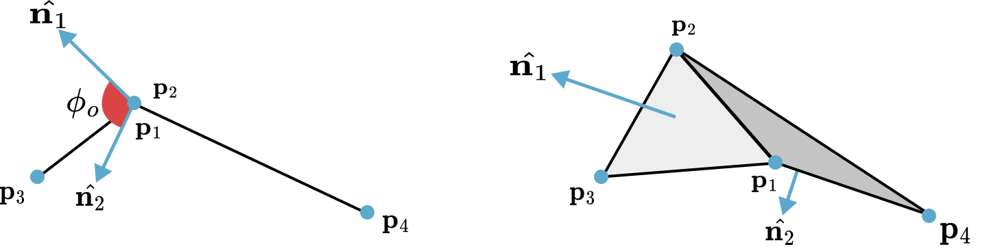
随后计算该函数关于四个顶点位置 的梯度，并采用标准的基于位置的动力学（Position-Based Dynamics，PBD）投影机制导出位置修正量。弯曲的刚度由参数 决定。
这一形式的一个显著优点是它与拉伸相互独立。由于角度由归一化向量定义，该约束不受三角形边长的影响。
备选方案：等距弯曲模型
对于近乎不可拉伸的曲面，可以使用等距弯曲模型 [Bergou et al. 2006]。该模型基于弯曲能量的局部海森矩阵，给出了一种稳健的表述。
该模型对网格的每条内部边 定义一个模板（stencil），由与该边相邻的两个三角形的四个顶点组成，记作 。该模板的局部弯曲能量定义为一个二次型：
其中 是模板位置向量， 是表示弯曲能量局部海森矩阵的常数矩阵。
弯曲约束直接由该能量定义：。由于能量关于位置是二次的，其梯度是线性的，计算十分直接：
在希望布料按等距方式（即不发生拉伸）变形的服装仿真中，该模型尤为有效。
实现：弯曲约束求解器
@ti.kernel
def solve_bending_constraints(
compliance: ti.f64, dt: ti.f64, num_bending_constraints: ti.i32,
pos: ti.template(), bending_ids: ti.template(), bending_lengths: ti.template(),
inv_mass: ti.template(), lambdas: ti.template()):
"""Solve bending constraints using distance-based approach"""
alpha = compliance / (dt * dt)
for i in range(num_bending_constraints):
id0, id1 = bending_ids[i, 0], bending_ids[i, 1]
w0, w1 = inv_mass[id0], inv_mass[id1]
w_sum = w0 + w1
if w_sum == 0.0: continue
p0, p1 = pos[id0], pos[id1]
delta = p0 - p1
dist = delta.norm()
if dist == 0.0: continue
grad = delta / dist
C = dist - bending_lengths[i]
dlambda = -(C + alpha * lambdas[i]) / (w_sum + alpha)
lambdas[i] += dlambda
pos[id0] += dlambda * w0 * grad
pos[id1] -= dlambda * w1 * grad
这一实现采用简化的基于距离的方案，把弯曲约束当作非相邻顶点之间的距离约束来处理。虽然它无法完整刻画二面角行为，但计算高效，且在许多布料仿真场景中表现良好。
求解约束需要静止长度，因此我们在仿真开始前一次性计算所有静止弯曲长度：
@ti.kernel
def init_physics():
"""Initialize physics state including rest lengths for all constraints"""
# Initialize stretching constraint rest lengths
for i in range(num_stretching_constraints):
id0, id1 = stretching_ids[i, 0], stretching_ids[i, 1]
stretching_lengths[i] = (pos[id0] - pos[id1]).norm()
# Initialize bending constraint rest lengths
for i in range(num_bending_constraints):
id0, id1 = bending_ids[i, 0], bending_ids[i, 1]
bending_lengths[i] = (pos[id0] - pos[id1]).norm()
为确定哪些顶点构成弯曲约束，我们先找出共享一条边的三角形对，再在不属于该共享边的顶点之间建立约束：
def find_constraint_indices(tri_ids_np):
"""Extract both stretching and bending constraints from triangle mesh"""
edge_to_tri_map = {}
for i, tri in enumerate(tri_ids_np):
for j in range(3):
v0_idx, v1_idx = tri[j], tri[(j + 1) % 3]
edge = tuple(sorted((v0_idx, v1_idx)))
if edge not in edge_to_tri_map:
edge_to_tri_map[edge] = []
edge_to_tri_map[edge].append(i)
stretching_ids = list(edge_to_tri_map.keys())
bending_ids = []
# Find bending constraints (non-adjacent vertices in adjacent triangles)
for edge, tris in edge_to_tri_map.items():
if len(tris) == 2:
tri0_idx, tri1_idx = tris[0], tris[1]
p2 = [v for v in tri_ids_np[tri0_idx] if v not in edge][0]
p3 = [v for v in tri_ids_np[tri1_idx] if v not in edge][0]
bending_ids.append([p2, p3])
return np.array(stretching_ids, dtype=np.int32), np.array(bending_ids, dtype=np.int32)
这样便通过连接相邻三角形中的非相邻顶点，构造出一个抵抗弯曲变形的约束网络。
stretching_compliance = 0.0 # Very stiff stretching (nearly inextensible)
bending_compliance = 1.0 # Moderate bending resistance
拉伸柔度越低，布料越难以被拉伸；弯曲柔度越高，弯曲就越灵活，从而得到更柔软、更易悬垂的布料。
完整的布料仿真
现在我们把已实现的拉伸约束与弯曲约束组合起来，构成一个完整的布料仿真。主仿真循环迭代地求解这两类约束，然后更新速度。
def substep(grab_id, grab_x, grab_y, grab_z):
"""Complete cloth simulation integrating all components"""
pre_solve(sdt)
for _ in range(solver_iterations):
solve_stretching_constraints(stretching_compliance, sdt)
solve_bending_constraints(bending_compliance, sdt)
apply_grab(grab_id, grab_x, grab_y, grab_z)
post_solve(sdt)
求解器在每次迭代中交替处理拉伸约束与弯曲约束。先求解拉伸约束，因为它提供结构完整性；随后弯曲约束带来逼真的悬垂行为。
在运行仿真之前，我们需要先设置物理状态。布料仿真需要依据三角形面积仔细分配质量，以保证行为真实：
@ti.kernel
def init_physics():
"""Initialize physics state with proper mass distribution"""
for i in range(num_particles):
prev_pos[i] = pos[i]
vel[i] = ti.Vector([0.0, 0.0, 0.0])
inv_mass.fill(0.0)
for i in range(num_tris):
id0, id1, id2 = tri_ids[i * 3], tri_ids[i * 3 + 1], tri_ids[i * 3 + 2]
p0, p1, p2 = pos[id0], pos[id1], pos[id2]
area = 0.5 * (p1 - p0).cross(p2 - p0).norm()
p_inv_mass = 1.0 / (area / 3.0) if area > 0 else 0.0
inv_mass[id0] += p_inv_mass
inv_mass[id1] += p_inv_mass
inv_mass[id2] += p_inv_mass
# Initialize constraint rest lengths
for i in range(num_stretching_constraints):
id0, id1 = stretching_ids[i, 0], stretching_ids[i, 1]
stretching_lengths[i] = (pos[id0] - pos[id1]).norm()
for i in range(num_bending_constraints):
id0, id1 = bending_ids[i, 0], bending_ids[i, 1]
bending_lengths[i] = (pos[id0] - pos[id1]).norm()
for i in range(num_particles):
original_inv_mass[i] = inv_mass[i]
该初始化过程依据三角形面积计算质量分配，使属于较大三角形的顶点获得更大的质量。这样布料的行为更加真实，材料对外力的响应也更为合理。
对于悬挂布料的场景，我们通过把顶部顶点的逆质量设为零来固定它们：
@ti.kernel
def pin_top_vertices():
"""Pin vertices with highest Y values (top of cloth) by setting their inverse mass to zero"""
max_y = -1e9
for i in range(num_particles):
if pos[i].y > max_y:
max_y = pos[i].y
for i in range(num_particles):
if pos[i].y >= max_y - 1e-6:
inv_mass[i] = 0.0
由此构造出“悬挂布料”场景：顶边被固定，布料其余部分在重力作用下自然悬垂。
仿真还包含交互式操控功能：
@ti.kernel
def apply_grab(particle_idx: ti.i32, target_x: ti.f64, target_y: ti.f64, target_z: ti.f64):
"""Apply interactive manipulation to a specific particle"""
if particle_idx != -1:
target_pos = ti.Vector([target_x, target_y, target_z])
pos[particle_idx] = target_pos
vel[particle_idx] = ti.Vector([0.0, 0.0, 0.0])
grab_indicator_pos[0] = target_pos
这使得用户可以实时与布料交互，抓取并拖拽特定顶点，便于测试材料属性与制作动画。
仿真结果
完整的布料实现借助几何约束展现出逼真的织物行为，正确呈现了悬垂、起皱，以及对力和交互操控的响应。
案例研究：基于位置的网格仿真*
本案例研究演示如何实现一个完整的体积网格仿真系统。
核心算法实现了两种基本约束类型：用于抵抗拉伸的距离约束，以及用于保证不可压缩性的体积约束。该仿真还包含若干高级特性，例如仿真网格与视觉网格的解耦以及重心坐标蒙皮，从而在保持高效仿真的同时实现高质量渲染。
在实现上，我们使用 Taichi 作为编程框架，它提供高效的 GPU 并行能力，这对具有复杂网格拓扑的高性能体积仿真必不可少。
本节的可执行 Python 工程位于 https://github.com/phys-sim-book/solid-sim-tutorial 的 13_pbd_mesh 文件夹下。
体积守恒约束
对不可压缩或近似不可压缩材料的仿真是计算机图形学中许多应用的关键。在基于力的框架中，不可压缩性通常需要求解复杂的压力泊松方程。基于位置的动力学（Position-Based Dynamics，PBD）则提供了一种更直接、往往也更简单的方法：通过几何约束来强制体积守恒。
理论：四面体体积约束形式
对于离散为四面体网格的体积对象，可以通过约束每个四面体的体积保持其静止体积来近似不可压缩性。
定义 34.1.1 (四面体体积约束). 给定由位置为 的四个顶点定义的四面体及其静止体积 ，体积约束函数 定义为： 该约束在 时得到满足。
该函数关于四个顶点位置的梯度为：
这些梯度——与对面面积成正比的向量——用于计算四个顶点的位置修正。按照标准的基于位置的动力学（PBD）投影机制，拉格朗日乘子 计算为：
其中 为顶点 的逆质量。位置修正则为：
实现：体积约束求解器
@ti.kernel
def solve_volumes(
compliance: ti.f64, dt: ti.f64, num_tets: ti.i32,
pos: ti.template(), tet_ids: ti.template(), rest_vol: ti.template(), inv_mass: ti.template(),
vol_id_order: ti.template(), lambdas: ti.template()):
"""Solve volume constraints using PBD projection - implements Equation [(34.1.3)](#eq:volume:position_correction)"""
alpha = compliance / (dt * dt)
for i in range(num_tets):
p_indices = ti.Vector([tet_ids[i, 0], tet_ids[i, 1], tet_ids[i, 2], tet_ids[i, 3]])
w_sum = 0.0
grads = ti.Matrix.zero(ti.f64, 4, 3)
for j in ti.static(range(4)):
ids = ti.Vector([p_indices[vol_id_order[j, c]] for c in range(3)])
p0, p1, p2 = pos[ids[0]], pos[ids[1]], pos[ids[2]]
grad = (p1 - p0).cross(p2 - p0) / 6.0
grads[j, :] = grad
w_sum += inv_mass[p_indices[j]] * grad.norm_sqr()
if w_sum == 0.0: continue
C = get_tet_volume(p_indices, pos) - rest_vol[i]
dlambda = -(C + alpha * lambdas[i]) / (w_sum + alpha)
lambdas[i] += dlambda
for j in ti.static(range(4)):
pos[p_indices[j]] += dlambda * inv_mass[p_indices[j]] * grads[j, :]
该核函数使用公式 (34.1.1) 中的叉积公式计算梯度。vol_id_order 数组确保叉积所用顶点顺序正确。约束违反量 C 按当前体积与静止体积之差计算，拉格朗日乘子 s 遵循带柔度软化项的公式 (34.1.2)。
@ti.func
def get_tet_volume(p_indices):
"""Calculate tetrahedral volume using scalar triple product - implements Equation [(34.1.1)](#eq:volume:tetra_constraint)"""
p0, p1, p2, p3 = pos[p_indices[0]], pos[p_indices[1]], pos[p_indices[2]], pos[p_indices[3]]
return (p1 - p0).cross(p2 - p0).dot(p3 - p0) / 6.0
该函数使用标量三重积公式实现了公式 (34.1.1) 中的体积计算。
@ti.kernel
def init_physics():
"""Initialize physics state including rest volumes for constraints"""
inv_mass.fill(0.0)
for i in range(num_tets):
p_indices = ti.Vector([tet_ids[i, 0], tet_ids[i, 1], tet_ids[i, 2], tet_ids[i, 3]])
vol = get_tet_volume(p_indices)
rest_vol[i] = vol
if vol > 0.0:
p_inv_mass = 1.0 / (vol / 4.0)
for j in ti.static(range(4)):
inv_mass[p_indices[j]] += p_inv_mass
静止体积在初始化时计算一次并存储，供约束求解使用。质量按四面体体积分配，因此属于较大四面体的顶点具有更大的质量。
用于抗拉伸的边约束
体积约束保证不可压缩性，而边约束提供抗拉伸性，防止网格在外力作用下发生过度变形。这类约束把边长限制在其静止值上，从而维持体网格的结构完整性。
理论：距离约束形式
体网格中的边约束与布料仿真中所用的距离约束完全相同。四面体网格中的每条边都被视为其两个顶点之间的一个距离约束。
定义 34.2.1 (边距离约束). 给定由一条静止长度为 的边相连的两个顶点，其位置为 与 ，则边约束函数 定义为： 当 时约束得到满足。
该函数关于顶点位置的梯度为： 其中 是沿边方向的单位向量。
按照标准的基于位置的动力学（Position-Based Dynamics，PBD）投影公式，标量拉格朗日乘子 计算为： 其中 是顶点 的逆质量。
位置修正量即为：
这些修正量按逆质量把约束违反量分配到两个顶点之间，从而保证动量守恒。
实现：边约束求解器
@ti.kernel
def solve_edges(
compliance: ti.f64, dt: ti.f64, num_edges: ti.i32,
pos: ti.template(), edge_ids: ti.template(), edge_lengths: ti.template(),
inv_mass: ti.template(), lambdas: ti.template()):
"""Solve edge constraints using PBD projection - implements Equation [(34.2.3)](#eq:mesh:edge_correction)"""
alpha = compliance / (dt * dt)
for i in range(num_edges):
id0, id1 = edge_ids[i, 0], edge_ids[i, 1]
w0, w1 = inv_mass[id0], inv_mass[id1]
w_sum = w0 + w1
if w_sum == 0.0: continue
delta = pos[id0] - pos[id1]
dist = delta.norm()
if dist == 0.0: continue
grad = delta / dist
C = dist - edge_lengths[i]
dlambda = -(C + alpha * lambdas[i]) / (w_sum + alpha)
lambdas[i] += dlambda
pos[id0] += dlambda * w0 * grad
pos[id1] -= dlambda * w1 * grad
该核函数直接实现了 (34.2.3)。约束违反量 C 是当前距离与静止长度之差。拉格朗日乘子 s 遵循带柔度软化的 (34.2.2)。位置修正量以相反的符号施加，从而保持动量守恒。
求解约束需要静止长度，因此我们在仿真开始前一次性计算所有静止边长：
@ti.kernel
def init_physics():
"""Initialize physics state including rest lengths for edge constraints"""
for i in range(num_edges):
id0, id1 = edge_ids[i, 0], edge_ids[i, 1]
edge_lengths[i] = (pos[id0] - pos[id1]).norm()
def substep():
pre_solve(sdt, 1, num_particles, gravity, box_min, box_max, pos, prev_pos, vel, inv_mass)
# XPBD: reset lambdas once per substep (they accumulate across solver iterations)
reset_constraint_lambdas(num_edges, num_tets, edge_lambdas, vol_lambdas)
for _ in range(solver_iterations):
solve_edges(edge_compliance, sdt, num_edges, pos, edge_ids, edge_lengths, inv_mass, edge_lambdas)
solve_volumes(vol_compliance, sdt, num_tets, pos, tet_ids, rest_vol, inv_mass, vol_id_order, vol_lambdas)
post_solve(sdt, num_particles, pos, prev_pos, vel, inv_mass)
在每次迭代中，边约束先于体积约束求解。这一顺序使体积约束在边约束提供局部结构完整性之后，能够基于更稳定的网格结构工作。
edge_compliance = 0.0 # Very stiff stretching (nearly inextensible)
vol_compliance = 0.0 # Very stiff volume (nearly incompressible)
柔度值越小，材料越刚硬。边柔度与体积柔度之间的关系决定了材料行为：高边柔度配合低体积柔度会得到柔软、可压缩的材料，而两者都取低值则得到刚硬、不可压缩的材料。
完整网格仿真
现在我们把已实现的边约束与体积约束结合起来，构建一个完整的体积网格仿真。主仿真循环迭代地求解这两类约束，然后更新速度。
def substep():
"""Complete mesh simulation integrating all components"""
pre_solve(sdt, 1)
for _ in range(solver_iterations):
solve_edges(edge_compliance, sdt)
solve_volumes(vol_compliance, sdt)
post_solve(sdt)
在每次迭代中，求解器交替处理边约束与体积约束。先求解边约束，因为它提供结构完整性；随后体积约束保证不可压缩性。
本实现的关键优势之一是将仿真网格与视觉网格解耦。我们使用粗糙的四面体网格进行高效仿真，并使用精细的三角形网格获得高质量渲染：
# Simulation mesh (tetrahedral)
pos = ti.Vector.field(3, dtype=ti.f64, shape=num_particles)
tet_ids = ti.field(ti.i32, shape=(num_tets, 4))
edge_ids = ti.field(ti.i32, shape=(num_edges, 2))
# Visual mesh (triangular)
vis_mesh_rest_pos = ti.Vector.field(3, dtype=ti.f64, shape=num_vis_verts)
vis_mesh_pos = ti.Vector.field(3, dtype=ti.f64, shape=num_vis_verts)
vis_mesh_indices = ti.field(ti.i32, shape=num_vis_tris * 3)
这种分离使得我们既能用粗糙四面体进行高效仿真，又能以精细三角形保持高质量渲染。
视觉网格利用由仿真网格计算得到的重心坐标进行变形：
@ti.kernel
def update_vis_mesh():
"""Update visual mesh using barycentric skinning"""
for i in range(num_vis_verts):
tet_idx = skinning_info_tet_idx[i]
if tet_idx < 0:
vis_mesh_pos[i] = vis_mesh_rest_pos[i]
continue
p_indices = ti.Vector([tet_ids[tet_idx, 0], tet_ids[tet_idx, 1], tet_ids[tet_idx, 2], tet_ids[tet_idx, 3]])
p0, p1, p2, p3 = pos[p_indices[0]], pos[p_indices[1]], pos[p_indices[2]], pos[p_indices[3]]
b = skinning_info_bary_weights[i]
b3 = 1.0 - b.sum()
vis_mesh_pos[i] = b[0] * p0 + b[1] * p1 + b[2] * p2 + b3 * p3
该方法确保视觉网格平滑地跟随仿真网格的变形，在保持仿真效率的同时提供高质量渲染。
蒙皮计算借助空间哈希网格进行加速：
def build_hash_grid():
"""Multi-step process to build the spatial hash grid for skinning acceleration"""
grid_cell_counts.fill(0)
@ti.kernel
def count_verts_in_cells():
for i in range(num_vis_verts):
cell = get_grid_cell(vis_mesh_rest_pos[i])
ti.atomic_add(grid_cell_counts[cell], 1)
count_verts_in_cells()
# Build prefix sum for cell starts
total_verts = 0
counts_np = grid_cell_counts.to_numpy()
starts_np = np.zeros_like(counts_np)
for i in range(GRID_SIZE):
for j in range(GRID_SIZE):
for k in range(GRID_SIZE):
starts_np[i, j, k] = total_verts
total_verts += counts_np[i, j, k]
grid_cell_starts.from_numpy(starts_np)
这种空间加速结构使蒙皮计算期间能够高效地查找邻居，即使对复杂网格也能让预处理阶段非常快。
仿真中包含简单的盒体碰撞处理：
@ti.func
def clamp_to_box(p):
"""Clamp a position to stay within the collision box bounds"""
return ti.Vector([
ti.max(box_min[0], ti.min(box_max[0], p[0])),
ti.max(box_min[1], ti.min(box_max[1], p[1])),
ti.max(box_min[2], ti.min(box_max[2], p[2]))
])
@ti.kernel
def pre_solve(dt: ti.f64, use_gravity: ti.i32):
for i in range(num_particles):
if inv_mass[i] == 0.0: continue
if use_gravity != 0:
vel[i] += gravity * dt
prev_pos[i] = pos[i]
pos[i] += vel[i] * dt
pos[i] = clamp_to_box(pos[i])
这提供了基本的碰撞检测与响应，使粒子保持在仿真域内。
仿真结果
完整的网格实现通过几何约束展现出真实的体积行为，体现了恰当的变形、不可压缩性以及与边界的复杂交互。
案例研究：基于位置的流体仿真*
基于位置的动力学框架可以很自然地推广到不可压缩流体的仿真。由此得到的方法称为基于位置的流体（Position-Based Fluids，PBF）[Macklin & Muller 2013]，它用一组几何约束取代了传统光滑粒子流体动力学（Smoothed Particle Hydrodynamics，SPH）[Koschier et al. 2020]中复杂的压力求解。这一方法继承了基于位置的动力学（Position-Based Dynamics，PBD）的稳定性与高效性，允许使用适合实时应用的大时间步长，同时有效地强制满足不可压缩流动所特有的常密度条件。
在 基于位置的流体：密度与表面约束 所建立的理论基础之上，本案例研究演示如何实现一个完整的基于位置的流体（PBF）仿真系统。与前面讨论的其他基于位置的动力学（PBD）应用领域（布料与体积网格）相比，流体通过密度约束实现不可压缩性，这带来了独特的挑战。
核心算法实现了三阶段密度约束求解器：计算拉格朗日乘子 、使用对称约束公式计算位置修正，以及在防止拉伸不稳定性的前提下应用修正。
该仿真包含用于产生内聚类液体运动的 XSPH 粘性，以及用于重新引入迭代约束求解过程中损失的旋转能量的涡量限制。动态墙体提供了压缩场景，展示了该方法处理复杂边界交互的能力。
在实现上，我们使用 Taichi 作为编程框架，它提供高效的 GPU 并行能力，这对结合空间哈希的高性能粒子仿真必不可少。
本节的可执行 Python 工程位于 https://github.com/phys-sim-book/solid-sim-tutorial 的 14_pbf 文件夹下。
基于位置的流体中的密度约束
逐粒子密度约束
基于位置的流体（Position-Based Fluids，PBF）的基本原理是确保每个流体粒子周围的密度保持恒定。给定粒子位置处的密度通过对其邻居进行基于核函数的求和来估计。
位置为 的粒子 的密度 估计为： 其中求和遍历所有邻居粒子 ， 为粒子 的质量， 为平滑核半径， 为径向对称的平滑核函数。为简单起见，我们可以假设所有粒子质量相等，并将其并入密度计算中。
目标是强制该估计密度 与用户定义的静止密度 一致。这可以表述为逐粒子约束函数 。
定义 35.1.1 (PBF 密度约束). 对每个粒子 ，密度约束 定义为相对静止密度 的缩放偏差： 该约束在 时得到满足。
为求解该约束系统，基于位置的流体（PBF）为每个粒子计算位置修正 。按照基于位置的动力学（Position-Based Dynamics，PBD）方法，我们首先计算 关于粒子 位置的梯度： 标准基于位置的动力学（PBD）求解器使用公式 为每个约束 计算一个拉格朗日乘子 。粒子 的位置修正则来自其自身约束与邻居约束的共同影响。由于核函数梯度的对称性（），粒子 的位置修正最终得到一个简洁高效的更新规则： 这里通常使用另一种核函数，即 Spiky 核，因为它的梯度不会在原点处消失，从而能防止粒子聚集。
注记 35.1.1 (鲁棒性与约束软化). 当某个粒子的邻居很少时会出现一个实际问题：分母 可能趋近于零，从而导致位置修正过大且不稳定。为避免这种情况，我们在分母中加入一个很小的松弛参数 来软化约束。这被称为约束力混合（Constraint Force Mixing，CFM）[Smith & others 2005]。于是：
实现：核函数
基于位置的流体（PBF）实现需要两种不同的核函数，各有特定用途：
用于密度估计的 Poly6 核
Poly6 核用于通过对邻居粒子进行平滑加权来估计粒子密度：
@ti.func
def poly6_value(s, h_):
"""Poly6 kernel for density estimation - implements Equation [(35.1.1)](#eq:pbf:sph_density)"""
result = 0.0
if 0 < s and s < h_:
x = (h_ * h_ - s * s) / (h_ * h_ * h_)
result = poly6_factor * x * x * x
return result
该核函数在紧支撑半径 h 内提供平滑的密度估计。三次衰减保证远处粒子对密度计算的影响极小，从而产生真实的流体行为。
用于位置修正的 Spiky 核
Spiky 核用于计算位置修正，因为它在原点附近的梯度不会消失，从而防止粒子聚集：
@ti.func
def spiky_gradient(r, h_):
"""Spiky kernel gradient for position corrections - used in Equation [(35.1.4)](#eq:pbf:position_correction)"""
result = ti.Vector([0.0, 0.0, 0.0])
r_len = r.norm()
if 0 < r_len and r_len < h_:
x = (h_ - r_len) / (h_ * h_ * h_)
g_factor = spiky_grad_factor * x * x
result = r * g_factor / r_len
return result
Spiky 核的线性衰减在粒子彼此靠近时提供很强的排斥力，这对维持恰当的粒子间距、避免聚集伪影至关重要。
实现：密度约束求解器
密度约束求解器实现了理论章节中描述的三阶段基于位置的动力学（PBD）算法：
阶段 1：计算拉格朗日乘子
@ti.kernel
def solve_density_constraints():
# Phase 1: Compute Lagrange multipliers λ_i for each particle
for p_i in positions:
pos_i = positions[p_i]
grad_i, sum_gradient_sqr, density_constraint = ti.Vector([0.0, 0.0, 0.0]), 0.0, 0.0
for j in range(particle_num_neighbors[p_i]):
p_j = particle_neighbors[p_i, j]
pos_ji = pos_i - positions[p_j]
grad_j = spiky_gradient(pos_ji, h)
grad_i += grad_j
sum_gradient_sqr += grad_j.dot(grad_j)
density_constraint += poly6_value(pos_ji.norm(), h)
# Implement Equation [(35.1.2)](#eq:pbf:constraint_func): C_i = ρ_i/ρ₀ - 1
density_constraint = (mass * density_constraint / rho0) - 1.0
sum_gradient_sqr += grad_i.dot(grad_i)
# Implement Equation [(35.1.5)](#eq:pbf:lambda_cfm): CFM regularization
denominator = (1.0 / mass) * sum_gradient_sqr + lambda_epsilon
lambdas[p_i] = -density_constraint / denominator if denominator > epsilon else 0.0
该阶段为每个粒子计算约束违反量，并计算相应的拉格朗日乘子。约束力混合（CFM）正则化可防止粒子邻居很少时出现数值不稳定。
阶段 2：计算位置修正
# Phase 2: Compute position corrections using Equation [(35.1.4)](#eq:pbf:position_correction)
for p_i in positions:
pos_i = positions[p_i]
lambda_i = lambdas[p_i]
pos_delta_i = ti.Vector([0.0, 0.0, 0.0])
for j in range(particle_num_neighbors[p_i]):
p_j = particle_neighbors[p_i, j]
lambda_j = lambdas[p_j]
pos_ji = pos_i - positions[p_j]
pos_delta_i += (lambda_i + lambda_j) * spiky_gradient(pos_ji, h)
position_deltas[p_i] = pos_delta_i / rho0
该阶段使用对称约束公式为每个粒子计算位置修正。修正量同时取决于该粒子自身的约束违反量及其邻居的约束违反量。
阶段 3：应用位置修正
# Phase 3: Apply position corrections
for i in positions:
positions[i] += position_deltas[i]
最后一个阶段应用计算得到的修正量来更新粒子位置，从而满足密度约束。
拉伸不稳定性修正
基于光滑粒子流体动力学（Smoothed Particle Hydrodynamics，SPH）的流体仿真中一个众所周知的瑕疵是“拉伸不稳定性”：自由表面附近的粒子由于无法满足静止密度而聚集成团。基于位置的流体（Position-Based Fluids，PBF）通过引入人工压力项给出了直接的解决方案。
具体而言，引入人工压力项 ，在邻近粒子之间产生短程排斥力。该项是 的函数： 其中 与 为小的正常数（例如 ）， 是表示核半径内一个小距离的向量（例如 ）。该项只用于将粒子推开，并直接并入式 (35.1.4) 的位置修正计算： 如此可避免成团，并在流体边界处隐式地产生类表面张力的效应。
实现：拉伸不稳定性修正
拉伸不稳定性修正实现为一个额外的人工压力项，它在邻近粒子之间产生排斥力：
计算人工压力项
@ti.func
def compute_scorr(pos_ji):
"""Tensile instability correction - implements Equation [(35.2.1)](#eq:pbf:scorr)"""
x = poly6_value(pos_ji.norm(), h) / poly6_value(corr_deltaQ_coeff * h, h)
x = x * x; x = x * x # pow(x, 4)
return -corrK * x
该函数计算按核函数取值之比缩放的人工压力项 s_corr。四次幂保证当粒子彼此非常接近时修正最强，从而形成有效的排斥。
并入位置修正
人工压力项被并入位置修正的计算：
# Integration into density constraint solver
for j in range(particle_num_neighbors[p_i]):
p_j = particle_neighbors[p_i, j]
lambda_j = lambdas[p_j]
pos_ji = pos_i - positions[p_j]
scorr_ij = compute_scorr(pos_ji) # Tensile instability correction
pos_delta_i += (lambda_i + lambda_j + scorr_ij) * spiky_gradient(pos_ji, h)
人工压力项被加到标准的约束修正之上，产生短程排斥力，既防止自由表面附近的粒子聚集成团，又保持整体的密度约束满足。
高级流体效果：粘性与涡量
虽然基于位置的流体（Position-Based Fluids，PBF）中的主要约束作用于位置，但为了模拟粘性等现象并重新引入损失的能量，仍需要在速度层面进行更新。这些更新在主基于位置的动力学（Position-Based Dynamics，PBD）求解器循环完成位置与速度的更新之后，作为后处理步骤施加。
XSPH 粘性： 为了获得更具内聚性的类液体运动并减少粒子间的混杂，需要施加 XSPH 粘性。它调整每个粒子的速度，使其更接近其邻居的平均速度： 其中 为正的粘性系数，通常取 这样的较小值。
涡量限制： 基于位置的动力学（PBD）的迭代特性会引入数值阻尼，使流体损失旋转能量并显得过于粘稠。涡量限制可用于抵消这一效应：它计算每个粒子处的涡量（速度场的旋度），并施加修正力 。其中， 是涡量模长梯度的归一化形式，，指向旋转增强的区域。该力重新引入小尺度的旋转细节。
实现：高级流体效果
XSPH 粘性与涡量限制都作为主基于位置的动力学（PBD）求解器之后的后处理步骤实现，以增强流体的真实感：
XSPH 粘性的实现
XSPH 粘性通过与邻居粒子取平均来平滑粒子速度：
@ti.kernel
def apply_xsph_viscosity():
"""XSPH viscosity implementation - Equation [(35.3.1)](#eq:pbf:xsph_viscosity)"""
for i in positions:
vel_i = velocities[i]
delta_v = ti.Vector([0.0, 0.0, 0.0])
for j in range(particle_num_neighbors[i]):
p_j = particle_neighbors[i, j]
pos_ji = positions[i] - positions[p_j]
vel_ij = velocities[p_j] - vel_i
w_ij = poly6_value(pos_ji.norm(), h)
delta_v += vel_ij * w_ij
velocity_deltas_xsph[i] = xsph_viscosity_c * delta_v
for i in positions:
velocities[i] += velocity_deltas_xsph[i]
这通过减小相邻粒子之间的速度差产生更具内聚性的类液体运动，有效地模拟了粘性行为。
涡量限制的实现
涡量限制重新引入在迭代约束求解过程中损失的旋转能量：
@ti.kernel
def calculate_vorticity():
"""Calculate vorticity field: ω_i = ∇ × v_i"""
for i in positions:
vort_i = ti.Vector([0.0, 0.0, 0.0])
for j in range(particle_num_neighbors[i]):
p_j = particle_neighbors[i, j]
pos_ji = positions[i] - positions[p_j]
vel_ij = velocities[p_j] - velocities[i]
vort_i += vel_ij.cross(spiky_gradient(pos_ji, h))
vorticity[i] = vort_i
首先，通过相对速度与核函数梯度的叉积求速度场的旋度，从而计算涡量场。
@ti.kernel
def apply_vorticity_confinement():
"""Apply vorticity confinement force: f_vorticity = ε(N × ω_i)"""
for i in positions:
eta = ti.Vector([0.0, 0.0, 0.0])
vort_i_norm = vorticity[i].norm()
for j in range(particle_num_neighbors[i]):
p_j = particle_neighbors[i, j]
pos_ji = positions[i] - positions[p_j]
vort_j_norm = vorticity[p_j].norm()
eta += (vort_j_norm - vort_i_norm) * spiky_gradient(pos_ji, h)
eta_norm = eta.norm()
if eta_norm > epsilon:
N = eta / eta_norm
vorticity_force[i] = vorticity_epsilon * N.cross(vorticity[i])
else:
vorticity_force[i] = ti.Vector([0.0, 0.0, 0.0])
for i in velocities:
velocities[i] += vorticity_force[i] * time_delta
限制力通过求涡量模长的梯度得到，并施加一个同时垂直于涡量向量及其梯度的修正力，从而重新引入小尺度的旋转细节。
完整 PBF 仿真
现在，我们把已实现的密度约束、拉伸不稳定性修正与高级流体效果结合起来，构建一个完整的基于位置的流体仿真。主仿真循环迭代求解密度约束，然后施加流体特有的增强处理。
def substep():
"""Complete PBF simulation integrating all components"""
if simulation_running[None]:
# Standard PBD pre-solve: external forces and neighbor search
pre_solve()
# Standard PBD constraint solving loop
for _ in range(pbf_num_iters):
solve_density_constraints() # Density constraints with tensile instability correction
# Standard PBD post-solve: velocity updates
post_solve()
# Fluid-specific enhancements (beyond standard PBD)
calculate_vorticity()
apply_vorticity_confinement()
apply_xsph_viscosity()
该求解器遵循标准的基于位置的动力学（Position-Based Dynamics，PBD）流程，但额外加入了流体特有的增强处理。密度约束被迭代求解以施加不可压缩性，随后涡量约束与 XSPH 粘性带来逼真的流体行为。
该仿真包含带有移动墙壁的动态边界条件，以支持压缩场景：
@ti.kernel
def move_wall():
"""Move the wall for compression scenario"""
if wall_moving[None]:
wall_pos[None] += wall_velocity[None] * dt
if wall_pos[None] > wall_max_pos[None]:
wall_pos[None] = wall_max_pos[None]
wall_velocity[None] = -wall_velocity[None]
elif wall_pos[None] < wall_min_pos[None]:
wall_pos[None] = wall_min_pos[None]
wall_velocity[None] = -wall_velocity[None]
这构成一个墙壁往复振荡的压缩场景，展示了该方法处理复杂边界交互的能力。
该仿真使用空间哈希来高效地查找邻居：
@ti.kernel
def build_hash_grid():
"""Build spatial hash grid for neighbor finding"""
grid_cell_counts.fill(0)
for i in range(num_particles):
cell = get_grid_cell(pos[i])
ti.atomic_add(grid_cell_counts[cell], 1)
# Build prefix sum for cell starts
total_particles = 0
counts_np = grid_cell_counts.to_numpy()
starts_np = np.zeros_like(counts_np)
for i in range(GRID_SIZE):
for j in range(GRID_SIZE):
for k in range(GRID_SIZE):
starts_np[i, j, k] = total_particles
total_particles += counts_np[i, j, k]
grid_cell_starts.from_numpy(starts_np)
这种空间加速结构使密度约束求解过程中的邻居查找变得高效，从而使仿真可以扩展到大量粒子。
仿真结果
完整的基于位置的流体（Position-Based Fluids，PBF）实现通过几何约束展现了逼真的流体行为，呈现出不可压缩流动、表面张力效应以及流体与动态边界之间的复杂交互。


其他常见约束
正如前面案例研究章节所示，人们可以构造出许多不同类型的约束，从而在同一个基础求解器中仿真截然不同的动力学行为。本小节将介绍若干你可能会在基于位置的动力学（Position-Based Dynamics，PBD）仿真器中遇到的其他常见约束。
碰撞约束
在任何物理仿真中，防止物体相互穿透都是获得可信结果的首要前提。基于位置的动力学为此提供了一种统一的处理方式。碰撞不再被当作依赖冲量或惩罚力的独立后处理步骤，而是与 IPC [Li et al. 2020] 一样，被表述为单边不等式约束，并直接集成到基于位置的动力学（Position-Based Dynamics，PBD）求解器的核心循环之中。
三角形自碰撞
对于布料等薄壳物体或其他可变形曲面，一项主要挑战是处理自碰撞，即物体发生折叠并与自身相互作用。最常见的场景是一个顶点穿透了网格另一部分的三角形。这种相互作用用一个涉及全部四个参与粒子的单边约束来建模。
考虑位置为 的顶点，以及顶点为 的三角形。可以通过定义相对于三角形平面的最小间隔距离（即厚度 ）来构造碰撞约束。该单边约束函数为： 其中 为三角形的单位法向。当 时，全部四个粒子（）都参与其中，它们的位置将按各自的逆质量被修正，以在保持动量守恒的前提下消除穿透。此外，在施加修正之前，还必须检查顶点在三角形平面上投影的重心坐标，以确保接触点位于三角形的边界之内。
粒子-环境碰撞
最简单的碰撞场景是动态粒子与静态、不可移动的几何体（例如地板平面或凸形容器）相互作用。该几何体充当仿真域的边界。对于位置为 的粒子与静态平面的相互作用，非穿透条件可以表述为对该粒子到平面的有符号距离的约束。
设平面的定义使得对其上任意点 都有 ，其中 为单位法向， 为偏置量。于是粒子 的非穿透约束写为如下不等式： 当粒子违反该约束（即 ）时，基于位置的动力学（PBD）求解器将其位置投影回表面。由于只有一个粒子是动态的，其逆质量相对于静态几何体可视为无穷大，因此它承担满足 所需的全部位置修正。该修正只是沿平面法向 移动粒子以消除穿透。这一做法很容易推广到更复杂的形状。
粒子-粒子碰撞
对于由离散单元组成的系统（例如颗粒材料），必须考虑粒子间的直接碰撞。该约束阻止任意两个粒子发生重叠。
对于位置为 与 、半径分别为 与 的两个粒子，非穿透约束是基于其中心距的一个简单不等式： 与线性的平面约束不同，该函数是非线性的。其求解方式与上一节讨论的拉伸约束类似。求解器计算出一个修正量，沿连接两粒子中心的向量将二者推开，并按各自的逆质量分配该修正量，以保持线动量守恒。
位置层面的摩擦效应
摩擦是一种阻碍表面间相对切向运动的耗散性接触力。为提高鲁棒性，可以把摩擦直接纳入位置层面的约束求解之中。该方法在两个粒子 与 之间的穿透约束被消解之后施加。
设 与 为时间步开始时的粒子位置， 与 为当前的候选位置（它们已被修正以消除穿透）。其核心思想是计算一个摩擦位置修正，用以抵抗该时间步内粒子相对位移的切向分量。
首先，我们确定该时间步内的相对位移向量 ： 接着，将该位移投影到由接触法向 定义的接触平面上，得到其切向分量 。 摩擦模型通过比较切向位移 与静摩擦阈值来确定修正量的大小，该阈值正比于穿透深度 与静摩擦系数 。
随后计算位置修正向量 以抵抗 ，并将该修正量在两个粒子之间分配。粒子 的修正量由下式给出： 其中 为逆质量， 为动摩擦系数。负号至关重要，因为摩擦必须抵抗切向位移。在静摩擦情形下，修正完全抵消相对切向运动；在动摩擦情形下，修正量则受到动摩擦力（库仑定律）的限制。
基于连续体力学的约束
尽管距离、体积等简单几何约束对许多材料都很有效，但直接从连续体力学原理出发推导约束，可以获得物理上更严谨、表达能力更强的仿真。这一做法把基于位置的动力学与有限元方法（Finite Element Method，FEM）等成熟方法所拥有的丰富理论基础联系起来，使得仿真各向异性、弹塑性、非线性弹性等复杂材料行为成为可能。 其核心思想是基于变形梯度来定义约束，该张量度量材料的局部拉伸与剪切。
本节首先回顾离散化变形与应变所需的概念，然后详细介绍两种构造基于连续体的约束的方法：一种是以应变能为基础的整体式方法，另一种是更细粒度、直接约束应变张量各分量的方法。
应变能约束
将标准超弹性材料模型纳入基于位置的动力学（Position-Based Dynamics，PBD）最直接的方式，就是把它的应变能势用作约束函数。
在四面体网格这样的离散设定中，假定每个单元内的变形梯度为常数。对于材料空间顶点为 、世界空间顶点为 的四面体，我们可以由边向量定义材料空间形状矩阵 与世界空间形状矩阵 ： 于是该四面体的变形梯度由 给出。注意 是常数，可以预先计算。
由 可以导出多种应变度量。其中最常用的是与刚体旋转无关的 Green-St. Venant 应变张量 ： 相关的右 Cauchy-Green 变形张量 在构造直接应变约束时特别有用。若没有变形，则 、，且 。
根据胡克广义定律，我们可以把应力与应变联系起来：
其中 为材料的弹性张量。回顾一下，变形固体的能量由标量应变能密度场在整个物体 上积分定义：
其中应变能密度可以用应力与应变表示为：
因此，单个四面体单元的总应变能等于其静止体积 乘以能量密度。在未变形状态下，该能量为零。这自然导出如下约束形式：
基于位置的动力学（PBD）求解器需要约束对顶点位置的梯度。这一梯度具有深刻的物理意义，因为它与第一类 Piola-Kirchhoff 应力张量 直接相关，后者把当前构型中的力与参考构型中的面积联系起来。应力张量是变形梯度的函数 。利用链式法则，前三个顶点的能量梯度可以写成紧凑的矩阵形式： 第四个顶点的梯度由平移不变性条件（即单元受到的合力必须为零）确定： 这种表述可以自然地推广到由三角形构成的表面网格。对于静止面积为 的三角形，约束为 。梯度的计算方式与之类似：
注记 36.2.1 (处理单元翻转). 标准本构模型通常并未对退化或翻转的单元（即 的情形）作定义，这可能引起仿真不稳定。这是一个关键的实际问题。通过为本构模型补充专为处理翻转而设计的技术，可以稳健地解决该问题。
这种应变能约束的优点在于其一般性。它并不局限于 St. Venant-Kirchhoff 模型这样的单一材料类型。更复杂、更符合物理的模型，例如用于类橡胶材料的新胡克（neo-Hookean）模型，只需替换相应的能量密度函数 即可直接支持。这使得基于位置的动力学（PBD）能够以很高的保真度与效率仿真横向收缩（泊松效应）、各向异性以及弹塑性等复杂物理效应。
基于直接应变的约束
对于需要对材料属性进行更细粒度或更直观控制的应用，尤其是各向异性仿真，为每种变形模式分别定义约束是有利的。该做法作用于右 Cauchy-Green 变形张量 的各个分量。
拉伸约束
的对角元素 表示沿材料参考轴的拉伸的平方。在未变形状态下 。为使约束投影保持线性并能在一步内收敛，拉伸约束基于拉伸本身而非其平方来构造： 通过为每个主轴定义一个这样的约束，就可以赋予各自独立的刚度参数，而这正是对各向异性拉伸抗力建模的关键。
剪切约束
的非对角元素 （其中 为 的列向量）度量材料轴之间的剪切。朴素的约束 会把剪切与拉伸耦合在一起，带来问题。为隔离剪切变形，必须对该约束做归一化，使其只依赖于变形后各轴之间的夹角： 这种表述确保剪切约束只强制材料轴之间保持正交，而不干扰控制其长度的拉伸约束。这种解耦对于直观且独立地调节材料行为至关重要。
小结
我们通过各类约束考察了基于位置的动力学框架的多功能性，借助这些约束可以仿真多样化的物理系统。距离约束提供了布料的拉伸与弯曲抗力，而单边不等式约束在位置层面处理接触与摩擦。体积守恒约束通过四面体体积与全局体积保持维持不可压缩性，密度约束则借助基于光滑粒子流体动力学（Smoothed Particle Hydrodynamics，SPH）的核函数实现基于位置的流体仿真。最后，基于连续体力学的约束通过应变能形式与直接的应变分量控制，把基于位置的动力学（Position-Based Dynamics，PBD）与超弹性材料模型联系起来。这些约束类型共同展示了基于位置的动力学（PBD）的统一思路：在同一个高效框架内仿真布料、流体、软体与接触现象。
线性系统
本讲作者：Tianyi Xie，加利福尼亚大学洛杉矶分校
在基于优化的仿真中，求解线性系统是牛顿类方法的基础步骤。在每次迭代时（参见 算法 3.3.1），我们需要计算搜索方向 ：
其中 通常是增量势能的海森矩阵（或其正定替代矩阵）， 是增量势能在当前迭代点处的梯度。实际中， 往往是大型、稀疏的对称正定（Symmetric Positive Definite，SPD）矩阵。这等价于求解如下形式的线性系统：
其中 ，，。
高效求解这些线性系统，对优化时间积分器的性能至关重要。根据问题规模与结构的不同，直接求解器与迭代求解器都被广泛使用。下面各节将介绍这些线性系统的基本结构，并讨论常见的求解策略。
直接求解器
直接求解器是一类算法，旨在通过有限步运算得到线性系统的精确解（在数值精度范围内）。在优化与仿真的背景下，系数矩阵 通常是对称正定（Symmetric Positive Definite，SPD）的，这使得直接求解器对中等规模问题既稳健又高效。
三角矩阵的前向与回代替换
当 为三角矩阵时，求解 尤为直接。若 为下三角矩阵，即 则该系统可用前向替换求解。第 个变量的解为： 该过程从 推进到 ，使用已求得的、索引 的 。
若 为上三角矩阵，则系统用回代替换求解： 该过程从 递减到 ，使用已求得的、索引 的 。
Cholesky 分解
对于一般的对称正定（SPD）矩阵，我们可以借助 Cholesky 分解把问题化归为三角系统。给定对称正定（SPD）矩阵 ，可将其分解为 ，其中 为下三角矩阵。
方法 37.1.1 (Cholesky 分解). 给定对称正定矩阵 ，Cholesky 分解计算一个下三角矩阵 ，使得 。算法如下：
算法 37.1.1 (Cholesky 分解算法). 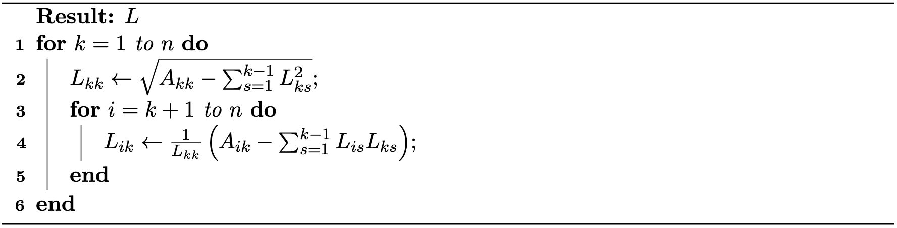
一旦完成分解，求解 就化为求解两个三角系统：
- 前向替换： 求解 得到 。
- 回代替换： 求解 得到 。
Cholesky 分解利用了 的对称性与正定性，相比 LU 分解等通用方法，同时降低了计算开销与内存占用。当系统规模不太大，或对病态系统需要高精度时，直接求解器被广泛采用。对于规模极大或高度稀疏的系统，则可能更倾向于迭代求解器，这将在下一节讨论。
基本迭代法
对于规模大或高度稀疏的线性系统，受内存或计算资源的限制，直接求解器可能变得不可行。此时，迭代法提供了另一种选择：它产生一个近似解序列，该序列（理想情况下）收敛到真实解。本节介绍两种最基本的迭代法：Jacobi 法与 Gauss-Seidel 法。
Jacobi 法
Jacobi 法是求解 的一种简单且完全可并行化的方法。在每次迭代中， 的每个分量仅利用上一次迭代的取值独立更新。设 ，其中 为 的对角部分， 为严格下三角部分， 为严格上三角部分。更新规则为： 或写成分量形式：
注记 37.2.1 (并行性). 在 Jacobi 法中，所有分量 可同时更新，因而非常适合并行计算。
Gauss-Seidel 法
Gauss-Seidel 法在 Jacobi 法的基础上改进：一旦某个分量的新值可用，就立即使用它。这意味着同一迭代内，每个新得到的 会立刻用于后续更新。更新规则为： 或写成分量形式： 也可以定义反向 Gauss-Seidel 迭代，其中每次迭代的更新扫描从 递减到 ： 或写成分量形式：
注记 37.2.2 (顺序更新). Gauss-Seidel 法通常比 Jacobi 法收敛更快，因为它在每次迭代中融入了最新信息。然而，其更新本质上是串行的。
收敛性分析
这三种方法——Jacobi、前向 Gauss-Seidel 与反向 Gauss-Seidel——都可写成如下形式： 其中 为迭代矩阵。具体而言， 分别对应 Jacobi、前向 Gauss-Seidel 与反向 Gauss-Seidel 迭代。这些方法的收敛性取决于谱半径 （即 的特征值绝对值的最大者）。当且仅当 时，方法收敛。
两类方法收敛的一个充分条件是 严格对角占优（即对所有 有 ）。对于 Gauss-Seidel 法，只要 对称正定（Symmetric Positive Definite，SPD），收敛性同样有保证。
终止准则
实际中，迭代法在解被认为足够精确时即终止，而不会无限运行下去。常见的终止准则包括：
- 基于残差： 当 或 时停止，其中 为给定的容差。
- 解的变化： 当 或 时停止，表明已收敛。
- 最大迭代次数： 达到预定迭代次数后停止，以防止无限循环。
基于相对残差的准则 最为常用，因为它直接衡量了当前解在考虑问题尺度的情况下满足原始线性系统的程度。
共轭梯度法
共轭梯度（Conjugate Gradient，CG）法是求解 形式大型稀疏线性系统的一种强有力迭代算法，其中 为对称正定（Symmetric Positive Definite，SPD）矩阵。与 Jacobi、Gauss-Seidel 等一般迭代法不同，共轭梯度（CG）专为对称正定（SPD）矩阵设计，已成为科学计算与数值仿真中的基础算法。
表述为二次优化问题
共轭梯度法也可以看作一种优化算法，用来最小化二次函数： 其中 为对称正定（SPD）矩阵。 的唯一全局极小点正是 的解。
经典最速下降法沿负梯度方向 更新 ，但该方法可能收敛缓慢，尤其是当 病态时。共轭梯度（CG）法克服了这一局限：它沿一列精心选取的方向 搜索，这些方向是 -共轭的（或称 -正交的），即对 有 。这一共轭性质保证沿某个方向取得的进展不会被后续步骤抵消，且沿各方向的极小化相互独立。
线搜索
给定共轭方向序列 ，最小化二次函数的问题就归结为寻找最优步长 ，使 充分逼近解 。
最直接的做法是贪心线搜索：从初始点 出发，选取搜索方向 ，然后关于 最小化 。对于二次函数，该优化问题具有无需矩阵求逆的简单闭式解： 其直观含义是清楚的：从 出发，选定方向 ，沿该方向移动直至目标函数达到极小。虽然这样一步未必到达全局极小，但它保证朝着最优解取得进展。
随后该过程迭代重复：在新点 处，选取下一个方向 ，计算相应步长 ，如此继续。
一般迭代过程可概括为： 其中 为搜索方向， 为第 步的残差。注意残差可以更新，而不必从头重算 ：。实际中，当 变得足够小（通常低于给定容差）时，可提前终止迭代过程，以提高计算效率。
共轭方向
搜索方向的选取对方法性能至关重要。若方向 选取不当，收敛将会缓慢。特别地，梯度下降（使用最速下降方向）在矩阵 病态时表现出缓慢收敛。
相反，若我们选取的方向两两 -共轭： 则算法效率会显著提升：不再出现“锯齿”行为，并且至多 步即可得到精确解，其中 为系统的维数：
不失一般性，假设 ，并令 取为初始残差。由于 ， 处的梯度为 ，因此令 。其余方向将被构造为与所有先前方向 -共轭。
记 为第 步的残差： 注意 等于 在 处的负梯度，因此标准梯度下降将沿方向 移动。
为构造共轭方向，我们要求每个新搜索方向 由当前残差 构造，同时与所有先前的搜索方向 -共轭。我们从负梯度 出发，用 Gram–Schmidt 过程使其关于 与所有先前搜索方向 正交：
算法化简
上述表达式可以大幅简化，从而得到共轭梯度算法简洁的最终形式。关键在于证明两个基本的正交关系。
正交性质。 我们首先确立如下正交关系成立：
证明概要。 由残差更新公式（公式 (37.3.4)），可递推地写出： 两边与 作点积： 由 -共轭性质（公式 (37.3.3)）与步长公式 ，可验证对 有 。
第二个正交关系 可由如下事实推出：按构造方式，每个残差 都位于搜索方向 的张成空间中，而这些方向又由先前的残差构造而来。
简化公式。 利用这些正交性质，共轭方向公式（公式 (37.3.5)）可大幅简化。由于对 有 ，我们有：
这使我们可以简化步长计算：
对于共轭方向更新，可以证明只有最近的方向才有影响。利用残差更新公式与正交性质：
代入正交关系（公式 (37.3.7) 与 (37.3.8)），上式化简为：
这一显著简化表明：只需保留最近的搜索方向 即可计算下一个方向 。
最终算法。 简化后的共轭梯度（CG）算法总结于 算法 37.3.1：
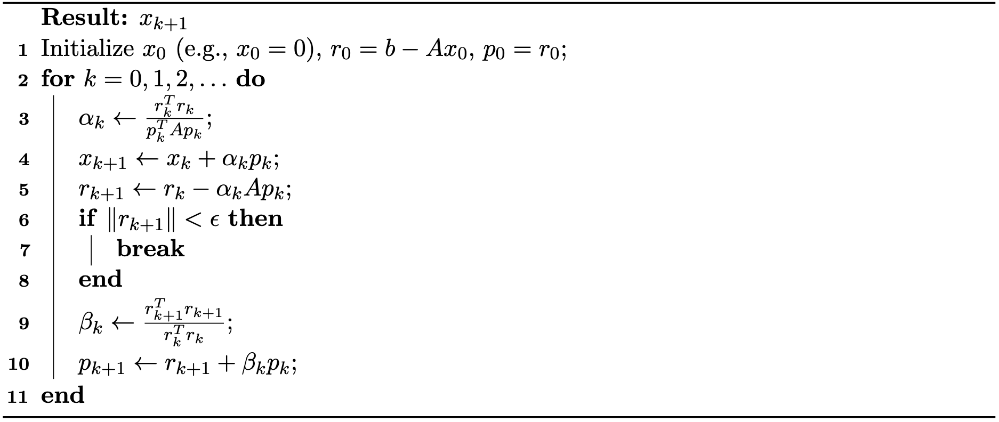
预条件
共轭梯度法的收敛速率本质上由矩阵 的条件数决定。当 病态（即条件数很大）时，共轭梯度（CG）可能收敛缓慢，需要许多次迭代才能达到可接受的精度。
预条件是一项关键技术，它通过将原系统变换为具有更有利谱性质的等价系统来加速收敛。其思路是求解修改后的系统： 其中 是精心选取的预条件子矩阵，它逼近 但求逆容易得多。
一种简单而有效的选择是对角（Jacobi）预条件子，即 ，只包含 的对角元素。预条件共轭梯度（CG）算法在求解变换后系统的同时，保持原算法的基本结构。
实际中，预条件相当于在每次迭代时用 对残差进行缩放；当 为对角矩阵时，这一操作计算代价很低。预条件共轭梯度（CG）算法沿用与标准共轭梯度（CG）相同的迭代结构，但作用在预条件后的残差上，对于病态问题往往能显著加快收敛。
小结
本节探讨了求解 形式的大型稀疏线性系统的基本方法，这类系统出现在基于优化的仿真中，尤其是在牛顿类方法中计算搜索方向时。
我们首先明确了背景：在投影牛顿法的每次迭代中，我们求解 ，其中 通常是对称正定（Symmetric Positive Definite，SPD）的替代矩阵。这归结为求解线性系统，对优化时间积分器至关重要。
直接求解器通过矩阵分解给出精确解。对于对称正定（SPD）系统，Cholesky 分解 将问题化为两个三角求解。直接法稳健而精确，但受计算资源限制，在超大规模系统上变得不可行。
迭代法为大型稀疏系统提供了替代方案。基本方法包括 Jacobi 法（天然可并行化）与 Gauss-Seidel 法（收敛更快但串行）。当迭代矩阵的谱半径小于 1 时，两者均收敛。共轭梯度（Conjugate Gradient，CG）法是处理对称正定（SPD）系统更精细的方法。共轭梯度（CG）构造 -共轭的搜索方向，保证已取得的进展不会被抵消，并借助正交关系显著提升效率。在精确算术下，共轭梯度（CG）至多 步收敛；而实际中配合预条件往往收敛快得多。
在直接法与迭代法之间如何取舍，取决于问题规模、稀疏结构与精度要求。直接法在需要高精度的中等规模问题上表现优异，而迭代法——特别是配合预条件的共轭梯度（CG）——对于大规模仿真是必不可少的。